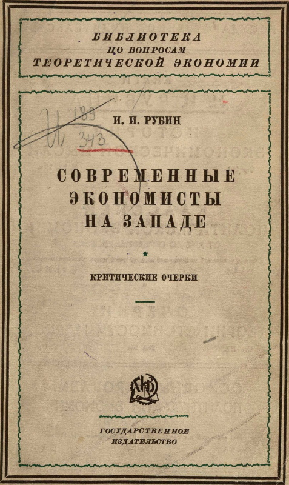

Современные экономисты на Западе

Критические очерки. Оппенгеймер. - Штольцман. - Амонн. - Петри. - Лифман.
Предисловие
Настоящая книга ставит себе целью познакомить читателей с экономическими теориями некоторых выдающихся современных западно-европейских экономистов и дать критический разбор их учений с точки зрения марксизма.
Очерки, вошедшие в настоящую книгу, объединены общностью идеи. Экономисты, указанные в подзаголовке нашей книги, интересуют нас не только как яркие научные индивидуальности, каждая с присущими ей своеобразными индивидуальными чертами, — эти экономисты имеют и нечто общее, и это общее заключается в том, что всю они могут быть рассматриваемы как яркие вестники глубокого кризиса, переживаемого современною буржуазною теоретическою экономией. Недаром свою новейшую книгу, появившуюся в 1925 г., Штольцман посвятил «кризису в современной политической экономии». Все разбираемые нами экономисты высказывают решительное недовольство современным состоянием теоретической экономии и тщетно делают попытки, каждый на свой лад, вывести ее из тупика. Эти тщетные попытки, порождаемые кризисом современной экономической мысли, в свою очередь сами являются ярким симптомом того же кризиса.
Отмеченный нами кризис экономической мысли в значительной мере связан с крушением надежд, возлагавшихся раньше на австрийскую школу. В конце XIX и начале XX столетия могло казаться, что австрийской теории суждено выполнить роль центра притяжения, который более или менее успешно соединит и примирит враждующие направления буржуазной -экономической мысли. Исходные положения психологической теории, с блеском развитые Менгером, Визером и Бем-Баверком, стали символом веры для большинства буржуазных экономистов. Сторонники этого направления завоевывали одну университетскую кафедру за другою и, упоенные своими победами, уверенно обещали в скором будущем перестроить на новых началах все здание экономической науки. За этими обещаниями, однако, не последовали дела. Австрийская теория оказалась бессильною перестроить все здание экономической науки и не пошла дальше исходных психологических предпосылок. Эти психологические предпосылки толкали мысль экономистов по ложному пути и завели ее в тупик, из которого никакой выход не ведет к познанию и объяснению реальных явлений капиталистического хозяйства. Период шумных успехов австрийской школы быстро сменился периодом бессильного топтания на месте и скептических размышлений над причинами собственных неудач.
В настоящее время можно с большею или меньшею уверенностью сказать, что эпоха почти безраздельного господства австрийской теории в официальной буржуазной науке кончилась или кончается. Скудость научных достижений австрийской школы не может не бросаться в глаза, и все более распространяется отрицательное или, по меньшей мере, скептическое отношение к индивидуалистическо-психологическому методу изучения хозяйственных явлений. С одной стороны, в научных кругах наблюдается усиление интереса к классической теории, которую австрийские экономисты в свое время объявили окончательно упраздненною. С другой стороны, экономисты так называемого «социального» направления обнаруживают смутную, но сильную тягу к сближению политической экономии с социологией. Наконец, даже ученые, сохраняющие индивидуалистическую точку зрения, отодвигают чисто психологический метод исследования на задний план по сравнению с математическим методом (напр., Шумпетер) или же заняты поисками нового обоснования для психологического метода (напр., Лифман). К числу представителей первого, нео-классического направления можно с известным правом отнести Оппенгеймера, который строит свою экономическую систему на комбинированной основе классической теории и извращенного марксизма. Психологическое направление представлено в нашей книге Лифманом, а социальному направлению мы отвели наибольшее место в лице его представителей: Штольцмана, Амонна и Петри.
Из перечисленных течений современной экономической мысли наиболее интересным и многообещающим является социальное направление. Сторонники его ищут новых путей для экономической науки и справедливо отвергают традиционные пути натуралистического объективизма, нашедшего свое выражение в системе классиков и доведенного до абсурда их вульгарными продолжателями, и натуралистического субъективизма, представленного австрийскою школою. В противовес натуралистическому субъективизму, который исходит из психических переживаний и поведения отдельного индивида, сторонники социального метода выдвигают идею социальной обусловленности поведения индивида. В противовес натуралистическому объективизму, внимание которого приковано к материально-техническим элементам хозяйственного процесса, они отстаивают необходимость изучения социальной формы хозяйства или социальных отношений между людьми. Обе эти идеи создают известное теоретическое сродство между представителями социального метода и сторонниками марксовой теории.
Однако наличие такого теоретического сродства не должно скрывать от глаз читателей коренного, принципиального отличия социального метода современных экономистов от социологического метода Маркса. Социальный метод в руках современных экономистов принимает такую форму, которая таит в себе серьезные опасности для научного исследования: он выступает в тесном союзе с философским идеализмом. Представители социального метода, в согласии с идеями Маркса, настаивают на необходимости изучения социальной формы хозяйства. Но что такое представляет собою эта социальная форма хозяйства и какое место занимает она в процессе общественного развития, — в ответе на этот вопрос они резко расходятся с Марксом. По учению Маркса, данная социальная форма хозяйства (или система производственных отношений между людьми) вырастает на основе определенного состояния материальных производительных сил общества и изменяется в зависимости от изменения последних. Развитие социальной формы хозяйства находится в теснейшей зависимости от развития материальных производительных сил общества.
Представители социального метода решительно возражают против такого «материалистического» понимания социальной формы хозяйства. По мнению Штольцмана, социальную форму хозяйства нельзя рассматривать как необходимое, причинно-обусловленное порождение определенного состояния производительных сил. Это значило бы низводить человеческую личность до роли материалистической марионетки. Штольцман признает человека свободным творцом своей судьбы и утверждает, что сфера социального регулирования хозяйства (т.е. междучеловеческих отношений) есть сфера действия свободной человеческой воли, стремящейся к осуществлению известных этических идеалов и целей. Материальный процесс производства подчинен закону причинной необходимости, но в сфере социального регулирования хозяйства действует закон нравственной свободы. К объяснению социальной формы хозяйства, этой сферы свободно осуществляемых нравственных целей, экономист должен подходить с телеологическим (целевым) а не каузальным (причинным) методом исследования.
Таким образом, по мнению Штольцмана, социальная форма хозяйства отделена от процесса материального производства такою же глубокою пропастью, какою потусторонний мир этической телеологии отделен от эмпирического мира причинной необходимости. Отрыв социальной формы хозяйства от материального процесса производства и составляет характернейшую черту современных сторонников социального метода. Если у Штольцмана этот отрыв выступает в резкой форме этической телеологии, выросшей на почве кантовской идеалистической этики, то у Петри он принимает более тонкую форму гносеологической телеологии, носящей на себе печать нео-кантианского учения Риккерта-Виндельбанда. Даже у Амонна, избегающего вторжений в область философии и остающегося на почве строго-научного каузального исследования, мы найдем нарочито порванными все нити, связывающие социальную форму хозяйства с материальным процессом производства.
В наших очерках, посвященных Штольцману, Амону и Петри, мы стараемся по возможности осветить и десницу и шуйцу современных сторонников социального метода в политической экономии. Мы отмечаем с признательностью плодотворную критическую работу, проделанную этими экономистами в их борьбе против вульгарной экономии и австрийской школы. Мы не можем не сочувствовать стремлению направить экономическую науку на путь исследования социальной формы хозяйства. Но вместе с тем мы считаем необходимым подробно выяснить глубокое отличие между учением Маркса, в свете которого социальная форма хозяйства оказывается неразрывно связанною с процессом развития материальных производительных сил общества, и учением современных экономистов, которые вырывают непроходимую пропасть между обеими этими сторонами единого общественного процесса. Мы надеемся, что наш разбор учений Штольцмана, Амонна и Петри поможет читателям критически отнестись к построениям сторонников социального метода, обнаруживающим, на первый взгляд, значительное сходство с построениями Маркса.
Очерк первый. Экономическая теория Франца Оппенгеймера
Франц Оппенгеймер является одним из наиболее выдающихся современных экономистов-теоретиков. Разносторонность его научных интересов и любовь к широким теоретическим обобщениям, блестящее литературное дарование и острый полемический талант придают научной физиономии Оппенгеймера черты яркой индивидуальности.
Оппенгеймер является творцом цельной «теоретической системы», пытающейся охватить и объяснить все основные явления капиталистического хозяйства. Даже Роберт Лифман, отнюдь не склонный к преувеличению чужих заслуг и в частности решительный противник Оппенгеймера, признает, что из всех экономических работ, появившихся в последние десятилетия, учение Оппенгеймера с наибольшим правом может претендовать на роль «систематической теории»[1].
Но Оппенгеймер не только академический ученый. Боевой темперамент социального реформатора влечет его из четырех стен ученого кабинета на шумную арену публицистики. Свою экономическую теорию Оппенгеймер хочет использовать для обоснования определенной системы практической политики и социальных реформ, которой он дает название «либерального социализма». Со свойственною ему страстностью он ведет теоретическую борьбу на два фронта: против прямых апологетов капиталистического строя, с одной стороны, и против марксизма, с другой. Свою систему либерального социализма Оппенгеймер противопоставляет пролетарскому социализму, а свою экономическую теорию — экономическому учению Маркса. Он пишет книги против социализма, выступает с очередными «опровержениями» марксизма и, по собственному признанию, в социалистических кругах заслужил репутацию «честолюбивого литератора, желающего создать себе имя в качестве марксоеда»[2].
Оппенгеймер, конечно, признает такую репутацию ни в малейшей мере не заслуженною. По временам он готов претендовать чуть ли не на роль «истинного ученика Маркса»[3], который из уважения к великому мыслителю берет на себя смелость критиковать его теорию и исправлять ее несовершенства.. Если в таких выражениях говорит о себе сам Оппенгеймер, то тем менее приходится удивляться, что некоторые его противники из буржуазного лагеря, готовые отнести к числу марксистов всякого экономиста, упоминающего о прибавочной стоимости и эксплуатации рабочих, видят в учении Оппенгеймера «попытку нового обоснования марксизма и объективной теории стоимости»[4].
Промежуточное положение, занимаемое Оппенгеймером между буржуазною и марксистскою политическою экономией, и попытка его противопоставить свою собственную экономическую теорию марксовой требуют со стороны марксистов пристального внимания к учению Оппенгеймера. В марксистской литературе необходимо подвергнуть это учение детальному критическому анализу, которого оно заслуживает как по своему широкому теоретическому диапазону, так и по важности тех практически-политических выводов, которые из него делаются[5].
В настоящей статье мы не ставим себе задачею дать критический разбор всех частей теоретической и практической системы Оппенгеймера. Мы, во-первых, совершенно оставляем в стороне его практическую программу либерального социализма. Во-вторых, из обширной теоретической системы Оппенгеймера мы делаем предметом нашего исследования лишь его основные, исходные теоретические учения: теорию стоимости и теорию прибавочной стоимости (неразрывно связанную с учением о монополии). Эти учения представляют для нас наибольший интерес; они служат Оппенгеймеру фундаментом для возведения всего его теоретического здания, они призваны, по мысли их автора, заменить собою теорию стоимости и прибавочной стоимости, созданную Марксом, — эту основу всей марксовой экономической системы.
Глава 1. Две формулы стоимости Оппенгеймера
Оппенгеймер ставит себе задачею дать «новое обоснование объективной теории стоимости». Он считает себя продолжателем дела классиков и Маркса. Классики, в частности Рикардо, утверждали, что стоимость продуктов определяется «количеством труда», затраченного на их производство. Маркс внес, по мнению Оппенгеймера, в учение классиков существенную поправку: он учил, что стоимость продуктов определяется количеством «рабочего времени», необходимого для их производства. Но и теория Маркса не свободна от ошибок и противоречий. Объективная теория стоимости нуждается в новом обосновании, и такое новое обоснование Оппенгеймер предлагает в виде своей собственной теории, согласно которой стоимость продуктов определяется «стоимостью труда», в них заключенного. Если теория классиков может быть названа Arbeitsmengentheorie, а теория Маркса — Arbeitszeittheorie, то свое собственное учение Оппенгеймер называет Arbeitswerttheorie[6]. Оппенгеймер не скупится на похвалы своей «новой» теории: он видит в ней удачное завершение более чем двухсотлетней эволюции теории трудовой стоимости и надеется при ее помощи дать «впервые удовлетворительное решение» [7] труднейшей проблемы политической экономии.
Теория стоимости, формулированная классиками, страдала следующими тремя важнейшими недостатками:
Классики в своей теории издержек производства вращались в порочном кругу: они выводили стоимость одного товара (продукта) из стоимости других товаров (средств производства).
Они не сумели решить проблему квалифицированного труда, т. е. объяснить факт обмена продукта меньшего труда квалифицированного работника на продукт большего труда простого работника.
Наконец, они объясняли только законы образования цен свободно воспроизводимых продуктов, но не исследовали обмена монопольных продуктов.
Маркс в известной мере устранил первые два недостатка. Определяя стоимость продукта количеством общественно-необходимого рабочего времени или труда, он «с величайшим искусством избежал порочного круга» [8], отмеченного в 1-м пункте. Также удалось ему, хотя и с некоторою натяжкою, свести меньшее количество квалифицированного труда к большему количеству простого труда. Но третий из перечисленных недостатков не был устранен и Марксом. Марксова формула трудовой стоимости охватывает только случаи обмена свободно воспроизводимых товаров и ни в малейшей мере не распространяется на случаи монопольного обмена. Маркс не сумел дать «всеобъемлющую» формулу стоимости, «он изучал только часть проблемы стоимости, ошибочно полагая, что решает всю проблему»[9].
Предлагая свое «новое обоснование объективной теории стоимости», Оппенгеймер надеется, что оно устранит полностью все три отмеченных недостатка. В своей теории стоимости Оппенгеймер ставит себе следующие задачи:
избежать порочного круга, которым страдала классическая теория стоимости, и
дать «всеобъемлющую» формулу стоимости, охватывающую все без исключения случаи обмена, а именно: а) обмен свободно воспроизводимых продуктов, произведенных трудом одинаковой квалификации; б) обмен свободно воспроизводимых продуктов, произведенных трудом неодинаковой квалификации, и в) обмен монопольных продуктов.
Первую из перечисленных задач Оппенгеймер пытается решить в своей первой формуле стоимости, которая рассматривает стоимость продукта как часть дохода производителя. Вторую задачу он хочет решить в своей второй формуле стоимости, согласно которой стоимость продукта определяется стоимостью труда, в нем заключенного. К рассмотрению обеих этих формул стоимости мы должны теперь обратиться
Чтобы открыть законы «статической цены» (под которою Оппенгеймер понимает стоимость) товаров, необходимо исследовать закон статики или равновесия рыночного хозяйства. Оппенгеймер, без надлежащего на то права, приписывает себе честь открытия этого закона, который он формулирует следующим образом: «Процесс рыночного хозяйства, конкуренция имеет тенденцию к уравнению всех доходов»[10]. При равенстве доходов отдельных производителей наступает состояние равновесия рынка, и рыночные цены товаров совпадают с их «статическими ценами» (стоимостью). «Такое соотношение всех цен, при котором конкуренция перестает действовать по той причине, что все доходы по возможности уравнены, мы называем статическим соотношением цен, а каждую из этих цен — ста- тическою ценою продукта»[11].
В реальном капиталистическом хозяйстве доходы разных производителей на деле далеко не равны. Они разнятся в зависимости: 1) от личной квалификации данного производителя и 2) от наличия у него тех или иных «монопольных позиций» (монополий). Следовательно, равновесие рыночного хозяйства наступает не тогда, когда доходы всех производителей математически равны друг другу, а при условии «соответствия этих доходов личной квалификации производителей и отношению их к монопольным позициям (в качестве активных или пассивных лиц)»[12] т.е. в качестве владельцев монополии или лиц, страдающих от наличия монополии у других производителей. «Квалификация» и «монополии» — таковы две причины, нарушающие равенство доходов производителей. «Назовем доход производителя средней квалификации, при отсутствии монополий, Е; прибавку (или скидку) за высшую или низшую квалификацию назовем ±q, а прибавку (или скидку) на монополию ±m»[13]. В таком случае доход любого производителя может быть выражен формулою: Е ±q±m, в которой Е представляет собою «постоянную величину». Доход каждого отдельного производителя состоит из этой «постоянной величины» (Е) плюс (или минус) известная сумма за личную квалификацию (q) плюс (или минус) известная сумма (m), зависящая от отношения данного лица к монопольным позициям. Как видно из этой формулы, включающей в себя три неизвестных, наше исследование должно быть разбито на три ступени или стадии. Сперва необходимо изучить доход производителя и стоимость продуктов в «обществе равных», после чего необходимо перейти к учению о квалификации и, наконец, к теории монополии.
Представим себе «общество равных», в котором отсутствуют какие бы то ни было различия в «квалификации» и «монопольной позиции» отдельных членов. Как понятие «квалификации», так и понятие «монополии» Оппенгеймер понимает в очень широком смысле, в отличие от общепринятого. Отсутствие монополии означает у него не только свободу конкуренции, но и равное снабжение всех производителей средствами производства. Равенство личной квалификации означает, что «не существует никаких персональных различий в физической силе и в интеллектуальном развитии, в образовании, в силе воли и т. п.» отдельных производителей[14]. Иначе говоря, предполагается абсолютное естественное равенство отдельных членов общества. При таких условиях «очевидно, что все производители работают одинаковое время, — ибо и прилежание предполагается у всех равным, — и в статике все доходы одинаково равны»[15]. Каждый член общества получает одинаковый годичный доход, сумму которого обозначим буквою Е.
Под «доходом» здесь понимается не определенная сумма денег или меновых стоимостей, а определенная сумма потребительных благ. Равенство доходов отдельных производителей означает равенство в снабжении их предметами потребления (в широком смысле слова). Равенство доходов является неизбежным спутником всякого «общества равных», независимо от того, господствует ли в нем натуральное хозяйство или развитой денежный обмен.
Возьмем сперва натуральное хозяйство, где обмен вообще не происходит. Хотя продукты не имеют здесь меновой стоимости и доходы разных производителей не выражаются в одной и той же единице (деньгах), тем не менее «здесь доходы вполне равны. Это значит, что все семьи, входящие в состав данного общества, потребляют ежегодно равные блага: их пища, одежда, жилище, украшения и т. п. равноценны (wertgleich)»[16]. Эта «равноценность» благ не означает равенства их меновой стоимости или уравнения их в обмене, так как последний вообще отсутствует. Не означает она также «субстанционального равенства» благ, т. е. полного тождества потребительных пайков, достающихся в виде дохода отдельным производителям. Последние, по предположению Оппенгеймера, занимаются разными промыслами — одни охотою, другие земледелием и т. п., при чем все производители имеют возможность свободного перехода от одних занятий к другим. При отсутствии обмена, разные производители получают в качестве дохода (и потребляют) различные потребительные блага (одни хлеб, другие мясо, третьи рыбу и т. и.). «Несмотря на это, реальные количества благ, получаемые отдельными частными хозяйствами, равны и равноценны (wertgleich), хотя субстанционально и не одинаковы. Они представляют собою равные массы потребительных стоимостей, субъективных ценностей. Ибо, при предположенном равенстве квалификации, всякий, кто оценивал бы доход другого лица выше своего собственного, мог бы легко получить такой же доход, соответственно изменив характер своего производства»[17]. Например, если бы член общества, занимающийся охотою, пришел к выводу, что хлеб, производимый земледельцем, по своей ценности превосходит добываемое им самим (при равной затрате труда) мясо, он перешел бы от охотничьего промысла к земледельческому.
Отсюда Оппенгеймер делает следующий вывод, критический разбор которого будет нами дан ниже: «Все доходы равноценны в двух отношениях: во-первых, по издержкам производства, ибо они представляют равные затраты рабочей силы одинаковой квалификации, и, во-вторых, по субъективной ценности, ибо любой доход может быть непосредственно заменен, другим. Правда, каждый индивидуум субъективно оценивает массу благ, составляющую его доход, выше, чем доходы других лиц, но это возможно только в том случае, если, рассматриваемые с «интерсубъективной» точки зрения, все доходы равноценны»[18].
Иначе говоря, если охотник субъективно оценивает добываемое им мясо выше, чем хлеб, добываемый земледельцем, а последний субъективно оценивает свой хлеб выше мяса, то с «интерсубъективной» точки зрения данное количество хлеба и данное количество мяса (т. е. доход земледельца и доход охотника) равноценны.
Как видим, в «обществе равных» с натуральным хозяйством отдельные лица получают равный доход, не в смысле равной меновой стоимости, а в смысле «равного и равноценного» (хотя и не тождественного) количества потребительных благ.
Это же положение сохраняет свою силу и для «общества равных» с развитым денежным хозяйством. В денежном хозяйстве «массы потребительных стоимостей», составляющие доход отдельных лиц, также равноценны, объективно как воплощение равных трудовых затрат одинаковой продолжительности, и субъективно как равные субъективные или интерсубъективные ценности. Но здесь это двойное равенство выражается еще яснее, чем прежде, так как все доходы имеют и равную денежную стоимость[19]. Прежде, в натуральном хозяйстве, констатирование равенства доходов покоилось на непрочных основаниях, на грубых признаках приблизительно равного материального преуспеяния отдельных хозяйств. Денежное же хозяйство имеет «более тонкий и точный масштаб равенства доходов, а именно точное равенство денежного дохода» отдельных производителей[20]. Но было бы ошибочно это денежное выражение дохода (или деньги) принимать за самый доход: последний состоит не из денег, а из «реальной массы потребительных благ»[21]. Оппенгеймер усиленно подчеркивает эту мысль, занимающую, как увидим ниже, центральное место в его построении.
Итак, первый вывод Оппенгеймера гласит: в «обществе равных» все производители получают равный доход Е, понимая под последним не равную сумму меновых стоимостей, а равноценную массу потребительных благ (выражаемую в денежном хозяйстве в равной сумме денег).
На основе изложенного учения о «доходе» производителей Оппенгеймер переходит к изучению «статической цены» или стоимости продуктов. Раз каждый производитель получает одинаковый доход, то легко вычислить стоимость[22] отдельного продукта, им производимого. Назовем число единиц, изготовляемых данным производителем в течение года (напр., пудов хлеба, мяса и т. и.), буквою n. Чтобы получить в течение года доход Е, производитель должен от продажи каждой единицы продукта выручать доход, равный $\frac{E}{n}$ . Если же «себестоимость» (или издержки производства[23] единицы продукта для производителя равна s, то стоимость каждой единицы продукта равна s + $\frac{E}{n}$, т. е. издержкам производства плюс частное от деления годового дохода производителя на число изготовляемых им в течение года продуктов[24]. Для упрощения предположим, что издержки производства (s) равны нулю, т. е. что на производство продукта затрачивается только живой труд производителя. В таком случае стоимость продукта равна $\frac{E}{n}$. Предположим, что в данном обществе Е (т. е. годичный доход, одинаковый для всех производителей) составляет 3.000 марок. В таком случае, если земледелец добывает в год 1.500 пудов хлеба, а охотник 300 пудов мяса, стоимость пуда хлеба равна $\frac{3.000}{1.500}$ = 2 марк., а стоимость пуда мяса равна $\frac{3.000}{300}$=10 марк. Стоимость пуда хлеба равна $\frac{1}{1.500}$ части годового дохода Е, а стоимость пуда мяса равна $\frac{1}{300}$ части того же годового дохода Е. Стоимость каждого продукта выражена в виде определенной доли годового дохода производителя. Таков второй и центральный вывод Оппенгеймера: стоимость продукта (v) выводится из дохода производителя: v = s + $\frac{E}{n}$ или в упрощенном виде **v = $\frac{E}{n}$ **.
Этой своей «формуле стоимости» Оппенгеймер придает чрезвычайно важное значение. По его словам, это — «формула абсолютной стоимости каждого товара самого по себе. Стоимость его выражена не в стоимости других товаров, а как часть равного для всех дохода, состоящего не из товаров, т. е. меновых стоимостей, а из потребительных стоимостей»[25].
Именно поэтому данная формула свободна от порочного круга, отличавшего теорию классиков. Если бы доход (Е) состоял из меновых стоимостей, то сведение стоимости продукта к части дохода было бы равносильно сведению одной стоимости к другой стоимости: мы продолжали бы вращаться в том же порочном кругу, которым страдали прежние формулировки теории стоимости. Именно для того, чтобы избежать этого порочного круга, Оппенгеймер многократно и настойчиво повторяет, что «доход есть не меновая стоимость, а потребительная. Под «доходом» всякая правильная теория понимает реальное количество благ и услуг, предназначенных для пользования (потребления). А то, что служит для пользования, является уже не товаром или меновою стоимостью, а лишь потребительною стоимостью, полезностью»[26]. «Для целей сравнения доход может быть выражен в деньгах, т. е. в массе меновых стоимостей, — но рассматриваемый сам по себе он представляет собою только массу потребительных стоимостей»[27]. Если теория классиков сводила меновую стоимость товара к издержкам производства (т. е. к меновой стоимости других товаров) и таким образом впадала в порочный круг, то формула Оппенгеймера от него свободна: она исходит из дохода, как реальной массы потребительных благ, и рассматривает «статическую цену» (стоимость) товара, как известную часть этого дохода [28].
Установив формулу дохода производителей и стоимости продуктов в «обществе равных», Оппенгеймер делает попытку связать эту формулу с теорией трудовой стоимости. До сих пор мы рассматривали доход производителя, или получаемый его хозяйством плюс (Lust); теперь необходимо рассмотреть минусы или пожертвования (Last) производителя, заключающиеся в его трудовых затратах, необходимых для получения данного дохода Е. Мы знаем, что в «обществе равных» все производители затрачивают равное количество труда одинаковой квалификации, скажем, 3.000 часов труда в год. Следовательно, доход Е (3.000 марок) добыт при помощи определенной трудовой затраты (3.000 часов труда). Это значит, что реальная масса потребительных стоимостей, из которых состоит доход Е, стоила производителю 3.000 часов труда, и, обратно, данное количество труда принесло производителю доход Е. Отсюда следует, что данное количество труда имеет стоимость (ist wert) Е, а каждый затраченный час труда имеет стоимость (ist wert) одной марки, так как именно такой доход час труда приносит каждому производителю «в виде потребительных стоимостей, а при продаже продукта — в виде меновых стоимостей»[29]. Таким образом, не только продукт труда, но и самый труд имеет стоимость, при чем стоимость продукта и стоимость затраченного на его производство труда равны. Стоимость труда (или рабочего времени) определяется стоимостью его продукта.
Эта формула «стоимости труда» относится прежде всего к труду самостоятельных производителей. Но в «обществе равных», все члены, которого одинаково снабжены средствами производства, эта же формула применима и к стоимости труда (т. е. к заработной плате) несамостоятельных работников, продающих свои услуги другим лицам. Раз час труда доставляет доход в 1 марку и потому имеет стоимость (ist wert) в 1 марку, то несамостоятельный работник (имеющий возможность заняться и самостоятельным производством) не согласится продать свой часовой труд за меньшую плату. В «обществе равных» заработную плату работника составляет полный продукт (или полная стоимость продукта) его труда[30].
Как видим, для «общества равных» Оппенгеймер предлагает следующие формулы:
Формула «дохода»: все производители получают равный доход, понимая последний в смысле совокупности потребительных благ.
Формула «стоимости продукта»: стоимость продукта составляет определенную часть годичного дохода производителя.
Формула «стоимости труда»: труд имеет стоимость, определяемую стоимостью продукта, произведенного при его помощи.
Формула «заработной платы»: заработная плата работника равна стоимости его труда.
Все эти формулы между собою тесно связаны: каждая последующая основана на предыдущей. Оставляя пока в стороне проблему заработной платы и останавливаясь на проблеме стоимости продуктов, мы видим, что главное своеобразие новой «формулы стоимости» Оппенгеймера заключается в том, что стоимость продукта рассматривается как часть годичного дохода производителя. Понятие «дохода» в смысле известной массы потребительных благ составляет исходный пункт всех рассуждений Оппенгеймера. При помощи своего учения о стоимости продукта, как части дохода производителя, Оппенгеймер надеется спасти теорию стоимости от порочного круга, которым она страдала у классиков. Однако, наряду с изложенною нами «формулою стоимости», которая сводит стоимость продукта к доходу производителя, в сочинениях Оппенгеймера еще чаще встречается вторая «формула стоимости», которая гласит, что стоимость продукта определяется стоимостью труда, затраченного на его производство. Эта формула занимает в рассуждениях Оппенгеймера такое центральное место, что по ее имени он назвал свою теорию стоимости «Arbeitswerttheorie». На место марксовой «Arbeitszeittheorie» Оппенгеймер предлагает поставить свою «Arbeitswerttheorie», согласно которой стоимость продуктов определяется не количеством труда, а стоимостью труда, затраченного на их производство. При помощи этой формулы легко объясняется тот факт, что продукт 2-часового труда квалифицированного работника обменивается на продукт 4-часового труда неквалифицированного работника: оба эти продукта содержат в себе неравные количества труда, но равные стоимости труда (так как стоимость одного часа труда первого работника в два раза выше стоимости 1 часа труда последнего работника).
В более ранних сочинениях Оппенгеймера вся его теория стоимости исчерпывалась второю формулою, которая сводит стоимость продуктов к стоимости труда. В своем позднейшем и основном теоретическом исследовании «Wert und Kapitalprofit»[31] Оппенгеймер, как было изложено выше, положил во главу угла всего своего построения первую формулу стоимости, как части дохода. Вторая же формула стоимости изображается им как производная от первой формулы и опирающаяся на нее.
Действительно, на основе изложенного выше учения о доходе легко придти ко второй формуле стоимости. Мы видели, что в «обществе равных» самый труд приобретает стоимость, а именно «стоимость труда» (или рабочего времени) = стоимости продукта, произведенного при помощи этого труда. Но это равенство можно перевернуть и читать справа налево. В таком случае получаем вторую формулу стоимости: стоимость продукта = стоимости труда, затраченного на его производство. Все продукты имеют как раз статическую цену (т. е. стоимость. И. Р.) всего затраченного на них рабочего времени»[32] (или труда). Выше мы принимали, что в «обществе равных» 1 час труда имеет стоимость в 1 марку. Если производитель затратил на изготовление данного продукта 10 часов труда, то стоимость этого продукта (не считая стоимости израсходованного сырья, машин и т. п.) будет равна стоимости затраченного труда, т. е. 10 маркам. Производитель не может взять за продукт более высокую цену, так как в этом случае его доход оказался бы выше дохода других производителей. Но он и не вынужден брать за него меньшую цену, ибо в этом случае его доход упал бы ниже общего уровня доходов всех производителей. К стоимости израсходованного им сырья, машин и т. и. производитель прибавляет как раз «статическую цену затраченного им рабочего времени»[33], т. е. 10 марок.
Итак, вторая формула стоимости гласит: стоимости продуктов пропорциональны стоимости труда, затраченного на их производство. Но в «обществе равных» «стоимость труда» всех производителей, при равенстве их квалификации и отсутствии монополий, одинакова: 1 час труда любого производителя имеет стоимость в 1 марку. Если на производство одного продукта затрачиваются 4 часа, а на производство другого продукта — 2 часа, то, — при равной квалификации обоих производителей, — первый продукт будет иметь вдвое большую стоимость, чем последний продукт. Если для производства центнера пшеницы требуются два дня труда, а для производства фунта меди — один день, то один фунт меди обменивается на половину центнера пшеницы, т. е. один день рабочего времени одного производителя обменивается на один день рабочего времени другого производителя. В «обществе равных», следовательно, имеет силу закон трудовой стоимости, развитый Рикардо и Марксом. Здесь статические цены (стоимости) продуктов, действительно, пропорциональны количествам труда (или рабочего времени), затраченного на их производство[34]. Но Маркс ошибочно принимал эту формулу трудовой стоимости за основной экономический закон: формула Arbeitszeittheorie есть не более, как частный случай применения формулы Arbeitswerttheorie (согласно которой стоимость продуктов определяется стоимостью труда) в «обществе равных», где стоимость труда всех производителей одинакова.
Закон трудовой стоимости Рикардо-Маркса оказывается неприменимым там, где различные производители отличаются друг от друга по своей личной квалификации или по своему отношению к монопольным позициям. При наличии «квалификации» или «монополий» стоимости продуктов труда пропорциональны не количествам труда, затраченного на их производство, а стоимости этого труда.
Мы познакомили читателя с обеими «формулами стоимости» Оппенгеймера, между собою тесно связанными. Теперь мы должны перейти к их критическому анализу. В следующей главе нами будет дан критический анализ первой формулы стоимости Оппенгеймера, а в третьей главе — анализ его второй формулы стоимости.
Глава 2. Критика первой формулы стоимости оппенгеймера (Стоимость и доход)
Первая формула стоимости Оппенгеймера, эта основа всей его теории стоимости, сводится к следующим положениям.
В «обществе равных» все производители затрачивают равное количество труда одинаковой квалификации и получают равный доход (Е) в смысле равноценной массы потребительных благ. Каждый отдельный продукт имеет стоимость этой массы потребительных благ (Е), деленной на число продуктов (n), изготовленных производителем в течение года. Получаем «формулу стоимости»: v = $\frac{E}{n}$ [35]. Понятие «стоимости» продукта выводится из понятия «дохода» производителя в «обществе равных». Критический анализ этой формулы стоимости необходимо поэтому начать с анализа понятия «дохода» (Е), положенного Оппенгеймером в основу всего его построения.
Присмотримся прежде всего внимательнее к «обществу равных» Оппенгеймера. На первый взгляд может казаться, что Оппенгеймер прибегает здесь к тому же абстрактно-изолирующему приему исследования, при помощи которого Маркс построил свое «общество простых товаропроизводителей», лежащее в основе его теории трудовой стоимости. На самом деле, однако, «общество равных» Оппенгеймера не имеет ничего общего с «обществом простых товаропроизводителей» Маркса.
Маркс берет предметом своего исследования капиталистическое общество и изучает отдельно различные типы производственных отношений между людьми, господствующие в нем. Абстрагируя от социально-классового различия между разными производителями (т. е. от производственных отношений между капиталистами и рабочими), Маркс исследует в своей теории стоимости производственные отношения между равноправными, друг от друга формально независимыми, товаропроизводителями. Маркс предполагает социально-классовое равенство этих «простых товаропроизводителей», но он никоим образом не предполагает абсолютного равенства принадлежащих им личных и материальных факторов производства. В обществе простых товаропроизводителей Маркса между отдельными производителями того же продукта могут существовать различия как в физической силе, интенсивности и ловкости труда, так и в характере употребляемых ими средств производства[36] (отсюда противоположность между индивидуальным и общественно-необходимым трудом). Кроме того, может быть различною продолжительность подготовки для производителей, занятых разными видами труда (отсюда противоположность между трудом простым и квалифицированным).
Если Маркс имеет в виду «социальное равенство» товаропроизводителей, то построение Оппенгеймера покоится на фантастическом представлении об абсолютном естественном равенстве отдельных производителей, их физических, интеллектуальных и моральных качеств (поскольку они отражаются на их трудовой деятельности). Предполагается полное равенство их физических сил и интеллекта, силы воли и прилежания, продолжительности и интенсивности труда. Также отсутствуют какие бы то ни было различия в ловкости отдельных производителей данной профессии и совершенстве их орудий труда, равно как в квалификации разных профессий[37].
Критики Маркса, в их числе и Оппенгеймер, неоднократно нападали на его, по их словам, искусственную конструкцию общества «равных» товаропроизводителей. Как видим, сам Оппенгеймер, приступив к анализу явлений стоимости, построил гораздо более искусственную и фантастическую гипотезу абсолютного естественного равенства отдельных производителей. Гипотеза Маркса в несравненно большей мере близка к реальной действительности, чем построения гипотезы Оппенгеймера, обремененной множеством фантастических и теоретически «излишних» предположений.
Однако главная беда теории Оппенгеймера заключается не в наличии теоретически «излишних» предположений, а в отсутствии тех «необходимых» предположений, без которых не может быть построена теория стоимости. Последняя предполагает меновое общество, состоящее из «товаропроизводителей», т. е. производителей, изготовляющих продукты для рынка и направляющих свой труд в ту или иную отрасль производства в зависимости от возможности получения в ней (при равной затрате труда) большего количества меновой стоимости (выраженной в деньгах). Производство на рынок и господство меновой стоимости в роли регулятора общественного производства (т. е. регулятора распределения общественного труда между разными отраслями), —таковы необходимые предпосылки теории стоимости.
Эти предпосылки отсутствуют, к нашему удивлению, в построении Оппенгеймера. Его «общество равных» основано на натуральном хозяйстве: отдельные члены его в своей производственной деятельности руководствуются стремлением к получению возможно большей массы потребительных стоимостей (благ). Правда, Оппенгеймер предусматривает и возможность денежного хозяйства в «обществе равных». Но это денежное хозяйство является у него лишь видоизмененною формою натурального хозяйства, и деньги (меновая стоимость) служат лишь для более точного измерения массы потребительных стоимостей. Свои главные выводы Оппенгеймер извлекает из анализа натурального хозяйства, господствующего в «обществе равных».
Можно только удивляться, каким образом Оппенгеймер не заметил коренной противоречивости и теоретической несостоятельности всего своего построения. Закономерность «рыночного хозяйства» (Marktwirtschaft) он хочет открыть из анализа натурального хозяйства, в котором никакого обмена и рынка не существует. Законы образования «статической цены» (меновой стоимости) продуктов он изучает на примере такого хозяйства, в котором продукты вообще никакой меновой стоимости и цены не имеют. Правда, Оппенгеймер вносит в изображаемое им натуральное хозяйство одну важную черту, заимствованную из менового хозяйства, а именно возможность для отдельных производителей перехода от менее выгодных занятий к более выгодным[38]. Мы не будем здесь останавливаться на доказательстве той мысли, что в действительности безразличие к конкретным видам труда и массовые переходы отдельных производителей (а не целых общин) от менее выгодных занятий к более выгодным являются характерными чертами менового, а не натурального хозяйства. Согласимся на минуту с Оппенгеймером и предположим вместе с ним возможность существования натурального хозяйства абсолютно равных производителей, которые свободно меняют свои занятия в зависимости от их выгодности. Установится ли в таком хозяйстве то «равенство доходов», о котором говорит Оппенгеймер?
Представим себе, что наше «общество равных» состоит из трех производителей, из которых один занимается земледелием, другой — охотою и третий — рыболовством. Обмена не существует, каждый из производителей потребляет целиком добываемый им продукт. Оппенгеймер утверждает, что все три производителя получают равный доход (Е). Значит ли это, что все они получают одинаковые, тождественные предметы потребления? Нет, доходы производителей «субстанционально» различны: первый добывает и потребляет только хлеб, второй — только мясо, третий — рыбу. Значит ли равенство дохода, что земледелец может получить у соседнего племени в обмен за весь добытый им хлеб такое же количество, скажем, металла, какое может получить охотник в обмен за все добытое им мясо? Нет, это значило бы рассматривать доход производителя как известное количество меновых стоимостей, что противоречит построению Оппенгеймера, который настаивает на том, что доход понимается в смысле массы потребительных стоимостей[39].
Но, если мы будем рассматривать доход земледельца как известное количество хлеба, доход охотника — как известное количество мяса и т. д., в чем же заключается «равенство и равноценность» этих доходов? По мнению Оппенгеймера, в данном случае имеет место равенство «субъективных ценностей», которое проявляется в том, что ни один производитель субъективно не расценивает доход другого производителя выше, чем свой собственный. Если бы земледелец субъективно расценивал массу ежегодно добываемого охотником мяса выше массы ежегодно добываемого им самим (при равной затрате труда) хлеба, он перешел бы от занятия земледелием к охоте. То же относится и к охотнику, рыболову и т. д. Значит ли это, однако, что каждый производитель субъективно считает свой доход равным по ценности доходу всякого другого производителя? Нет, сам Оппенгеймер признает, что земледелец именно потому и занимается земледелием, что массу хлеба, составляющую его ежегодный доход, он субъективно расценивает выше, чем массу мяса, составляющую ежегодный доход охотника. Наоборот, охотник субъективно расценивает выше свой собственный доход и т. д. Но если так, то, очевидно, о равенстве «субъективных ценностей» говорить не приходится, и все утверждение о «равенстве и равноценности» доходов разных производителей теряет свой смысл. Оппенгеймер надеется спасти свое положение следующею туманною фразою: «Правда, каждый индивидуум субъективно оценивает массу благ, составляющую его доход, выше, чем доходы других лиц, но это возможно только в том случае, если, рассматриваемые с «интерсуб’ективной» точки зрения, все доходы равноценны (wertgleich)»[40]. Мы не будем уличать здесь Оппенгеймера в противоречии: выше он говорил о равенстве «субъективных ценностей», а теперь доказывает, что, несмотря на неравенство субъективных оценок, существует «интерсубъективная» равноценность доходов. Но можно ли считать доказанным утверждение, что факт оценки каждым производителем своего дохода выше доходов других лиц возможен только в том случае, если все эти доходы «интерсубъективно» (объективно) равноценны? Такое утверждение совершенно не доказано. Вполне возможно, что доходы наших трех производителей объективно разноценны, а вместе с тем каждый из них субъективно расценивает свой доход выше доходов других лиц. Ведь сам Оппенгеймер часто повторяет, что из высоты субъективных оценок нельзя делать никаких выводов о величине объективной ценности.
Несостоятельность всего построения Оппенгеймера с неизбежностью вытекает из противоречивости поставленной им себе теоретической задачи: построить теорию менового хозяйства на основе анализа натурального хозяйства, представить меновую стоимость продукта как часть совокупности потребительных стоимостей (составляющих доход Е). Чтобы решить эту противоречивую задачу и перебросить мостик от натурального хозяйства к меновому, Оппенгеймер привнес в свою картину натурального хозяйства понятие «равноценности» доходов, выросшее на почве менового хозяйства и предполагающее повседневное объективное приравнивание в обмене различных продуктов (потребительных благ) как меновых стоимостей (выраженных в деньгах). Но чуждое существу натурального хозяйства понятие «равноценности» доходов осталось у Оппенгеймера глубоко противоречивым. Оппенгеймер не только не доказал факта равноценности доходов в натуральном хозяйстве «общества равных», но и не объяснил даже, в чем именно может заключаться эта объективная («интерсубъективная») равноценность доходов, раз последние рассматриваются не как известная сумма меновых стоимостей, а как масса реальных потребительных благ. В данном случае мы имеем интересный пример того, как тесно связано данное экономическое понятие (равноценности доходов) с определенною социальною средою (товарно-меновым хозяйством) или определенным типом производственных отношений людей: оперирование данным экономическим понятием вне той социальной среды, от явлений которой оно абстрагировано, ничего, кроме вреда, науке принести не может.
Раз падает утверждение о «равноценности доходов» в натуральном хозяйстве «общества равных», то тем самым оказывается несостоятельною и формула стоимости продукта как части дохода (v = $\frac{E}{n}$ ). Если доход понимается как реальное количество благ, предназначенных для потребления (1.500 пудов хлеба или 300 пудов мяса и т. п.), то не может быть речи о «равноценности» разных доходов и равенстве каждого из них одной и той же величине Е. Следовательно, невозможно выразить меновую стоимость продукта в виде величины Е, деленной на число изготовленных продуктов (n). Если доход земледельца, рассматриваемый как реальное количество благ (1.500 пудов хлеба), разделить на число изготовленных продуктов, т. е. на 1.500, то мы получим единицу продукта, т. е. 1 пуд хлеба, но никак не стоимость пуда хлеба, как предполагает Оппенгеймер. Из формулы v = $\frac{E}{n}$ ясно, что v составляет дробную часть Е и, следовательно, однородно с последним. Если Е есть совокупность потребительных благ, то v есть также потребительное благо, но никак не его «статическая цена» (меновая стоимость). Рассматривать v как меновую стоимость единицы продукта мы могли бы лишь при том условии, если бы и Е выражало меновую стоимость всей годичной продукции производителя, т. е. если бы доход понимался как сумма меновых, а не потребительных стоимостей. Но если доход Е есть сумма меновых стоимостей всех продуктов, произведенных в течение года, то очевидно, что объяснять меновую стоимость единицы продукта (v) из дохода Е не представляется возможным: такое объяснение вращается в порочном кругу, так как оно выводит меновую стоимость из меновой стоимости. Если доход Е есть сумма меновых стоимостей (а только так и можно его рассматривать), то формула, зависимости между доходом и меновою стоимостью продукта (v = $\frac{E}{n}$ ) оказывается не более как формулою зависимости между двумя меновыми стоимостями, а именно между меновою стоимостью единицы продукта и меновою стоимостью всей годичной продукции. Для объяснения же этой меновой стоимости (как единицы продукта, так и всей годичной продукции) исследователю не остается другого пути, как установить известное соотношение между стоимостью продукта и количеством труда, затраченного производителем.
Оппенгеймер, как мы видели, предпочитает взять за исходный пункт исследования не соотношение между меновою стоимостью и трудом, а соотношение между меновою стоимостью и доходом (как совокупностью потребительных стоимостей). Однако уклониться полностью от проблемы трудовой стоимости он не может. К этой проблеме он переходит в своих дальнейших рассуждениях, в которых как будто бы разделяет теорию трудовой стоимости и признает, в согласии с Рикардо и Марксом, что в «обществе равных» стоимости продуктов пропорциональны количествам труда или рабочего времени, затраченного на их производство. Нас, однако, не должно вводить в заблуждение видимое совпадение некоторых взглядов Оппенгеймера с теорией трудовой стоимости. На самом деле учение Оппенгеймера представляет собою не исправление, а отрицание основных идей теории трудовой стоимости.
В самом деле, ход рассуждений Оппенгеймера сводится, как уже было отмечено в конце предыдущей главы, к следующему. В «обществе равных» все производители получают равный годовой доход Е, понимаемый, как. совокупность потребительных благ. Этот доход Е, разделенный на число изготовленных производителем в течение года продуктов, определяет стоимость единицы продукта. Стоимость продукта в свою очередь определяет стоимость труда (или рабочего времени), затраченного на его производство. Но если стоимость труда (или рабочего времени) определяется стоимостью продукта, то и, обратно, все продукты имеют стоимость затраченного на них труда (или рабочего времени)[41]. Если на изготовление продукта А затрачены 4 часа труда, а на изготовление продукта Б только 2 часа, то:
$ \frac{стоимость \medspace продукта \medspace А}{стоимость \medspace продукта \medspace Б} = \frac{стоимость \medspace 4 \medspace часов \medspace труда}{стоимость \medspace 2 \medspace часов \medspace труда} $
Но, при предположенной нами равной квалификации обоих видов труда, стоимости двух трудовых затрат пропорциональны их продолжительности. «Здесь все затраты труда признаются равно квалифицированными, т. е. имеющими равную стоимость. Но при таком предположении стоимость рабочего времени есть величина постоянная, и в основу расчета могут быть прямо положены единицы времени»[42]. Иначе говоря,
$ \frac{стоимость \medspace 4 \medspace часов \medspace труда}{стоимость \medspace 2 \medspace часов \medspace труда} = \frac{4 \medspace часа \medspace труда}{2 \medspace часа \medspace труда} $
Из приведенных двух формул вытекает третья:
$ \frac{стоимость \medspace продукта \medspace А}{стоимость \medspace продукта \medspace Б} = \frac{4 \medspace часа \medspace труда}{2 \medspace часа \medspace труда} $
Эта третья формула, утверждающая пропорциональность стоимости продуктов количествам труда или рабочего времени, затраченного на их производство, и есть формула трудовой стоимости Рикардо- Маркса. Но у Оппенгеймера эта формула Arbeitszeittheorie служит только сокращенным и замаскированным выражением формулы Arbeitswerttheorie, которая утверждает, что стоимость продуктов определяется стоимостью труда. Здесь под формулою Рикардо-Маркса скрывается путаная и ошибочная формула Адама Смита, развитая далее вульгарными экономистами и вызвавшая жестокую критику со стороны Рикардо.
Однако и формула Arbeitswerttheorie не является исходною в рассуждениях Оппенгеймера. Утверждение, что стоимость продукта определяется стоимостью труда, является у Оппенгеймера только выводом из обратного утверждения, согласно которому стоимость труда, определяется стоимостью его продукта. Чтобы выйти из этого порочного круга, Оппенгеймер ищет твердой опорной точки для определения стоимости продукта и находит таковую, как мы видели, в доходе, как совокупности потребительных благ, т. е. в потребительной стоимости. Таким образом, весь ход рассуждений Оппенгеймера сводится к следующим трем положениям: 1) потребительная стоимость (в виде дохода) определяет собою стоимость продукта; 2) стоимость продукта определяет собою стоимость труда (или рабочего времени) и 3) стоимость труда определяет собою заработную плату. Этот ход рассуждений затуманивается и отчасти скрывается от глаз читателя благодаря тому, что второе свое положение Оппенгеймер склонен излагать и в обратном виде: он утверждает, что стоимость продуктов определяется стоимостью труда или — принимая квалификацию труда и его стоимость за величину постоянную — количеством труда, затраченного на их производство. Этим своим утверждением Оппенгеймер на первый взгляд приближает свое учение к теории трудовой стоимости, но, как мы уже отметили, это внешнее сходство не должно скрывать от глаз читателя принципиального и непримиримого различия обеих теорий. Освобожденная от всех усложняющих и затуманивающих пристроек, первая формула стоимости Оппенгеймера есть не что иное, как попытка вывести меновую стоимость из потребительной стоимости (рассматриваемой как доход). Такое построение коренным образом противоречит теории трудовой стоимости и скорее сближает первую формулу Оппенгеймера с австрийскою теорией. Действительно, именно австрийские экономисты берут потребительную стоимость за исходный пункт для объяснения меновой стоимости; именно они признают труд за «благо», аналогичное продуктам (средствам производства) и имеющее «стоимость»; именно они определяют «стоимость труда» стоимостью произведенных им продуктов.Это совпадение взглядов Оппенгеймера и австрийских экономистов может показаться в высшей степени неожиданным. Ведь Оппенгеймер часто подчеркивает свое несогласие со сторонниками австрийской школы и ставит себе целью дать новое обоснование «объективной» теории стоимости. Каким же образом в «объективную» теорию Оппенгеймера проникли идеи, родственные построениям австрийской школы? Эти идеи проникли сюда через потайную дверь, которую оставил для них открытою сам Оппенгеймер. Последний с самого начала поставил себе целью изучение только количественной стороны явлений стоимости, он интересуется только «вопросом о высоте и мериле стоимости»[43]. Он оставляет в стороне качественную сторону явлений стоимости, «вопрос о причине и сущности стоимости», который, по его мнению, «полностью и правильно разрешен субъективною школою» [44]. Разделяя в основном вопросе, касающемся качественной стороны явлений стоимости, воззрения австрийской школы[45], Оппенгеймер невольно приближается к последней всюду, где ему приходится давать «последнее» объяснение явлений. Поэтому последнее объяснение стоимости продуктов он ищет в доходе, как массе потребительных стоимостей или субъективных ценностей. Поэтому же в другом месте, определяя стоимость продукта «стоимостью труда», он прибавляет, что в последнем выражении «понятие стоимости понимается в том смысле, в каком его понимает субъективная школа» [46]. Попытка построить объективную теорию «величины» стоимости, при признании правильности субъективной теории в вопросе о «причине» стоимости, естественно должна была кончиться скрытою капитуляцией перед субъективною теорией.
Глава 3. Критика второй формулы стоимости ОГппенгеймера (Стоимость продуктов и стоимость труда)
Вторая формула стоимости Оппенгеймера, согласно которой стоимость продукта определяется стоимостью заключенного в нем труда, представляет собою, как мы уже видели в первой главе, не более, как вывод из его первой формулы стоимости. Поэтому, казалось бы, мы можем ограничиться критическим анализом первой формулы стоимости, данным нами в предыдущей главе. Если первая формула несостоятельна, то и вторая, поскольку она основана на первой, должна оказаться ошибочною. Несмотря на это, вторая формула Оппенгеймера требует отдельного критического разбора. Она занимает в его системе слишком видное место, чтобы обойти ее молчанием. Хотя с логической точки зрения краеугольным камнем всей своей системы Оппенгеймер в своем новейшем труде делает первую формулу стоимости (т. е. учение о доходе), но в дальнейшем своем исследовании он редко к ней прибегает. Напротив, вторая формула стоимости проходит красною нитью через все исследование Оппенгеймера, которое вращается, как вокруг стержня, вокруг понятия «стоимость труда».
Величайшее достоинство своей второй формулы стоимости Оппенгеймер видит в том, что она является, по его мнению, «всеобъемлющею» формулою стоимости, которая имеет силу не только в «обществе равных», но и в «обществе неравных», состоящем из производителей различной квалификации, и даже в обществе «монополистическом», при наличии монополий. Обмениваемые продукты всегда содержат в себе равные «стоимости труда», хотя очень часто содержат в себе неравные количества труда. Следовательно, теория «стоимости труда» (Arbeitswerttheorie) Оппенгеймера охватывает несравненно более широкий круг явлений, чем теория «трудовой стоимости» (Arbeitszeittheorie) Маркса. Последняя теория пригодна только для объяснения обмена в «обществе равных», но не имеет силы для обмена между производителями, обладающими неодинаковою квалификацией или неодинаковыми монопольными позициями. Действительно, если в «обществе равных» стоимости продуктов пропорциональны количествам затраченного труда (так как квалификация последнего одинакова), то в «обществе неравных» эта пропорциональность уже нарушена. Продукт 2-часового труда квалифицированного производителя равен по стоимости, например, продукту 4-часового труда неквалифицированного производителя. Стоимость продуктов и доходы производителей определяются уже не количеством затраченного ими труда, а произведением количества труда на стоимость труда. «Решающее значение имеет уже не затрата труда по времени, а затрата по времени, комбинированная со стоимостью» труда[47].В приведенном выше примере «стоимость» квалифицированного труда вдвое выше стоимости неквалифицированного труда: последняя равна 1, а первая 2. Следовательно, на первый продукт затрачен труд продолжительностью в 2 часа, а по своей стоимости равный 2 X 2 = 4 единицам. На второй продукт затрачен труд продолжительностью в 4 часа, а по своей стоимости равный 4 X 1 = 4 единицам. В обоих случаях равна стоимость затраченного труда (несмотря на различную его продолжительность), а потому равна и стоимость продуктов. Формула, согласно которой стоимость продуктов определяется стоимостью труда, применима как к тем случаям, когда обмениваются продукты равных количеств труда (одинаковой квалификации), так и к тем случаям, когда обмениваются продукты неравных количеств труда (различной квалификации). Во всех случаях обмена приравниваются друг другу продукты, заключающие в себе одинаковую «стоимость труда» (хотя и неравные количества труда или неравное рабочее время). Поэтому приведенная формула стоимости более соответствует реальным явлениям, чем формула Маркса о соответствии стоимости продуктов количествам затраченного труда или рабочего времени. «Arbeitszeittheorie» Маркса должна быть заменена «Arbeitswerttheorie» Оппенгеймера. Исходным пунктом для объяснения стоимости продуктов должно служить не понятие «труд» (или рабочее время), а понятие «стоимость труда» (или рабочего времени).
Своею формулою «стоимости труда» Оппенгеймер хочет воспользоваться для объяснения проблемы квалифицированного труда и проблемы монополии (в которую он включает и проблему прибавочной стоимости). Ввиду этого наш критический анализ этой формулы должен состоять из двух частей: во-первых, необходимо вскрыть логическую несостоятельность и внутренние противоречия разбираемой формулы; во-вторых, необходимо рассмотреть, в какой мере эта формула стоимости необходима и пригодна для объяснения проблем квалифицированного труда и монополии. Первой задаче посвящается настоящая глава, второй — дальнейшие главы.
Вторая формула стоимости Оппенгеймера гласит: «Статическая цена продуктов определяется овеществленною в них стоимостью труда»[48]. Является ли этот тезис «новым»? Отнюдь нет. У экономистов XVII и XVIII веков, ощупью намечавших первые пути теории трудовой стоимости, от Петти до Адама Смита, мы встречаем такое же смешение понятий: они определяют стоимость продуктов то трудом, затраченным на их производство, то стоимостью этого труда. Против такого смешения понятий резко протестовал Рикардо, а окончательно преодолел его Маркс своим учением о том, что «труд», —рассматриваемый как часть совокупного общественного труда, распределенного между разными отраслями производства и приливающего из одних отраслей в другие под воздействием изменений в ценах и стоимости товаров, — не обладает никакой ценою и стоимостью. Поскольку же «труд» в капиталистическом обществе становится объектом рыночного торга, предметом купли-продажи, он выступает не как часть совокупного общественного труда, а как особый товар, «рабочая сила», имеющая свою стоимость и цену (заработную плату). Под «трудом» понимается производственно-трудовое отношение между самостоятельными «простыми» товаропроизводителями, выражающееся в «стоимости» продуктов их труда как товаров. Под «рабочею силою» понимается «труд» в качестве товара, стоимость которого выражает производственно-трудовое отношение между капиталистом и наемным рабочим. Можно говорить о стоимости рабочей силы, но нельзя говорить о стоимости труда.
Оппенгеймер зовет нас отказаться от сделанного Марксом различения и вернуться к тому смешению понятий, которое господствовало у старинных экономистов. Однако между последними и Оппенгеймером существует глубокое различие: старые экономисты под «стоимостью труда» понимали, в сущности, заработную плату; Оппенгеймер же усматривает в стоимости труда нечто совершенно отличное от заработной платы, уплачиваемой капиталистом рабочему. По его учению, капиталист, пользуясь своим монопольным положением собственника средств производства, уплачивает рабочему в виде заработной платы не полную стоимость его труда, а лишь часть таковой. Заработная плата в капиталистическом хозяйстве меньше «стоимости труда». Следовательно, под «стоимостью труда» Оппенгеймер понимает не статическую цену «труда» или рабочей силы в капиталистическом хозяйстве (т. е. среднюю заработную плату), а стоимость, которую труд имел бы при отсутствии капиталистического хозяйства, а именно в простом товарном хозяйстве. Но ведь в последнем труд вообще не выступает в качестве товара или предмета купли-продажи, он не имеет никакой «рыночной цены», а следовательно, и «статической цены» (средней цены, соответствующей состоянию равновесия рынка). А так как под «стоимостью» товара Оппенгеймер разумеет именно его статическую цену[49], то, — будучи последовательным в своей терминологии, — он должен был бы придти к выводу: в простом товарном хозяйстве труд не является предметом купли-продажи, не имеет статической цены, а следовательно, и стоимости. Нельзя говорить о «стоимости труда», как о чем-то отличном от средней заработной платы рабочего в капиталистическом обществе (т. е. от стоимости рабочей силы).
Оппенгеймер от такого вывода уклоняется. Как мы видели выше, он говорит о «стоимости труда» даже в применении к «обществу равных», где на деле ни о какой рыночной и статической цене труда говорить не приходится. Мы должны, таким образом, констатировать терминологическую непоследовательность у Оппенгеймера, состоящую в двойственном употреблении термина «стоимость»: этот термин обозначает то статическую цену, то нечто от нее отличное.
Сделаем, однако, уступку Оппенгеймеру и предположим, что можно говорить о «стоимости труда» в простом товарном хозяйстве, понимая под нею ту статическую цену,, которую труд имел бы в этом хозяйстве, если бы он служил в нем предметом купли-продажи. Не будем возражать против понятия «стоимость труда» и предположим, в согласии с Оппенгеймером, что стоимость продуктов определяется стоимостью труда. Но в таком случае немедленно возникает вопрос: а чем же определяется эта стоимость труда? К нашему удивлению, мы узнаем от Оппенгеймера, что стоимость труда определяется стоимостью произведенного им продукта[50]. Итак, стоимость продукта определяется стоимостью труда, а стоимость труда — стоимостью продукта. Трудно придумать более яркий пример порочного круга, чем тот, в который впал Оппенгеймер, охотно упрекающий других экономистов в подобном грехе. В учении об «обществе равных» Оппенгеймер пытался выйти из этого порочного круга и найти твердую точку опоры в понятии дохода Е, как совокупности потребительных благ. Из анализа дохода Е вытекает стоимость отдельного продукта ( v = $\frac{E}{n}$), а стоимость продукта, в свою очередь, определяет стоимость труда. В дальнейшем Оппенгеймер забывает о своем столь расхваливаемом им открытии дохода как исходной точки исследования, долженствующей спасти теорию стоимости от ее главного греха, от порочного круга. Во второй части своего исследования, в учении о «квалификации», Оппенгеймер предлагает принять за основу теории стоимости понятие «стоимость труда», доказывая, что это понятие является первоначальным, исходным, дальше которого наше исследование не должно идти[51]. Если раньше Оппенгеймер выводил стоимость труда из стоимости продукта, в свою очередь составляющей часть дохода Е, то теперь он предлагает нам стоимость продукта и самый доход Е свести к стоимости труда[52]. Если раньше ошибка Оппенгеймера состояла в том, что он пытался вывести объективно-социальное понятие меновой стоимости из гетерогенного, субъективно-индивидуалистического понятия потребительной стоимости (а именно дохода Е, как совокупности потребительных благ), то теперь он впадает в другую ошибку, выводя стоимость (продукта) из стоимости (труда). Оппенгеймер не понимает, что задача научной теории заключается в том, чтобы вывести явление меновой стоимости из другого явления, не тождественного с ним, но вместе с тем и негетерогенного, а принадлежащего к той же сфере социального хозяйства, к которой принадлежат и явления стоимости. Именно этому требованию удовлетворяет теория Маркса, которая выводит объективно-социальное понятие (меновой) стоимости из объективно-социального понятия (общественно-абстрактного) труда.
Оппенгеймер сам понимает, что его теория, определяющая стоимость продукта стоимостью труда, не может не вызвать обвинения в порочном круге. Чтобы предотвратить подобное обвинение, он не находит ничего лучшего, как выступить принципиальным защитником порочного круга в теории стоимости, против которого он раньше сам метал громы и молнии. Оказывается, что теория стоимости заключается не в чем ином, как в сведении одной стоимости к другой стоимости. «Всякая формула товарной стоимости, которая не приводит к другой стоимости,— а к какой другой стоимости, кроме стоимости труда, она может приводить? — сама по себе бессмысленна и уже с формальной стороны неправильна»[53]. Доказывается это утверждение в высшей степени просто и, как полагает Оппенгеймер, неопровержимо: «Проблема стоимости есть проблема измерения, а всякое измерение сводится к уравнению. Но элементарное правило гласит, что уравнение может содержать в себе только величины одинакового измерения. Это значит, что длину я могу выразить только посредством единиц длины, вес — посредством единиц веса, объем — посредством единиц объема, температуру — посредством единиц температуры и т. д. Точно так же я могу измерять стоимость только посредством единиц стоимости»[54]. Подобно тому, как нельзя сказать, что дорога из Лондона в Берлин равна 99° по Цельсию, точно так же нельзя сказать, что стоимость данного стола равна 23 часам труда, а следует сказать: стоимость стола равна стоимости 23 часов (или 23-часового труда).
Прежде всего нельзя не отметить, что изложенная аргументация Оппенгеймера находится в вопиющем противоречии с теми основными задачами, которые он ставил себе в начале своего труда. Раньше он усматривал главный грех старых формулировок теории стоимости в порочном круге; теперь он утверждает, что проблема стоимости по самой своей природе не может освободиться от такого круга. Раньше он решительно отвергал теории, которые «исходят из меновой стоимости для объяснения меновой стоимости»[55]; теперь он с такою же решительностью отвергает «всякую формулу товарной стоимости, которая не приводит к другой стоимости»[56].
Оставим, однако, это противоречие и рассмотрим по существу аргументацию Оппенгеймера в пользу порочного круга. Основная ошибка ее заключается в утверждении, будто проблема стоимости есть проблема измерения. В оправдание Оппенгеймера нужно сказать, что ошибку эту вместе с ним разделяют многие виднейшие экономисты от времен меркантилистов до наших дней. Вся постановка проблемы стоимости у Адама Смита страдает двойственностью: она направлена на открытие законов изменения стоимости, с одной стороны, и на отыскание пригодного мерила стоимости — с другой. Насколько первая задача входит в область теоретической политической экономии, настолько вторая по самой своей природе ей чужда. Если бы, действительно, задача наша сводилась к правильному измерению стоимости товаров, то прав был бы Оппенгеймер: измерять одну стоимость (т. е. определить ее величину) можно при помощи другой стоимости, принятой за единицу. Поэтому в меновом обороте стоимость товаров «измеряется» при помощи другой стоимости, а именно денег. Но задача научной теории заключается не в отыскании такого «внешнего мерила» стоимости, каким являются деньги, а в открытии законов изменения стоимости. Мы должны найти то явление, изменения которого вызывают соответствующие изменения в стоимости товаров. Это явление относится к стоимости как причина к следствию, а не как правая часть уравнения к левой. Если измерять стоимость можно только при помощи стоимости же, то открыть законы изменений стоимости значит поставить явления стоимости в причинную связь с явлениями, лежащими вне сферы стоимости. Таковыми, по учению Маркса, являются изменения производительности труда и производственно-трудовых отношений людей, вызывающие соответствующие изменения в стоимости товаров. Поэтому, совершенно независимо от вопроса о том, можно ли измерять стоимость товаров стоимостью труда, последнюю причину изменений стоимости товаров экономическая теория должна искать в «труде», а не в «стоимости труда»[57].
Глава 4. Квалифицированный труд
В предыдущей главе мы ставили себе целью вскрыть логические противоречия второй формулы стоимости Оппенгеймера. Трудно поверить, чтобы эта формула, построенная на путаном понятии «стоимости труда» и вращающаяся в порочном кругу, действительно могла служить ценным познавательным орудием для решения проблемы квалифицированного труда и проблемы монополии. А между тем именно такую роль приписывает ей Оппенгеймер. Именно «всеобъемлющий» характер формулы «стоимости труда» составляет, по мнению Оппенгеймера, ее главное теоретическое преимущество по сравнению с формулою «трудовой стоимости» Рикардо-Маркса. Чтобы доказать ошибочность этого утверждения Оппенгеймера, мы должны перейти к изложению и разбору его учений о квалифицированном труде и о монополии. Критический разбор этих учений, с одной стороны, поможет нам проверить «всеобъемлющий» характер формулы стоимости Оппенгеймера, а с другой стороны, даст нам возможность познакомиться с дальнейшими частями экономической системы Оппенгеймера и критически оценить то решение проблемы квалифицированного труда и проблемы монополии (точнее, прибавочной стоимости как монопольного дохода), которое он предлагает.
В своем учении об «обществе равных» Оппенгеймер предполагал абсолютное равенство личной квалификации отдельных производителей. На второй стадии своего исследования он отказывается от этой упрощающей предпосылки и переходит к изучению доходов и стоимости продуктов в «обществе неравных», отдельные члены которого отличаются друг от друга по своей личной квалификации. Тем самым он переходит к исследованию проблемы квалифицированного труда.
В теории Маркса проблема квалифицированного труда рассматривается в учении о трудовой стоимости или об «обществе простых товаропроизводителей». В последнем, по мнению Маркса, вполне возможно наличие разных профессий, требующих от производителей различной продолжительности подготовки или обучения. Различие в продолжительности обучения между ювелиром и сапожником (и вытекающая отсюда различная стоимость продуктов часового труда ювелира и сапожника) ни в малейшей мере не нарушает социально-классового равенства обоих, как «простых товаропроизводителей» .
Иное место занимает проблема квалифицированного труда в теории Оппенгеймера. В «обществе равных», как мы видели, предполагалось абсолютное естественное равенство отдельных производителей, которое приводит к точному равенству их «доходов». Это абсолютное равенство доходов может быть нарушено и в реальном капиталистическом хозяйстве действительно нарушается: 1) либо различиями в «личной квалификации» отдельных производителей, 2) либо различиями в их «вещной квалификации», т. е. в степени обеспеченности их средствами производства. Таким образом, все исследование Оппенгеймера естественно распадается, как мы уже указывали, на три стадии, постепенно приближающие абстрактное исследование к реальной действительности. В первой части он изучает «общество равных». Во второй части он предполагает, что между отдельными производителями существуют различия в «личной квалификации», при сохранении полного равенства их в области «вещной квалификации» (или, по его терминологии, при отсутствии «монополий»). Здесь Оппенгеймер изучает «общество неравных» или проблему квалифицированного труда. Наконец, в третьей части он предполагает также неравенство в «вещной квалификации» разных производителей (или, по его терминологии, наличие «монополий» у одних производителей по сравнению с другими). Здесь он изучает проблему монополии.
В предыдущей главе мы уже разобрали учение Оппенгеймера об «обществе равных». В настоящей главе нам предстоит заняться его учением о «квалификации» или о квалифицированном труде. В то время как у Маркса эта проблема составляет часть учения об «обществе простых товаропроизводителей», у Оппенгеймера она выходит за пределы учения об «обществе равных», составляя самостоятельную, вторую часть его исследования.
Своеобразною постановкою у Оппенгеймера проблемы «квалификации» труда объясняется и то непомерно широкое значение, в котором Оппенгеймер употребляет данный термин. Раз в «обществе равных» предполагалось абсолютное естественное равенство личных качеств отдельных производителей, то все то, что нарушает это равенство, должно быть отнесено к различию их личной квалификации. Различие между отдельными лицами в мускульной силе, в красоте, в силе воли, в умственных способностях, в смелости и т. п. означает различие в их «квалификации»[58]. Ювелир, который готовился к своей профессии десять лет, обладает повышенною квалификацией по сравнению с чернорабочим, работа которого не требует предварительного обучения; искусный прядильщик, изготовляющий в час вдвое больше пряжи, чем его неискусный, неловкий или ленивый сосед, обладает по сравнению с последним повышенною квалификацией; Бёклин, картины которого ценятся на вес золота, обязан этим своей высокой квалификации; лакей, обладающий статною фигурою, является квалифицированным работником по сравнению с лакеем, которого природа не одарила такими качествами, и т. п.[59]. Повышенная квалификация всех этих лиц проявляется в том: 1) что продукты их труда продаются по повышенной стоимости и 2) что эти лица получают повышенный доход [60].
Как видим, Оппенгеймер соединяет воедино целый ряд различных явлений и этою путаницею понятий отрезывает себе путь к правильному пониманию проблемы квалифицированного труда. Мы не говорим уже о том, что Оппенгеймер не отличает вопроса о стоимости продуктов квалифицированного труда от вопроса о стоимости квалифицированной рабочей силы. Но даже в сфере первой из указанных проблем мы замечаем у Оппенгеймера смешение следующих вопросов: 1) вопроса о стоимости продуктов труда работников различных профессий, отличающихся различною квалификацией, напр., ювелира и сапожника (проблема квалифицированного труда); 2) вопроса о стоимости продуктов труда различных производителей одной и той же профессии, отличающихся различною умелостью или качеством труда, напр., искусного и неискусного прядильщиков (проблема общественно-необходимого труда), и 3) вопроса о цене невоспроизводимых продуктов, изготовленных индивидуально определенным лицом (Рафаэлем, Бёклином и т. п.).
В своей позднейшей работе «Wert und Kapitalprofit» Оппенгеймер справедливо отводит в сторону третий из перечисленных вопросов на том основании, что при продаже картин Рафаэля речь идет о «рыночной цене», а не о «статической цене» (стоимости), исследование которой является нашею задачей[61]. Однако он оставляет в полной силе и даже углубляет то смешение проблем квалифицированного и общественно-необходимого труда, которое составляет главный порок его исследования о «квалификации».
В своем позднейшем труде «Wert und Kapitalprofit» Оппенгеймер рассматривает два вида квалификации: квалификацию «приобретенную» и «прирожденную». Первая приобретается производителем в результате «более продолжительной или требующей больших расходов подготовки» к профессии[62]. Второю обладают производители, выделяющиеся над средним уровнем своими «прирожденными» естественными (физическими, интеллектуальными, моральными) свойствами, напр., физическою силою, сообразительностью, силою воли и т. п. Оппенгеймер упрекает Маркса в том, что он ограничил свое исследование только «приобретенною» квалификацией, оставив без рассмотрения «прирожденную» квалификацию[63]. Объяснение последней представляло особую «трудность» для прежних формулировок теории трудовой стоимости. Оппенгеймер надеется, что его собственная теория легко справится с этою трудностью[64]. Посмотрим, в чем же заключается то новое слово в решении проблемы квалифицированного труда, которое обещает дать Оппенгеймер.
Начнем с «приобретенной» квалификации. Очевидно, что производитель, затративший определенные средства на подготовку к своей профессии, получает [65]: , а именно: Е + q (Е = равный для всех доход неквалифицированного производителя, q = надбавка за квалификацию). Так как Е есть определенная величина, то остается определить величину q. В данном случае это легко сделать. Предположим, что 15-лений мальчик, вместо того чтобы заняться каким-нибудь промыслом в качестве неквалифицированного производителя, затратил еще 10 лет на подготовку к деятельности юриста. Подготовка эта стоила ему 15.000 марок. Кроме того, он потерял доход, который получал бы ежегодно в течение 10 лет в качестве неквалифицированного производителя, а именно 3.000 марок X 10 = 30.000 марок. Итого им потеряна сумма в 45.000 марок. Считая среднюю продолжительность человеческой жизни в 55 лет, мы находим, что наш юрист должен в течение остающихся 30 лет жизни получать ежегодно добавочный доход за квалификацию (q) в сумме $\frac{45.000}{30}$ =1.500 марок. В таком случае общий ежегодный доход его будет равняться
Е + q = 3.000 + 1.500 = 4.500 марок [65:1].
После того, как мы точно определили доход квалифицированного производителя, т. е. Е + q, мы легко определим и статическую цену (стоимость) отдельного продукта, им произведенного. Если число продуктов, изготовляемых им в течение года, обозначим попрежнему буквою n, то стоимость каждой единицы продукта равна $\frac{E+q}{n}$ . Так как стоимость продукта труда неквалифицированного производителя равна $\frac{E}{n}$ , то ясно, что продукт часового труда квалифицированного производителя имеет большую стоимость, чем продукт часового труда неквалифицированного производителя. Но одновременно с этим и «стоимость труда» квалифицированного производителя соответственно выше «стоимости труда» неквалифицированного производителя, так как каждый час труда доставляет первому более высокий доход, чем последнему. Следовательно, повышенная стоимость продуктов труда квалифицированного производителя объясняется повышенною «стоимостью труда», в них заключенного. При обмене продуктов, изготовленных производителями различной квалификации, обмениваются неравные количества труда, но равные «стоимости труда».
Дают ли нам изложенные рассуждения Оппенгеймера что-либо принципиально новое по сравнению с тем решением проблемы квалифицированного труда, которое мы находим у Маркса и в последующей марксистской литературе? Сам Оппенгеймер сознает, что изложенное его объяснение «приблизительно» повторяет мысли Маркса[66]. Разница между ними та, что Оппенгеймер дает расчет денежных затрат на подготовку к данной профессии, с точки же зрения марксовой теории эти денежные затраты (издержки обучения) в свою очередь сводятся в конечном счете к определенным трудовым затратам (а именно труда учителей, ученика и лиц, изготовлявших необходимые для обучения материальные предметы). В объяснении «приобретенной» квалификации Оппенгеймер никакого нового слова не сказал.
«Новое слово», на которое претендует Оппенгеймер в данной области, заключается в его ответе на проблему «прирожденной» квалификации. Проблема эта разрешается им в высшей степени просто: оказывается, что при прирожденной квалификации, в отличие от приобретенной, «статическая цена (т. е. стоимость. И. Р.) замещаемых благ вообще не изменяется от различной квалификации труда, участвующего в их производстве»[67]. Представим себе сапожника, обладающего прирожденною квалификацией, напр., большею физическою выносливостью, сообразительностью, ловкостью и т. п. Ясно, что он будет получать доход выше Е (т. е. 3.000 марок), а именно Е + q, при чем q (надбавка за квалификацию) будет тем больше, чем больше данное лицо выделяется своими прирожденными способностями над средним уровнем. Но оказывает ли его квалификация влияние на стоимость его продукта, обуви? Нисколько. Дело в том; что «во всех отраслях, в которых высококвалифицированные рабочие силы производят замещаемые блага, с ними конкурируют рабочие силы средней квалификации»[68]. Рядом с нашим сапожником работают другие сапожники, отличающиеся среднею физическою выносливостью, сообразительностью и т. п. А так как стоимость каждого продукта определяется издержками его производства в наименее благоприятных условиях, то, следовательно, и в данном случае стоимость обуви определяется издержками «средних» сапожников, т. е. не обладающих прирожденною квалификацией: стоимость обуви должна быть как раз достаточна для того, чтобы доставлять «средним» сапожникам ежегодный доход Е, т. е. 3.000 марок. Если «средний» сапожник изготовляет ежегодно 300 пар обуви, то за каждую пару он должен получать 10 марок (сверх издержек на сырье и пр.; при сумме издержек, в 15 марок на пару, стоимость пары обуви равна 25 маркам).
Раз стоимость пары обуви устанавливается на основании затрат «средних» сапожников (она равна $\frac{E}{n}$ + s = = $\frac{3.000}{300}$ + 15 = 25), то очевидно, что по такой же цене будет продаваться и обувь, изготовленная нашим «выдающимся» сапожником. Его прирожденная квалификация не оказывает никакого влияния на стоимость его продукта, которая определяется таким образом по формуле $\frac{E}{n}$ + s , а не по формуле $\frac{E+q}{n}$ + s. «Прирожденная» квалификация нашего сапожника может проявляться лишь в том, что он:
либо изготовляет при той же затрате труда большее число единиц продукта, напр., 400 пар обуви, что дает ему доход 10 марок х 400 = 4.000 марок = Е (3.000 мар.) + q (1.000 мар.);
либо сберегает, благодаря своей сообразительности и ловкости, на издержках на сырье и пр.; сберегая на каждой паре обуви 2 марки, он на 300 пар получит добавочный доход за квалификацию (q) в 600 марок, а цтого доход Е + q = 3.000 + 600 = 3.600 марок[69]. Таким образом, «прирожденная» квалификация оказывает влияние только на доход производителя, но не на стоимость единицы продукта. Производитель, обладающий «прирожденною» квалификацией, получает добавочный доход (q) при продаже продуктов по той же цене, по какой его продают «средние» производители. Одна пара обуви, изготовленная им в течение 7$\frac{1}{2}$ часов труда ($\frac{3.000}{400}$), приравнивается к одной паре обуви, изготовленной «средним» сапожником в течение 10 часов труда ($\frac{3.000}{300}$), на том основании, что «стоимость труда» первого выше «стоимости труда» последнего.
Читатель может легко убедиться, что претензии Оппенгеймера на новое решение проблемы «прирожденной» квалификации основаны на простом недоразумении: Оппенгеймер преподносит нам под видом решения проблемы квалифицированного труда анализ явлений, давным-давно данный Марксом в его учении об общественно-необходимом труде. В своих рассуждениях о «прирожденной» квалификации Оппенгеймер изучает стоимость продуктов и доходы разных производителей одной и той же профессии, отличающихся различным качеством или умелостью труда («выдающегося» сапожника и «среднего» сапожника). Ясно, что раз эти производители производят одни и те же продукты, цена последних не зависит от индивидуальных трудовых затрат данного производителя. Стоимость продукта определяется общественно-необходимыми, а не индивидуальными затратами труда. Наиболее искусные производители, индивидуальные затраты которых на изготовление продукта ниже общественно-необходимых, получают добавочный доход, продавая свой продукт по его «общественно-необходимой» стоимости. В данном случае Оппенгеймер лишь повторяет мысли Маркса, развитые в его учении об общественно-необходимом труде[70]. Но вся данная проблема не имеет никакого отношения к проблеме квалифицированного труда, т. е. к объяснению различной стоимости продуктов, изготовляемых производителями разных профессий, отличающихся различною степенью квалификации. В последнем случае речь идет не о различной «индивидуальной квалификации» (умелости) производителей одной и той же профессии, а о «средней квалификации» разных профессий (напр., сапожного дела и ювелирного дела). Претензии Оппенгеймера на «новое» слово в данном вопросе основаны исключительно на грубом смешении проблем «квалифицированного» и «общественно-необходимого» труда, — смешении, примеры которого можно найти и в его более ранних сочинениях[71].
Как видим, в объяснении квалифицированного труда Оппенгеймер ничего принципиально нового по сравнению с Марксом не сказал. Марксова теория трудовой стоимости вполне удовлетворительно объясняет как тот факт, что продукт часового труда квалифицированного производителя (ювелира) имеет повышенную стоимость по сравнению с продуктом часового труда неквалифицированного производителя (чернорабочего), так и тот факт, что стоимость продукта труда более искусного производителя (искусного сапожника) определяется не его индивидуальными, а средними общественно-необходимыми затратами. В объяснении проблемы квалифицированного труда формула «стоимости труда» Оппенгеймера никакими преимуществами по сравнению с формулою «трудовой стоимости» Маркса не обладает. Сам Оппенгеймер вынужден признать, что проблему «приобретенной» квалификации Маркс решил правильно; игнорирование же Марксом «прирожденной» квалификации (которую, как мы видели, он на самом деле не игнорировал), по признанию самого Оппенгеймера, не является «серьезною слабостью» и «не имеет значения для решения великих проблем теории стоимости»[72]. Попытка Оппенгеймера доказать, что его формула Arbeitswerttheorie лучше объясняет проблему квалифицированного труда, чем формула Arbeitszeittheorie Маркса, не выдерживает даже слабой критики.
Глава 5. Теория монополии
Учение о монополии составляет третью часть теоретического исследования Оппенгеймера, его «третье приближение» к реальной экономической действительности. В «обществе равных» господствовало абсолютное равенство между производителями. В «обществе неравных» они отличались друг от друга по своей «личной квалификации». Наконец, в обществе монополистическом производители отличаются друг от друга по своей «вещной квалификации»: они в неодинаковой мере снабжены продуктами труда и средствами производства. Захват последних (фактический или юридический) создает для отдельных лиц и целых классов выгодные «монопольные позиции». Если раньше господствовала неограниченная конкуренция (между равными производителями в «обществе равных» и между производителями различной квалификации в «обществе неравных»), то теперь захват монопольных позиций фактически ограничивает конкуренцию и дает монополистам возможность получать «монопольный доход», превышающий нормальный уровень[73], и продавать свои продукты по «монопольным ценам», превышающим уровень «конкурентных цен». «Монополия есть преимущественная хозяйственная позиция, основанная на том, что конкуренция не может действовать вполне свободно»[74].
Считая одним из главных недостатков прежних теоретических систем, в том числе и марксовой, неуменье объяснить монопольные цены, Оппенгеймер дает подробно разработанное учение о монополии; в разрешении именно этой проблемы он видит главнейшую заслугу своей теории.
Прежде всего Оппенгеймер дает подробную классификацию монополий, которую с сокращениями мы должны здесь воспроизвести для ясности дальнейшего изложения.
Монополии делятся:
A) по объему действия на:
персональные (монопольная позиция принадлежит отдельным лицам или группе лиц, напр., капиталисту, имеющему патент на выделку бритв, или угольному тресту, захватившему в свои руки большую часть угольного производства) и
классовые (монопольная позиция принадлежит целому общественному классу, напр., земля — классу землевладельцев и остальные средства производства — классу капиталистов):
Б) по основанию на:
естественные (напр., монопольное владение единственным виноградником, где произрастает виноград данного сорта) и
правовые, а именно публично-правовые (напр., патент на бритвы) и частно-правовые (напр., соглашение между всеми производителями, участниками синдиката, о сокращении производства и повышении цен);
B) по позиции монополиста на:
монополии продавцов (напр., трест) и
монополии покупателей (напр., монопольная позиция капиталистов, как покупателей рабочей силы[75] по отношению к продавцам последней, т. е. к рабочим);
Г) по своему заявлению на статические цены на:
монополии обмена (монополист продает или покупает по «монопольной» цене, отклоняющейся от конкурентной статической цены, напр., трест продает свой продукт по повышенной цене или капиталисты покупают рабочую силу по цене ниже ее стоимости) и
монополии производственные (напр., отдельный капиталист, обладая особо усовершенствованными машинами, удешевляющими производство, получает сверхприбыль или дополнительный доход, хотя продает свой продукт по такой же цене, как и другие производители, работающие с менее усовершенствованными средствами производства).
Как видим, Оппенгеймер понимает понятие «монополии» (как и «квалификации») в гораздо более широком смысле, чем какой придается ему обыкновенно. В его глазах «монопольным доходом» являются одинаково: 1) доход треста от продажи товара по ценам повышенным сравнительно с конкурентными . ценами (монополия в точном смысле слова)[76]; 2) средняя прибыль капиталиста, не обладающего никакою специальною монополией, от покупки и эксплоатации наемного труда рабочих (прибавочная стоимость)[77]; 3) сверхприбыль капиталиста (или дополнительный доход ремесленника), обладающего более усовершенствованными средствами производства и продающего свои продукты по нормальным конкурентным ценам (диференциальная прибыль или диференциальный доход, проистекающий из разницы между индивидуальною и общественно-необходимою стоимостью продукта) [78].
Уже заранее можно предсказать, что вряд ли учение о монополии Оппенгеймера выиграет от соединения в нем столь разнородных экономических явлений. Три указанных нами случая резко отличаются друг от друга и с качественной и с количественной стороны. Каждый из отмеченных трех типов дохода выражает иной тип производственных отношений между людьми: 1) в первом доходе выражаются производственные отношения между капиталистами-монополистами и капиталистами, не обладающими монополией, т. е. предполагается ограничение конкуренции внутри класса капиталистов; 2) второй доход выражает производственные отношения между классом наемных рабочих и классом капиталистов в целом, монопольно владеющим средствами производства, при чем предполагается господство неограниченной конкуренции внутри класса капиталистов; 3) третий доход выражает производственные отношения между товаропроизводителями одной и той же отрасли производства (безразлично, ремесленниками или капиталистами), обладающими средствами производства различной технической производительности и находящимися между собою в состоянии неограниченной конкуренции. Третий тип дохода присущ всякому товарному хозяйству (в том числе и простому) и потому изучается Марксом в теории трудовой стоимости, в учении об «общественно-необходимом труде». Второй тип дохода присущ всякому капиталистическому хозяйству и потому изучается Марксом в его теории «прибавочной стоимости». Первый тип дохода присущ только особой разновидности капиталистического хозяйства, а именно монополистическому капитализму, и потому подлежит изучению в специальной «теории монополии». Оппенгеймер смешивает и соединяет в одном понятии «монополии» основные черты товарного хозяйства (дифференциальный доход товаропроизводителя, обладающего более усовершенствованными средствами производства), основные черты капиталистического хозяйства (прибавочная стоимость) и специальные черты монополистического капитализма (монопольная прибыль).
Социально-качественная разнородность указанных трех типов дохода отражается и на их количественной стороне. Величина дифференциального дохода определяется разницею между индивидуальною и общественно-необходимою стоимостью (конкурентною ценою) продукта[79]. Величина прибавочной стоимости определяется разницею между стоимостью (конкурентною ценою) рабочей силы и стоимостью (конкурентною ценою) товара, изготовленного трудом нанятого рабочего[80]. Величина монопольного дохода в точном смысле определяется разницею между монопольною ценою данного продукта и его же стоимостью (конкурентною ценою). Следовательно, только в последнем случае можно говорить о «монопольной цене» в точном смысле слова.
Из трех указанных доходов оставим в стороне диференциальную прибыль производителя, продающего свой товар по конкурентным ценам. Оппенгеймер сам признает, что в данном случае отсутствует какая бы то ни было «монопольная цена»[81] и потому большую часть своего исследования посвящает двум другим видам дохода. Объединяя их оба в понятии «монополии», Оппенгеймер смешивает, как уже отметил в свое время Н. Бухарин, два разнородных явления: «классовую монополию капиталистов и монополию внутри класса капиталистов» [82]. Оппенгеймер сам понимает разнородный характер обоих этих явлений и потому проводит различие между «классовою монополией» (т. е. монополией класса капиталистов, выражающеюся в присвоении прибавочной стоимости) и «персональною монополией» (т. е. монополией отдельных капиталистов или групп их, получающих монопольную прибыль). Но он полагает, что оба эти явления подчиняются одним и тем же законам монополии. В соответствии с этим Оппенгеймер сперва рассматривает общее понятие монополии, чтобы после этого перейти к «классовой» монополии, т. е. к теории прибавочной стоимости. Проследим вкратце ход его рассуждений.
Всякое лицо, которое занимает монопольную позицию, исключающую для других членов общества фактическую возможность неограниченной конкуренции с ним, получает сверх нормального дохода (Е) дополнительный монопольный доход (m). Весь доход его равен: Е + m [83]. Отсюда легко найти и формулу «монопольной цены» единицы продукта. Если наш монополист, напр., трест, производит ежегодно n продуктов, то «статическая монопольная цена» единицы продукта равна: $\frac{Е + m}{n}$[84]. На первый взгляд может показаться, что эта формула совершенно неопределенная, так как трест в качестве монополиста может взвинтить цены на свои продукты до произвольной высоты. Но такое предположение ошибочно. Самый мощный трест не может поднимать цены выше определенного размера. В противном случае, с одной стороны, потребители сократят потребление данного продукта и отчасти начнут заменять его сходными, более дешевыми продуктами (напр., керосин — спиртом или газом), а с другой стороны, высокая цена на данный продукт раньше или позже побудит, производителей, не входящих в трест, расширить производство указанного продукта. Таким образом, монопольная цена на данный продукт (напр., керосин) ограничена, во-первых, конкуренцией со стороны производителей, не входящих в монопольное об’едине- ние, и, во-вторых, конкурентными ценами на сходные продукты, могущие служить суррогатом данного продукта. «Величина монопольной надбавки к статической цене продуктов определяется в весьма узких границах возможностью конкуренции»[85].
Между каждым монополистом и его контрагентом (напр., между трестом и его покупателями) устанавливается особое социальное отношение, «монопольное отношение», характеризуемое неравенством обоих контрагентов и перевесом сил в пользу монополиста. То, что выигрывает монополист, теряет его контрагент[86]. Первый получает «монопольную прибыль», второй вынужден уплачивать ему из своего дохода «монопольный налог». Монополист видит источник своей монопольной прибыли в своих вещах или продуктах (напр., трест — в своем керосине), но на самом деле источником ее является неравенство социальных сил между обоими контрагентами[87]. В сущности монополист при помощи своей «монопольной позиции» безвозмездно отнимает у своего контрагента часть его дохода и присваивает ее себе: монопольный доход является «прибавочною стоимостью», отнятою монополистом у его контрагента. Это присвоение прибавочной стоимости совершается в процессе обмена: монополист отдает своему контрагенту меньшую стоимость в обмен за большую. Если раньше, при свободной конкуренции, обменивались друг на друга эквивалентные продукты, то теперь, при господстве монополии, обмениваются друг на друга не-эквивалентные продукты[88].
Оппенгеймер считает одною из главных своих заслуг разработку учения о монополии, и в полнейшем пренебрежении к монопольной стоимости усматривает основной грех марксовой теории стоимости. На первый взгляд может казаться, что Оппенгеймер имеет при этом в виду отсутствие у Маркса теории монополии в точном смысле слова (картельных цен и т. п.). Действительно, Маркс в своей теории стоимости изучает только законы образования конкурентных цен, по поступает он так не потому, что явления монополистического ценообразования (кстати сказать, в его время еще не игравшие такой роли, как начиная с конца XIX века) были ему неизвестны или признавались им не заслуживающими изучения. Маркс полагал, что экономическая теория должна изучать капиталистическое хозяйство в его «чистом» виде, т. е. прежде всего как хозяйственную систему, основанную на свободной конкуренции между отдельными капиталистами. Только на основе теории стоимости, изучающей законы образования конкурентных цен, можно приступить к объяснению монопольных цен (картельных и т. п.).
Имеет ли Оппенгеймер право упрекать Маркса за такой методологический подход к проблеме цены и стоимости? Никоим образом; ибо и сам Оппенгеймер вынужден прибегнуть к тому же методу. Он сначала (в учении об «обществе равных» и «квалификации») дает нам теорию конкурентных цен, чтобы затем перейти к теории монопольных цен. Последнюю он строит на основе первой и приходит к выводу, что закономерность в образовании монопольных цен может быть понята только из закономерности в образовании конкурентных цен. Таким образом, в вопросе о соотношении между конкурентными и монопольными ценами Оппенгеймер, претендующий сказать новое слово в теории монополии, на деле пользуется методом, указанным классиками и Марксом и разработанным также новейшими марксистами[89].
Более того: Оппенгеймер приходит к тому неожиданному в его устах выводу, что экономист, изучающий проблему стоимости, вправе вообще игнорировать формулу монопольной цены на том основании, что монополии в точном смысле слова (патенты, картели, тресты и т. п.) представляют собою временные и недолговечные образования: они временно возникают и вскоре сносятся прочь новыми волнами конкурентной борьбы «и, следовательно, не относятся к статике хозяйства в строгом смысле слова» [90]. Экономист поэтому вправе оставить проблему монопольных цен и доходов вне своего исследования[91].
Но если так, — спросит удивленный читатель, — на каком же основании Оппенгеймер упрекает марксову теорию в игнорировании «монопольной стоимости»? Для ответа на этот вопрос мы должны напомнить, что Оппенгеймер под монопольным доходом понимает безразлично как «монопольную прибыль» в точном смысле слова (прибыль треста и т. п.), так и вообще «прибавочную стоимость», получаемую каждым капиталистом. Если исследователь, склонный к строгому различению понятий, вполне правильно относит к монополии только первое явление, то, наоборот, Оппенгеймер усматривает центр тяжести всей своей теории монополии именно в учении о «классовых», а не «персональных» монополиях, т. е. в учении о прибавочной стоимости. Как мы отметили, Оппенгеймер не видит даже большого греха в игнорировании экономистом-теоретиком проблемы «персональных» монополий (трестов и т. д.), т. е. как раз того круга явлений, который действительно относится к теории монополии. Эта проблема, по словам Оппенгеймера, является второстепенною по сравнению с проблемою «классовой» монополии, т. е. прибавочной стоимости. «Первичную проблему составляет не сверхприбыль монополиста, а нормальная прибыль капиталиста, не обладающего никакою персональною монополией»[92].
Мы приходим, таким образом, к неожиданному на первый взгляд выводу. Обвиняя марксову теорию стоимости в игнорировании явлений монополии, Оппенгеймер в сущности имеет в виду не столько мнимое игнорирование Марксом монопольного ценообразования в точном смысле слова, сколько отказ Маркса построить теорию прибавочной стоимости на основе теории монополии (или — что то же самое — приравнять прибавочную стоимость к монопольной прибыли). Беда Маркса заключается не столько в том, что он не включил в свое исследование проблему монополии, сколько в том, что благодаря этому он не сумел построить правильную теорию прибавочной стоимости. Основное «методологическое грехопадение» Маркса заключается в том, что он «не поставил вопроса, не является ли прибавочная стоимость монопольною ценою»[93]. Он не понял, что «общественное отношение капитала представляет собою наиболее характерный частный случай монопольного отношения»[94]. С другой стороны, наиболее крупную заслугу своей теории монополии Оппенгеймер усматривает не в том, что она объясняет явления монопольного ценообразования в точном смысле слова, а в том, что она дает возможность правильно понять прибавочную стоимость, как особый вид монопольного дохода. В этом именно вопросе и заключается, по мнению Оппенгеймера, центральный пункт расхождений его с Марксом. Мы должны поэтому обратиться к разбору теории прибавочной стоимости Оппенгеймера.
Глава 6. Прибавочная стоимость как монопольный доход
На основе изложенной выше теории монополии можно, по мнению Оппенгеймера, легко и просто построить теорию прибавочной стоимости. Мы видели, что всюду, где монополист вступает в обмен с лицом, не обладающим монопольною позицией, он присваивает себе часть дохода последнего, получает «прибавочную стоимость». И обратно: получаемая классом капиталистов «прибавочная стоимость» является результатом монопольной собственности этого класса (последний понимается в дальнейшем в широком смысле, а именно как совокупность землевладельцев и капиталистов) на землю и прочие средства производства. Эта «классовая монополия» имеет своим следствием ограничение свободной конкуренции и свободного экономического соревнования всех членов общества. Экономисты ошибочно признавали капиталистическое хозяйство системою свободной конкуренции, направляемою исключительно действием экономических сил. Это неверно. Капитализм возник и поддерживается действием не только экономических сил, но и «внеэкономических», политических сил, при чем характер обеих этих сил прямо противоположный. Экономическое соревнование или свободная конкуренция имеет тенденцию к установлению полного равенства отдельных производителей, которое выражается в «справедливом» обмене продуктов их труда в соответствии со «стоимостью труда», в них заключенного. Эта область свободной конкуренции есть сфера «естественных» законов хозяйства, сфера «чистой экономии». Но в эту сферу врывается действие чуждых ей «социальных» законов: один класс общества методами «политического» насилия захватывает землю и средства производства и устанавливает «классовую монополию», которая фактически ограничивает для других классов общества возможность свободной конкуренции с классом-монополистом. «Естественные» или нормальные законы хозяйства (или чистой конкуренции) не могут уже теперь проявляться в чистом виде, равенство производителей уступает место социальному подавлению и неравенству, «справедливый» обмен эквивалентов заменяется обменом «неравноценностей»: класс-монополист (капиталисты) покупает у членов обездоленного класса (наемных рабочих) их труд, оплачивая последний ниже его полной стоимости и присваивая себе разницу в виде монопольной прибыли (прибавочной стоимости). Место «чистой экономии» (свободной конкуренции) занимает «политическая экономия» (конкуренция, ограниченная монополиями)[95].
В чем же заключается «монопольная позиция» имущих классов в капиталистическом хозяйстве? Основою ее является захват земли в частную собственность и образование крупного землевладения. При равномерном разделе земли между всеми членами общества, каждый получил бы небольшой участок, достаточный для ведения собственного хозяйства. Но кучка «хорошо вооруженных» людей захватила к концу феодального периода всю землю в частную собственность[96], согнала крестьян с земли и превратила их в наемных пролетариев. Основанное методами феодального насилия крупное землевладение сохранилось и при капитализме, оставаясь и здесь основою монопольно-классового господства имущих классов. Если бы земля была объявлена свободною для всякого желающего ее обрабатывать, рабочий предпочел бы основать собственное земледельческое хозяйство и получать полный продукт своего труда (или полную стоимость своего труда), чем работать на фабрике за заработную плату, которая далеко ниже стоимости его труда. Вместе с тем прекратился бы приток в города бывших сельскохозяйственных рабочих, которые, получая от крупных землевладельцев нищенскую заработную плату, массами уходят в города, понижая уровень заработной платы городских рабочих. Только при наличии крупного землевладения и массовой эмиграции населения из сельских местностей в города предприниматели постоянно находят контингент рабочих, готовых продавать свой труд за заработную плату, которая ниже полной стоимости их труда. Только благодаря монопольному захвату земли крупными землевладельцами капиталисты сумели сделаться распорядителями труда всего обездоленного населения и в результате сосредоточили в своих руках монопольную собственность на все произведенные средства производства (сырье, машины и пр.).
В настоящее время класс капиталистов противостоит классу наемных рабочих в качестве монопольного покупателя труда последних. Лишенные земли и средств производства рабочие, в случае отказа пойти на работу к капиталисту, могут самостоятельным трудом добывать себе только нищенский доход (собирая дикорастущие плоды и т. и.)[97]. Ввиду этого рабочим не остается другого выхода, как работать у капиталиста за заработную плату, едва обеспечивающую им социальный минимум существования. На этом уровне устанавливается в капиталистическом обществе заработная плата рабочих средней квалификации. Обозначим величину годичной заработной платы буквою L (от слова Lohn). Эта сумма L меньше действительной «стоимости труда», под которою, как нам уже известно[98], Оппенгеймер понимает полную стоимость продукта труда. Предположим, как мы это сделали в первой главе, что стоимость продукта годичного труда работника средней квалификации составляет Е. В таком случае и естественная «стоимость труда» этого работника (или заработная плата, которую он получал бы при полном господстве свободной конкуренции, т. е. при отсутствии всяких, в том числе и классовых монополий) тоже равнялась бы Е. Сумма Е может быть названа «конкурентною статическою ценою» труда. Но в капиталистическом обществе капиталисты, опираясь на свою монопольную позицию собственников средств производства, уплачивают рабочим меньшую сумму, равную L. Эта сумма L может быть названа «монопольною статическою ценою» труда. Разница между обеими назван ными суммами (Е — L = Р) достается капиталистам в виде прибыли (Р) или прибавочной стоимости. Прибавочная стоимость получается капиталистами благодаря тому, что они, пользуясь своею монопольною позицией, уплачивают рабочим заработную плату, которая ниже «конкурентной статической цены» труда или естественной «стоимости труда». Прибавочная стоимость является особым видом монопольного дохода. Маркс, следовательно, ошибался, утверждая, что капиталист покупает у рабочего его рабочую силу по ее стоимости. Маркс ошибочно утверждал, что происхождение прибавочной стоимости следует искать в процессе производства, а не в процессе обмена[99]. Именно в процессе обмена труда рабочего на заработную плату капиталист, вооруженный классовою монополией, присваивает себе разницу между уплачиваемою им «монопольною ценою» труда (заработною платою) и полною «стоимостью труда».
Отсюда Оппенгеймер делает ряд важнейших социально-политических выводов. Вопреки мнению социалистов, основным недостатком капиталистического хозяйства является не господство в нем неограниченной свободной конкуренции, а, наоборот, ограничение последней «классовыми монополиями», и в первую очередь крупным землевладением. Рабочий класс страдает не от свободной конкуренции, а от ограничения последней. Следовательно, для устранения бедствий рабочего класса вовсе не требуется замена системы свободной конкуренции социалистически-организованным хозяйством. Нужно, наоборот, устранить всякие ограничения свободной конкуренции: уничтожение крупного землевладения и предоставление всем желающим участков земли для обработки сломит «классовую монополию» капиталистов и обеспечит каждому трудящемуся полный продукт его труда. После того, как будут устранены классовые монополии, свободная конкуренция между самостоятельными товаропроизводителями будет иметь только благодетельные последствия: результатом ее будет «справедливый», эквивалентный обмен благ, равно обеспечивающий интересы всех участников обмена и устраняющий эксплуатацию одного человека другим. Будущий хозяйственный строй может быть назван «социалистическим» в том смысле, что никто не будет получать прибавочной стоимости или нетрудового дохода. Но вместе с тем он будет основан на неограниченной свободной конкуренции и, следовательно, может быть назван «либеральным». То будет социализм, построенный на господстве свободной конкуренции, «либеральный социализм» [100].
Переходя к критике теории прибавочной стоимости Оппенгеймера, мы оставляем в стороне его социально-политические выводы и сосредоточим внимание на теоретической стороне его учения. Последняя часть теории Оппенгеймера, учение о монополии и прибавочной стоимости, ярко раскрывает перед нами основной дуализм его построений. Учение Маркса не прошло бесследно для Оппенгеймера: последний понимает, что нельзя изучать капиталистическое хозяйство независимо от социальных соотношений классов, составляющих капиталистическое общество. «Бессмертною заслугою» Маркса Оппенгеймер признает его учение о том, что стоимость и капитал представляют собою выражения определенных общественных отношений между людьми[101]. Но вместо того, чтобы, по примеру Маркса, видеть в капиталистическом хозяйстве единый общественный процесс, обе стороны которого (экономическая и социальная) между собою неразрывно связаны, Оппенгеймер, следуя примеру Дюринга, видит в нем результат механического сложения двух разнородных, чуждых по природе друг другу и враждебных сил: «экономических» и «внеэкономических» (политических). В сферу действия «естественных» законов хозяйства и свободной игры «экономических» сил неограниченной конкуренции врывается искажающее действие «социальных» соотношений сил, политического «насилия», при помощи которого одни социальные группы захватывают выгодные «монопольные позиции». Действие свободной конкуренции ограничивается монополиями (особенно классовыми), «справедливый» и «нормальный» обмен эквивалентов уступает место «несправедливому» обмену неравноценностей, при котором монополист отдает своему контрагенту (напр., капиталист — наемному рабочему при покупке труда последнего) меньшую стоимость в обмен за большую. Мы имеем, таким образом, противопоставление чуждых по природе друг другу и противоборствующих сил: на одной стороне «естественные» или «производственные» категории, «экономическое» соревнование, свободная конкуренция, обмен эквивалентов и отсутствие эксплуатации; на другой стороне— «социальные» или «распределительные» категории, «внеэкономическое» (политическое) насилие, монополии, обмен неравноценностей и присвоение прибавочной стоимости (монопольного дохода). Действие первых сил Оппенгеймер характеризует как нормальное, правильное развитие хозяйства, действие последних — как нарушение, искажение этого правильного хода развития.
Между «экономическою» и «социальною» сторонами хозяйства получается, таким образом, полнейший разрыв и непроходимая пропасть. Вместо того, чтобы показать, каким образом действие «экономических» сил рождает известные формы «политического» насилия, каким образом развитие свободной конкуренции неизбежно вызывает классовое расслоение общества товаропроизводителей и появление в нем «классовых монополий», — Оппенгеймер превращает абстрагированные от реальной действительности стороны в самостоятельные и гетерогенные силы, а реальную действительность превращает в результат механического сложения этих гетерогенных сил. «Капитализм является незаконным сыном противоестественного союза двух изначально враждебных сил: основанного на завоевании древнего господства, создавшего феодальное государство и крупное землевладение, и свободы» [102]. Напрасно Маркс признавал «капитализм нормальною фазою хозяйственного развития». На самом деле «капитализм является результатом внеэкономического нарушения нормального развития хозяйства, а именно результатом произведенного силою оружия захвата земли, создавшего основу для классовой монополии»[103].
Если капиталистическое хозяйство (как и феодальное) представляет собою лишь «нарушение нормального развития хозяйства», то и прибавочная стоимость есть не что иное, как «ненормальный» доход, основанный на монополии. Мысль, что прибавочная стоимость присваивается капиталистами благодаря их «классовой монополии» на средства производства, была высказана и развита именно Марксом. Но ему никогда не приходило в голову приравнивать эту «классовую монополию», составляющую основу всего современного общества, к «персональным монополиям» отдельных капиталистов и их групп (патенты, тресты и т. д.). Первая выражает производственные отношения между классом капиталистов в целом и классом наемных рабочих; последние влияют только на перераспределение всей массы присвоенной капиталистическим классом прибавочной стоимости между отдельными капиталистами и группами капиталистов. Первая составляет постоянную, основную черту всякого капиталистического хозяйства, в том числе и «чистого» капитализма; последние достигают большого развития только в позднейшую эпоху «монополистического» капитализма (картели, тресты и т. д.). Первая является непременным и неизбежным результатом полного развития свободной конкуренции в обществе товаропроизводителей; последние обозначают временные, спорадические ограничения свободной конкуренции, т. е. монополии в точном смысле слова. Сказать, что прибавочная стоимость есть просто-напросто «монопольный доход», значит объяснять основное явление производным. Сказать, что прибавочная стоимость появляется лишь при наличии монополии, а не при свободной конкуренции, значит утверждать, что в капиталистическом хозяйстве — единственном в мировой истории хозяйственном строе, в котором получила широкое развитие свободная конкуренция, — последняя не существует. Это значит называть монополией систему свободной конкуренции с неизбежно ею порождаемым классовым расслоением товаропроизводителей, а свободною конкуренциею — несуществующую систему хозяйства, соединяющего широкое развитие товарного обмена с отсутствием классовых различий между товаропроизводителями.Теория Оппенгеймера страдает, таким образом, незаконным смешением столь разнородных явлений, как монополии в точном смысле слова (патенты, тресты и т. п.) и монопольные доходы, с одной стороны, и «классовая монополия» и прибавочная стоимость, — с другой. Недопустимость такого смешения понятий доказывается не только изложенными выше методологическими соображениями, но и ходом рассуждений самого Оппенгеймера. Если бы прибавочная стоимость действительно могла быть объяснена на основе теории монополии, то все основные выводы, к которым Оппенгеймер приходит в своем общем учении о монопольном доходе, должны были бы найти свое приложение и к прибавочной стоимости. На деле, однако, сам Оппенгеймер вынужден отметить целый ряд коренных, решающих различий между монопольным доходом вообще и прибавочною стоимостью. В своем общем учении о монополии Оппенгеймер приходит к следующим выводам: 1) в капиталистическом хозяйстве монополии в точном смысле слова («персональные монополии») появляются только временно и в известной мере случайно; 2) процесс конкуренции имеет тенденцию постоянно разрушать появляющиеся в отдельных пунктах монополии и 3) уровень монопольных цен в той или иной мере ограничивается уровнем конкурентных цен (тех же продуктов или их суррогатов) и в статике имеет тенденцию к уравнению с последним.
Все эти основные положения своей общей теории монополии Оппенгеймер забывает, как только он переходит к изучению прибавочной стоимости. Последняя в его собственном изображении обнаруживает признаки, резко отличающие ее от монопольных доходов. «Классовая монополия» капиталистов и присвоение ими прибавочной стоимости представляют собою постоянную особенность капиталистического хозяйства. В отличие от монополий в точном смысле слова, они появляются не в отдельных точках капиталистического хозяйства, а покрывают, так сказать, всю его поверхность сплошною тканью. Ткань эта повсеместна, постоянна и прочна: волны конкуренции бессильны смыть ее, как они смывают монопольные доходы в точном смысле слова (от патентов, картельные и т. п.). Поэтому и цена рабочей силы (заработная плата) регулируется иными законами, чем «монопольная цена» продуктов вообще. Последняя не имеет точно фиксированного уровня и обнаруживает тенденцию к уравнению с конкурентною ценою. Заработная же плата имеет в капиталистическом хозяйстве постоянный[104], точно фиксированный уровень и ни в малейшей мере не обнаруживает, по мнению самого Оппенгеймера, тенденции к уравнению с «конкурентною ценою труда» (или «стоимостью труда», каковая, по учению Оппенгеймера, равна полному продукту труда).
Как видим, в изображении самого Оппенгеймера выступают резкие черты отличия между прибавочною стоимостью и монопольным доходом в точном смысле слова. Первое явление обнаруживает большее постоянство и более явную закономерность, чем последнее. Сам Оппенгеймер сознает, что «первичную проблему» для экономиста составляет не сверхприбыль монополиста, а прибавочная стоимость[105]. Отсюда, казалось бы, можно сделать только один вывод: сперва необходимо исследовать «первичную проблему» прибавочной стоимости, чтобы после этого на ее основе изучить процесс распределения прибавочной стоимости между монополистами или монополистическими группами. Оппенгеймер же ставит весь ход исследования на голову и грешит против основных правил методологии, предлагая нам вывести явление, отличающееся более постоянным и закономерным характером, из явления более спорадического и менее закономерного. Соединение в одном понятии «монополии» столь разнородных экономических явлений, как прибавочная стоимость и монополии в точном смысле слова, повредило как теории монополии Оппенгеймера, так и его теории прибавочной стоимости. Понятие монополии, охватывающее не только монополии в точном смысле слова, но и прибавочную стоимость и даже дифференциальную прибыль, не может не страдать теоретическою расплывчатостью. Теория же прибавочной стоимости, как монопольного дохода, есть не что иное, как попытка воскресить стародавнее учение социалистов-утопистов о праве рабочего на полный продукт труда.
Глава 7. Противоречие между теорией стоимостии теорией прибавочной стоимости Оппенгеймера
Мы пришли к выводу, что теория монополии Оппенгеймера вряд ли может, как он обещал нам, раскрыть «тайну прибавочной стоимости, которую не сумел раскрыть даже Маркс»[106]. Но этим выводом мы ограничиться не можем. Мы должны еще, так сказать, устроить очную ставку между теорией прибавочной стоимости Оппенгеймера и его же теорией стоимости, изложенною нами выше. Эта очная ставка должна разрешить вопрос, поставленный в первых главах нашей статьи: действительно ли формула Arbeitswerttheorie Оппенгеймера обладает «всеобъемлющим» характером и полностью приложима, как он утверждает, к монопольному обмену? Мы убедимся, что учение Оппенгеймера о прибавочной стоимости как монопольном доходе, помимо внутренней его несостоятельности, обнаруженной нами в предыдущей главе, приводит к целому ряду противоречий с его же теорией стоимости.
Теория монополии Оппенгеймера проникнута дуализмом естественных, нормальных законов свободной конкуренции и ненормальных законов монополии. А между тем в своей теории стоимости Оппенгеймер ставил себе целью дать единую всеобъемлющую формулу стоимости свободно воспроизводимых и монопольных продуктов[107] . В теории монополии он отделяет пропастью «чистую» экономию свободного хозяйства[108] от «политической экономии» монопольного хозяйства. Но, несмотря на это, он надеется дать «более общую формулу, охватывающую оба случая»[109]. Оппенгеймер не замечает, в какой мере с теоретической точки зрения наивно его обещание дать общую формулу явлений свободного хозяйства и монопольного хозяйства после того, как первое объявлено им «нормальным» типом хозяйства, а последнее — «нарушением» такового.
Оппенгеймер не только не замечает непримиримости поисков «общей» формулы стоимости с дуализмом его построений, но именно в монизме своей теории стоимости видит главное ее достоинство. По мнению Оппенгеймера, теория стоимости Маркса применима только к «обществу равных», в котором обмениваются продукты равных количеств труда, а также — с некоторой натяжкой — к «обществу неравных» (так как меньшее количество квалифицированного труда сводится Марксом к большему количеству простого труда). В лучшем случае теория Маркса применима только к «свободному» хозяйству или к системе свободной конкуренции, но отнюдь не к «монопольному» хозяйству (каковым является капиталистическое): в последнем обмениваются друг на друга продукты неравных количеств труда (напр., капиталист покупает 12 часов труда рабочего за продукт 6-часового труда). Маркс не может дать «общую» формулу стоимости для свободного и монопольного хозяйства, и именно в данном пункте обнаруживается особенно ярко превосходство теории Оппенгеймера, согласно которой стоимость продукта определяется стоимостью труда, в нем заключенного. Эта формула стоимости вполне пригодна и для монопольного хозяйства.
Действительно, представим себе, что рабочий в течение года (при затрате 3.000 часов труда) зарабатывает 1.500 марок. Значит, каждый час труда приносит ему доход или создает для него продукт[110] стоимостью в $\frac{1}{2}$ марки. «Поэтому час его труда имеет стоимость в $\frac{1}{2}$ марки». Капиталист (по своей личной квалификации не отличающийся от рабочего) получает за то же время доход в 15.000 марок. Следовательно, для него «каждый час труда имеет стоимость в 5 марок». В таком случае нет ничего удивительного, что продукт 10 часов труда первого обменивается на продукт (доход) 1 часа труда второго. В этом обмене «все же обмениваются равные стоимости труда: ибо 10 часов труда первого имеют стоимость в 5 марок и 1 час труда второго также имеет стоимость в 5 марок»[111].
Это же рассуждение применимо к любому случаю монопольного обмена. Пусть монополист обменивает продукт 1 часа своего труда на продукт 3-часового труда своего контрагента. «Так как мы измеряем стоимость труда реальным доходом, им доставляемым, то стоимость труда монополиста втрое больше стоимости труда его контрагента»[112]. Следовательно, продукт 1 часа труда монополиста заключает в себе такую же «стоимость труда», как и продукт 3-часового труда его контрагента. Формула Оппенгеймера, согласно которой стоимость продукта определяется стоимостью труда, оказывается верною во всех без исключения случаях обмена, в том числе и монопольного: «в любом случае в товарах обмениваются равные стоимости труда»[113], но не равные количества труда, как утверждал Маркс.
На первый взгляд может показаться, что Оппенгеймер честно сдержал свое обещание дать нам «всеобъемлющую» монистическую формулу стоимости. Он совершил на наших глазах чудо: недавно еще «нормальный», «свободный» обмен был отделен непроходимою пропастью от «монопольного» обмена, «нарушающего» нормальное развитие хозяйства, а теперь оказывается, что в обоих случаях обмен совершается по одной и той же формуле. Но если так, — поставим мы вопрос Оппенгеймеру, — чем объясняется его резкое противопоставление «свободного» обмена «равноценных» продуктов «монопольному» обмену «неравноценных» продуктов? С одной стороны, нам говорят, что и в капиталистическом хозяйстве обмениваются «равные стоимости труда». С другой стороны, мы узнаем, что законы капиталистического обмена и распределения резко отличаются от «законов сравнения стоимости труда»[114]. С одной стороны, Оппенгеймер гордится своею формулою стоимости, охватывающею и свободный и монопольный обмен. С другой стороны, он подчеркивает, что «там, где рынок совершенно свободен, уравновешиваются эквивалентные продукты, а там, где существует монополия, уравновешиваются не-эквивалентные продукты»[115]
Итак, мы узнали, что 1) во всех случаях обмена, в том числе и монопольного, обмениваются «равные стоимости труда» и что 2) при господстве монополии обмениваются «не-эквивалентные продукты». Не противоречат ли эти два положения друг другу? Ведь признаком «эквивалентности» или равноценности продуктов Оппенгеймер признает равенство «стоимостей труда», в них заключенного (в отличие от Маркса, признающего эквивалентными продукты, содержащие равные количества труда, — разумеется, общественно-необходимого и простого). В таком случае одно из двух: либо, действительно, монопольный обмен также подчиняется «всеобъемлющей формуле», согласно которой всегда обмениваются «равные стоимости труда», но тогда мы не имеем права говорить о «не-эквивалентности» обмениваемых продуктов; либо же при монополии обмениваемые продукты действительно «не-эквивалентны», но в таком случае странно утверждать, что обмениваются «равные стоимости труда». Оппенгеймер должен отказаться либо от своей формулы стоимости, либо от своего учения о прибавочной стоимости. Действительно, если и в монопольном обмене обмениваются равные стоимости труда, это значит, что капиталист оплачивает полную стоимость труда рабочего. Если же капиталист оплачивает труд рабочего ниже его стоимости, нельзя утверждать, что в данном случае обмениваются равные стоимости труда.
Отмеченное нами вопиющее противоречие между теорией стоимости Оппенгеймера и его же теорией монополии является неизбежным следствием основного дуализма, отличающего его учение. Поскольку он резко противопоставляет «нормальные» законы свободной конкуренции «ненормальным» явлениям монополии, он должен резко отличать «эквивалентный» обмен от «неэквивалентного». С другой стороны, поскольку он хочет дать «всеобъемлющую» формулу стоимости, он вынужден стирать различие между обоими видами обмена. Поэтому обмен продукта 1-часового труда монополиста (капиталиста) на продукт 10-часового труда его контрагента (рабочего)[116] рассматривается Оппенгеймером то как обмен равных стоимостей труда, то как обмен неравных стоимостей труда. Эта двойственность тесно связана также с двойственностью определения «стоимости труда», которое, как мы видели в третьей главе, вращается в порочном кругу. Поскольку Оппенгеймер берет «стоимость труда» в качестве исходного признака, определяющего стоимость продукта, он не может не видеть, что в приведенном случае обмена обоими контрагентами затрачен труд неравной стоимости[117] и, следовательно, обмениваются «не-эквивалентные» продукты. С другой стороны, поскольку Оппенгеймер выводит «стоимость труда» из стоимости его продукта, он делает вывод, что раз продукт 1-часового труда монополиста фактически обменивается на продукт 10-часового труда его контрагента, то, очевидно, стоимость часа труда первого в 10 раз больше стоимости часа труда последнего; а отсюда вытекает, что в данном случае обмениваемые продукта содержат, при неравных количествах труда, равные «стоимости труда».
Главное преимущество своей формулы стоимости перед формулою стоимости Маркса Оппенгеймер видит в том, что последняя приложима только к свободной конкуренции, первая же действительна для всех случаев обмена, в том числе и монопольного. Мы уже убедились, в какой мере это преимущество является мнимым. Не говоря уже о неопределенном и внутренне противоречивом характере понятия «стоимость труда», оно в конце концов отказывается служить даже для той единственной цели, для которой оно было сконструировано, а именно для выработки «всеобъемлющей» формулы стоимости для свободно воспроизводимых и монопольных благ. Правда, Оппенгеймер словесно подводит монопольный обмен подформулу «равенства стоимостей труда», но лишь для того, чтобы через минуту признать, что в данном случае обмениваются «не-эквивалентные» продукта, т. е. содержащие неравные стоимости труда. А такое признание равносильно признанию того, что формула стоимости Оппенгеймера, согласно которой обмениваемые продукты содержат равные «стоимости труда», неприменима к монопольному обмену, т. е. обладает как раз тем пороком, в котором Оппенгеймер обвиняет теорию Маркса.
Не будем, однако, слишком строги к противоречиям Оппенгеймера и постараемся по мере возможности устранить их из хода его рассуждений. Сам Оппенгеймер не указывает, как выйти из отмененного нами вопиющего противоречия. При всем добром желании истолковать изложение Оппенгеймера в его пользу, мы полагаем, что устранить отмеченное противоречие можно только при том предположении, что термин «стоимость труда» употребляется Оппенгеймером в двух различных смыслах. Во-первых, под «естественною стоимостью труда» понимается стоимость, которую затраченный труд (принимая во внимание как его количество, так и его квалификацию) имел бы при полном отсутствии монополий; во-вторых, под «стоимостью труда» вообще понимается стоимость, приписываемая труду на том основании, что его продукт в данных условиях (свободной конкуренции или монопольного обмена) фактически обменивается на определенное количество других продуктов. Продукт 1-часового труда монополиста и продукт 10-часового труда его контрагента[118] содержат неравные «естественные стоимости труда», ибо при свободной конкуренции стоимость первого продукта была бы в десять раз меньше стоимости второго; но они содержат равные «стоимости труда», поскольку последняя определяется фактическою стоимостью (вернее, среднею ценою, отклоняющеюся от стоимости) продуктов в данных условиях, т. е. при господстве монополии. Таким образом обмен между монополистом и его контрагентом будет представлять собою, действительно, обмен равных «стоимостей труда» и одновременно обмен неравных «естественных стоимостей труда» (или «не-эквивалентных продуктов»).
Если бы Оппенгеймер склонен был искать выхода из отмеченного нами противоречия в таком двойственном употреблении термина «стоимость труда»[119], он вынужден был бы отказаться от постоянного жонглирования этим понятием то в одном, то в другом смысле. Он был бы поставлен перед необходимостью дать недвусмысленный ответ на вопрос: какое именно из обоих понятий «стоимости труда» кладется им в основу теории стоимости, определяется ли стоимость продуктов «естественною стоимостью труда» или же просто «стоимостью труда»? В первом случае очевидно, что в монопольном обмене, в котором приравниваются неравные «естественные стоимости труда», «всеобъемлющая» формула стоимости не имеет силы. Если же Оппенгеймер, чтобы сохранить действие своей общей формулы, скажет, что стоимость продуктов определяется не «естественною», а просто «стоимостью труда», то в сущности это значит: в какой бы мере наличие монополии ни отклоняло пропорции обмена (т. е. средние цены) товаров от «естественной стоимости труда», мы самый факт обмена данных товаров друг на друга будем принимать за доказательство равенства «стоимостей труда», затраченного на их производство. Иначе говоря, на вопрос о том, существует ли какая- нибудь закономерность в процессе установления средних цен товаров, мы ответим, что такая закономерность будет нами всегда предполагаться. Как бы ни складывалась средняя цена товара, мы скажем, что она соответствует стоимости («стоимости труда»), ибо самую стоимость товара мы определяем только на основе его фактических средних цен. Как бы ни отклонялась стоимость продукта от стоимости заключенного в нем труда (напр., стоимость продукта монополиста в 10 раз превышала «естественную стоимость труда»), мы легко выйдем из затруднения, сказав, что изменилась сама стоимость труда (напр., что стоимость труда монополиста в 10 раз выше стоимости труда его контрагента).
Такая аргументация, с методологической точки зрения, равносильна полному отказу от теории стоимости[120]: экономист ограничивается констатированием средних цен продуктов, объявляя любое состояние средних цен товаров соответствующим их стоимости. В устах Оппенгеймера такая аргументация тем более недопустима, что он не только обещает дать в теории стоимости объяснение объективной закономерности движения цен, но и строит свою теорию на понятии «стоимости труда». Получается совершенно нелепое положение: на том основании, что годичный доход капиталиста (напр., владельца акций) в 100 раз больше дохода рабочего, Оппенгеймер заявляет, что «труд» первого имеет в 100 раз большую стоимость, чем труд последнего. О каком «труде» может быть речь в объяснении хозяйственного строя, отличительною чертою которого является получение целым классом населения (капиталистами и землевладельцами) «нетрудового» дохода? Объяснения такого строя следует искать в присвоении одним классом общества труда другого, а не в различной высоте «стоимости труда» обоих классов.
Оппенгеймер, от внимания которого скрылось логическое противоречие всего хода его рассуждений, не мог, однако, не заметить социологической нелепости тех выводов, к которым они его привели. В своей позднейшей работе «Wert und Kapitalprofit», в которой Оппенгеймер пытается систематизировать и теоретически обосновать свои взгляды, он прямо признает несостоятельность своих попыток объяснения высокого дохода капиталистов высокою стоимостью их «труда». Процитировав объяснение, данное им в более раннем труде «Theorie der reinen und politischen Oekonomie», Оппенгеймер продолжает: «Я не отрицаю, что это решение в известной мере неудовлетворительно». Капиталист получает прибыль независимо от всякого труда. Поэтому кажется странным называть доход какого-нибудь выродившегося потомка миллионера «стоимостью» его труда. В таких случаях «слово «стоимость труда» превращается в нечто прямо противоположное его обычному смыслу»[121]. Как же предлагает Оппенгеймер выйти из этого затруднения? Очень просто: он предлагает читателю, которого «слишком смущает» смелое приложение формулы «стоимости труда» к нетрудовым доходам, отказаться от такого приложения и в данном пункте не согласиться с ним, Оппенгеймером. Этого читателя Оппенгеймер утешает тем, что в сущности формула «стоимости труда» относится только к проблеме «субстанции стоимости». «Что же касается вопроса о субстанции стоимости, то было бы, конечно, очень хорошо получить единую формулу, которая одинаково охватывала бы все, даже самые крайние, случаи. Наша формула делает это в полной мере для «чистой экономии», к политической же экономии с ее отношениями, искаженными классовою монополией, она приложима только при помощи приема, быть может, сомнительного (bedenkliche Wendung). Если на этом основании кто-нибудь откажется признать эту формулу всеобъемлющей, то против этого не приходится возражать. Вряд ли, однако, это имеет серьезное значение для нашего учения в целом, ибо вопрос о субстанции стоимости представляет собою чисто академическую, так сказать эстетическую проблему»[122].
Мы не будем сейчас вдаваться в обсуждение того, является ли проблема «субстанции стоимости» академическою или нет. Но нельзя не отметить, что приведенные слова Оппенгеймера равносильны полному отказу от тех задач, которые он ставил себе в начале исследования. Оппенгеймер отвергал марксово определение стоимости продуктов количеством содержащегося в них общественно-необходимого труда именно на том основании, что эта формула применима только к чистой экономии (свободной конкуренции), а не к политической экономии (монопольному хозяйству). Главное достоинство своей формулы, согласно которой стоимость продукта определяется стоимостью труда, он видел именно в том, что она охватывает как свободную конкуренцию, так и монополии. В своей теории монополии Оппенгеймер отводил главное место классовым монополиям, которые объясняют происхождение «прибавочной стоимости», т. е. нетрудовых доходов. А в конце концов оказывается, что именно к нетрудовым доходам формула Arbeitswerttheorie не применима. Но в таком случае окончательно падает решающий довод Оппенгеймера в пользу замены марксовой теории стоимости его собственною формулою Arbeitswerttheorie. Признание Оппенгеймера показывает, что внутренние противоречия его системы, отчасти скрываемые двусмысленностью терминов, в решающем пункте прорываются с такою силою, что сам автор отказывается от попытки их примирения. Признание Оппенгеймера не может быть рассматриваемо иначе, как крушение его теории стоимости.
Нам остается подвести краткие итоги.
В своей теории стоимости Оппенгеймер преследовал две главных задачи: 1) избежать порочного круга и 2) дать «всеобъемлющую» формулу стоимости, охватывающую одинаково обмен свободно воспроизводимых и монопольных продуктов. Первую задачу Оппенгеймер пытался решить в своей первой формуле стоимости (v = $\frac{Е}{n}$ ), согласно которой стоимость продукта определяется как часть дохода производителя. Чтобы избежать порочного круга, Оппенгеймер понимает под доходом (Е) не сумму меновых стоимостей, а реальную массу потребительных благ. Но от дохода, понимаемого в смысле массы потребительных благ, никакой мостик не ведет к меновой стоимости продукта.
Вторая формула стоимости Оппенгеймера построена на внутренне противоречивом понятии «стоимости труда»: под последнею понимается стоимость, которую труд имел бы при отсутствии капиталистического хозяйства, т. е. в обществе, в котором труд вообще не является предметом купли-продажи и, следовательно, не имеет никакой цены и никакой стоимости. Вторая формула стоимости явно вращается в порочном кругу: если стоимость продукта определяется стоимостью труда, в нем заключенного, то в свою очередь стоимость труда определяется стоимостью продукта, производимого при его помощи. Этот порочный круг столь очевиден, что Оппенгеймеру не оставалось ничего другого, как неожиданно объявить себя принципиальным защитником порочного круга в теории стоимости.
Главное преимущество своей Arbeitswerttheorie по сравнению с Arbeitszeittheorie Маркса Оппенгеймер видел в том, что она непосредственно приложима не только к обмену свободно воспроизводимых продуктов, но и к обмену монопольных продуктов. Это преимущество оказывается мнимым. Между Arbeitswerttheorie Оппенгеймера и его же учением о монополии и прибавочной стоимости имеется непримиримое противоречие. Либо, действительно, во всех случаях монопольного обмена обмениваются равные «стоимости труда»; но в таком случае неверно утверждение Оппенгеймера, что капиталист не оплачивает полной стоимости труда рабочего. Либо капиталист, действительно, уплачивает за труд рабочего цену, которая ниже стоимости труда; но в таком случае обмениваются неравные стоимости труда и, следовательно, формула Arbeitswerttheorie к случаям монопольного обмена не приложима. В позднейшем своем сочинении Оппенгеймер вынужден прямо это признать. Вместе с этим признанием падает главный, можно даже сказать единственный довод, который Оппенгеймер приводил в пользу своей Arbeitswerttheorie.
Более того, именно в данном пункте обнаруживается еще раз превосходство теории Маркса по сравнению с теорией Оппенгеймера. Если мы исключим из круга нашего исследования «персональные монополии» и остановим наше внимание на «классовых монополиях», которые, по признанию самого Оппенгеймера, играют несравненно более важную роль в капиталистическом хозяйстве, то придем к следующему неожиданному выводу. К случаям обмена между капиталистом и рабочим формула Arbeitswerttheorie, как вынужден был в конце концов признать и сам Оппенгеймер, не применима. А между тем Маркс, который учил, что капиталист покупает у рабочего не его труд, а его рабочую силу, оплачивая ее по ее стоимости, сумел показать, что этот обмен, при всех его специфических особенностях, которые не следует преуменьшать, происходит все же на основе и в рамках общего закона стоимости. Получается, таким образом, парадоксальное положение. Arbeitswerttheorie была вызвана Оппенгеймером к жизни исключительно для того, чтобы охватить случаи монопольного обмена, якобы игнорируемые Марксом. А между тем, если мы возьмем важнейшую группу монополий, а именно классовые монополии и основанный на них обмен между капиталистом и рабочим, то увидим, что обмен этот происходит в согласии с формулою Arbeitszeittheorie Маркса; Оппенгеймер же вынужден признать, что его формула Arbeitswerttheorie на этот обмен не распространяется. Теперь мы могли бы при желании направить против Оппенгеймера его собственные аргументы. Решающим критерием для оценки правильности различных формул стоимости Оппенгеймер признавал возможность распространения той или иной формулы стоимости на монопольный обмен. Теперь мы видим, что формула Arbeitswerttheorie Оппенгеймера к монопольному обмену не применима, формула же Arbeitszeittheorie Маркса распространяется и на случаи монопольного обмена (поскольку речь идет о классовых монополиях). Следовательно, последняя формула, — с точки зрения критерия, выставленного самим Оппенгеймером, — заслуживает безусловного предпочтения. Даже в данном пункте, который Оппенгеймер считал ахиллесовою пятою марксовой теории, обнаруживается несомненное превосходство последней.
Глава 8. Оппенгеймер как критик Маркса
Почти во всех своих трудах Оппенгеймер отводит немало места Марксу. С одной стороны, он считает себя «истинным учеником Маркса»[123]. С другой стороны, своими «исправлениями.» Оппенгеймер сводит марксову теорию на-нет, а своею критикою заслужил репутацию «честолюбивого литератора, желающего создать себе имя в качестве марксоеда»[124].
В предыдущих главах мы старались показать, что экономическая теория Оппенгеймера никоим образом не может претендовать на звание «совершенной»[125].
Но, может быть, Оппенгеймер, которому не удалось при помощи собственной экономической теории разрешить спорные вопросы нашей науки, сумел своими критическими аргументами доказать несостоятельность марксовой теории? В настоящей главе мы остановимся на этом вопросе. Нас завело бы слишком далеко, если бы мы занялись разбором всех критических замечаний Оппенгеймера и исправлением всех многочисленных недоразумений и ошибок, которые легко можно найти в его изложении и критике Маркса. Мы остановимся только на центральных, основных пунктах его критики.
Оппенгеймер, как мы видели, надеется при помощи своей теории исправить основные недостатки классической теории, которая: 1) вращалась в порочном кругу, 2) не сумела решить проблемы квалифицированного труда и 3) игнорировала явления монополии. Марксовой теории Оппенгеймер приписывает только третий из перечисленных недостатков. Марксова теория «свободна от главного возражения, которое с нравом было выставлено против более старых объективных теорий стоимости. Она не вращается в порочном кругу»[126]. Что касается проблемы квалификации, то Маркс, правда, не сумел объяснить «прирожденную квалификацию». Но этот «эстетический недостаток» марксовой теории не составляет «серьезной слабости» и «не имеет значения для решения великих проблем теории стоимости»[127]. Таким образом, марксова теория свободна от первых двух недостатков, которыми страдала классическая теория.Также не придает Оппенгеймер значения доводам критиков Маркса о «противоречии» между I и III томами «Капитала», между теорией стоимости и теорией цен производства. Он не только не возражает против известного положения Маркса — вызывавшего ожесточенные нападки со стороны его критиков — о совпадении суммы цен производства всей массы товаров с суммою их трудовых стоимостей, но принимает это положение в свою собственную теорию[128].
Отвергая все указанные доводы критиков Маркса, Оппенгеймер приходит к выводу, что они бессильны опровергнуть марксову теорию. Но Оппенгеймер надеется выставить против теории Маркса «более сильные аргументы»[129]. Эти аргументы сводятся к уже знакомому нам обвинению Маркса в том, что «он изучал только часть проблемы стоимости, ошибочно полагая, что решает всю проблему»[130]. Маркс игнорировал проблему монополии и этим отрезал себе путь к правильному пониманию прибавочной стоимости. Игнорирование монополии равносильно игнорированию тех «вне-экономических» (социально-политических) сил, которые своим вмешательством нарушают действие чисто экономических сил. Заслуга Маркса заключается в том, что он усмотрел в капитале общественное отношение между классом капиталистов и классом наемных рабочих. Но он ошибочно изображал это отношение как чисто экономическое, «производственное» отношение, тогда как на самом деле капитализм есть «общественное отношение распределения»[131], основанное на вне-экономических факторах насилия и подчинения, воспринятых капитализмом от феодального общества. Именно игнорирование этих вне-экономических факторов капитализма явилось причиною «методологического грехопадения» Маркса: непонимания монопольного характера прибавочной стоимости[132]. Маркс изображает прибавочную стоимость как результат чисто экономических законов свободной конкуренции: капиталист получает прибавочную стоимость, покупая «рабочую силу» рабочего (проявляющуюся, скажем, в 12 часах труда) по ее полной стоимости, равной трудовой стоимости продуктов, необходимых для ее воспроизводства (и требующих для своего производства, скажем, только 6 часов труда). По мнению же Оппенгеймера, капиталист покупает не «рабочую силу», а «рабочее время» или «труд» рабочего, оплачивая его — в силу своей классовой монопольной позиции — ниже его «естественной стоимости», каковая равна стоимости «полного продукта» труда рабочего.
В целях наглядности, мы можем представить основное разногласие между Марксом и Оппенгеймером в данном пункте в следующем виде.
По мнению Маркса:
стоимость продукта, производимого рабочим, составляет 12 часов труда;
стоимость «рабочей силы» рабочего составляет 6 часов труда;
средняя заработная плата равна стоимости продукта 6-часового труда.
По мнению Оппенгеймера:
стоимость продукта, производимого рабочим, составляет 12 часов труда;
стоимость «труда» рабочего составляет 12 часов труда;
средняя заработная плата равна стоимости продукта 6-часового труда.
Как видим, и Маркс и Оппенгеймер согласны в 1 и 3 пунктах: оба они исходят из того факта, что средняя заработная плата меньше стоимости продукта труда рабочего. Но они решительно расходятся во 2 пункте. По мнению Маркса, стоимость «рабочей силы» рабочего меньше стоимости продукта его труда и равна (в виде тенденции) средней заработной плате. По мнению Оппенгеймера, стоимость «труда» рабочего равна стоимости продукта его труда и больше средней заработной платы. Заработная плата есть «монопольная», а не «естественная» цена «труда» рабочего.
Возражения Оппенгеймера, направленные против учения Маркса о стоимости рабочей силы, могут быть сведены к доводам троякого рода.
Во-первых, Оппенгеймер утверждает, что если бы Маркс сделал все выводы из своей собственной теории трудовой стоимости, он вынужден был бы признать, что «стоимость труда» равна полной стоимости продукта труда. Чтобы придти к такому выводу, Марксу достаточно было бы сделать простое перемещение «уравнения стоимости».
Во-вторых, как доказывает Оппенгеймер при помощи математических расчетов, утверждение Маркса, что стоимость рабочей силы меньше стоимости продукта труда, приводит к внутренне противоречивым, нелепым выводам.
Наконец, в-третьих, Оппенгеймер возражает по существу против известного положения Маркса, что рабочий продает капиталисту свою рабочую силу, а не свой труд.
Займемся сперва разбором первых двух доводов Оппенгеймера, чтобы после перейти к его третьему доводу.
Итак, прежде всего Оппенгеймер пытается доказать, что его формула полного продукта труда (т. е. формула, согласно которой «стоимость труда» равна полной стоимости продукта труда) является не более как необходимым выводом из теории трудовой стоимости, защищаемой самим Марксом. «Теория стоимости Маркса может быть представлена в виде следующего уравнения: стоимость продукта равна овеществленному в нем рабочему времени. Но эту формулу можно читать и в обратном порядке. При помощи простого перемещения получаем следующую формулу: стоимость рабочего времени равна продукту последнего. Поэтому заработная плата рабочего должна была бы состоять в полном продукте последнего (за вычетом издержек, т. е. труда других рабочих). Мы получили бы формулу полного продукта труда»[133]. Но, как известно, рабочий фактически получает только часть стоимости продукта, призведенного его трудом. Наша формула «полного продукта труда» расходится с реальною капиталистическою действительностью. Этот факт отклонения фактической заработной платы от ее «естественного» уровня объясняется наличием монополии. Для Маркса, игнорировавшего монополию, такой выход из противоречия был закрыт. Поэтому Маркс вынужден был отказаться от «перемещения уравнения» и прибегнуть к искусственной конструкции, согласно которой рабочий продает не свой «труд», а свою «рабочую силу», стоимость которой ниже стоимости продукта труда рабочего. Однако эта конструкция Маркса приводит неизбежно к внутренним противоречиям, которые вскрываются Оппенгеймером при помощи математических формул:
«Уже с чисто формальной стороны она (конструкция Маркса) приводит к невозможным выводам. Предположим, что дневной продукт среднего рабочего v имеет стоимость двенадцати часов среднего и необходимого труда. В таком случае получаем формулу: v =12 t и путем перемещения — формулу: 12 t = v. Теперь предположим, что капиталист покупает «рабочую силу» (а) рабочего за 6 t. Следовательно, а = 6 t. Но эта рабочая сила доставляет двенадцать часов труда, или 12 t. Предприниматель покупает 12 t за 6 t. Следовательно, 12 t = $\frac{v}{2}$. Но выше мы имели формулу: 12 t = v. Отсюда получается, что v = $\frac{v}{2}$, т. е. получается невозможный вывод»[134].
Вся приведенная аргументация Оппенгеймера основана на грубейшем ошибочном приеме. Из уравнения: стоимость продукта = овеществленному в нем труду (или рабочему времени), Оппенгеймер путем «перемещения» получает уравнение: стоимость труда (или рабочего времени) = его продукту. Формальная ошибочность такого перемещения была отмечена нами в другом месте: «Перемещение уравнения означает полный перенос левой части уравнения в правую, и обратно. Правильное перемещение дало бы следующую формулу: овеществленное в продукте рабочее время равно стоимости продукта. Формула эта с количественной стороны нисколько не противоречит марксовой теории. Оппенгеймер же получает свою формулу полного продукта труда при помощи явно неправильного перемещения: слово «стоимость» оставляется им в левой части уравнения, а «продукт» переносится в правую. Это все равно, так если бы математик переместил выражение lg 100 = 2 следующим образом: lg 2 = 100»[135].
Теперь, когда мы уже знакомы с учением Оппенгеймера о «стоимости труда», нам легко будет открыть основной источник его ошибочного и слишком смелого обращения с уравнениями. Оппенгеймер придерживается взгляда, что стоимость продукта определяется стоимостью труда. С его точки зрения, формула v =12 t означает, что стоимость продукта v равна стоимости 12-часового труда. Формула приравнивает одну стоимость к другой стоимости, следовательно, содержит в обеих частях однокачественные величины и может быть превращена в обратную формулу, согласно которой стоимость труда равна стоимости его продукта. Но толковать таким образом марксову формулу стоимости — значит заранее приписывать Марксу идеи Оппенгеймера.
Разберем формулу v =12 t с точки зрения марксовой теории. Нелепо думать, что продукт v равен 12 часам труда, как и нелепо думать, что стоимость продукта v равна стоимости 12-часового труда. С точки зрения Маркса, формула может иметь только следующий вид: стоимость продукта v равна 12 часам труда, или Ст. (v) = 12 t[136]. На левой стороне фигурирует стоимость продукта, а на правой — определенное количество общественного труда (а не стоимость труда). Под стоимостью, как свойством, присущим как бы самой вещи, Маркс усмотрел выражение производственно-трудовых отношений между людьми как товаропроизводителями. Формула, согласно которой стоимости продукта определяется общественным трудом, констатирует связь между социально-производственными отношениями людей и их вещным выражением в стоимости продуктов. В глазах Оппенгеймера формула стоимости является уравнением, обе части которого содержат однокачественные величины (стоимость продукта и стоимость труда). По Марксу же, формула стоимости констатирует причинную связь между социальным явлением (развитием производительности общественного труда) и его вещным выражением (стоимостью продуктов). Понятия «общественного труда» и «стоимости» однородны лишь в том смысле, что оба принадлежат к сфере социального хозяйства, но они не однокачественны. Поэтому, в строгом смысле слова, формула стоимости Маркса должна быть выражена не в виде уравнения, приравнивающего стоимость к труду, а в виде пропорции, приравнивающей соотношение стоимостей двух продуктов к соотношению количеств общественного труда, необходимого для их производства. Строго говоря, Маркс не утверждает, что стоимость пуда пшеницы равна 12-часовому труду, а стоимость пуда ржи — 6-часовому труду; он говорит, что стоимость пуда пшеницы относится к стоимости пуда ржи, как 12-часовой труд относится к 6-часовому труду. Формула Маркса выражается наиболее точно не в виде уравнений: Ст. (v) = 12 t и Ст. (а) = 6 t, а в виде пропорции[137]:
$ \frac{Ст. \medspace (v)}{Ст. \medspace (a)} = \frac{12t}{6t} $
Изложенное объясняет нам, в какой мере вообще неправильно применять к марксовой формуле стоимости метод «перемещения уравнений», к которому столь охотно и часто прибегает Оппенгеймер. Формула стоимости последнего сводится к уравнению, в котором стоимость продукта приравнивается к стоимости труда, — уравнению, которое с одинаковым успехом можно читать слева направо или справа налево. «Если стоимость товара равна стоимости воплощенного в нем труда, то и стоимость труда равна стоимости товара, в котором он воплощен»[138]. Этот прием перестановки обоих членов уравнения, многократно повторяемый Оппенгеймером[139], может служить яркою иллюстрацией того порочного круга, в котором вращается его теория стоимости: стоимость продукта определяется стоимостью труда, а последняя, в свою очередь, стоимостью продукта. Вопрос о причинной связи обоих рядов явлений даже не ставится, и поэтому каждый из них с одинаковым успехом может занимать место причины или следствия.
Совершенно иным методологическим характером отличается формула стоимости Маркса. Основная черта метода Маркса заключается в том, что социальная форма продуктов выводится из социальной формы труда, что изменения стоимости товаров объясняются изменениями в производительности общественного труда. Но было бы, конечно, полнейшею нелепостью превращать формулу стоимости Маркса в обратную формулу и сказать, что Маркс выводит развитие производительности труда из изменений стоимости товаров. Теория стоимости Маркса дает нам не «уравнение» труда и стоимости: она вскрывает причинную связь явлений и дает нам формулу, в которой один ряд явлений (развитие производительности труда) играет роль причины, а другой (изменения стоимости продуктов) — роль следствия. Если «уравнение стоимости» Оппенгеймера отличается неограниченною «обратимостью» своих членов (т. е. возможностью их перестановки), то каузальная формула Маркса этим свойством не обладает: она «необратима».
Мы пришли к выводу, что в сущности неправильно видеть в марксовой формуле «уравнение». Маркс не ставит себе целью показать уравнение стоимости с трудом: он изучает «уравнение» разных видов общественного труда, которое устанавливается через посредство «уравнения» их продуктов как стоимостей в процессе рыночного обмена. Тем не менее, в целях большей наглядности, согласимся выразить формулу Маркса в виде уравнения: Ст. (v) = 12 t, ни на минуту, однако, не забывая, что в левой части формулы речь идет о «стоимости» товара, а в правой — об «общественном труде», — величинах отнюдь не однокачественных. Оппенгеймер, как мы видели, получает из этой формулы путем перемещения другую, согласно которой «стоимость 12-часового труда» равна стоимости продукта v. Мы теперь уже знаем, что такое перемещение основано на грубейшей ошибке, на превращении определенного количества общественного труда в «стоимость труда». При правильном перемещении указанной формулы мы получили бы cледующую формулу: 12 t = Ст. (v)[140]. Эта формула означает, что известное количество общественного труда (т. е. труда, рассматриваемого как общественная функция) выражается в стоимости продукта v. Но она никоим образом не означает, — как думает Оппенгеймер, — что стоимость данного труда как товара (т. е. труда как предмета купли-продажи) равна стоимости продукта v. Никакой формулы полного продукта труда мы в результате нашего перемещения, — если только оно сделано правильно, — не получаем. Первый довод Оппенгеймера основан, таким образом, на грубейшей подстановке стоимости труда вместо количества труда.
На той же ошибке покоится и второй довод Оппенгеймера, его попытка привести марксово учение о стоимости рабочей силы к абсурдным выводам. Оппенгеймер пытается опорочить теорию Маркса при помощи математических доказательств. Капиталист покупает рабочую силу а (проявляющуюся в 12-часовом рабочем дне) за заработную плату, равную продукту 6-часового труда. Следовательно, Ст. (а) = 6 t, или Ст. (а) = Ст. ($\frac{v}{2}$)[141]. Теперь вместо рабочей силы (а) Оппенгеймер вставляет 12-часовой труд, в котором она проявляется. Получаем: Ст. (12 t) = Ст. ($\frac{v}{2}$). Но выше мы путем перемещения получили формулу: 12 t = Ст. (v) [142]. Предполагая, что левые части обоих этих уравнений равны, Оппенгеймер приходит к выводу, что равны и их правые части, т. е. Ст. (v) = Ст. ($\frac{v}{2}$), или v = $\frac{v}{2}$. Вывод явно нелепый, доказывающий, по мнению Оппенгеймера, неправильность теории Маркса.
Изложенная аргументация Оппенгеймера основана на молчаливом предположении, будто левые части обоих уравнений равны, т. е. будто Ст. (12 t) = 12t[143]. Но именно такое предположение совершенно неверно. Что обозначает выражение Ст. (12 t)? Оно обозначает, что самый труд стал товаром, продается и покупается на рынке, имеет определенную стоимость. Но этот труд-товар[144] имеет стоимость, которая меньше стоимости продукта, им производимого. Именно на этом и основано капиталистическое хозяйство. Предполагая, что Ст. (12 t) = 12 t, Оппенгеймер незаконно подсовывает Марксу свою мысль, будто стоимость труда равна стоимости его продукта. Между тем Маркс решительно отвергает эту мысль и доказывает, что как только наступили экономические условия, при которых «труд» приобретает «стоимость» (т. е. становится особым товаром, рабочею силою), эта стоимость «труда» меньше стоимости производимого им продукта. Из сравнения двух формул: 1) Ст. (12 t) = Ст. ($\frac{v}{2}$) и 2) 12 t = Ст. (v), можно сделать только один вывод, а именно что Ст. (12 t) < 12 t, т. е. что стоимость «труда» как товара (или средняя заработная плата) меньше стоимости продукта, производимого этим трудом. Но из указанных двух формул нисколько не вытекает «невозможный» вывод, будто v = $\frac{v}{2}$.
Весьма любопытно, что «новая» аргументация Оппенгеймера, которая должна окончательно доказать ошибочность марксовой теории, нашла себе надлежащую оценку задолго до появления трудов Оппенгеймера. Прочтем следующий отрывок:
«Если рабочий работает 12 часов и в качестве заработной платы получает продукт 6-ти часов, то этот продукт 6 часов представляет стоимость 12-часового труда (ибо он представляет его заработную плату, товар, обмениваемый на этот труд). Отсюда не следует, что 6 часов труда равны 12 часам труда[145] или что товар, в котором представлено 6 часов, равен товару, в котором представлено 12 часов[146]. Также не следует, что стоимость заработной платы равна стоимости продукта, в котором труд выражается[147]. Отсюда только следует, что стоимость труда (так как она измеряется стоимостью рабочей силы, а не труда, доставленного последнею), стоимость данного количества труда содержит меньшее количество труда, чем то количество труда, которое на эту стоимость покупается[148]; что поэтому стоимость товара, в которой закупленный труд выражается, значительно отличается от стоимости товаров, при помощи которых данное количество труда закупается и управляется. Мальтус же делает противоположный вывод. Из того, что стоимость данного количества труда равна его стоимости[149], он делает вывод, что стоимость, в которой это количество труда выражается, равна стоимости заработной платы»[150].
Можно подумать, что приведенный отрывок направлен прямо против изложенной выше аргументации Оппенгеймера. А между тем он написан Марксом за полвека до появления трудов Оппенгеймера и направлен против Мальтуса, писавшего столетие тому назад[151].
Попытка Оппенгеймера привести марксову формулу стоимости к абсурду не удалось. Абсурдный вывод (а именно что v = $\frac{v}{2}$) получается только при том предположении, которое делает Оппенгеймер, а именно что Ст. (12 t) = 12 t, т. е. что рабочий продает не свою рабочую силу, а труд, стоимость которого равна стоимости производимого им продукта. Но Маркс, как мы знаем, отрицает это положение и утверждает, что «труд», продаваемый рабочим капиталисту за заработную плату, приобретает характер особого товара, «рабочей силы», стоимость которой меньше стоимости продукта, изготовляемого трудом рабочего; иначе говоря, Ст. (12 t) < 12 t. Оппенгеймер поэтому вынужден от формально-математических доказательств перейти к возражениям по существу против указанного положения Маркса. Оппенгеймер, — здесь мы переходим к третьему его доводу, — возражает против положения Маркса, что рабочий продает свою рабочую силу, а не свой труд; он полагает, что рабочий продает именно свой труд, а никак не свою рабочую силу. В пользу своего мнения Оппенгеймер приводит следующие соображения.
Если бы рабочий продавал капиталисту свою рабочую силу, его трудоспособность после процесса труда «была бы исчерпана до крайних пределов, так что у него не оставалось бы ни малейшей силы для каких-либо собственных целей. Очевидно, именно в таком смысле употреблял это слово Маркс»[152]. Но на деле рабочий в большинстве случаев продает свой труд не до полного истощения своей рабочей силы; по уходе с фабрики он находит еще в себе силы покопаться в своем огороде или поиграть в футбол. Очевидно, что он продает не всю свою рабочую силу, а лишь определенное количество своего труда.
Излишне распространяться на тему о том, в какой мере неправильно приписывать Марксу взгляд, будто продажа «рабочей силы» не может означать ничего другого, как продажу рабочей силы до полного физического изнеможения рабочего. Маркс вполне допускал возможность улучшения условий труда рабочих (сокращения рабочего дня и т. п.), — улучшения, которое, однако, «нисколько не изменяет основного характера капиталистического производства»[153]. Если понимать труд не в физическом смысле, а в экономическом, как постоянное, регулярно возобновляющееся участие лица в производственном процессе, то, конечно, нет сомнений, что рабочий продает капиталисту всю свою способность к труду или рабочую силу. Отрицать это можно было бы только в том случае, если бы рабочий проводил на фабрике капиталиста только часть рабочего дня, а остальную часть его регулярно работал бы за свой счет в собственной мастерской. Вряд ли сам Оппенгеймер решится утверждать, что такие случаи характерны для капиталистического хозяйства.
Чувствуя слабость изложенного аргумента, Оппенгеймер спешит подкрепить свои утверждения новыми аргументами, а именно «исследованием термина «рабочая сила» в его строго научном смысле». Необходимо, по мнению Оппенгеймера, проводить «строгое различие» между тремя разными понятиями: 1) «работа» (Arbeit) есть понятие физическое; 2) «рабочая сила» или «работоспособность» (Arbeitsvermögen) есть понятие физиологическое; 3) «труд» или «трудовая затрата» (Arbeitsleistung) есть понятие экономическое[154]. Оставляя в стороне первое понятие, остановимся на последних двух. Что такое «рабочая сила» (или работоспособность)? Оппенгеймер определяет ее словами Маркса: «Под рабочею силою или работоспособностью мы понимаем совокупность физических и духовных способностей, которыми располагает конкретный организм, живая личность человека, и которые пускаются им в ход всякий раз, когда он производит какие-либо потребительные стоимости»[155].
Может ли рабочий продавать эту свою рабочую силу или работоспособность? Никоим образом, отвечает Оппенгеймер. Ведь рабочая сила составляет неотделимую часть самого организма рабочего и могла бы быть продана лишь вместе с этим последним. Только в рабском хозяйстве «рабочая сила» продавалась вместе с личностью раба, являлась товаром и имела меновую стоимость. В капиталистическом же обществе рабочая сила не является «объектом экономики» или товаром. «Свободный рабочий» не продает своей личности и, следовательно, своей рабочей силы; он продает лишь свой «труд» или «трудовую затрату» определенной квалификации и продолжительности. Рабочая сила составляет «материальное условие» труда, но не должна быть смешиваема с ним, как не следует смешивать паровую машину с развиваемою ею энергией. Представим себе, что владелец паровой машины отдает ее на время в наем, сохраняя за собою право собственности на нее. Что он при этом продает? Очевидно, не самую машину, а лишь энергию, развиваемую ею в течение известного времени. Точно так же рабочий, отдавая в наем свою рабочую силу, продает лишь развиваемую ею энергию или «труд». В договоре между капиталистом и рабочим предметом купли-продажи является только «труд», а не «рабочая сила»[156].
Верно ли утверждение Оппенгеймера, что «рабочая сила» есть понятие физиологическое, а «труд» — понятие экономическое? Никоим образом. И рабочая сила и труд могут быть рассматриваемы и с физиологической и с экономической стороны. Физиолог может изучать как работоспособность рабочего вообще, так и конкретную трудовую затрату, им совершаемую. Следовательно, «труд», подобно рабочей силе, может служить понятием физиологическим. С другой стороны, «рабочая сила», как и «труд», может приобрести особые социально-экономические черты и служит понятием «экономическим». Маркса интересует не физиологическое различие между потенциальным и произведенным трудом, а различие социально-производственных отношений, которые устанавливаются между людьми, в зависимости от того, выступает ли в качестве товаровладельца владелец продукта, овеществивший в нем свой труд, или наемный рабочий, вынужденный создавать своим трудом продукты, владельцем которых является предприниматель. «Труд» и «рабочая сила» суть два социально-экономических понятия, отражающие на себе различие двух экономических структур (простого товарного хозяйства и капиталистического хозяйства) и двух социальных типов производителей (самостоятельного ремесленника и наемного рабочего). В основе этого различия лежит различное отношение непосредственных производителей к материальным средствам производства. Там, где производители соединяют в своих руках и личные и материальные факторы производства, они обмениваются друг с другом продуктами своего труда, а через их посредство — своим «трудом». Там, где непосредственные производители отделены от материальных факторов производства, они лишены возможности обмениваться с другими членами общества своим «трудом», ибо для выполнения последнего у них отсутствуют необходимые условия; им не остается ничего другого, как отчуждать личный фактор производства (рабочую силу), обособленный от материального и противопоставленный ему (в силу чего этот материальный фактор производства приобретает характер «капитала»). Отличие между «рабочею силою» и «трудом» отражает отличие между личным фактором производства, классово-обособленным от материального фактора, и тем же личным фактором, соединенным вместе с фактором материальным в руках того же социального класса. Очевидно, что отличие между ними носит не только физиологический, а социально-экономический характер. Своим известным учением о том, что рабочий продает не свой «труд», а свою «рабочую силу», Маркс имеет в виду оттенить основное социально-экономическое различие между самостоятельным товаропроизводителем и наемным рабочим.
Что именно эту цель Маркс преследовал своим учением о рабочей силе как товаре, видно из всего хода его изложения. Он указывает, что превращение рабочей силы в особый товар возможно лишь при осуществлении следующих двух основных условий. Во-первых, «чтобы владалец (рабочей силы. И. Р.) мог продавать ее как товар, он должен иметь возможность распоряжаться ею, следовательно, должен быть свободным собственником своей способности к труду, свободной личностью»[157]. Этим признаком капиталистическое хозяйство отличается от рабского и других типов хозяйства, основанных на личной несвободе непосредственного производителя. «Второе существенное условие, необходимое для того, чтобы владелец денег мог найти на рынке рабочую силу в качестве товара, состоит в том, что владелец рабочей силы должен быть лишен возможности продавать товары, в которых овеществлен его труд, и вместе с тем был бы вынужден продавать в виде товара самую рабочую силу, которая существует лишь в его живом организме»[158]. Этим признаком капиталистическое хозяйство отличается от простого товарного, иначе говоря, производственное отношение между капиталистом и наемным рабочим (выраженное в противопоставлении «капитала» «рабочей силе» или «наемному труду») отличается от производственного отношения между самостоятельными товаропроизводителями (которые обмениваются продуктами своего труда и через их посредство своим «трудом»).
Оппенгеймер, разумеется, вполне прав в своих указаниях, что продажа рабочим рабочей силы (труда, по его терминологии) резко отличается от продажи личности работника в рабском хозяйстве. Но Маркс, как мы видели, сам усиленно подчеркивает это различие. Однако если продажа рабочей силы резко отличается от продажи личности работника, то, с другой стороны, не следует также смешивать продажу «рабочей силы» с отчуждением «труда» в виде готовых продуктов труда, характерным для обмена между самостоятельными товаропроизводителями. А именно к такому смешению приводит учение Оппенгеймера, который утверждает, что рабочий отчуждает свой «труд». Оппенгеймер игнорирует важнейшую черту капиталистического хозяйства, заключающуюся в том, что весь процесс производства, включая и процесс приложения личного труда непосредственных производителей (рабочих), направляется и управляется не волею и усмотрением последних, а волею и усмотрением предпринимателя. Последний, следовательно, еще до начала процесса труда юридически владеет и экономически распоряжается способностью рабочего к труду, его рабочею силою. Своею придирчивою и подчас схоластическою критикою марксова учения о рабочей силе Оппенгеймер обнаружил полнейшее непонимание социологического характера этого учения Маркса[159].
Очерк 2. Рудольф Штольцман и социальный метод в политической экономии
Рудольф Штольцман является крупнейшим представителем и, пожалуй, даже автором социального метода в той его форме, в какой мы часто встречаем его у современных европейских экономистов. В числе своих предшественников Штольцман называет Родбертуса и Адольфа Вагнера, сильное влияние на него оказал также Маркс. Не будет преувеличением сказать, что исходная критическая позиция Штольцмана, которая привела его к попытке полной перестройки экономической теории, в точности совпадает с позицией, которую занял Маркс в свой блестящей и глубокой критике «триединой формулы» вульгарной экономии.
Вульгарные экономисты приписывали происхождение различных форм дохода (заработной платы, прибыли и ренты) действию материально-технических факторов производства (труда, средств производства и земли). Штольцман, вслед за Марксом, решительно отвергает такое «натуралистическое» объяснение социальных явлений. Он проводит, по примеру Маркса и Родбертуса, резкое различие между техническими факторами производства как таковыми (труд, средства производства и земля) и тою определенною социальною формою, которая присуща им в капиталистическом хозяйстве (наемный труд, капитал и земельная собственность). Обобщая эту антитезу факторов производства и их социальной формы, Штольцман приходит к более широкой антитезе «материи» хозяйства, подчиненной господству «натуральных» категорий, и социального «регулирования» хозяйства, этой сферы действия «социальных» категорий. В пренебрежении к социальной форме хозяйства Штольцман видит главнейший порок как натуралистического объективизма, представленного в учении классиков и их последователей, так и натуралистического субъективизма, нашедшего своих защитников в лице австрийских экономистов. Блестящая критика экономического натурализма в обеих его разновидностях составляет одну из крупнейших заслуг Штольцмана.
В лице Маркса и Родбертуса мы нашли один из главных идейных источников, питавших мысль Штольцмана. Вторым идейным источником, оказавшим на него не менее сильное влияние, мы должны признать идеалистическую кантовскую философию. Наконец, не лишено вероятия, что третий ряд влияний, наложивших свою печать на систему Штольцмана, исходил от этического направления экономической мысли, господствовавшего в Германии во второй половине XIX столетия. В духе кантовской философии, Штольцман резко отделяет мир эмпирической действительности, подчиненный закону причинной необходимости, от мира этических идеалов и целей, требующих своего осуществления в силу своей внутренней ценности. Эта кантовская антитеза мира причинной необходимости и мира нравственной свободы сближается Штольцманом с указанною выше антитезою материи и формы хозяйства; точнее говоря, последняя антитеза есть, по его мнению, не что иное, как форма проявления первой антитезы в сфере хозяйства. Социальная форма хозяйства (или, по терминологии Штольцмана, социальное регулирование хозяйства) рассматривается как совокупность социальных норм и институтов, созданных свободной волей человека с целью осуществления известных этических идеалов. Социальная форма хозяйства подлежит поэтому изучению с телеологической, а не каузальной точки зрения; на место социологического метода Маркса Штольцман ставит свой «социально-органическо-этический» метод.
Провозглашенный Штольцманом союз социального метода с идеалистическою философией являлся неизбежным следствием, с одной стороны, крушения натуралистических течений экономической мысли, а с другой стороны, господства идеалистической философии в кругах буржуазных ученых. Не приходится поэтому удивляться, что почти одновременно со Штольцманом Штаммлер в своей известной книге «Хозяйство и право» дал учение о материи и форме хозяйства, имеющее множество черт сходства с идеями Штольцмана. Правда, Штольцман рассматривает социальную форму хозяйства прежде всего со стороны этических целей, ею осуществляемых, а Штаммлер — со стороны юридической формы, в которой она осуществляется. Но, при всем этом различии, самая идея противопоставления материи и формы хозяйства на фоне кантовского противопоставления мира каузальности и мира телеологии обща Штаммлеру и Штольцману. Оба они могут быть признаны родоначальниками новейшего союза социального метода с идеалистическою философией.
Книга Штаммлера, благодаря ее широкому философско-социологическому размаху и блестящим литературным достоинствам, произвела несравненно большее впечатление в кругах широкой читающей публики и даже в ученых кругах, чем выпущенная Штольцманом в 1896 году книга «Die soziale Kategorie in der Volkswirtschaftslehre» («Социальная категория в науке о народном хозяйстве»). Но зато, с другой стороны, Штаммлер, по специальности юрист, избегал в своей книге углубляться в разработку чисто экономических проблем. Штольцман[160] же в упорной научно-литературной работе на протяжении трех десятилетий показал себя первоклассным экономистом и взял на себя задачу, о которой Штаммлер и не думал, — задачу полной перестройки экономической науки на основе социального метода.
Свой упомянутый выше первый труд «Die soziale Kategorie in der Volkswirtschaftslehre» (1896 год) Штольцман посвятил почти исключительно исследованию чисто экономических проблем, избегая вторжений в область философии. В этом сочинении, которое носит преимущественно критический характер, собственная система Штольцмана намечена лишь в общих чертах, при чем на первый план, как видно из самого названия книги, выдвинута антитеза натуральных и социальных категорий в хозяйстве. В следующем своем объемистом труде: «Der Zweck in der Volkswirtschaft» (1909 г.) Штольцман подробно развил свою собственную теорию и, как об этом опять-таки свидетельствует уже название книги, сильно выдвинул вперед значение телеологического метода исследования. Однако и в этой работе обсуждение философских вопросов хотя и занимает почетное место, все же является лишь дополнением к экономическому исследованию. Наконец, в своих новейших работах («Grundzüge einer Philosophie der Volkswirtschaft», 1920; «Die Krisis in der heutigen Nationaloekonomie», 1925) Штольцман избрал противоположный путь нисхождения от общих философских положений к экономическим проблемам. Пытаясь в этих сочинениях дать общефилософское обоснование своей теории, Штольцман, — хотя в качестве кантианца он центр тяжести философии видит в теории познания, а не в онтологии и метафизике, — не удерживается даже от вторжений в область метафизики. Здесь мы узнаем, что антитеза натуральных и социальных категорий в хозяйстве является лишь выражением основной философской антитезы эмпирической действительности и этической идеи, мира и я, эмпирического я и трансцендентального я.
Первые две из перечисленных выше работ Штольцмана представляют собою объемистые и тяжеловесно написанные труды, предназначенные для читателя-специалиста и мало доступные широкой читающей публике. Для последней Штольцман предназначает свои указанные выше новейшие работы, в которых он дает более или менее сжатый и доступный очерк своих философских воззрений и экономической системы. Попытка Штольцмана открыть своим идеям доступ к более широкой публике отчасти, вероятно, вызвана наблюдающимся в последние годы оживлением интереса к социальному методу со стороны более широких кругов ученой и читающей публики. Возможно, что в связь с этим следует также поставить оживление литературной деятельности Штольцмана, который в течение последнего десятилетия написал, кроме упомянутых выше двух работ, ряд интересных статей, напечатанных в журналах[161].
Глава 1. Социально-органический метод
Штольцман резко критикует экономистов, которые все свое внимание уделяли изучению натурально-технических категорий хо зяйства. По его мнению, народное хозяйство может быть понято только как единство постоянно взаимодействующих между собою натуральных и социальных категорий.
Под натуральными категориями Штольцман понимает «все причинные связи, основанные на независимом от человеческой воли механизме природы и раз навсегда данные в каузальности естественных законов». «Натуральные категории охватывают основные естественно-технические, (индивидуально-) психологические условия, которые называют также постоянными (konstante) и «вечными», так как они образуют неизменный предмет, материю всех хозяйственных форм»[162]. Человек в своей хозяйственной деятельности вынужден считаться с законами внешней природы и психо-физиологическими особенностями собственной своей природы. Отсюда наличие в его деятельности натурально-технического и индивидуально-психологического принципов[163]. Поскольку, следовательно, хозяйственная деятельность людей направлена на удовлетворение человеческих потребностей, она обусловлена необходимыми и независящими от человеческой воли законами природы, понимая под последнею одинаково и внешнюю природу и природу самого человека[164]. В этом заключается «материя» (Stoff) хозяйства, подчиненная действию «натуральных категорий».
Однако хозяйственная деятельность людей, если оставить в стороне фантастического Робинзона, всегда происходит в обществе, в определенной социальной среде. Она с самого начала носит не только натурально-технический, но и социально-этический характер. Человек не только противостоит природе, но и связан с другими людьми, а «поскольку имеется отношение человека к другим людям, им руководит социальный принцип, «практический разум» и неотделимая от него этика»[165]. Каждый индивид вплетен в целую систему социальных институтов и норм, определяющих его поведение и хозяйственную деятельность. Хозяйство есть сфера господства не только натуральных категорий, но и «социальных категорий»[166]. «Материя» хозяйственной жизни не существует сама по себе, вне определенной общественной формы или определенного «социального регулирования»[167]. Упомянутые нами выше «силы природы и инстинкты человека представляют собою «материю», ожидающую человеческого «регулирования» и притом не технического регулирования, а регулирования при помощи права и нравов»[168]. Социальное регулирование хозяйства находит свое выражение в совокупности норм и институтов, регулирующих взаимные отношения между членами общества.
Социальное регулирование может рассматриваться нами, с одной стороны, как основание (или причина) хозяйственных явлений, а с другой стороны, как цель, осуществляемая через посредство последних. «В первом смысле это — объективно-осуществленное регулирование, которое совпадает со строем хозяйства, вытекающим из существующего правового и нравственного порядка. От этого регулирования исходит социальная часть причинных связей»[169], действующих в хозяйственной жизни. Но. независимо от этого, социальное регулирование может рассматриваться нами «как идея, как желательное или представление цели»[170]. Иначе говоря, социальное регулирование может рассматриваться и с каузальной (причинной) и с телеологической (целевой) точек зрения. С первой точки зрения хозяйство выступает как система причинно-обусловленных явлений, в которой социальное регулирование играет роль одной из фактически действующих причин (наряду с природою). С последней точки зрения хозяйство выступает как система осуществляющихся целей, а именно тех этических идеалов и норм, которые находят свое выражение в данном типе социального регулирования (т. е. междучеловеческих отношений). Пока остановимся на регулировании в первом смысле, т. е. на регулировании, фактически действующем в качестве одного из двух основных причинных рядов (второй причинный ряд исходит от природы), обусловливающих хозяйственные явления.
Социальное регулирование, как «воплощенная идея и осуществленная цель, действует подобно всякой другой причине», не отличаясь в этом отношении от натуральных категорий.[171] «Всюду, где люди общественно объединены, мы видим регулирование и подчинение всех хозяйственных желаний и действий нравам и праву»[172]. С каузальной точки зрения действия хозяйствующих субъектов фактически обусловлены двумя причинными рядами: натурально-техническими условиями производства и социальными регулирующими нормами, соответствующими данному состоянию правов и права.
Ввиду сказанного хозяйство может быть понято только как единство материи и регулирования, натуральных и социальных категорий. Только хозяйство изолированного Робинзона может быть понято при помощи одних натуральных категорий, рассматривающих отношение человека к природе. «В области же социального хозяйства все явления представляют собою неразрывно-единый результат обеих категорий»[173]. «Материя натуральных категорий благодаря оформляющему ее регулированию превращается в единство социального хозяйства»[174].
Из единства натуральных и социальных категорий в хозяйстве вытекают два вывода: 1) экономист не имеет права игнорировать натурально-техническую «материю» хозяйства и 2) еще менее может он изучать материю, не оформленную определенным социальным регулированием.
«Регулирование не происходит в виде голой идеи, как бы в безвоздушном пространстве, а может осуществляться лишь на материи вещей»[175]. Если «исследование социальной материи вне конкретного регулирования не ведет к цели», то и, обратно, «регулирование без регулируемой материи совершенно невозможно»[176]. «Натуральные факторы действуют только в рамках социального регулирования, но и, наоборот, последнее без первых не более как формалистически мертвая вещь»[177]. Игнорирование натурального момента в хозяйстве недопустимо[178].
В большинстве своем экономисты, однако, грешили в противоположном направлении. Они либо уделяли свое внимание исключительно натуральной стороне хозяйства, игнорируя его социальное регулирование, либо предлагали сперва изучить «чисто экономические», т.-е. натуральные категории, чтобы затем дополнительно рассмотреть роль социальных моментов. Штольцман в корне отрицает такой метод исследования. «Материя» хозяйства с самого начала существует только в социально-оформленном виде, и только в таком виде экономист и может ее изучать. Сами по себе «натуральные категории дают только техническую возможность образования экономических феноменов. Как последние, они возникают только благодаря социально осуществленному способу производства. Экономические феномены не суть нечто самостоятельное и независимое от социального регулирования»[179]. «Натуральные и социальные категории действуют одновременно и совместно в экономических феноменах всякой общественной жизни, от первых зачатков последней и до любого мыслимого будущего»[180]. Поэтому всякое изучение хозяйственной жизни имеет своею предпосылкою наличие определенного социального регулирования хозяйства.
Соотношение между техническими и социальными причинами, воздействующими на хозяйство, правильнее всего представлять себе в виде взаимодействия. «В постоянном взаимодействии друг с другом движутся, с одной стороны, натуральные категории и силы, и на первом плане предначертанные в человеческой природе инстинкты и желания, а с другой стороны, регулирования и институты, вырастающие из общего согласия (communis consensus), из народной души»[181]. «Обе категории постоянно пронизывают друг друга в вечном взаимодействии»[182]. Взаимодействие это приводит к кругообороту социальных явлений: «натуральные элементы техники и т. п. вызывают, в зависимости от правового порядка, в котором они действуют, специфические феномены», требующие «изменения существующей формы социальной жизни», а когда «вызванные этими феноменами желания и стремления к изменению регулирования осуществятся, при новом социальном порядке и благодаря ему возникнут новые социальные феномены, вызывающие новое желание изменений, и таким образом игра идет без конца»[183].
Утверждение Штольцмана о невозможности изучения хозяйственных явлений вне регулирующей их социальной формы объясняет нам его отношение к двум главным направлениям, борющимся за господство в политической экономии: к австрийской школе и к марксизму. «Изучение психологических явлений и их отдельных действий не может быть просто изгнано из политической экономии»[184], ибо они, как мы видели, входят в состав «материи» хозяйства. Но австрийская школа ошибается, «усматривая решающий центр тяжести научно-экономического исследования в познании мотивации человеческих поступков, направленных на ведение хозяйства»[185]. Изучение объективных факторов является в глазах австрийских экономистов не более, как «подчиненным вспомогательным средством», применяемым преимущественно там, где невозможно непосредственное изучение индивидуальной мотивации[186]. На самом же деле, по мнению Штольцмана, «объективно данные социальные факторы не являются вспомогательным средством для познания индивидуальной психологической мотивации; они, как части самостоятельного целового образования (Zweckgebilde) регулирования, имеют свое целевое определение в себе самих, они становятся на место целевых отношений индивидов и «размалывают» последних, если они дерзают противопоставить свою собственную волю интересам государства, об’ективному регулированию[187]. Нельзя брать за исходный пункт исследования изолированное единичное хозяйство, чтобы потом внешним образом присоединять к нему общественный «контакт», как внешнюю равнодействующую изолированных индивидуально-хозяйственных явлений[188]. «Социальный элемент должен быть представлен с самого начала (a priori) как конститутивная категория, внутренне пронизывающая все экономические понятия и отношения»[189].
Близко к правильному пониманию этого социального элемента в хозяйстве подходил, по признанию Штольцмана, Маркс. «Он был действительно близок к пониманию основного значения социальной категории, как принципа всякого социального регулирования»[190]. Он «один из первых рассматривал экономические феномены как «общественные» образования»[191], в частности в теории товарного фетишизма и в определении капитала[192]. Но если Маркс справедливо осмеивает тех экономистов, которые «общественные отношения рассматривают как отношения вещей, то сам Маркс тотчас же превращает людей вместе с их продуктами в вещи»[193], превращает личность человека в продукт слепого развития материальных производительных сил. «То Маркс допускает творческое вмешательство идеи, человеческой воли и человеческой цели, то опять оттесняет это специфически человеческое на задний план по сравнению с материей»[194]. Человек у Маркса выступает «как творец своей судьбы и одновременно как материалистическая марионетка»[195]. Маркс рассматривает развитие производственных отношений людей как закономерный процесс, определяемый развитием материальных производительных сил; тем самым и действия человека, относящиеся к сфере социального регулирования хозяйства, входят в единый процесс общественного развития, подчиненный закону причинности. Штольцман с обоими этими положениями не согласен: во-первых, нельзя изменения социального регулирования (производственных отношений людей) выводить из «диалектики материи» (развития материальных производительных сил); во-вторых, действия человека, направленные на социальное регулирование хозяйства, должны рассматриваться как проявление его свободной нравственной воли, автономно ставящей себе разумные цели. «Этические моменты образуют самостоятельную, параллельную причину (Mitursache) наряду с чисто экономическими, они действуют собственною силою, они — с чисто генетической точки зрения — представляют собою проявление одной из обеих самостоятельных причинных цепей, с самого начала конституирующих социальную жизнь, а с этическо-систематической точки зрения они в «последней инстанции» являются даже единственно ответственными за регулирование вещей. Для Маркса же, напротив, они являются несамостоятельными промежуточными причинами, последняя же инстанция развития лежит в материальных предпосылках»[196]. Итак, с точки зрения генетически-каузальной социальное регулирование действует как самостоятельная причинная цепь наряду с натуральными условиями хозяйства, а с точки зрения этическо-систематической оно даже играет решающую роль и венчает все здание социального хозяйства, как целесознательная, свободная этическая деятельность человека.
Здесь начинается вторая ступень исследования Штольцмана. До сих пор Штольцман противопоставлял социальное натуральному, социальное регулирование хозяйства материи последнего. Теперь, как он выражается, мы должны подняться на «высшую» ступень исследования и показать, что «социальное» одновременно означает и «этическое», что «сущность народного хозяйства основана на социально-этическом принципе», составленном из двух элементов: «социального» и «этического»[197]. Тем самым и «социально-органический» метод Штольцмана становится «социально-органическо-этическим».
Приступая к анализу понятия «этического», Штольцман, как и при анализе понятия «социального», начинает с «низшей», эмпирической или каузальной ступени исследования. Он доказывает, что этические цели и стремления людей находят свое выражение в определенном типе социального регулирования хозяйства и таким образом фактически (воздействуют, через посредство социального регулирования, на хозяйственную деятельность людей. «Этическое целеполагание является самостоятельною причиною исторически выросшего бытия, оно имеет значение объективно действующей причины. Без этого причинно-действующего фактора народно-хозяйственное бытие необъяснимо и с исторической и с систематической точек зрения»[198]. Экономист должен поэтому исследовать, «какая этика нашла свое проявление в народном хозяйстве прошлого и современности»[199]. «Этические факторы и построенное на них «регулирование» социально-этического строя, а именно весь правовой и нравственный порядок» входят в число «каузальных факторов», имманентно присущих явлениям хозяйства[200]. «Социальное регулирование является лишь выражением или вещественным осадком основных этических сил в их практической реализации. С тех пор как люди соединились для совместной жизни, этическая идея всегда существовала и действовала в истории человечества. С этическо-систематической точки зрения государство и общество не выросли как дикие цветы на девственной почве естественных инстинктов, но люди издавна актом своей воли заключили данный от природы, первобытный материал желаний и стремлений к власти в искусственные границы, они сознательно или бессознательно подчинили его господству какого-нибудь этического идеала»[201].
В начале цитированной фразы этический фактор рассматривается с каузальной стороны, как причина, действующая наряду с другими; в конце фразы этический фактор, как созданный актом свободной человеческой воли, вырывается из мира причинно-обусловленных явлений. Этическая «идея» . противопоставляется эмпирической «действительности», которую она должна преобразовать и одухотворить. От причинного исследования социального регулирования и служащих его основою этических стремлений Штольцман, таким образом, переходит к «этическому методу» рассмотрения всех явлений социального регулирования. «Этическое» из объекта каузального изучения превращается в этический метод изучения социальных явлений. Теперь этический фактор уже «не марширует скромно на-ряду со всеми прочими факторами», а «принципиально признается фундаментальным фактором»[202] социального регулирования, оживляющим и движущим принципом всего общественного развития. Одновременно с таким повышением этического фактора в ранге изменяется и самая его природа: из фактора, причинно действующего наравне с другими, он превращается в основную, единственную и конечную цель всего общественного развития и в том числе народного хозяйства. Последнее является только «средством для социально-этического целевого принципа»[203], а политическая экономия — «наукою о средствах для достижения этических целей»[204].
Такой переход исследования от каузального метода к телеологическому объясняется своеобразною природою нашего объекта исследования, а именно социального регулирования. Последнее является созданием человека, делом его свободной, этически направленной воли. «Областью политической экономии является нравственное деяние человека и его моральная свобода, которая, правда, ограничена и обусловлена внешнею природою и внутреннею природою человеческих инстинктов, но все же внутри этих данных от природы границ представляет самое важное, великое и святое, что человек действительно может назвать своим: это — его участие в продолжающемся духовном творчестве»[205]. «Народное хозяйство есть сотворенное человеком социально-этическое регулирование, постоянно совершенствующееся позитивное духовное творение, создаваемое законодателем большею частью на основе какого-нибудь предносящегося ему этического идеала»[206]. Свободное деяние человека является движущим и вместе с тем переменным элементом социального развития. «В противоположность естественным факторам, которые приходится брать просто как данные и в этом смысле постоянные (konstante) факторы, основные социально-этические силы создают в народном хозяйстве всеобщий переменный (variable) элемент общественных отношений, которые установлены самими людьми и, так как и поскольку они являются творением людей, могут быть ими же изменены»[207].
Раз социальное регулирование есть творение свободной, этически направленной воли человека, то метод каузального исследования, даже распространенный на область психических переживаний человека, в применении к социальному регулированию является недостаточным. «Психологическая каузальность» не возвышается до «духовного в его высшем проявлении, — духовного как идеи в смысле свободного самоопределения, в смысле телоса (цели)»; она «недостаточна для обоснования нравственной свободы воли»[208]. «Хотя идея нигде не может выступать в явлении сама по себе, и неизбежною предпосылкою духовной деятельности всегда является «природа», все же духовно-идеальное как таковое, несмотря на всю свою обусловленность природою, представляет собою особый теоретико-познавательный объект, отличающийся не только своеобразною, именно психологическою каузальностью, но также специально присущею ему и недоступною для чисто натурального исследования телеологией этического целевого принципа»[209]. В области наук о духе «место недостаточного принципа каузальности должен занять принцип цели»[210].
Как видим, противопоставление натуральных категорий социальным превратилось в противопоставление принципа каузального принципу телеологическому. «Натуральные категории представляют собою лежащие в «природе» и данные человеку извне причины; лишь переведенные в сферу метафизико-телеологическую, они могут рассматриваться также как средства к цели», при чем цель эта в точности людям неизвестна. «Напротив, социальные категории являются в первую голову целевыми понятиями, которые должны быть выведены из человеческой воли, из сознательно творимой самим человечеством истории, из «категории свободы». Лишь переведенные из сферы телеологической в каузальную, они в духовном творчестве социальных форм становятся самостоятельными промежуточными причинами, которые вставляют жизнь природных инстинктов в рамку социальных целей и заставляют ее служить последним»[211]. Следовательно, синтез натуральных и социальных категорий происходит таким образом, что первые поднимаются из царства причинности в сферу телеологии и рассматриваются как средства для осуществления этических целей, социальные же категории спускаются для своего осуществления из царства телеологии в сферу каузально-обусловленных явлений, делая последние средством для своей реализации. Каузальное объяснение явлений социального регулирования может поэтому служить лишь вспомогательным приемом, облегчающим понимание их телеологического характера.
Из изложенного вытекает, что народное хозяйство, изучаемое нами со стороны его социального регулирования, должно быть рассматриваемо с телеологической точки зрения. «Социальная категория образует основу народного хозяйства, эта категория в свою очередь основана на этике и, следовательно, народное хозяйство представляет собою этическое целевое образование (Zweck»[212] или «организацию нравственно направленных целей»[213]. Отсюда вытекает следующее определение задач экономической науки: «Задача социальной экономии состоит в том, чтобы исторически и систематически рассматривать народное хозяйство как этическое целевое образование, как духовное творение социального идеала, однако осуществленное и воплощенное в существующей урегулированной материи социальной жизни и выраженное в отдельных народно-хозяйственных институтах и явлениях»[214]. Свой телеологический метод Штольцман называет «социально-органическо-этическим»: «социально-органическим» потому, что он рассматривает все явления народного хозяйства как органически связанные между собою единством основной цели социального регулирования, «этическим» потому, что цель эта по своей природе является нравственною.
Подводя итоги изложенному, мы видим, что методологическое исследование Штольцмана распадается на три ступени. На первой ступени наш автор противопоставляет натуральную материю хозяйства его социальной форме (социальному регулированию). Его интересует антитеза натуральных и социальных категорий в хозяйстве. На второй ступени исследования Штольцман доказывает, что социальное регулирование создается свободною волею человека, направленною на осуществление известных этических идеалов и целей. Социальная категория находит свое основание в этической категории, и место указанной выше антитезы занимает новая антитеза естественной необходимости и этической свободы. Наконец, на третьей ступени исследования Штольцман последовательно приходит к выводу, что социальное регулирование, как сфера свободно осуществляемых этических целей, может найти свое последнее объяснение в телеологических, а не в каузальных моментах. Социальная категория превращается в телеологическую категорию, антитеза двух сторон хозяйства (натурально-технической и социальной) замещается антитезою двух методов исследования: каузального и телеологического.
Социальная категория, этическая категория, телеологическая категория, — по этим трем ступеням мысль Штольцмана поднимается, чтобы уйти от мира реальной экономической действительности в мир отвлеченных философских умозрений. На деле мысль Штольцмана двигалась, надо думать, в противоположном направлении: он, вероятно, подошел к изучению хозяйства с уже предвзятою кантианскою схемою, противопоставляющею мир каузальности миру телеологии. В согласии с идеями этической школы, господствовавшей в германской экономической науке во второй половине XIX века, Штольцман пришел к высокой оценке роли этических идеалов и целей, как одного из причинных рядов, воздействующих на хозяйственные явления. Наконец, под влиянием Родбертуса, и в меньшей степени Маркса, мысль Штольцмана обратилась к изучению социальной формы хозяйства. В итоге получилась характерная для Штольцмана социально-этическо- телеологическая троица.
Мы проследили движение мысли Штольцмана, поднимавшейся от изучения социальных категорий хозяйства, через промежуточную ступень исследования этических категорий, в сферу действия телеологических категорий. Из этих трех ступеней анализа Штольцмана мы можем признать научную ценность только за первою. В эпоху господства в буржуазной экономической науке Германии субъективно-психологического метода, Штольцман, не боясь плыть против течения и остаться в одиночестве, громко возвысил свой голос в защиту социального метода в экономической науке. Он не уставал проповедывать необходимость изучения социальной формы (социальных категорий) хозяйства и дал уничтожающий критический анализ учений австрийских экономистов. В этом заключается огромная и бесспорная заслуга Штольцмана.
На первой ступени своего исследования Штольцман решительно выступает против натуралистического изучения народного хозяйства вне определенной социальной формы последнего, он резко критикует как натуралистический объективизм классиков и вульгарных экономистов, так и натуралистический субъективизм австрийской школы. Здесь он местами близко подходит к Марксу и — отчасти под непосредственным его влиянием, отчасти независимо от него — приходит в целом ряде частных вопросов к формулировкам и определениям, которые подчас — особенно с внешней стороны — совершенно совпадают с точкою зрения Маркса.
В особую заслугу Штольцману следует поставить его настойчивые напоминания о том, что пи одно экономическое явление не может быть изучаемо вне определенного социального регулирования. Нельзя, по его словам, изучать сперва «чисто экономическую» или натурально-техническую сторону хозяйства, а «потом исправлять односторонне и неправильно построенную теорию последующим добавлением влияний, проистекающих из соотношений социальных сил. Тогда было бы слишком поздно, пришлось бы все перестроить заново. Остается только рассматривать материю (Stoff) с самого начала в ее социальной форме (Prägung)»[215]. Раз предметом изучения становится не техническая, а социальная сторона хозяйства, то внимание наше направляется на социальные отношения людей. «Народное хозяйство представляет собою не систему уравнений взаимозависимых количеств продуктов, а органическую систему взаимозависимости социальных отношений»[216]. «Наука о народном хозяйстве есть прежде всего наука о качествах, а не о количествах»[217].
Исходя из этого общего методологического принципа, Штольцман в исследовании целого ряда частных хозяйственных явлений становится на формально правильную точку зрения, связывая эти явления с социальною стороною хозяйства. О стоимости он говорит, что она «есть образование формы (Formgebilde), а не образование материи (Stoffgebilde)»[218]. Он резко отвергает так называемое «народно-хозяйственное» определение капитала как произведенных средств производства. «Капитал как и «земля», доставляющая земельную ренту, или «труд», могут быть поняты только как социальные категории, а не как чисто технические факторы производства»[219]. Штольцман сходится также с Марксом, отмечая невозможность изучения явлений производства отдельно от явлений распределения. Они должны быть изучаемы не «друг за другом, органически не связанные, а вместе, как связанные члены одной и той же организации, объединяемой единством своей высшей цели»[220]. Приведенные примеры показывают, что Штольцман в своих исходных методологических принципах действительно близко подходит — преимущественно с формальной стороны — к той постановке теоретических проблем, которая дана Марксом.
Однако уже на данной, первой ступени исследования Штольцмана, которую необходимо признать действительно ценною, сказываются слабые стороны его построений. Можно сказать, что Штольцман настойчиво, неутомимо, с бесконечными повторениями на каждой странице своего объемистого труда, убеждает читателя повернуть свои глаза в ту сторону, где лежат важнейшие экономические проблемы, в сторону социальной формы хозяйства. Но когда, наконец, читатель, убежденный доводами Штольцмана, поворачивает глаза в указанную сторону, Штольцман, вместо того чтобы начертить ему точную линию или перспективу своего исследования, показывает ему только огромный, неопределенный круг явлений, называемых им «социальным регулированием». В чем последнее заключается, как оно действует, чем оно вызывается, каким законам подчиняется процесс его изменения, — на все эти вопросы Штольцман или не дает никакого ответа, или мимоходом и без обоснования дает ответы, направляющие исследование на ложный путь. Штольцман сознает, что его «социальное регулирование» сродни установленному Марксом понятию «производственного отношения». В одном месте он даже утверждает, что «Маркс выбрал только другое название для того же явления»[221]. Вглядевшись внимательнее, мы, однако, найдем, что по существу между обоими этими понятиями больше различий, чем сходства.
Уже самый термин «регулирование» невольно рождает представление о правовом регулировании отношений между людьми, сознательно устанавливаемом определенным общественным органом с определенною целью. И действительно, уже в самом понятии «социального регулирования» Штольцман, как мы видели, выдвигает на первый план этическо-юридический и телеологический моменты. Но гораздо хуже то, что Штольцман превратно понимает отношение этого «социального регулирования» к другим сторонам процесса общественного развития. Согласно учению Маркса, совокупность производственных отношений людей, с одной стороны, изменяется в зависимости от изменения производительных сил общества, а с другой стороны, образует основу, на которой вырастают определенные формы правового регулирования и общественного сознания (правовая и идеологическая надстройка). Что касается последнего вопроса, т. е. вопроса о соотношении между производственными отношениями и их надстройкою, то Штольцман дает формулу, обратную марксовой. Он часто говорит, что социальное регулирование хозяйства определяется «правовым и нравственным строем», что оно «основано на этике». Более подробно и ясно он этой мысли не развивает [222]. С другой стороны, Штольцман решительно расходится с Марксом и в первом вопросе, касающемся соотношения между производственными отношениями людей и производительными силами общества или, по терминологии Штольцмана, между социальными категориями (социальным регулированием) и натуральными категориями (материей хозяйства). Здесь находится центральный пункт разногласий между Штольцманом и марксизмом, основанный в последнем счете на том, что социологическая теория Маркса носит монистический, а социологическая теория Штольцмана — дуалистический характер.
Маркс рассматривает весь процесс общественного развития с монистической точки зрения: люди вступают в «определенные, от их воли не зависящие, производственные отношения, которые соответствуют определенной ступени развития материальных производительных сил»[223]. Между состоянием материальных производительных сил общества и формою производственных отношений людей существует тесная, неразрывная связь. Производительные силы не принадлежат к сфере природы, противополагаемой обществу, они являются «общественными», исторически изменчивыми производительными силами. С другой стороны, производственные отношения людей не принадлежат к сфере целеосуществляющей свободы, противополагаемой причинной необходимости; процесс их установления и изменения всецело принадлежит к миру причинно-обусловленных явлений, хотя и протекает через посредство действий и воли людей.
Штольцман решительно возражает против марксовой теории зависимости развития производственных отношений людей от развития производительных сил. Он отрицает эту теорию не только потому, что считает ее противоречащею реальным фактам, но и потому, что признает принципиально недопустимым выводить социальное регулирование, этот сознательный акт свободной человеческой воли, из слепой «диалектики материи». Это было бы равносильно превращению человека из «творца своей судьбы» в бессильную «материалистическую марионетку»[224]. Поэтому на место марксовой теории исторического материализма Штольцман ставит изложенную выше теорию «взаимодействия» социальных и натуральных категорий, как «двух самостоятельных причинных цепей»[225]. «Этические моменты (социальные категории. И. Р.) образуют самостоятельную, параллельную причину (Mituhrsache) наряду с чисто экономическими (натуральными категориями. И. Р.), они действуют собственною силою» [226]. Только соединение обоих этих причинных рядов образует социальное хозяйство, и каждое хозяйственное явление должно быть рассматриваемо как результат обоих. Именно в этом Штольцман усматривает «монизм» своей теории,которая, однако, с нашей точки зрения никоим образом не может быть признана «монистическою», ибо объединяемые ею два ряда явлений отличаются глубоко гетерогенным (разнородным) характером. Как мы видели выше, «материю» хозяйства Штольцман сближает с принципом каузальности, а «социальное регулирование» — с принципом телеологии. Следовательно, соотношение между «материей» и «регулированием» включает в себя не только связь между двумя рядами факторов, принадлежащих одинаково к миру причинно-обусловленных явлений. Речь идет о другом: о соотношении между миром причинности и сферою телеологии, между природою и этическими нормами, между необходимостью и свободою воли. Штольцман начинает свой главный труд словами, что «вопрос о том, должно ли народное хозяйство рассматриваться как образование природы или этическое целевое образование», представляет собою «только часть общего великого рокового вопроса», который гласит: «Причинная связанность и несвобода или свободное самоопределение и ответственность?»[227].
Как мы уже знаем, Штольцман в данном случае смело делает выбор и берет за исходный пункт понимания социальной жизни принцип телеологии и свободной, нравственно направленной воли человека, выражающейся, между прочим, в формах создаваемого им социального регулирования хозяйства. Отсюда понятно, что социальное регулирование относится к натуральной «материи» хозяйства не только как один причинный ряд явлений к другому, с ним взаимодействующему, но и как свободная, творческая деятельность человека, направленная на слепую материю, как мир этических целей, внутреннею своею силою реализующий и воплощающий себя в мире косной материи. Поэтому хотя Штольцман подчеркивает, что социальное регулирование без материи хозяйства просто невозможно, и с точки зрения каузальности они оба связаны «взаимодействием», но с «этическо-систематической точки зрения» решающее значение принадлежит социальному регулированию[228]. В нем именно заключается высший движущий, оформляющий, целевой принцип хозяйства.
Штольцман считает свою точку зрения «органическою» на том основании, что все явления хозяйства рассматриваются как органически связанные единством цели. Но это органическое единство сохраняется лишь до тех пор, пока мы остаемся в сфере целей или в мире телеологии. Каким образом происходит соединение телеологии с причинностью, мира целей с миром материи, социальных категорий с натуральными, — этого мы не видим. В системе Штольцмана связь между натуральными и социальными категориями не является органическою ввиду гетерогенного характера обоих видов категорий. С одной стороны, общественные производительные силы Штольцман целиком отнес к миру «натуральных категорий» или природы, смешав, таким образом, материально-техническую сторону общественного производства с ее натуральными (естественными) предпосылками. С другой стороны, социальное регулирование отнесено им к миру телеологии. Материальный процесс производства, следовательно, лишен всяких признаков социального, а с другой стороны, «социальное» отождествлено с этическо-телеологическим. После этого не приходится удивляться, что техническая и социальная стороны хозяйства оказались оторванными друг от друга, и постоянно подчеркиваемая Штольцманом необходимость синтеза обеих лишь сильнее оттеняет присущий его теории дуалистический характер[229]. В сущности Штольцман проводит между сферою натуральных и социальных категорий непроходимую пропасть: в первой господствуют природа, слепая материя, непреложная необходимость, косная неподвижность; во второй господствуют человек, сознательный разум, целесообразность и свобода, историческая изменчивость. К слепым материально-техническим силам (природа и человек, как часть природы) присоединяется извне целесознательное «социальное регулирование», и единство обоих, созданное оформляющею силою регулирования, составляет хозяйство. Материально-технические силы играют только роль рамки или предела, ограничивающего целесообразное социальное регулирование, но внутри этого предела последнее является исходною, движущею силою.
Итак, марксовой формуле исторического материализма (общественные производительные силы — производственные отношения людей — юридическая и идеологическая надстройка) Штольцман противопоставляет идеалистическую формулу, члены которой расположены в обратном порядке (этические и правовые элементы — социальное регулирование — натуральные категории). У Маркса все три перечисленных ряда явлений принадлежат к миру причинно-обусловленных явлений, и в частности к миру социальных явлений. У Штольцмана они принадлежат к разным мирам: к миру социального и к миру природы или — что у него совпадает с этим делением — к сфере телеологии и к сфере каузальности. Маркс дает нам формулу причинной связи разных сторон единого общественного процесса. Штольцман дает нам формулу примирения величайшего разрыва и дуализма, который только можно себе представить, дуализма между миром телеологии и миром каузальности. Под синтезом социальных и натуральных категорий Штольцман понимает не что иное, как переход от долженствующего к сущему, реализацию социального идеала,— этого проявления чисто духовного свободного творчества нравственной воли человека, — в материи социальной жизни и в отдельных народно-хозяйственных институтах и явлениях[230]. Схема Штольцмана отличается, следовательно, от схемы Маркса не только обратным порядком расположения отдельных ее членов, но и различною логическою природою последних и различным методологическим построением самой схемы.
Соответственно с этим коренным различием обеих схем, их средние члены, составляющие непосредственный предмет изучения политической экономии (а именно «производственные отношения» у Маркса и «социальное регулирование» у Штольцмана), также глубоко отличаются друг от друга. И Маркс и Штольцман призывают нас к изучению «социальной формы» хозяйства, но для первого эта форма хозяйства является результатом внутреннего развития общественного материального процесса производства, для последнего — силою, привнесенною извне, из мира телеологии, для целесознательного регулирования слепой материи технического процесса. У Маркса понятие «производственных отношений» является связующим звеном между развитием производительных сил, с одной стороны, и правовыми и идеологическими явлениями — с другой. У Штольцмана понятие «социального регулирования» находится на стыке двух миров: сферы телеологии и сферы каузальности. Предназначенное соединять мир необходимости и мир свободы, оно на самом деле разрывается их дуализмом и превращается в Януса с двумя ликами, обращенными в разные стороны. Понятие, отличающееся таким двойственным, каузально-телеологическим характером, не может быть положено в основу научного исследования народного хозяйства.
Мы можем подвести итоги. Штольцман начал с противопоставления натуральных и социальных категорий хозяйства, а кончил противопоставлением категорий «необходимости» и «свободы». Он звал нас к теоретическому изучению социальной формы хозяйства, а завел в мир телеологии, исключающей строго научное изучение явлений. Он начал свою работу плодотворным походом против натурализма в экономической науке, а кончил реакционным походом против чисто причинного объяснения всех общественных явлений. Он отождествил натурализм с каузальностью и обвинял Рикардо и Маркса в том, что «оба они в своем натурализме не сумели подняться выше традиционною взгляда, согласно которому общество и народное хозяйство представляют собою образование природы (Naturgebilde), законы которого, подобно всем другим законам природы, доступны только причинному изучению»[231]. Отождествлением натурального с каузальным и социального с телеологическим Штольцман стал на путь, который уводит далеко не только от марксизма, но и от всякого строго научного, причинного исследования явлений общественной жизни.
Глава 2. Штольцман и теория трудовой стоимости
В предыдущей главе мы охарактеризовали социально-органическо-этический метод Штольцмана, основные положения которого сводятся к следующему. Свободная, нравственно направленная воля социально объединенных людей рождает из себя этические и правовые воззрения (этические категории), подлежащие осуществлению в практике социальной жизни, в частности в виде народно-хозяйственных явлений и институтов (социальное регулирование или социальные категории). Последние регулируют «материю» хозяйства или техническую деятельность людей, которая одновременно зависит также от условий внешней природы и психо-физиологических потребностей человека (натуральные категории). Социальное регулирование обрамляет и оформляет материю хозяйства, превращая ее в «урегулированную материю» или народное хозяйство, как синтез социальных и натуральных категорий.
На основе этих общих методологических воззрений Штольцман строит и свою экономическую теорию. Он резко критикует ученых, которые ограничивались изучением натурально-технической стороны хозяйства и пытались, например, объяснять прибыль капиталистов техническою производительностью принадлежащих им средств производства. Прибыль — явление социального регулирования, а не технического порядка. Она представляет собою не часть продукта, вменяемую техническому фактору производства, а стоимость, вменяемую определенному лицу, капиталисту, как владельцу этого фактора. Поэтому определенная величина прибыли ничего не говорит нам о технической производительности средств производства, а служит выражением того социального факта, что на основе данного типа социального регулирования хозяйства определенным лицам (капиталистам) уделяется из общественного продукта известный «доход» (прибыль). Другие виды «дохода» (заработная плата и рента) уделяются другим участникам производства (рабочим и землевладельцам). Но каждый из этих участников производства получает свой доход в виде цены или стоимости принадлежащего ему фактора производства (рабочей силы, земли и т. п.). Значит, для того чтобы данное лицо получило определенный доход, принадлежащий ему предмет должен иметь соответствующую стоимость. Величина стоимости продуктов определяется величиною доходов. Стоимость продукта должна быть как раз достаточно велика для того, чтобы обеспечить каждому из участников производства определенный доход.
Таким образом, связь общественных явлений рисуется Штольцману в следующем виде. Данные этические идеалы находят свое осуществление на практике в данном типе социального регулирования. Данному социальному регулированию соответствуют определенные социальные позиции отдельных лиц и целых классов общества и определенная величина причитающегося им вознаграждения или доходов. Величиною доходов, в свою очередь, определяется величина стоимости продуктов и факторов (средств) производства. Теория стоимости должна быть поэтому построена на основе теории доходов или распределения.
Классики, в частности Рикардо, избрали противоположный путь объяснения экономических явлений: они выводили доходы разных общественных классов из стоимости продуктов, последнюю же они выводили из трудовых затрат или — по мнению Штольцмана — из труда, как технического фактора производства. Они строили теорию стоимости на натуралистической, а не социальной основе. Однако если мы приглядимся к их «гипотезе трудовой стоимости», то увидим, по словам Штольцмана, что она молчаливо предполагает определенную форму социального регулирования хозяйства и определенные нормы распределения продукта между участниками производства. Теория трудовой стоимости не может служить основою объяснения доходов, так как она уже предполагает определенную величину доходов членов общества. Иначе говоря, анализ теории трудовой стоимости должен дать нам новое доказательство того положения, что величина стоимости продуктов определяется величиною доходов, которая, в свою очередь, находит свое последнее объяснение в данном типе социального регулирования. Именно с этою целью Штольцман, называющий себя противником теории трудовой стоимости[232], считает нужным дать подробный критический анализ этой теории в том ее виде, в каком она была формулирована классиками.
Штольцман начинает с критики той постановки проблемы, которая дана классиками. Классики относили действие закона трудовой стоимости к какому-то древнему историческому периоду, к хозяйству первобытных охотников. Но нас интересует не исторический вопрос, а «логическая основа гипотезы», ее ценность для анализа современного хозяйства[233]. Правда, классики понимали, что обмен возможен только в обществе и, следовательно, теория стоимости изучает «не отношения производителя к природе, а исключительно отношения между производителями как лицами»[234]. Но «ограниченные натуралистическо-индивидуалистическим духом времени, они не понимали, что сущность труда должна быть выведена из органических функций его внутри социальной системы, связанной социальным регулированием»[235]. Классики в своей картине «гипотетического трудового общества» допустили две ошибки: во-первых, они не выяснили нам присущую этому обществу форму социального регулирования; во-вторых, они даже не сумели анализировать «гипотетическое трудовое общество в его полной технической связанности и единстве», основанном на «органическом разделении и общности труда»[236]. Они скорее имели в виду «случайные акты обмена»[237], между тем как «законы меновой стоимости проявляются лишь при условии регулярного разделения труда»[238]. Ввиду этого Штольцман считает необходимым подвергнуть теорию классиков «ревизии в обоих направлениях, дополнить и развить ее как с технико-психологической, так и социально-органической сторон»[239]. Ревизия эта сводится к тому, что «первобытный тип общества», игравший такую большую роль в построениях классиков, должен быть заменен «социальною системою», «связанною как техническим разделением труда, так и определенным социальным регулированием»[240]. Иначе говоря, в качестве исходного пункта теории стоимости должен быть взят определенный тип общества или «социальная система». Штольцман и пытается нарисовать такую гипотетическую «социальную систему».
«Представим себе, — говорит он, — маленький социальный союз, состоящий из группы в десять индивидов, соединившихся для выполнения единого хозяйственного плана»[241]. План этот сводится к обеспечению указанных десяти индивидов определенными потребительными благами, качество и количество которых определяется, с одной стороны, характером потребностей наших индивидов, а с другой— плодородием почвы и уровнем техники. Каждый из десяти индивидов занят изготовлением одного сорта продуктов, при чем число изготовляемых им экземпляров данного сорта также равно десяти. Богатства природы имеются в изобилии и одинаково доступны для всех десяти работников. Очевидно, что каждый индивид оставит себе только один экземпляр из десяти им изготовленных, а девять продуктов других сортов должен будет получить в обмен от других производителей. Итак, с одной стороны, предполагается, что все производители затрачивают одинаковое количество труда. С другой стороны, каждый из них, в конечном счете, после обмена с другими девятью производителями, получает такие же продукты, как и любой другой член этого общества. А так как стоимость продукта определяется количеством других продуктов, получаемых в обмен за него, то, следовательно, продукт труда каждого производителя имеет точно такую же стоимость, как и продукт труда любого другого производителя; иначе говоря, «меновая стоимость благ измеряется количеством труда, затраченного на их изготовление»[242]. Трудовая гипотеза Смита и Рикардо вполне применима к изображенному обществу. Это и неудивительно, так как наше гипотетическое общество было заранее построено нами таким образом, что в нем должен осуществляться закон трудовой стоимости. Весь научный интерес нашей гипотезы заключается не в самом констатировании факта действия указанного закона, а в анализе и объяснении причин этого[243]. Анализ этот приведет нас к двум выводам — отрицательному и положительному. Отрицательный вывод гласит, что закон трудовой стоимости имеет силу не во всяком обществе; положительный вывод объясняет причины действия этого закона в изображенном гипотетическом обществе[244].
Рассмотрим сперва процесс производства и распределения в описанном обществе с технико-психологической стороны. Прежде всего, по мнению Штольцмана, «очевидно, что блага обязаны своею меновою стоимостью не трудовым затратам, как таковым»[245]. Трудовые затраты служат только средством для достижения определенной цели, а именно для получения полезных потребительных благ. Полезность является «конечным масштабом стоимости» не только для изолированно хозяйствующего индивида, но и для изображенного трудового сообщества[246]. Подобно тому как отдельный индивид в натуральном хозяйстве распределяет свой труд с целью наилучшего удовлетворения своих потребностей, так совокупный труд нашего общества распределяется по определенному плану в целях наилучшего удовлетворения индивидуальных потребностей его членов[247]. Лишь поскольку трудовая затрата служит для получения определенных полезностей, она сама приобретает известную ценность. Это основное положение, подробно развитое австрийскою школою, разделяется и Штольцманом. Но, в отличие от австрийской школы, он считает невозможным точное числовое измерение силы отдельных потребностей и соответствующих им полезностей продуктов. Штольцман предлагает поэтому в анализе потребления исходить не из отдельных, несоизмеримых между собою потребностей человека, а из цельной личности человека как потребителя, из «совокупного потребления личности»[248]. На данной ступени общественного развития личность нуждается в определенном жизненном уровне, в известном комплексе потребительных благ (в широком смысле слова), необходимом для удовлетворения ее потребностей. Этот комплекс потребительных благ Штольцман предлагает назвать «единицею пропитания» или «потребительною единицею» (Nahrungseinheit, Bedarfseinheit). Это понятие соответствует приблизительно тому, что у нас принято называть «бюджетным набором» или «пайком» в широком смысле слова. Хозяйственный план должен обеспечить изготовление определенного количества таких цельных «потребительных единиц», а не совокупностей отдельных полезных предметов, служащих удовлетворению отдельных потребностей, как полагает австрийская школа[249].
Итак, определенное количество «потребительных единиц» или «пайков» составляет цель производственного процесса. Известное количество «трудовых единиц» является средством для достижения этой цели. Как ценность всякого средства определяется важностью достигаемой им цели, так и трудовая затрата имеет определенную ценность только в силу того, что она направлена на изготовление полезного потребительного блага. Но это, однако,. не мешает нам сделать именно эти «трудовые единицы» мерилом стоимости «потребительных единиц». Входящие в состав последних блага разнородны. Относительная стоимость этих разнородных благ не может быть определена ввиду невозможности численного измерения различных потребностей, ими удовлетворяемых. Остается только один путь для измерения стоимости этих потребительных благ: она определяется по числу «трудовых единиц», затрачиваемых на производство этих благ. Но было бы в высшей степени ошибочно принимать трудовые затраты за источник стоимости. Только органическая связь полезностей и издержек, соизмеряемых в определенном хозяйственном плане и связываемых последним в органически единый и целесознательный производственный процесс, и создает стоимость. «Только хозяйственный план объясняет возникновение стоимости... Ни издержки (в данном случае труд), ни оценки полезностей не являются первоначальными источниками стоимости и не определяют ее»[250]. Трудовые затраты служат числовым показателем стоимости продуктов, но не ее основою или причиною. Они являются только «симптомом уравнения между уровнем производства и потребления, выражением установившейся гармонии в хозяйственном плане», «символом стоимости»[251].
Понятно поэтому, что законы стоимости носят различный характер в зависимости от различий в хозяйственном плане. Описанный выше хозяйственный план отличается тем, что, благодаря изобилию богатств природы, «удовлетворение потребностей зависит в последнем счете только от наличного количества труда», и потому «стоимость благ технически вменяется только труду»[252]. Вместе с тем социальное регулирование хозяйства направлено к тому, чтобы потребительные блага «вменялись» или доставались только непосредственным участникам производства и притом — так как они затрачивают равный труд — в абсолютно одинаковом размере. Продукт труда каждого производителя имеет как раз такую стоимость, которая обеспечивает ему получение такой же «потребительной единицы», какая достается и каждому из остальных членов. Распределение здесь заранее подвергнуто социальному регулированию, а стоимость продуктов устанавливается в соответствии с этими социально регулированными нормами распределения. Стоимость является «посредником распределения», средством для доставления каждому члену общества дохода или «гонорара», причитающегося ему на основе данного социально-регулированного хозяйства за исполнение его социальных функций в последнем. Поэтому с изменением социального регулирования хозяйства неизбежно изменится и стоимость, даже при неизменившихся технических условиях производства. Предположим, например, что весь технический производственный план, изложенный выше, остался без изменений. Но при этом одна часть производителей, на основе ли своей имущественной состоятельности или личной квалификации, занимает социально привилегированное положение и должна получать большую долю национального продукта. Ясно, что в этом случае продукт каждого из упомянутых выше производителей не будет уже иметь в точности стоимости «потребительной единицы». Изменение социальных норм распределения будет иметь своим следствием также передвижку стоимостей, выполняющих роль «посредника распределения»[253].
Таким образом, в нашем гипотетическом обществе расценка продуктов по трудовым затратам и равное распределение их между производителями являются следствием определенного социального регулирования хозяйства, а не только «природы вещей» или натурально-технического процесса производства. Описанная община равных отнюдь не является продуктом «природы вещей», она даже может в некоторых случаях требовать более строгого «регулирующего принуждения», чем общество, основанное на неравенстве его членов[254]. Ибо, при отсутствии соответствующего социального регулирования равенство членов общества может очень скоро исчезнуть. Достаточно предположить, что некоторые члены общества накопят и начнут употреблять большее количество средств производства, чем другие, и тем сделают свой труд более производительным. В таком случае, «на равные массы труда будут приходиться уже неравные меновые стоимости, и полная чистота закона трудовых издержек будет нарушена; стоимость благ будет определяться количеством труда, затрачиваемого на производство тех последних экземпляров продукта, которые еще требуются для полного удовлетворения потребностей»[255]. Иначе говоря, стоимость будет регулироваться общественно-необходимым, а не индивидуальным трудом, более производительные работники начнут получать добавочный доход, и равное снабжение всех производителей предметами потребления исчезнет. Чтобы предотвратить такое нарушение закона трудовой стоимости, пришлось бы прибегнуть к социально-регулирующим мерам для искусственного удержания жизненного уровня всех членов общества на одной высоте. К аналогичным мерам прибегали, например, средневековые цехи[256].
Итак, закон трудовой стоимости начинает действовать и сохраняет свое действие только при наличии определенного социального регулирования производства и распределения. «Симметрия» между стоимостью продуктов и трудовыми затратами обязана своим существованием специальным, «случайным» условиям построенной нами гипотезы, а именно, во-первых, «технической случайности, заключающейся в том, что только труд играет роль редкого и потому технически существенного элемента производства, и, во-вторых, социальной случайности, заключающейся в том, что только «работники» признаются участниками распределения»[257]. В итоге Штольцман находит, что та «почти тривиальная истина», которая скрыта в теории трудовой стоимости и служила предметом исследований в течение более ста лет, заключается в следующем: «Если бы существовало народное хозяйство, которое было бы «регулировано» (вернее: могло бы быть регулировано) таким образом, что только труд и только работники принимались бы во внимание при производстве и распределении всего продукта, то стоимость определялась бы трудовыми затратами, и это по той простой причине, что стоимость, как посредник распределения, должна была бы выполнять лишь функцию приспособления полезностей к трудовым затратам»[258]. Отсюда следует и обратный вывод, что в любом обществе с иными формами социального регулирования хозяйства (в частности в обществе капиталистическом) закон трудовой стоимости оказывается совершенно недействительным.
Таково обоснование «гипотезы трудовой стоимости», которое мы находим у Штольцмана. Легко видеть, что в действительности рассуждения Штольцмана не обосновывают, а разрушают теорию трудовой стоимости, как теорию, долженствующую объяснять механизм товарно-капиталистического хозяйства. Штольцман правильно полагает, что при анализе явлений стоимости мы должны исходить не из технической стороны производства, а из его социальной формы. В игнорировании последней он справедливо видит одну из основных ошибок классиков. Но когда Штольцман подходит к вопросу о том, какая же именно социальная форма хозяйства придает продуктам труда форму стоимости, он делает решающую ошибку. Он хочет показать нам общество, в котором закон трудовой стоимости проявляется в наиболее чистом виде, а на самом деле изображает такое общество, в котором вообще нет никакой стоимости, т. е. в котором продукты труда не обладают формою стоимости.
В то время как Марксом закон трудовой стоимости рассматривается как закон неорганизованного общества товаропроизводителей, Штольцман превращает его в закон организованной социалистической общины.
Нетрудно убедиться в том, что нарисованное Штольцманом гипотетическое общество из десяти человек представляет собою в сущности не что иное, как маленькую социалистическую общину с планомерно организованными производством и распределением продуктов труда. Как мы видели выше, десять индивидов «соединились для выполнения единого хозяйственного плана»[259]. План этот сводится к обеспечению данной группы лиц определенным количеством потребительных благ или «потребительных единиц». Значит, производство планомерно организовано для целей потребления. Труд между индивидами заранее сознательно распределен, каждому указана его работа. Каждый член общества знает, какие продукты производятся другими, и сознает, что он производит как член единого производственного коллектива. Не только производство, но и распределение заранее организовано. Каждому члену заранее известно, какой комплекс потребительных благ он получит от других. В сущности здесь нет «обмена», а есть лишь взаимная передача друг другу продуктов согласно заранее установленному общему плану, всеми признаваемому. Если один производитель отдает девять экземпляров изготовленного им продукта А и получает девять разных продуктов В, С, D и т. д., по одному экземпляру каждого, то странно говорить здесь об «обмене», «меновых пропорциях» или «меновой стоимости» этих продуктов. Если даже эти производители формально «обмениваются» продуктами, этот «обмен» не устанавливает между ними общественной связи, а лишь осуществляет связь, заранее установленную. Поэтому «меновые пропорции» или «стоимость» продуктов не играют здесь роли регулятора производства и распределения.
В самом деле, предположим, что один член общества недоволен установленными «пропорциями обмена», иначе говоря, находит получаемый им «паек» недостаточным. В таком случае он может только, как указывает Штольцман, угрожать своим выходом из состава коммуны. Но он не может перейти от данного вида труда к другому, более выгодному, ибо все виды труда планомерно распределены между всеми членами общества. Если он самовольно перейдет от производства продукта А к производству продукта В, десять экземпляров которого уже вырабатываются другим членом группы, он не извлечет никакой пользы, так как, несомненно, натолкнется на бойкот со стороны своих товарищей, которые справедливо усмотрят в нем нарушителя и дезорганизатора общего хозяйственного плана. Равновесие в распределении труда, в товарно-капиталистическом обществе повседневно нарушаемое и повседневно же восстанавливающееся, здесь всегда осуществлено в полной мере, за исключением, конечно, случаев сознательного его нарушения со стороны отдельных лиц. Фактические «меновые пропорции» продуктов здесь всегда в точности совпадают с нормальными меновыми пропорциями. Здесь отсутствуют отклонения цен от стоимостей, направляющие в товарном обществе отливы и приливы труда в те или иные отрасли. «Стоимость», следовательно, здесь не выполняет роли регулятора производства, так как последнее уже заранее сознательно регулировано и организовано. Не выполняет она также и роли регулятора распределения, так как и последнее сознательно регулировано. Не потому данное лицо получает известное количество потребительных благ, что произведенный им продукт имеет определенную стоимость, а, наоборот, его продукту приписывается как раз такая стоимость, которая давала бы производителю возможность получить заранее установленный «паек» или доход. Доля участника в распределении не зависит от стоимости его продуктов, но, наоборот, последняя устанавливается на уровне, соответствующем заранее фиксированной доле участника в распределении. Стоимость, следовательно, является не регулятором производства и распределения, а «средством» или «посредником» распределения, которое заранее точно фиксировано в качестве цели или задачи, подлежащей выполнению. Связь между явлениями стоимости и распределения — не причинного, а телеологического характера. Вся хозяйственная жизнь организована для достижения определенной цели; такою целью является равномерное распределение продуктов между членами общества, а средством для достижения этой цели является фиксация сравнительной «стоимости» разных продуктов. Стоимость, таким образом, как и другие экономические понятия, относится к области целеосуществляющих, телеологических категорий.
Само собою очевидно, что Штольцман своим «обоснованием» теории трудовой стоимости не только не развил и не исправил теорию классиков, но сделал по сравнению с ними шаг назад. Как бы ни ошибались классики, они во всяком случае, в особенности Рикардо, строили теорию стоимости для того, чтобы лучше уяснить себе явления реального товарно-капиталистического хозяйства. Останавливая свое внимание преимущественно на вещной стороне экономических явлений, они усматривали в последних результат «естественного порядка», а не определенных социальных условий. Не выяснив себе, какая именно социальная структура хозяйства придает вещам форму «стоимости», «капитала» и т. п., они находили эти формы и у первобытных охотников, Робинзона и пр. Но, при всей наивности таких представлений, классики все же сохраняли в своих построениях основные черты товарно-капиталистического хозяйства: они предполагали отсутствие планомерной общественной организации производства, наличие автономных товаропроизводителей, стремящихся к получению возможно большей меновой, а не потребительной стоимости, отклонения рыночных цен от стоимости и вызываемые ими переливы труда и капитала из одних отраслей в другие. В системе классиков эти предпосылки частью молчаливо предполагаются, частью мимоходом высказываются. Вместо того чтобы развить дальше эти намеченные у классиков предпосылки, как то сделал Маркс, и построить теорию стоимости на анализе социальной формы товарного хозяйства, Штольцман избрал другой путь. Усвоив вполне правильную мысль, что стоимость должна быть объяснена из социальной формы хозяйства, Штольцман, однако, рисует гипотетическое хозяйство, социальная структура которого противоположна структуре товарного хозяйства и на деле исключает «стоимость», как и другие категории товарного хозяйства (деньги, цена, общественно-необходимый труд[260] и т. п.).
Штольцману, вопреки его ожиданиям, отнюдь не удалось вскрыть здоровое теоретическое ядро, лежащее в основе «гипотезы трудовой стоимости» и остававшееся неизвестным ее авторам, Смиту и Рикардо. Мы можем согласиться со Штольцманом в его критике «натуралистических» концепций классиков. Нельзя, далее, не согласиться с мнением Штольцмана, что основою закона трудовой стоимости является определенный тип социального регулирования хозяйства. В данном пункте Штольцман повторяет основные положения Маркса. Но когда речь заходит о том, какому же именно типу социального регулирования хозяйства соответствует закон трудовой стоимости, между Марксом и Штольцманом обнаруживается коренное различие. Для Маркса закон трудовой стоимости является выражением неорганизованных производственных отношений общества товаропроизводителей. Штольцман же усматривает в нем выражение организованного социального регулирования социалистической общины[261]. Социальное регулирование хозяйства Штольцман склонен понимать как сознательно и планомерно организованное хозяйство.
Эта ошибка Штольцмана отнюдь не является случайной. Она тесно связана с особенностями его телеологического метода. Социальное хозяйство рассматривается Штольцманом как телеологическое единство, а социальное регулирование — как сознательно устанавливаемое свободным актом человеческой воли для осуществления известных этических идеалов. Под влиянием своего телеологического метода, Штольцман склонен переоценивать элементы организованности и планомерности в социальном регулировании хозяйства. Только в планомерном социалистическом хозяйстве Штольцман может найти широкое поле действия для своих телеологических категорий, только там стоимость продуктов (вернее, расценка, сознательно устанавливаемая общественными органами) действительно выступает в роли «посредника распределения», т. е. средства для доставления участникам производства определенных, заранее фиксированных доходов.
Как видим, анализ идеи трудовой стоимости, данный Штольцманом, тесно связан с его социально-органическим или телеологическим методом. С другой стороны, этот анализ послужил Штольцману удобным мостиком для перехода к дальнейшим его исследованиям, относящимся к капиталистическому хозяйству. Правда, Штольцман сам многократно отмечает коренное, принципиальное отличие неорганизованного капиталистического хозяйства от организованного социалистического хозяйства. Несмотря на это, он не отказывается от приложения к первому телеологических категорий, действующих в последнем. В частности, как увидим в следующей главе, он и в капиталистическом хозяйстве пытается найти подтверждение своих идей о роли стоимости как «посредника распределения».
Глава 3. Теория стоимости и распределения Штольцмана
Штольцман, как мы видели, считает теорию трудовой стоимости непригодною для объяснения капиталистического хозяйства. «Гипотеза трудовой стоимости» предполагает определенный тип социального регулирования, а именно общество, состоящее исключительно из непосредственных работников. Такому типу социального регулирования соответствует известный порядок распределения, обеспечивающий всем производителям определенные «потребительные единицы» или «пайки», пропорциональные их трудовому участию в производстве. Для осуществления этого порядка распределения продуктам труда приписывается стоимость, пропорциональная количеству затраченного на них труда, — «трудовая стоимость».
Единственный вывод, который можно извлечь из «гипотезы трудовой стоимости», заключается в том, что «регулирование, распределение и стоимость представляют собою логически замкнутую цепь, звенья которой взаимно обусловлены. Распределение может быть понято лишь как целевая функция регулирования, а стоимость, в свою очередь, лишь как функционально-органический посредник распределения»[262]. Этот вывод мы должны применить и к изучению капиталистического хозяйства. Социальное регулирование последнего основано на «свободе труда и неприкосновенности права собственности на капитал и землю»[263], иначе говоря — на наличии трех социальных классов: рабочих, капиталистов и землевладельцев. А так как нормы распределения должны гарантировать наилучшее выполнение отдельными лицами их социальных (технических и моральных) функций[264], то представители всех трех указанных классов должны получать определенный «социально-необходимый» доход или гонорар (Abfindung) в виде заработной платы, прибыли и ренты[265]. А отсюда следует, что стоимость продукта в капиталистическом хозяйстве должна быть как раз достаточна для того, чтобы доставлять членам общества указанные три вида доходов; она представляет собою только «числовое выражение долей»[266], причитающихся этим трем классам общества.
Величина стоимости продуктов определяется величиною доходов отдельных классов общества, и следовательно, теория стоимости должна изучаться после и на основе теории распределения. Ошибка Рикардо состояла в том, что он следовал обратному порядку и хотел вывести доходы из стоимости продукта. При этом ему пришлось преодолеть огромное затруднение, заключающееся в том, что «стоимость продуктов определяется исключительно трудовыми затратами, в распределении же участвуют три класса»[267]. Для устранения этой трудности Рикардо прежде всего исключил из стоимости продукта ренту[268]. Стоимость продукта (хлеба) определяется натуральными факторами, а именно трудовыми затратами на худшем из земельных участков, который еще необходим для удовлетворения потребности общества в хлебе. Распадение этой стоимости на заработную плату и прибыль опять-таки подчиняется натуральным законам. А именно физический минимум средств существования для рабочих и техническая производительность труда на худшем участке земли определяют заработную плату как «натуральную» величину (т. е. величину, определяемую натуральными факторами). Прибыль же, как излишек одной «натуральной» величины (стоимости продукта) над другою (заработною платою, как стоимостью средств существования рабочего), не фиксируется заранее и изменяется в зависимости от изменения указанных величин, <в частности в обратном направлении с изменением заработной платы[269].
Вся концепция Рикардо, согласно которой доходы определяются стоимостью, а последняя — натуральным фактором производительности последней затраты труда или капитала, имеет своим исходным пунктом наличие наихудшего (из обрабатываемых) участка земли, этого «теоретического микрокосма, диктующего свои законы стоимости всему хозяйственному миру»[270]. Но дело в том, что в капиталистическом обществе нет органа, который заранее определял бы сумму потребностей членов общества и в зависимости от этого решал бы, какие из худших участков земли должны быть еще взяты в обработку[271]. «Этот наихудший участок не есть нечто априорно данное и потому вообще не служит средством теоретического объяснения»[272]. Наихудшим из обрабатываемых участков будет именно тот, который может еще доставлять капиталисту, сверх возмещения заработной платы (и постоянного капитала), обычную прибыль. «Только высота заработной платы и прибыли на капитал определяет, какой именно участок, как доставляющий по меньшей мере указанные виды дохода, может быть еще взят в обработку»[273]. Граница между натуральною производительностью последнего из обрабатываемых и первого из необрабатываемых участков зависит от чисто социальных факторов, а именно от величины доходов (заработной платы и прибыли), которая и должна быть поэтому принята за исходный пункт исследования.
В теории Рикардо есть, однако, очень ценная черта, заключающаяся в том, что он определяет «предельную» или «минимальную» величину, по отношению к которой другие, превосходящие ее величины показывают «дифференциальный» излишек. Но Рикардо исходит из «предельных» натуральных величин, а именно из производительности предельной или последней затраты труда и капитала. Штольцман же предлагает вместо этого взять за исходный пункт последнего (т. е. наименее производительного) рабочего и последнего капиталиста, иначе говоря, «определенный доход»[274] (Grenzabfindung) наименее конкурентоспособного рабочего и капиталиста, как чисто социальную величину.
Остановимся сперва на заработной плате. Для того чтобы рабочие могли существовать и выполнять свои социально-необходимые функции, наименее конкурентоспособный (т. е. наименее производительный) рабочий должен все же получать определенный «предельный доход» или «социально-необходимый минимум»[275] дохода. Необходимость такого точно фиксированного минимума заработной платы признавалась и классиками, но они ошибочно усматривали в нем «результат натуральных предпосылок», а не «социально-необходимый изменчивый доход»[276]. На деле величина минимума заработной платы зависит от морального и культурного уровня рабочих и в частности от степени их организованности и социальной мощи[277]. Речь идет о «социально-необходимом», а не о «физическом» минимуме. Заработная плата «последнего» рабочего не может надолго опуститься ниже этого социально-необходимого минимума, но не может также надолго подняться выше его[278], так как взаимная конкуренция капиталистов заставляет их стремиться к возможно большему понижению издержек производства, в том числе и заработной платы[279]. Само собою понятно, что более производительные рабочие получают, сверх социально-необходимого минимума заработной платы, еще добавочный, дифференциальный доход, объяснение которого не представляет трудностей, раз установлен определенный «минимум» заработной платы.
Если классики признавали наличие точно фиксированной заработной платы, то совершенно иначе относились они к прибыли. Правда, Рикардо указывал, что прибыль не может опуститься ниже некоторого минимума, так как в противном случае капиталисты перестанут вкладывать свои капиталы в производство. Но никакого максимума для прибыли он не признавал. В этом заключается его коренная ошибка. Прибыль, как и заработная плата, представляет собою заранее фиксированную, «социально-необходимую» величину. «Капитал должен доставлять столько процентов прибыли, чтобы обеспечить обычный в данное время для данной социальной группы уровень существования (zeit und standesgemässe Lebenshaltung) самому маленькому предпринимателю-капиталисту, т. е. тому, который наименее конкурентоспособен при данных имущественных и производственных условиях и продукция которого еще необходима для снабжения общества»[280]. Как величина заработной платы определяется социальным прожиточным минимумом последнего рабочего, так величина прибыли определяется социальным прожиточным минимумом последнего предпринимателя-капиталиста, т. е. обладающего наименьшим и, следовательно, наименее производительным капиталом[281].
Прибыль не может упасть надолго ниже этого социально-необходимого минимума, так как в противном случае последний капиталист не сможет выполнять свои социально-необходимые функции[282]. Но для последнего или самого «маленького»[283] капиталиста прибыль не может подняться надолго выше этого минимума, ибо такое повышение прибыли вызвало бы прилив к данному производству новых лиц и новых капиталов. Новые лица будут рекрутироваться из среды рабочих, которые будут основывать мелкие трудовые хозяйства: раз производство настолько выгодно, что даже самый маленький предприниматель получает прибыль, превышающую минимальный размер, то вполне вероятно, что новый мелкий хозяин из рабочих, хотя и будет работать с «меньшими средствами и примитивными орудиями»[284], все же при усердной работе получит достаточный для скромной жизни доход. Кроме того, выгодность данного производства вызовет также прилив новых капиталов. Сумма капиталов в стране не только не представляет, вопреки мнению классиков, точно фиксированную величину «накопленных благ»[285], но вообще может произвольно расширяться и сокращаться в зависимости от потребности в капиталах. В случае надобности капиталы «вырастают как из-под земли»[286]. В результате прилива новых капиталов прибыль упадет опять до социально-необходимого уровня. Изложенное относится к «последнему» капиталисту. Но, если уровень прибыли установился, скажем, в 10%, то ясно, что владельцы более крупных капиталов получают в виде прибыли доходы, превосходящие необходимый для них прожиточный минимум. Это — прибыль дифференциального характера, не требующая особого объяснения.
Мы пришли к выводу, что как заработная плата, так и прибыль при данном социальном регулировании (которое включает в себя и соотношение социальных сил разных классов) имеют вполне точную, заранее фиксированную величину. Каждый фактор производства (труд, капитал) заранее имеет определенную расценку или стоимость, величина которой определяется тем, что владелец этого фактора при данном типе социального регулирования должен непременно получать определенный доход. Сумма «социально-необходимой» заработной платы и «социально-необходимой» прибыли (т. е. издержки производства продукта, производимого при участии наименее производительного рабочего и самого «маленького» капиталиста) и составляет стоимость продукта. «Прибыль и заработная плата определяют стоимость»[287]. «Рента же не принадлежит к издержкам производства», определяющим цену или стоимость продукта. Землевладелец получает ренту лишь при том условии, если индивидуальные издержки производства (заработная плата и прибыль) данного продукта ниже его стоимости. Рента представляет всегда излишек, остающийся за покрытием «первоначальных долей», т. е. заработной платы и прибыли[288].
Раз стоимость продукта составляется из суммы заработной платы и прибыли, то неверно утверждение Рикардо, что повышение заработной платы неизбежно вызывает соответствующее уменьшение прибыли, и наоборот[289].
Из изложенного вытекает, что «не размеры натуральной производительности, а закон социально-необходимых доходов (Abfindungen)» определяет все движение хозяйства[290]. «Данные социально необходимые целевые величины доходов должны быть признаны последними, решающими элементами народного хозяйства»[291]. Эти «телеологически данные целевые фиксированные величины» (Zweckfixa) доходов должны быть взяты за исходный пункт исследования[292]. Только из них может быть понята и стоимость, представляющая собою «не что иное, как масштаб для вознаграждения отдельных лиц и целых групп людей» или «посредник распределения», средство для доставления каждому участнику производства доли дохода, причитающейся ему на основе данного социального регулирования[293]. Стоимость и доходы связаны между собою как средство и цель, они суть «целевые образования, а не результаты каузальной связи» явлений[294]. «Чисто социальная» теория стоимости и распределения, построенная на основе социально-органического метода, доказывает, что не «причина» и «следствие», а «цель» и «средство» являются решающими теоретико-познавательными категориями народного хозяйства. «Каузальность же является прирожденною служанкою телеологии, средством в рамках целевого познания»[295].
Такова в основных, упрощенных чертах теория стоимости и распределения Штольцмана. Выводы, к которым он пришел на основе применения своего социально-органическогр метода к изучению капиталистического хозяйства, представляются нам в высшей степени скудными и неудовлетворительными. Экономическая теория Штольцмана сводится к следующим положениям: 1) Стоимость продукта определяется доходами участников производства. 2) Рента исключается из числа доходов, определяющих стоимость. 3) Заработная плата и прибыль представляют собою заранее фиксированные величины, при чем фиксация обеих происходит на основе одного и того же принципа обеспечения социально-необходимого прожиточного минимума «последнему» рабочему и «последнему» капиталисту.
Что касается первого положения, то Штольцман является здесь продолжателем старых теорий, восходящих к так называемой «второй версии» Адама Смита. Как известно, у Смита встречаются две версии теории стоимости: иногда он принимает стоимость продукта за данную величину, а доходы (заработную плату, прибыль и ренту) — за части, на которые она распадается; иногда же он исходит из доходов как первоначально данных, основных величин, сумма которых образует стоимость как величину производную. Из первой версии Смита развилась теория трудовой стоимости, из второй версии — теория издержек производства. Штольцман в сущности примыкает ко второй версии (которую он, между прочим, резко критикует[296], но вносит в нее принципиальное изменение. С точки зрения теории издержек производства, издержки рассматриваются как цены или стоимость отдельных факторов производства (рабочей силы, пользования капиталом и пользования землею). Стоимость продукта выводится, таким образом, из стоимости факторов производства. Штольцман избегает этого порочного круга, превращая издержки производства в «антиципированный доход» или в «телеологически антиципированную стоимость предметов потребления»[297], причитающихся определенным лицам, владельцам разных факторов производства. Проблема стоимости упирается в вопрос о доходах, а так как величина доходов определяется соотношением социальных сил разных классов общества[298], то вся проблема стоимости приобретает, по мнению Штольцмана, чисто социальный характер.
Своим учением о доходах Штольцман внес мало нового в теорию ренты и заработной платы. В основном он принял учение Рикардо о том, что рента не входит в число издержек производства, определяющих цену продукта. Что касается заработной платы, то и Рикардо принимал ее за точно фиксированную величину, определяемую минимумом средств существования. Штольцман правильно заменяет «физический минимум» так называемым «культурным минимумом» и усиленно подчеркивает значение социальной мощи и организованности рабочих, как фактора, содействующего повышению заработной платы[299]. Во всем этом нет ничего нового. Новое и оригинальное, что вносит Штольцман, заключается в его учении о прибыли. Точною фиксацией прибыли Штольцман хочет преодолеть одно из главных затруднений теории издержек производства, которая никак не могла объяснить величину прибыли, так как последняя не входит в издержки производства, а представляет собою излишек, остающийся за их покрытием. Но устранение этого затруднения Штольцман купил чрезмерно дорогою ценою, а именно устранением тех специфических социальных черт, которые характеризуют капиталистическую прибыль как особый вид дохода. Штольцман просто-напросто приравнял прибыль к заработной плате. Такое игнорирование социальной природы разных видов дохода особенно непростительно для сторонника социального метода. Вместо того чтобы исследовать характерные особенности капиталистической прибыли, Штольцман попытался найти ее объяснение в идее «пропитания», характерной для ремесленного производства, или в идее «прожиточного минимума» наемного рабочего. Представление о том, что социальная функция прибыли заключается в обеспечении капиталисту-предпринимателю (хотя бы и самому «маленькому»[300] прожиточного минимума, резко противоречит природе и тенденциям капиталистического хозяйства. Не приходится поэтому удивляться, что теория прибыли Штольцмана уже в своих суммарных, основных чертах не свободна от противоречий и недопустимых натяжек.
Прежде всего Штольцман должен доказать, что прибыль не может установиться надолго выше прожиточного минимума «последнего» или самого «маленького» предпринимателя-капиталиста. Доказательство свое он строит на двух утверждениях, смелости которых не соответствует беглая аргументация автора. Первое утверждение гласит, что если прибыль последнего капиталиста поднимется выше «социально-необходимого минимума» и капиталист не согласится поделиться излишком дохода с рабочими, последние предпочтут основать собственные мелкие предприятия. Не стоит распространяться на тему о том, что в условиях развитого капитализма такое предположение возможности для рабочих организации собственного производства «голыми руками» (а не, как мягко выражается Штольцман, с «меньшими средствами и примитивными орудиями») не может быть оправдано. Когда Бем-Баверк высказывает подобные предположения о возможности для рабочих «моментального производства» (без помощи орудий труда), Штольцман сам зло высмеивает их, как «курьезные». Столь же неправильно второе утверждение Штольцмана, будто превышение прибыли над прожиточным минимумом последнего капиталиста вызовет обильный прилив новых капиталов, которые появятся как «из-под земли».
Предположим, однако, что Штольцману удалось преодолеть указанное нами первое затруднение и доказать, что прибыль действительно определяется прожиточным минимумом последнего капиталиста. Но тут всплывает основной, решающий вопрос: какой именно капиталист (или группа капиталистов) является «последним»? Прибыль могла бы считаться заранее фиксированною лишь при том условии, если бы заранее был фиксирован «последний» капиталист (под которым мы всюду понимаем «последнюю» группу или слой капиталистов с наименьшими капиталами). Такое условие было бы осуществлено, если бы какой-нибудь центральный общественный орган на основе излюбленного Штольцманом «социального регулирования» заранее решал, что из данного населения страны, достигающего, например, 1.000 человек, 900 будут выполнять функции рабочих, а 100 — функции капиталистов. Если бы «последние» 10 из этих 100 капиталистов имели каждый капитал в 10.000 рублей, а «приличный уровень существования» для данной группы «маленьких» капиталистов требовал дохода в 1.000 рублей в год, то прибыль установилась бы на уровне 10%. Если бы каждый из последних капиталистов имел капитал в 20.000 руб., то — при таком же прожиточном минимуме в 1.000 руб. — прибыль установилась бы на уровне 5%. Фиксация группы «последних» капиталистов имела бы своим результатом фиксацию прибыли. Но, как известно, в капиталистическом обществе никакой фиксации «последних» капиталистов не существует. Наоборот, процесс капиталистической конкуренции благодаря введению технических улучшений и удешевлению товаров постепенно отрезывает от класса капиталистов один слой «последних» или «маленьких» капиталистов за другим и бросает их в лагерь наемных рабочих (служащие, коммивояжеры, доверенные и т. п.) или промежуточных социальных групп. Явление это столь типично для капитализма, что сам Штольцман счел нужным, отметить это вытеснение «маленьких» капиталистов в «результате общеизвестных фактов, особенно в результате технического превосходства крупных предприятий»[301]. Но, если рост общественных производительных сил (в виде роста технически прогрессивного крупного производства) посредством понижения стоимости и удешевления цен товаров разоряет маленьких капиталистов и выдвигает на роль «последних» капиталистов (прожиточный минимум которых, по мнению Штольцмана, определяет общий уровень прибыли) другую группу капиталистов, обладающих большими капиталами[302], — можно ли говорить, что стоимость товаров устанавливается как раз на уровне, обеспечивающем прожиточный минимум «последнего» капиталиста? Очевидно, что говорить так — значило бы извращать причинную связь явлений. Не прожиточный минимум «последних» капиталистов определяет величину стоимости продуктов, а изменения стоимости продуктов, обусловленные развитием производительности труда, определяют, какая группа капиталистов окажется еще конкурентоспособною и будет играть роль «последней». Движение доходов разных общественных классов не может, следовательно, быть понято без предварительного изучения законов изменения стоимости товаров (включая и рабочую силу).
Штольцман, по-видимому, смутно чувствовал, что в данном пункте его теории прибыли угрожает подводный камень. Недаром он ввел в свою формулу определения прибыли указание, что «последним» является тот капиталист, который наименее конкурентоспособен и «продукция которого еще необходима для снабжения общества»[303]. Вытеснение «маленьких» капиталистов он объясняет тем, что, с введением технических усовершенствований, их продукция уже не нужна для общества. Но, как было уже отмечено нами, этот перевод капиталистов из разряда «необходимых» в разряд «излишних» может быть понят нами только как результат развития производительности труда и изменения стоимости продуктов. Если Штольцман бросал Рикардо упрек в том, что граница между натуральною производительностью последнего из обрабатываемых и первого из необрабатываемых участков земли определяется факторами социальными (высотою средней прибыли), то мы можем бросить Штольцману упрек в том, что его «чисто социальная» граница между «последним» действующим капиталистом и первым вытесненным капиталистом определяется развитием производительных сил. Без изучения последнего процесса нельзя строить теорию стоимости, а без теории стоимости нельзя строить теорию доходов. Та твердая опорная точка, которую Штольцман обрел якобы в лице «последнего капиталиста», оказывается не более как нижнею точкою волны, то поднимающейся, то опускающейся в бурном потоке хозяйственной жизни.
Итак, прибыль, как доход, соответствующий прожиточному минимуму «последнего» капиталиста, не фиксирована заранее — вне зависимости от развития производительности труда и стоимости товаров — по той простой причине, что не фиксирован заранее, вне зависимости от тех же условий, «последний» капиталист. Предположим, однако, что Штольцман преодолел и данное, второе затруднение. Пусть «последний» капиталист нам известен. Но что значит «социально-необходимый» для него минимум дохода? Означает ли это, как мы все время предполагали и как следует из прямых слов Штольцмана[304], «прожиточный минимум» в узком смысле совокупности известных предметов потребления (хотя бы в обильном количестве, включая некоторые предметы роскоши и т. п.)? Но поскольку речь идет о развитом капитализме, очевидно, что группа «последних» капиталистов, прибыль которых покрывает только потребности личного потребления, никоим образом не является конкурентоспособною и, в лучшем случае, скоро потеряет свою конкурентоспособность. Данная группа капиталистов может сохранить свою конкурентоспособность лишь при том условии, если прибыль, получаемая ею, достаточна не только для удовлетворения личных потребностей ее членов, но и для расширения производства в минимальных размерах, обусловленных уровнем развития капитализма. Часть прибыли, сверх потребляемой ее части, должна обязательно накопляться. Но если расширить понятие «социально-необходимого минимума» прибыли настолько, чтобы включить в него необходимый минимум накопления, встает вопрос, чем же определяется последний. Очевидно, что минимум накопления изменяется вместе с изменением производительных сил и стоимости продуктов. Но тем самым «социально-необходимый минимум» прибыли превращается из величины, фиксированной заранее и независимо от условий производства, в результат последних. Все свои расчеты Штольцман делает без хозяина, игнорируя процесс развития производительных сил: последний мстит за себя и часто становится ему препятствием по пути, настойчиво требуя своего включения в теоретические расчеты.
Несостоятельность теории прибыли Штольцмана одновременно означает несостоятельность всей его теории стоимости и распределения. Ибо, как мы видели, только фиксация величины прибыли вне зависимости от состояния производительности труда дала бы Штольцману возможность рассматривать доходы как величины первоначальные и основные, а стоимость — как величину производную от них. Представление Штольцмана о телеологической природе стоимости, как средства для осуществления известной цели, а именно для обеспечения участникам производства заранее определенных и фиксированных доходов, подходит для социалистической общины, изображенной Штольцманом в его «гипотезе трудовой стоимости»[305]. Оттуда понятие целесознательного социального регулирования было Штольцманом незаконно перенесено на капиталистическое хозяйство. В последнем «стоимость» или расценка продуктов не устанавливается сознательно с целью обеспечения определенных доходов участникам производства. Наоборот, величина доходов, получаемых последними, зависит от стоимости продуктов, рабочей силы и средств производства, стихийно устанавливающейся в процессе рыночной конкуренции в зависимости от состояния производительности труда. Для капиталистического хозяйства теория доходов может быть построена только на основе теории стоимости.
Сказанное не означает, что в капиталистическом хозяйстве доходы участников производства представляют неизвестную величину, колеблющуюся в неопределенных границах. При данной производительности труда и стоимости продуктов и рабочей силы, величина доходов (заработной платы и прибыли) представляет величину определенную. Пока сохраняются те же условия производства, участники последнего продолжают получать доходы в прежних размерах. Они заранее рассчитывают на получение данных доходов, антиципируют (предвосхищают) их и не соглашаются принимать участие в таком процессе производства, который не обещает им доставить доход по меньшей мере в обычном размере. Определенная величина дохода, как результат общественного процесса производства, становится предпосылкою каждого отдельного процесса производства и субъективною целью участвующих в нем лиц. Поэтому, пока сохраняются неизменные условия производства, можно с одинаковым правом сказать, что «цена товара распадается на заработную плату, прибыль и ренту», или что «заработная плата, прибыль и рента конституируют стоимость или вернее цену» товара[306]. Но следует помнить, что только первое положение является теоретически правильным и показывает нам действительную объективную связь различных экономических явлений. Второе же положение пригодно только для практических целей и оказывается практически правильным лишь до тех пор, пока сохраняются неизменные условия производства[307]. С их изменением неизбежно наступают изменения и в размере доходов отдельных лиц и общественных классов, предварительные расчеты отдельных лиц не оправдываются, и во всей своей суровой действительности проявляется зависимость доходов участников производства от изменений стоимости товаров, определяемых в последнем счете развитием производительности труда.
В экономической теории Штольцмана в сущности повторяются основные ошибки его социально-органического метода. Мы видели выше, как преобразовал Штольцман схему объективной связи общественных явлений: развитие производительных сил — производственные отношения людей — правовые и этические явления. Он в сущности отбросил первое звено этого ряда, а остальные два переместил в обратном порядке, превратив производственные отношения людей (или «социальное регулирование») в средство осуществления этических целей. «Социальное» было, с одной стороны, оторвано от развития общественных производительных сил, а с другой стороны, отождествлено с этическо-телеологическим. Каузальная связь явлений была превращена в телеологическую. Приблизительно такую же операцию проделывает Штольцман над схемою, выражающею об]ективную связь экономических явлений: развитие производительности труда — стоимость товаров — доходы участников производства. Он отбрасывает первое звено, а остальные два перемещает в обратном порядке, превращая стоимость товаров в средство осуществления определенной цели, а именно в средство обеспечения участникам производства заранее фиксированных доходов. Объективный результат производства (доходы) он принимает за цель, а объективную предпосылку этого результата (стоимость) — за средство. Каузальная связь явлений переворачивается и истолковывается как телеологическая.
Но Штольцману этого еще мало. Связь социальных явлений должна быть не только телеологическая, но и этическая. «Стоимость» товаров должна служить средством для осуществления этической цели обеспечения дохода участникам производства. Но можно ли доказать этическую необходимость установления прибыли на уровне 10%, а не 50 %? Оказывается, что можно и это доказать, если предположить, что только прибыль в 10% может «прокормить» самого последнего, «бедного» капиталиста. Нужды нет, что капиталистический строй повседневно отказывается от выполнения этической миссии прокормления маленьких капиталистов и безжалостно выбрасывает их из насиженных мест. Это, по-видимому, лишь маленькие недостатки, не нарушающие этическо-телеологического характера всего капиталистического строя. Последнему приписывается заимствованная из ремесленного производства идея «пропитания», бешеная бросовая конкуренция капиталистов подменяется идеями цехового регулирования цен в целях обеспечения «приличного» уровня существования всем участникам производства, отрицается антагонизм классовых интересов (так как повышение заработной платы не вызывает понижения прибыли), и на этом основании капиталисты приглашаются Штольцманом не противиться социальным реформам и в частности росту заработной платы. Теоретическая система кончается этическою проповедью, и в этом можно видеть новое торжество телеологического принципа: теоретические предпосылки как будто нарочно подобраны таким образом, чтобы привести к этическим выводам. Но теоретическая ценность системы Штольцмана от этого сильно пострадала: последняя оказалась не в состоянии объяснить объективную причинную связь явлений реального капиталистического хозяйства.
Глава 4. Штольцман как критик Маркса
В предыдущих главах мы рассмотрели положительное учение Штольцмана как в общеметодологической, так и в экономической ее частях. Но Штольцман представляет интерес не только своею попыткою построить собственную научную теорию, но и своими атаками на другие экономические теории. Критическая часть занимает в работах Штольцмана огромное место и по объему и по качеству. К каждому из своих собственных позитивных выводов Штольцман добирается путем жестоких полемических схваток с другими экономическими школами. Он все время ведет свое изложение «с боями», имея главными своими противниками попеременно классиков, австрийскую школу и Маркса.
Мы уже неоднократно имели случай знакомиться с критическими возражениями Штольцмана против «натурализма» классиков как в области метода, так и в «гипотезе трудовой стоимости», так, наконец, и в теории распределения. Наряду с критикой натуралистического объективизма классиков, Штольцман в еще более резкой форме критикует натуралистический субъективизм австрийской школы. Эта часть его работы может быть признана наиболее блестящею и сильною. В первой главе мы отметили, что наиболее ценною частью работы Штольцмана является первая ступень его анализа, где он настойчиво доказывает необходимость изучения социальной формы хозяйства. Именно против этого первого, основного положения социального метода и погрешает австрийская школа со своим изолированным от общества и социальных отношений «хозяйствующим субъектом». Немудрено, что именно против нее Штольцман направляет свои самые жестокие удары. В своей критике австрийской школы Штольцман все время вращается в кругу проблем, входящих в первую ступень его анализа. Благодаря этому слабые и отрицательные стороны дальнейших построений Штольцмана (телеологическая и этическая точка зрения) в наименьшей мере отразились на этой части его работы, к большой выгоде для нее.
В интересах экономии места мы не будем здесь излагать критические возражения Штольцмана против австрийской школы, — возражения, которые в общем и целом совпадают с возражениями, выдвинутыми против австрийских экономистов представителями марксистского лагеря. Но зато мы тем подробнее должны остановиться на критике Штольцмана, направленной против марксизма. Помимо отдельных критических возражений, рассыпанных в тексте, Штольцман посвящает теории стоимости Маркса, как и теории австрийской школы, специальный критический отдел (около 150 страниц в книге «Der Zweck in der Volkswirtschaft»), который должен быть нами разобран. Если в предыдущих главах мы дали характеристику Штольцмана с точки зрения марксизма, то теперь нам предстоит ознакомиться с характеристикою марксизма с точки зрения Штольцмана и проверить правильность этой характеристики.
Критическая работа Штольцмана вызывает к себе интерес не только потому, что она исходит от столь крупного и оригинального мыслителя, не только потому, что автор ее в своих исходных положениях подчас очень близко подходит к точке зрения Маркса, и, наконец, не только потому, что он уделяет Марксу большое внимание и часто в своем исследовании останавливается, чтобы сводить с ним теоретические счеты. Работа Штольцмана привлекает к себе интерес прежде всего в силу своеобразия той критической позиции, исходя из которой Штольцман, так сказать, подвергает обстрелу экономическую теорию Маркса.
Для большинства критиков Маркса осталось совершенно непонятным своеобразие метода Маркса, который изучает экономические явления как явления социальные. В силу этого критика их большею частью бьет вообще мимо цели и попадает не в действительного Маркса, а в мнимого. Штольцман не только понимает социологический характер марксова метода исследования, но и сам является горячим сторонником «социально-органического метода» в политической экономии. Он резко критикует традиционную политическую экономию, которая ограничивается изучением «натуральных» (материально-технических) категорий хозяйства, игнорируя его «социальные» категории. Штольцман признает, что Маркс ближе всего подошел к правильному пониманию «социальных» категорий хозяйства. И если он критикует Маркса, то именно за то, что тот будто бы не применял социального метода со всею последовательностью и в своей теории стоимости оставался будто бы под властью натуралистических предрассудков. Если большинство критиков Маркса не доросло до «социологического» метода последнего, то Штольцман претендует на то, что он со своим «социально-органическим» методом пошел дальше Маркса.
Чтобы правильно оценить критику Штольцмана, следует прежде всего напомнить, что хотя Штольцман, как и Маркс, считает необходимым изучать социальную форму («социальное регулирование», по его терминологии) хозяйства, но понимает последнюю совершенно иначе, чем Маркс. Для Маркса данная социальная форма хозяйства (производственные отношения людей) является необходимым следствием определенного развития материальных производительных сил общества, Штольцман же усматривает в ней результат творческого акта свободной, нравственно направленной человеческой воли[308]. Последняя, руководясь теми или иными этическими идеалами, с целью осуществления этих идеалов сознательно устанавливает определенное «социальное регулирование» хозяйства, тем самым превращая слепую материю (т. е. материально-техническую сторону) хозяйства в социально-урегулированное хозяйство. Поэтому данное «социальное регулирование» хозяйства должно рассматриваться как средство для осуществления определенных этических целей, т. е. с этическо-телеологической точки зрения. А так гак Маркс подвергает социальную форму хозяйства (производственные отношения людей) чисто каузальному исследованию и последнюю причину ее изменений усматривает в развитий материальных производительных сил общества, то Штольцман склонен видеть в этом возврат к столь ненавистному ему «натурализму». Отождествляя социальное с этическо-телеологическим, Штольцман превращает свою борьбу против натурализма в политической экономии в поход против чисто каузального исследования социальных явлений.
В отличие от других критиков, Штольцман ставит себе целью не обнаружение тех или иных частных ошибок и противоречий в разбираемых им учениях, а критику «основных воззрений великих систем стоимости»[309]. Система трудовой стоимости была заложена классиками (Смитом и Рикардо) и воспринята от них социалистами (Марксом и Родбертусом) с «целью бить буржуазию ее собственным оружием»[310]. Классики проводили теорию трудовой стоимости недостаточно последовательно и не делали из нее социалистических выводов. «Иное дело социалисты. Если, — говорят они,— вся стоимость продуктов должна быть сведена к труду, то прибыль на капитал вместе с земельною рентою представляют собою «прибавочную стоимость» или вычет из продукта труда, это — грабеж, собственность есть кража»[311]. «Такая логика была бы несокрушима, если бы верна была ее основа — теория трудовой стоимости»[312]. Но последняя разделяет ошибку всех теорий, которые выводят стоимость продукта из издержек его производства. Она основана на «ложном представлении, будто вместе с генетически-каузальным возникновением продуктов из средств производства стоимость первых также создается вместе с последними и при их помощи»[313]. Но «стоимость вообще не создается как кусок холста». «Создается не стоимость, а лишь ее материальный носитель, материальная вещь. Именно такое смешение производства материи и производства стоимости вызвало большинство заблуждений в нашей науке»[314]. Особенно удивительно, что это же смешение понятий воспринято Марксом, который справедливо назвал фетишизмом учение, рассматривающее товар как чувственную вещь с сверхчувственными свойствами. «Трудно понять, каким образом Маркс, «впервые разглядевший» этот фетишистический характер, воздвигает алтарь, как величайшему и единственному фетишу, «труду», который в своей производственно-технической функции также представляет лишь натуральную категорию, чувственную вещь»[315].
Своим учением о стоимости Маркс, по мнению Штольцмана, впадает в противоречие со своей же теорией распределения, в которой он доказывает нелепость выведения трех форм дохода (заработной платы, прибыли и ренты) из трех натуральных факторов производства (труда, средств производства и земли). Эти формы дохода выражают социальные или производственные отношения между людьми, характеризующие определенную социальную форму хозяйства. Но если эти доходы, составляющие в своей совокупности стоимость всего продукта, вытекают из социального регулирования хозяйства, то им же, а не трудом должна объясняться и стоимость продукта, как сумма этих доходов. Маркс признает, что «три фактора производства суть вещи (или силы) природы, стоимость же, уплачиваемая за них в качестве их цены, представляет собою вознаграждение, характер и величина которого вытекает не из природы, а из исторически данного регулирования, из распределения. Отсюда Маркс должен был бы сделать единственно правильный вывод, что стоимость и функция распределения совпадают, так как они оба являются следствием высшего единства, единства социальной организации, что, следовательно, «совокупная линия», т. е. стоимость всего продукта, гомогенна (однородна) с «частичными линиями» (т. е. доходами. И. Р.), что стоимость всего продукта и стоимость этих частей отличаются обе социальным характером. Но Маркс уклоняется от этого вывода благодаря тому, что стоимость всего продукта или всей линии он строит на чисто экономической[316] основе, на труде как натуральной вещи, стоимость же частичных линий он определяет с социальной стороны, иными словами, он разлагает натуральную величину на гетерогенные (разнородные), а именно на социальные величины. Если Маркс делает вульгарным экономистам справедливый упрек, что они выводят социальный результат, а именно три вида дохода, из натуральных агентов производства, то он в свою очередь прибегает к разложению целого на гетерогенные части»[317]. Мы сделали эту длинную выписку, которая формулирует центральный пункт критики Штольцмана, усматривающего глубокое противоречие между «социальною» теорией распределения Маркса и его же «натуральною» теорией стоимости. «Социалистическая трудовая теория остановилась на полдороге: она правильно поняла социально-органическое происхождение доходов, но в теории стоимости ограничилась чисто экономическою стороною»[318]. Формулировавши это основное противоречие марксовой теории, Штольцман переходит к доказательству своего утверждения о «натуральном» характере марксовой теории стоимости.
От внимания Штольцмана не ускользнуло то обстоятельство, что Маркс под стоимостью понимает не материальную вещь, а ее меновую стоимость, под трудом же имеет в виду не конкретный, полезный труд, а общественный абстрактный труд. «Из понятия стоимости благ Маркс исключил последний «атом потребительной стоимости» и тем самым всякий след чисто экономической категории и сделал смелый вывод, что у благ остается только одно свойство, а именно свойство быть продуктами труда; в следующем ходе мысли он старается лишить благо в этой его форме продукта труда его чисто экономического, натурального («полезного») характера»[319]. А именно самый труд сводится к общественному, абстрактному труду. Казалось бы, и стоимость и труд представляют собою в учении Маркса общественные, «социальные» категории, лишенные «всякого следа чисто экономической категории». Однако Штольцман умудряется найти в них остатки «натурализма». Правда, — говорит он, — Маркс приписывает труду характер «общественного», но «это понятие общественного не совпадает с понятием подлинной социальной категории»[320]: оно страдает первородным грехом не вполне устраненного натурализма.
Итак, посмотрим, в каком смысле употребляет Маркс понятие «общественный». Оказывается, что у Маркса встречаются три вида или три «ступени» понятия «общественный»[321]. Первые две «ступени» встречаются в теории стоимости, третья — в теории распределения. Для иллюстрации первых двух «ступеней» Штольцман приводит следующие известные слова Маркса: «Частные работы производителей действительно получают двойственный общественный характер. С одной стороны, как определенные полезные работы, они должны удовлетворять определенной общественной потребности и таким образом должны оправдать свое назначение в качестве подразделений совокупного труда, естественно выросшего в систему общественного разделения труда. С другой стороны, они удовлетворяют разнообразные потребности своих собственных производителей лишь постольку, поскольку каждый особенный вид полезного частного труда может быть обменен на всякий иной особенный вид полезной частной работы и, следовательно, равнозначен последнему»[322]; это равенство заключается в сведении их обоих к «абстрактно-человеческому труду». В цитированных словах Маркс имеет в виду различие между трудом конкретным (полезным) и абстрактным, при чем оказывается, что труд в обоих этих видах обладает характером «общественного». «Общественный» характер конкретного труда означает, что последний включен в систему общественного разделения труда. «Общественный» характер абстрактного труда состоит в уравнении всех видов труда через посредство акта обмена их продуктов.
В третьем смысле Маркс употребляет понятие «общественный» в своей теории распределения, когда он говорит об «общественных производственных отношениях», «общественной формации», «исторически определенных производственных отношениях» между капиталистами, рабочими и земельными собственниками[323]. Здесь Маркс, действительно, имеет в виду «чисто социальное понятие», связанное с определенным социальным регулированием, т. е. с данною историческою формою хозяйства. Но этого никак нельзя сказать о первых двух смыслах понятия «общественный», встречающихся в теории стоимости. Первое понятие «общественного» не имеет ничего общего с социальною категорией, так как связь между разными видами труда в естественно выросшей системе общественного разделения труда представляет собою факт чисто технического характера[324]. Здесь понятие «общественный» незаконно прикрывает чисто натуральную категорию. Что же касается второго понятия «общественный», которым характеризуется абстрактный, общественно-необходимый труд, образующий стоимость, то оно представляет собою нечто среднее между первым понятием, чисто натуральным, и третьим, чисто социальным, оно содержит в себе пеструю смесь (mixtum compositum) натуральных и социальных моментов [325]. Для доказательства этого Штольцман переходит к анализу труда, образующего стоимость.
«Что обозначает общественно-необходимый труд, образующий, по мнению Маркса, стоимость?»[326]. Он означает, что «труд применяется по своей средней производительности, по принципу наименьшего средства» и для удовлетворения наиболее важных потребностей[327]. Здесь речь идет о правильном техническом применении труда, о «чисто естественной целесообразности и вопросе технического разделения труда», о «естественной, а не социальной необходимости»[328]. Эта характеристика труда как общественно-необходимого[329] не имеет никакого отношения к «современной общественной формации».
Точно также характеристика труда как абстрактного или равного не содержит в себе никаких признаков, которые указывали бы на определенную социальную формацию хозяйства. «Это понятие (абстрактного труда. И. Р.), если оно должно иметь хоть какой-нибудь смысл, представляет собою лишь собирательное понятие, и нельзя понять, таким образом суммирование миллиона единичных, конкретных, натуральных трудовых затрат может создать из себя высшее понятие «общественного» рабочего дня; «полезный» труд, т. е. создающий потребительные стоимости, не теряет своего натурального характера и внутри «общественного» разделения и соединения труда, которое само по себе означает только техническое взаимодействие натуральных рабочих сил»[330].
Маркс построил картину какого-то несуществующего «абстрактного» общества равных товаропроизводителей, в котором товары расцениваются в соответствии с несуществующим абстрактным трудом. Вместо того чтобы противопоставить это общество, как идеальное или гипотетически придуманное, действительно существующему капиталистическому обществу, он принимает первое за действительность и свою измышленную конструкцию трудовой стоимости прямо накладывает на явления капиталистического хозяйства[331]. Понятно, что между конструкцией и реальными явлениями получается резкое противоречие, так как в капиталистическом обществе товары не продаются по трудовой стоимости. Маркс пытается устранить это противоречие указанием, что сумма трудовых стоимостей всех продуктов совпадает с суммою их цен производства[332].
Подвергая марксову теорию цен производства критике, Штольцман в большинстве случаев повторяет известные возражения Бем-Баверка, отчасти и Зомбарта. «Не национальный продукт обменивается на национальный продукт, а индивиды обмениваются между собою индивидуальными продуктами». Теория стоимости должна изучать «меновые отношения конкретных единичных продуктов»[333]. Последние обмениваются друг на друга соответственно ценам производства, и искать за последними какую-то скрытую трудовую стоимость не приходится. Предполагаемое Марксом превращение трудовой стоимости в цены производства в действительности, как указал Зомбарт, никогда не происходило[334]. Указание Маркса, что такое превращение происходит в силу конкуренции, не убедительно, так как конкуренция, по признанию самого Маркса, действует всегда только в определенных рамках или границах, и задача исследователя заключается как раз в том, чтобы найти внутренний закон, определяющий эти рамки[335]. В общем и целом усилия Маркса не смогли устранить вопиющее противоречие между I и III томами «Капитала». «Правильно было сказано, что опубликование III тома «Капитала» явилось самоубийством. С тех пор теория стоимости Маркса вряд ли представляет какой-нибудь интерес, кроме патологического. Оставим поэтому мертвых в покое»[336]. Похоронивши с такою легкостью марксову теорию, Штольцман объясняет ее печальную судьбу тем, что она пыталась навязать реальным явлениям придуманную, абстрактную теорию, вместо того чтобы реалистически исследовать действительную стоимость продуктов, как результат социального регулирования, присущего капиталистическому обществу[337].
Неправильность марксовой экономической теории Штольцман объясняет ошибочностью лежащих в ее основе философских и социологических взглядов. Общая исходная точка зрения Маркса, согласно которой «стоимость и все связанные с нею экономические явления суть по природе своей явления общественные», вполне правильна[338]. «Маркс прав, пользуясь объективистическим методом, но он ошибочно его применяет»[339]. Он вполне правильно берет исходною точкою своих исследований «общество», но строит ложное понятие общества, в котором смешаны «действительно социальные и чисто экономические элементы»[340]. Основою общественного развития он признает развитие производительных сил, — факт чисто технический, который, по мнению Штольцмана, создает только «возможность» определенных социальных явлений[341]. Эта возможность превращается в действительность только тогда, когда к факту технического развития производительных сил прибавляется определенное «социальное регулирование», как сознательная, целесообразная, устрояющая деятельность человека[342]. Маркс же превращает это «социальное регулирование» из социально-этического «целевого образования» в стихийный механический результат слепой «материи» или развития производительных сил, результат, создающийся за спиною людей и потому совершенно непонятный[343]. Общественная жизнь превращается в какой-то «иероглиф», за реальными явлениями действуют какие-то скрытые, таинственные причины: абстрактное общество равных товаропроизводителей, абстрактный труд, совокупный капитал и т. п.[344]. В итоге марксово понятие «общества» («производственных отношений» или «социального регулирования») обладает следующими основными дефектами: оно не освободилось от элементов натурализма и, с другой стороны, носит нереальный, придуманный, «абстрактный» характер. В сущности многие нереальные и фантастические конструкции Маркса могут быть поняты лишь при том предположении, что в основе их лежит тщательно скрываемая и отрицаемая им «этическая» тенденция, стремление к справедливому общественному строю и бурный протест против неравенства, господствующего в капиталистическом обществе[345]. Так, например, понятие «равного», «абстрактного» труда выражает не что иное, как стремление к справедливому социальному равенству. Понятие «простого» труда построено Марксом с целью затушевать глубокие различия между разными видами труда и разными слоями пролетариата, чтобы тем резче противопоставить последний как целое классу капиталистов[346]. Понятие «производительного» труда сводится к отрицанию полезной роли организаторского труда предпринимателей[347]. «Этические» категории, изгнанные Марксом из его экономической системы, тайком прокрадываются в нее под видом теоретических категорий. Маркс поступил бы правильнее, если бы прямо и открыто ставил «этическую» проблему переустройства общества. Тогда, по мнению Штольцмана, он увидел бы, что для устранения зол капиталистического хозяйства более верным средством является проведение социальных реформ в пределах последнего, чем осуществление социализма.
Из всей совокупности изложенных критических доводов, выставленных Штольцманом против экономического учения Маркса, мы должны оставить в стороне доводы частного характера, не требующие особого анализа и опровержения со стороны марксистов. Сюда относятся: 1) аргументы, основанные на явно неправильном понимании Маркса и подчас на прямом недоразумении; 2) утверждения о замене Марксом теоретического изучения явлений этической их оценкою и 3) аргументы, являющиеся простым повторением сделанных уже ранее другими критиками марксизма, в частности Бем-Баверком.
Штольцман, к сожалению, не избежал обычной участи противников марксизма, в критическом арсенале которых можно найти доводы, основанные на простом непонимании Маркса. Иначе, как недоразумением, нельзя, например, назвать соединение в одну группу Маркса и социалистов-утопистов, которые из теории трудовой стоимости выводили право рабочего на полный продукт труда. В качестве примера аргументов второго рода приведем мнение, будто теория редукции квалифицированного труда к простому построена Марксом с целью представить весь рабочий класс в виде однородной, недифференцированной массы. Это мнение не требует опровержения: совершенно очевидно, что экономист-теоретик, независимо от своего положительного или отрицательного отношения к происходящим в реальной действительности процессам дифференциации или нивелирования разных слоев рабочего класса, может и должен в своем теоретическом анализе исходить из факта уравнения разных видов труда, отличающихся различною квалификацией[348]. Наконец к третьей группе мы относим критические возражения Штольцмана против марксовой теории цен производства, которые повторяют известные доводы Бем-Баверка, уже нашедшие себе оценку в марксистской литературе[349].
Оставляя в стороне перечисленные группы доводов, мы остановимся на основной, центральной аргументации Штольцмана, наиболее для него характерной. Критика Штольцмана, как уже отмечено, представляет для нас интерес постольку, поскольку она исходит из своеобразной «социально-органической» точки зрения автора и принципиально отличается от критической аргументации других противников марксизма. Последние обычно игнорируют социологический метод, применяемый Марксом к изучению экономических явлений. Штольцман же не только признает большие заслуги в этом отношении Маркса, но и сам настойчиво проводит «социально-органический» метод, беспощадно и с большою силою разоблачая всякие остатки натурализма в политической экономии в обеих его разновидностях: как вещно-технической, так и субъективно-психологической. Будучи горячим сторонником «социально-органического» метода, Штольцман упрекает Маркса в недостаточно последовательном его применении, особенно в теории стоимости. Именно в этом заключается своеобразие критической позиции Штольцмана, заслуживающее внимания со стороны марксистов.
Ошибки экономической теории Маркса Штольцман сводит в конечном счете к ошибочности его социологических построений. Такое отношение Штольцмана к социологической теории Маркса не должно нас удивлять. Действительно, «социологический» метод Маркса, направленный на чисто каузальное изучение общественных явлений, глубоко отличается от телеологического «социально-органического» метода Штольцмана. Последний отождествляет натурализм с каузальностью и обвиняет Рикардо и Маркса в натурализме за то, что они ограничиваются причинным изучением экономических явлений. Раз каузальность принимается Штольцманом за натурализм, то вполне естественно, что он находит следы такого «натурализма» и у Маркса, все усилия которого направлены к открытию каузальной закономерности в изменении общественных явлений. Для Маркса данный тип производственных отношений людей представляет собою не проявление свободного духовного творчества нравственной воли людей, а необходимый, причинно обусловленный результат определенного состояния производительных сил общества. Старания Маркса установить тесную связь между состоянием производительных сил общества и соответствующею им социальною формою хозяйства вызывают упреки в «натурализме» со стороны Штольцмана.
Штольцману отлично известно, что Маркс всюду берет предметом своего исследования «социальную» или «общественную» форму хозяйства. Но, — говорит он, — только в своей теории распределения Маркс действительно употребляет понятие «общественного» в чисто социальном смысле, имея в виду социальные отношения между людьми (рабочими, капиталистами и землевладельцами), характерные для данной социальной формы хозяйства. В теории же стоимости он употребляет то же понятие в двух других смыслах: труд называется «общественным», во-первых, потому, что он включен в систему общественного разделения труда, и, во-вторых, потому, что он приравнивается любому другому виду труда. В первом случае перед нами чисто натуральное понятие, во втором случае — смешанное натурально-социальное понятие. Посмотрим, правильны ли эти обвинения Штольцмана.
Начнем с первого понятия. Маркс называет труд общественным потому, что он включен в систему общественного разделения труда. Удовлетворяется ли Маркс такою характеристикою труда? Нет, он в той же фразе говорит о «двойственном общественном характере» труда, а именно о той специфической социальной форме, которую общественное разделение труда принимает в товарном обществе, основанном на обмене продуктов труда независимых товаропроизводителей. Маркс говорит не только о материальной связанности разных видов труда, но и о той социальной форме (обмена), в которой эта связь проявляется. Общественное разделение труда «составляет условие существования товарного производства, хотя товарное производство, наоборот, не является условием существования общественного разделения труда. В древне-индийской общине труд общественно разделен, хотя продукты его не становятся товарами... Только продукты самостоятельных, друг от друга независящих индивидуальных работ противостоят один другому как товары»[350]. Обвинять Маркса в смешении общественного разделения труда как такового и его специфической социальной формы в товарном хозяйстве тем более странно, что именно Маркс научил нас различать эти две стороны и жестоко клеймил экономистов, которые изображали капиталистическое хозяйство как систему общественного разделения труда, умалчивая о противоречивой, антагонистической социальной форме последнего[351].
Но если Маркс не смешивал общественного разделения труда с его специфическою социальною формою в товарном хозяйстве, не ошибался ли он в том смысле, что в своем исследовании обращал преимущественное внимание на первое, игнорируя последнюю? И на этот вопрос можно ответить только отрицательно. Маркса интересовали не те черты, которые сближают товарное общество с древне-индийскою общиною (т. е. общественное разделение труда), а те черты, которые их разделяют. Именно из данной социальной формы общественного разделения труда, а не из самого факта последнего Маркс выводил стоимость и другие экономические категории. Тот факт, что «люди работают друг на друга, и их труд получает тем самым общественную форму», еще не создает стоимости[352]. Последняя появляется только там, где общественное разделение труда приняло особую социальную форму товарного хозяйства. Характеризуя труд с двойной стороны: 1) как материально связанный с другими видами труда и 2) как социально приравниваемый любому другому виду труда через посредство обмена их продуктов на рынке, —Маркс все свое внимание уделяет второй стороне, социальной форме труда (т. е., по делению Штольцмана — понятию «общественный» во втором смысле).
Но если так, зачем было Марксу вообще употреблять понятие «общественный» в первом смысле, зачем понадобилось ему указание на материальную связанность всех видов труда, послужившее поводом к обвинению его в «натурализме»? Здесь проявляется особенность метода Маркса, в отличие от метода Штольцмана. Маркс изучает данную социальную форму производственного процесса, но он никогда не забывает, что речь идет именно о социальной форме производственного процесса. Социальные отношения между автономными и формально независимыми товаропроизводителями могут быть правильно поняты лишь на фоне материального единства общественного процесса производства. Упоминание о последнем представляется необходимым с точки зрения марксова учения о связи между производительными силами и производственными отношениями людей. Характеризуя «общественный» труд, как включенный в систему разделения труда, Маркс еще ничего не говорит нам о его социальной форме, он пока намечает только предпосылки своего исследования, но предпосылки, необходимые для анализа социальной формы труда. Тем самым падают обвинения Штольцмана, будто Маркс в основу своей теории стоимости кладет факт материальной связанности общественно-разделенного труда (понятие «общественный» в первом, смысле). Переходим теперь к понятию «общественный» во втором смысле.
В цитированной выше фразе Маркс видит «общественный» характер труда (во «втором» смысле, по делению Штольцмана) в том, что «каждый особенный вид полезного частного труда может быть обменен на всякий иной особенный вид полезной частной работы и, следовательно, равнозначен последнему»[353]. Здесь Маркс отмечает организацию общественного труда в виде совокупности частных хозяйств, принадлежащих автономным, равноправным товаропроизводителям и связанных через взаимный обмен всех продуктов труда. Иначе говоря, здесь Маркс говорит о стоимости и абстрактном труде, здесь он характеризует уже ту социальную форму, которую в товарном хозяйстве приняло общественное разделение труда. Это понятие «общественного» (во втором смысле) является центральным в марксовой теории стоимости и против него Штольцман направляет главные свои возражения. Он находит, что и это понятие не носит чисто социального характера и принципиально отличается от тех чисто социальных понятий капитала, прибыли, заработной платы и ренты, которыми Маркс оперирует в своей теории распределения, при анализе социальных или «производственных отношений» между людьми (понятие «общественного» в третьем смысле).
Изложенное мнение Штольцмана безусловно ошибочно. Никакой предполагаемой им методологической разницы между понятием «общественного» во «втором» смысле (понятия абстрактного труда и стоимости) и в «третьем» смысле (понятия капитала, прибыли, заработной платы и ренты) не существует. С методологической стороны категории, употребляемые Марксом в теории стоимости (точнее, при анализе, простого товарного хозяйства), не отличаются от категорий, употребляемых им в теории распределения (точнее, при анализе капиталистического хозяйства). И те и другие являются выражением определенных социальных или «производственных отношений» между людьми. Категория «стоимости», как и категория «капитала», выражает определенный тип производственных отношений между людьми, и основная ошибка Штольцмана заключается именно в игнорировании этого. Штольцман не видит, что в товарно-капиталистическом обществе существует, помимо производственных отношений между капиталистами, рабочими и землевладельцами, особый тип производственных отношений между людьми, как продавцами и покупателями (или равноправными товаропроизводителями). Этот наиболее абстрактный тип социально-производственных отношений между людьми является историческою и логическою предпосылкою более конкретных типов социально-производственных отношений людей в капиталистическом обществе. Анализ последнего невозможен без предварительного анализа социально-производственных отношений, связывающих независимых товаропроизводителей в единую систему народного хозяйства. Анализ этих социальных отношений между товаропроизводителями как таковыми (т. е. анализ простого товарного хозяйства) и представляет собою теория стоимости Маркса. Продукты труда приобретают социальную форму «стоимости» не в силу технического факта затраты на них труда, — такое представление Штольцман приписывает Марксу, — а в силу того, что производители их связаны определенными социальными отношениями, как частные товаровладельцы. Только определенная, исторически преходящая социальная форма организации общественного труда на началах товарного хозяйства сообщает продуктам труда особую социальную форму стоимости. Следовательно, Маркс имеет в виду «общественные производственные отношения», «общественную формацию», «исторически определенные производственные отношения», вопреки мнению Штольцмана[354], — не только в своей теории распределения (или капиталистического хозяйства), но и в своей теории стоимости (или простого товарного хозяйства).
Итак, категория «стоимости» имеет «чисто социальный», а не смешанный «социально-натуральный» характер. Разумеется, полное развитие категории стоимости имеет своею предпосылкою определенное состояние производительных сил (или «общественной техники», которая также изменяется в ходе общественного развития и потому не заслуживает названия «чисто натурального» элемента хозяйства), подготовляющее и сопровождающее развитие обмена,— но эту особенность категория стоимости разделяет со всеми «общественными производственными отношениями», в том числе капиталом, прибылью и т. д. Если это обстоятельство не мешает последним категориям сохранять «чисто социальный» характер, по мнению Штольцмана, то нет оснований усматривать незаконное смешение натуральных и социальных моментов и в категории стоимости. Штольцман глубоко неправ, упрекая Маркса в нежелании признать, что «стоимость всего продукта и стоимость этих частей (заработной платы, прибыли и ренты. И. Р.) отличаются оба социальным характером»[355]. Маркс именно это утверждает со всею силою, и мнение Штольцмана, будто Маркс, разлагая стоимость всего продукта (за вычетом части, возмещающей постоянный капитал) на отдельные виды дохода, «разлагает натуральную величину на гетерогенные (разнородные), а именно социальные величины»[356], неосновательно. Соотношение между стоимостью продукта и видами дохода изображается Марксом как соотношение между разными величинами социального характера. Нелепость учения вульгарных экономистов о том, что средства производства (или «капитал» по их терминологии) создают прибыль, а земля — ренту, Маркс доказывает именно тем, что прибыль и рента представляют собою части стоимости продукта, а стоимость, как социальная форма продукта, не может быть выведена из материальных факторов производства, участвовавших в изготовлении данного продукта[357].
Свое утверждение о смешанном натурально-социальном характере марксовой теории стоимости Штольцман старается подкрепить анализом абстрактного, общественно-необходимого труда, создающего стоимость. Он полагает, что понятие абстрактного труда может означать только «суммирование миллиона единичных, конкретных, натуральных трудовых затрат» или «техническое взаимодействие натуральных рабочих сил»[358]. Иначе говоря, под абстрактным трудом Маркс, по мнению Штольцмана, понимает соединение разных конкретных видов труда в единую систему общественного разделения труда, — факт, относящийся, как мы уже видели, к материальной стороне производственного процесса, а не к его социальной форме. Такое соединение труда имеет место и в древне-индийской общине и в социалистическом обществе. Поэтому понятие абстрактного труда, не говоря уже о том, что оно носит у Маркса нереальный, фантастический характер, ничего не говорит о социальной форме хозяйства.
Возражение Штольцмана основано на распространенном у критиков марксизма и отчасти даже у его сторонников неправильном понимании абстрактного труда. Характеристика труда как абстрактного означает не только факт соединения его с другими видами труда в единую, материально связанную систему хозяйства, но и показывает нам ту особую социальную форму, в которой такое соединение происходит в товарном обществе. В древне-индийской общине данный труд, например, кузнеца, включался в общественное хозяйство непосредственно как специальный конкретный труд, со всеми его особенными чертами, которые отличают его от других видов труда и именно в силу этого делают его материальным дополнением к ним. В товарном же обществе включение данного конкретного труда в общую систему народного хозяйства происходит не иначе, как посредством рыночного обмена продукта данного труда на специфический продукт (золото) или всеобщий эквивалент, обладающий абстрактною покупательною силою по отношению ко всем продуктам труда. Акт рыночного обмена имеет своим результатом приравнение данного продукта труда (через деньги) всем другим продуктам и данного вида труда всякому другому виду труда, т. е. превращение конкретного труда в абстрактный и одновременное соединение совокупности всех конкретных видов труда в единую систему общественного разделения труда. Предполагая соединение труда частных товаропроизводителей через посредство всестороннего рыночного обмена продуктов их труда как стоимостей, понятие абстрактного труда характеризует факт, происходящий в реальной действительности и вместе с тем присущий только данной социальной форме хозяйства.
Более справедливым может показаться на первый взгляд возражение Штольцмана против понятия общественно-необходимого труда, которое, по его мнению, означает, что «труд применяется по своей средней производительности, по принципу наименьшего средства»[359] — факт, присущий всем формам хозяйства. Разумеется, и в социалистическом обществе не исчезнет факт различной производительности равных трудовых затрат в одной и той же отрасли промышленности. День труда разных земледельцев доставит неодинаковое количество хлеба в зависимости от личных свойств работников, характера употребляемых ими средств производства (если они различны) и плодородия разных участков земли. С другой стороны, общественный орган, вероятно, назначит определенную среднюю расценку на пуд хлеба, независимо от того, сколько индивидуального труда затрачено на данный пуд хлеба. Выходит как будто, что понятие среднего общественно-необходимого труда присуще не только товарному хозяйству, но и социалистическому.
В действительности, однако, понятие общественно-необходимого труда в марксовой теории стоимости имеет другой смысл. Оно означает не только тот факт, что одинаковые экземпляры данного товара произведены при помощи неравных индивидуальных трудовых затрат, но и тот факт, что являющийся результатом выравнивания этих неравных трудовых затрат «общественно-необходимый» труд устанавливается как раз на таком уровне, который регулирует равновесие между данною отраслью производства и другими: отклонение рыночной цены вверх или вниз от стоимости товара, соответствующей указанному уровню, неизбежно вызовет приливы труда к данной отрасли или отливы от нее. Такое понятие общественно-необходимого труда, как определяющего величину стоимости продуктов, соответствующую состоянию равновесия между разными отраслями производства, связано с социальною формою товарного хозяйства, в котором распределение общественного труда устанавливается стихийным путем, через посредство рыночного обмена продуктов труда как стоимостей.
С этой точки зрения между товарным и социалистическим хозяйствами имеется коренная разница. Предположим, что социалистическое общество захочет расценивать хлеб в точной зависимости от среднего труда, затраченного на его производство. Путем расчетов этот средний труд будет определен в 2 часа на пуд хлеба, и расценка последнего будет установлена в 2 руб. Предположим, что последняя цифра вполне совпадает с меновою стоимостью хлеба в товарном хозяйстве. Тем не менее, средний общественно-необходимый труд играет совершенно иную роль в том случае, когда он регулирует меновую стоимость хлеба в товарном обществе, и в том случае, когда он кладется в основу расценки хлеба в социалистическом обществе. В первом случае он регулирует, через стоимость продукта, самый процесс распределения общественного труда между разными отраслями производства; в последнем случае такое распределение труда планомерно произведено общественными органами и не изменяется непосредственно от изменения расценки пуда хлеба. Социальная функция общественно-необходимого труда, как количественного регулятора производства, в социалистическом обществе отсутствует, подобно тому как и продукты труда, хотя бы они там и расценивались, не имеют «стоимости». Поэтому «средний» труд, исчисляемый в социалистическом обществе особыми общественными органами, коренным образом отличается от «общественно-необходимого» труда, понятие которого развито Марксом.
Сделанное нами выше предположение, что «средний» труд в социалистическом обществе по величине своей совпадает с «общественно-необходимым» трудом в товарном обществе (при условии полного тождества техники производственного процесса в обоих обществах), мало вероятно. Во-первых, вполне возможно, что при расценке данного продукта социалистическая община вообще не будет руководиться в точности средними трудовыми затратами на его производство или будет комбинировать этот критерий с другими. На хлеб, как на предмет первой необходимости, она может назначить пониженную расценку, скажем 1 р. 50 к. за пуд вместо 2 руб. Оставим, однако, это предположение в стороне. Допустим, что социалистическая община будет в точности соразмерять расценку продукта со средними трудовыми затратами. Тем не менее, и в таком случае расценка продукта по своей величине может расходиться с меновою стоимостью продукта в товарном хозяйстве.
Предположим, что всего добывается 300 пудов хлеба; из них 100 пудов на более плодородной земле, с затратою 1 дня труда на производство пуда хлеба, 100 пудов на земле среднего качества, с затратою 2 дней труда на пуд хлеба, и 100 пудов на худшей земле, с затратою 3 дней труда на пуд хлеба (остальные личные и материальные факторы производства, кроме качества земли, предполагаются равными). Если бы социалистическое общество сочло нужным произвести расценку хлеба в точном соответствии со «средним» трудом, затраченным на его производство, оно сделало бы следующий расчет. Всего затрачено 600 дней труда, а добыто 300 пудов хлеба. Расценка каждого пуда хлеба равна 2 дням труда или 2 условным трудовым единицам, которые назовем «рублями». При тех же самых технических условиях производства меновая стоимость хлеба в товарном хозяйстве установится в 3 руб. за пуд, т. е. на уровне, соответствующем «общественно-необходимым» трудовым затратам на земле худшего качества. Общая стоимость всего хлеба будет равна 900 рублям, при фактической затрате 600 трудовых единиц. Излишек стоимости в 300 рублей, которому не соответствуют трудовые затраты в данной отрасли производства (в земледелии), образует, по словам Маркса, «обманчивую социальную стоимость», присваиваемую себе землевладельцами в качестве дифференциальной ренты. «Мы имеем перед собою определение при посредстве рыночной стоимости в том ее виде, как она на базисе капиталистического производства проявляется при посредстве конкуренции; эта последняя порождает обманчивую социальную стоимость. Это вытекает из закона рыночной стоимости, которому подчинены продукты земледелия»[360]. «Трудовая стоимость» продукта в товарном хозяйстве количественно не совпадает с трудовою расценкою его в социалистическом обществе[361], как и «общественно-необходимый» труд первого количественно не совпадает со «средним» трудом последнего. Мы приходим, таким образом, к выводу, что в социалистическом обществе: 1) расценка данного продукта может быть вообще оторвана от необходимых для его производства трудовых затрат; 2) даже при расценке, исходящей из трудовых затрат, количественная формула связи между первою и последними отличается от формулы «трудовой стоимости» товарного хозяйства и 3) даже при количественном совпадении обеих формул качественный характер этой связи между трудом и расценкою (или социальная функция «среднего» труда) будет различный. Поэтому, признавая, что органам социалистического хозяйства придется иметь дело со «средним» трудом в том или ином виде, мы не должны смешивать последний с «общественно-необходимым» трудом, характерным для социальной формы товарного хозяйства.
Настоящим мы можем закончить разбор критических возражений Штольцмана, направленных против теоретической стороны марксова учения, оставляя в стороне его доводы, оспаривающие этическую ценность и практическую осуществимость социализма. Попытки Штольцмана провести резкую грань между теорией стоимости Маркса, представляющею собою якобы незаконное смешение «натуральных» и «социальных» элементов, и остальными частями марксовой системы, построенными на «чисто социальной» основе (в частности его теорией распределения), в корне ошибочны[362]. Обвинения Маркса в «натурализме» имеют своим источником, с одной стороны, игнорирование «социального» характера основных понятий марксовой теории стоимости (стоимость, абстрактный труд, общественно-необходимый труд), с другой стороны, неправильную конструкцию понятия «социального» у самого Штольцмана (телеологическая точка зрения, социально-этические категории, отрыв социальных отношений от развития производительных сил). Неудача критики Штольцмана в высшей степени знаменательна. Казалось бы, что именно от Штольцмана, претендующего на звание наиболее последовательного представителя социологического метода, марксизм мог ожидать наиболее сильной и опасной для себя критики. На деле же критика Штольцмана не только не может пошатнуть в чем-либо основы экономической теории Маркса, но и не может внести в нее какие-нибудь исправления. В этом с полным правом можно усмотреть один из многообещающих симптомов богатых возможностей развития, заложенных в марксизме. Даже наиболее прогрессивные течения буржуазной экономической мысли не сумели подняться до уровня научных перспектив, открываемых учением Маркса. Не являются в этом отношении исключением и те новые ростки социологического направления в политической экономии, которые появились недавно, отчасти под непосредственным влиянием Маркса (Штольцман, Петри[363]), отчасти независимо от него (Амонн[364]). Несмотря на то, что со времени выхода в свет первого тома «Капитала» прошло более полувека, марксизм продолжает занимать наиболее передовые позиции в области экономической мысли. Он является наиболее совершенным научным инструментом, пригодным для исследования законов общественного развития.
Очерк 3. Альфред Амонн и социальный метод в политической экономии
В 1911 году вышла в свет книга Амонна «Objekt und Grundbegriffe der theoretischen Nationaloekonomie» (Предмет и основные понятия теоретической экономии), сразу обратившая на себя внимание широких кругов ученых и лиц, интересующихся методологическими проблемами. Автор в этой книге с большою силою логического анализа проводит мысль, что теоретическая экономия есть наука социальная, имеющая предметом своего исследования определенную форму социальных отношений людей. Исходя из этой общей точки зрения, автор подвергает остроумной и убедительной критике традиционные представления о политической экономии, как науке, которая изучает хозяйственную деятельность людей, направленную на добывание «благ».
Названная выше книга сразу поставила Амонна в ряды наиболее ярких и лучших представителей «социального» метода в новейшей экономической литературе. Обстоятельство это тем более заслуживает внимания, что Амонн воспитался в лоне австрийской школы и в других своих работах не мог вполне освободиться от влияния идей этой школы[365]. В этом отношении научная деятельность Амонна представляет собою интересный образец того смешения языков, которое нередко дает себя знать в трудах современных западноевропейских экономистов, — смешения языков, являющегося одним из симптомов кризиса, переживаемого современною экономическою наукою. Два маленьких штриха могут дать читателю представление об этом смешении языков. В своем упомянутом труде Амонн развивает методологические взгляды, резко расходящиеся с индивидуалистически-психологическим методом австрийской школы. Амонн на каждой странице своей книги, спокойно и упорно, прямо или скрыто, подрывает методологические устои, на которых возведено все здание австрийской школы. Но это нисколько не мешает ему в начале своего труда выразить с самым серьезным видом искреннюю благодарность высокочтимым учителям, профессорам и тайным советникам Бем-Баверку, Визеру и Филипповичу, — трем столпам названной школы.
С другой стороны, Аммон, — подобно мольеровскому герою, который говорил прозою, сам того не зная, — во многих местах своей книги близко подходит к проблемам марксизма, ни разу не упоминая имени Маркса и не ссылаясь на его произведения, с которыми он, по-видимому, даже не знаком[366]. Этот разительный пример того поистине феноменального незнакомства с учением Маркса, которое часто обнаруживают труды буржуазных ученых, был уже отмечен в свое время Зомбартом[367]. На примере книги Амонна Зомбарт справедливо указал, что полное незнакомство буржуазных ученых с системою Маркса понижает теоретический уровень их работ: они часто открывают новые Америки, давным-давно открытые и лучше исследованные Марксом. Разбор книги Амонна убедит нас, что даже автор этого превосходного, в известном смысле образцового методологического исследования не пошел, — благодаря чисто формальной постановке вопроса, — дальше первых и робких шагов по тому пути, который давно уже был исследован Марксом.
Глава 1. Учение Амонна о предмете теоретической экономии
Исходным пунктом всего своего исследования Амонн берет утверждение, что политическая экономия есть наука социальная. Он сознает, что это утверждение далеко не ново и встречается у многих экономистов. В качестве таковых Амонн приводит имена Кинса, Вагнера, Дитцеля, Шмоллера, ни словом не упоминая о Марксе, истинном основателе социологического метода в экономической науке. Амонн, однако, справедливо недоволен постановкою вопроса у прежних экономистов, которые на словах признавали политическую экономию социальною наукою, но этому положению «не придавали принципиального значения для познания сущности и основных методологических проблем» этой науки[368]. Амонн же правильно ставит указанное положение во главу угла всего исследования.
Как наука социальная, политическая экономия должна группировать и исследовать явления с особой, социальной точки зрения и в соответствии с этим образовать свой особый предмет или «объект познания». Следует отличать «объект познания» (Erkenntnissobjekt) от «объекта наблюдения» («Erfahrungsobjekt»)[369]. Под последним понимается вся совокупность эмпирических фактов, из которых данная наука непосредственно черпает материал для наблюдения и изучения. Но наука подвергает этот материал логической обработке, отвлекает (абстрагирует) от сложных и многообразных конкретных явлений отдельные, существенные с ее точки зрения признаки и таким образом превращает конкретный «объект наблюдения» в абстрактный «объект познания».
Политическая экономия имеет «объектом наблюдения» мир хозяйственных явлений во всей его сложности и конкретности. Но для того чтобы образовать свой особый предмет или «объект познания», она должна изучать указанные явления с особой, социальной точки зрения. Обыденное мышление рассматривает хозяйственные явления «с индивидуалистической точки зрения психологических отношений цели или естественно-технических отношений предметов». Хозяйственные действия рассматриваются либо как обусловленные психическими переживаниями и мотивацией отдельных индивидов, либо как направленные на добывание материальных благ, необходимых для удовлетворения потребностей. Обе эти точки зрения, психологическая и естественно-техническая, господствовали до сих пор в науке. Экономисты, с одной стороны, обращали внимание на «материальные качественные особенности благ» и считали предметом своего исследования всякую деятельность, направленную на добывание материальных благ; с другой стороны, критерием хозяйственной деятельности они считали соответствие ее «психологическому принципу рационального поведения (хозяйственному принципу)»[370].
Очевидно, что такое преобладание индивидуально-психологической и естественно-технической точек зрения противоречит характеру политической экономии как социальной науки. Ведь «чистое хозяйствование» в описанном смысле (т. е. как действие, направленное на добывание материальных благ или руководимое так называемым «хозяйственным» принципом целесообразности) возможно в любых социальных условиях и даже в применении к индивиду, живущему вне общества. Чтобы остаться наукою социальною, политическая экономия должна изучать не индивидуально-психологическую или техническую, а «социальную обусловленность» явлений[371].
Под «социально обусловленными фактами» понимаются «факты, которые мыслимы и возможны только при предпосылке социальной совместной жизни и взаимодействия людей, т. е. существующего в тех или иных формах социального общения» людей[372]. Правда, эти факты исходят от индивидов, но, принимая во внимание «взаимозависимость и взаимообусловленность их индивидуальной воли и поведения», мы должны искать объяснение указанных фактов не в индивидуальной мотивации отдельных лиц, а в «социальных отношениях, которые в свою очередь обусловливают волю и поведение индивидов (и, следовательно, причинным образом воздействуют на них»)[373].
Из изложенного вытекает, что «объект теоретических социальных наук составляют социальные отношения или их социально обусловленные закономерности и правильности»[374]. А так как и политическая экономия есть наука социальная, то и она имеет своим «объектом познания» социальные отношения (какие именно, увидим дальше), а не «хозяйство» вообще, как предполагают экономисты. Она изучает «не то, что обще всякому хозяйствованию, а определенную особую социальную форму и структуру хозяйственного, т. е. как раз то, что отличает одну часть хозяйственных единичных фактов от других»[375].
Изложенные до сих пор рассуждения Амонна должны быть признаны образцовыми по своей ясности и методологической правильности. Амонн справедливо ополчается против господствующей у буржуазных экономистов склонности превращать политическую экономию в науку об отношениях человека к вещам, — отношениях, рассматриваемых либо со стороны субъекта (индивида), либо со стороны объекта (вещи). При всей кажущейся противоположности субъективно-психологической и объективно-технической точек зрения, обе они сходятся в том, что предметом своего изучения делают отношения человека к вещам, а не социальные отношения между людьми. Принципиальное сходство обеих этих точек зрения метко подчеркнул Шумпетер в следующих словах: «Элементы (экономической теории) составляют либо какие-нибудь количества благ, либо индивидуально-психические ценностные величины, ибо в общем это только вопрос целесообразности, подчеркиваем ли мы терминологически больше первые, или последние, — т. е. определяем ли мы нашу систему элементов как систему количеств благ или как систему индивидуально-психических ценностных величин: в обоих случаях мы по существу делаем одно и то же»[376]. Против обеих этих традиционных точек зрения Амонн успешно полемизирует, доказывая, что политическая экономия, рассматриваемая как наука о «благах» или хозяйственных «мотивах», перестает быть наукою социальною. Следует воздать должное Амонну, который приходит к правильному положению, что политическая экономия есть наука о социальных отношениях людей. Но если мы продолжим анализ дальше и поставим вопрос: какие именно социальные отношения людей изучаются политическою экономией, — то найдем у Амонна ряд серьезнейших ошибок и пробелов. Все эти ошибки и пробелы имеют своим источником коренную ошибку, которую делает автор, разрывая всякую связь между социальными отношениями людей и материальным процессом производства.
Амонн, как мы видели, справедливо отвергает мнение, будто политическая экономия изучает «хозяйствование» вообще. Отсюда он должен был бы сделать вывод, что эта наука изучает определенную социальную форму хозяйства или определенные социальные отношения, в которые люди вступают в процессе материального производства. Амонн, однако, идет гораздо дальше и утверждает, что политическая экономия изучает определенные социальные отношения людей совершенно независимо от того, имеют ли они место в процессе производства или вне его. Наша наука изучает, по мнению Амонна, определенную форму социальных взаимоотношений людей; как увидим ниже, речь идет о форме обмена между независимыми контрагентами (или товаровладельцами, по терминологии Маркса). Если данное социальное отношение людей по своим формальным признакам подходит под тот тип социальных отношений, который составляет предмет изучения политической экономии, то оно является экономическим отношением, хотя бы оно ни в малейшей степени не было связано со сферою «хозяйства» или «производства». Никакого отношения к «хозяйству» или «производству» политическая экономия не имеет. Правда, Амонн признает, что интересующие нас социальные отношения людей (например, обмен) возникают «главным образом», «преимущественно» «в связи с производством и обращением материальных благ»[377]. Но эта «конкретная форма проявления» данных социальных отношений, их «эмпирическая связь» со сферою производства вызывает в них лишь «незначительные модификации», не изменяя существенно их формальной или социальной природы, интересующей нас в первую очередь[378]. «Существует, правда, эмпирическая связь между хозяйственными и социальными фактами, но нет логической связи между обоими этими понятиями»[379]. Поэтому логически мы должны изучать данное социальное отношение людей (например, обмен) как «нечто, что существует совершенно независимо от производственной деятельности и лишь случайно связано преимущественно с нею»[380]. «Политическую экономию интересует в фактах не «хозяйственное» в обычном смысле, а определенная форма социальных отношений, которая, правда, главным образом проявляется в хозяйственных фактах, но вовсе не присуща всем хозяйственным фактам как таковым и, кроме того, существует не только в сфере хозяйственных фактов (если понимать последние в смысле деятельности, направленной на добывание материальных благ)»[381].
Итак, изучаемые политическою экономией социальные отношения людей находятся лишь в случайной эмпирической связи с процессом производства и должны быть изучаемы вне всякой связи с последним. Амонн сходится с марксизмом в том отношении, что делает предметом экономического исследования социальные отношения людей. Но марксисты прибавляют, что политическая экономия изучает социальные отношения, в которые люди вступают непосредственно в процессе общественного производства, иначе говоря, «производственные отношения» (и притом лишь производственные отношения определенного типа, присущие товарно-капиталистическому хозяйству). Амонн же отказывается признать предметом политической экономии именно «производственные» отношения людей. В то время как марксисты изучают определенную социальную форму хозяйства, Амонн берет предметом своего изучения социальные отношения людей, оторванные от их основы — общественного процесса производства. Ниже мы увидим, к каким печальным теоретическим последствиям приводит такой полный разрыв между социальною формою и материальным содержанием хозяйства. Пока же последуем дальше за Амонном.
До сих пор нам известно лишь то, что политическая экономия изучает социальные отношения людей. Всякие попытки ближе определить эти социальные отношения, как «производственные», Амонном отклоняются. Но в таком случае встает центральный вопрос: какие же именно социальные отношения изучаются политическою экономией? Ведь последняя представляет собою только одну из многих социальных наук, и само собою разумеется, что она изучает не всякие, а лишь определенные социальные отношения людей[382]. Какие же именно? В отличие от Маркса, Амонн не в состоянии синтетическим путем перейти от общего понятия «социальные отношения людей» (именно потому, что он отказался ближе определить их как производственные отношения) к подлинному объекту политической экономии, — к социальным отношениям между людьми как товаропроизводителями. Но вместе с тем Амонн сознает настоятельную необходимость перебросить мост от «социальных отношений» вообще к социальным отношениям товаропроизводителей (т. е. к обмену). Ему не остается поэтому другого исхода, как избрать аналитический путь исследования. Раз мы не можем от понятия «социальных отношений», оторванных от процесса производства, спуститься к понятию обмена (так как обмен может быть понят лишь как особая форма социально-производственных отношений людей, появившаяся на определенной ступени развития производительных сил), не попробовать ли нам проделать путь логического восхождения к понятию обмена из анализа проблем, фактически изучаемых современною политическою экономией? Из бесчисленного множества социальных отношений разного типа мы выберем в качестве предмета нашего исследования лишь «социальные отношения такого рода, которые лежат в основе основных проблем политической экономии»[383].
Основные проблемы политической экономии между собою логически связаны и группируются вокруг одного центра, вокруг «проблемы цены», к которой сводятся остальные, более сложные проблемы[384]. Отсюда следует, что из всех социальных отношений людей экономиста интересуют только социальные отношения определенного типа, а именно те, которые лежат в основе явлений цены, иначе говоря, отношения обмена между людьми. От понятия цены мы поднялись к понятию менового отношения[385].
Итак, мы теперь сделали шаг вперед в определении объекта нашей науки. Раньше мы признавали таковым социальные отношения вообще, теперь мы признаем нашим объектом определенные социальные отношения людей, а именно меновые отношения, лежащие в основе явлений цены. Но не приводят ли нас понятия «цены» и «менового отношения» обратно в сферу хозяйства, из которой Амонн хотел нас изгнать при помощи своего абстрактного, чисто формального понятия социальных отношений? Нет, отвечает Амонн, ибо «цену» и «меновое отношение» мы рассматриваем с формально-социальной, а не с хозяйственной стороны. «Экономическая проблема цены не покрывается понятием хозяйства»: она возникает не всюду там, где имеется хозяйство, (она, например, отсутствует в первобытном натуральном хозяйстве), и, с другой стороны, она имеется там, где нет речи о хозяйстве[386] (например, определенную цену имеют личные услуги, права и т. д.; в данном случае нет речи о материальных предметах и, следовательно, о хозяйстве в смысле добывания материальных благ). То же относится к понятию «менового отношения»: это — определенный тип социальных отношений, который, правда, охватывает и случаи хозяйственного обмена (т. е. обмена материальных продуктов), но присущ отнюдь не всякому социальному хозяйству и, с другой стороны, присущ не только сфере хозяйства[387] (охватывая, например, обмен услуг, прав и т. и. нематериальных объектов). Объектом политической экономии является не «меновое хозяйство», как думают многие экономисты, а чисто формальное «меновое отношение» людей, не связанное необходимо со сферою хозяйства или общественного производства[388].
Таким образом, меновое отношение изучается нами как определенная форма социальных отношений людей. Но социальные отношения людей принимают единообразную, закономерно повторяющуюся форму лишь благодаря «единообразной, одинаковой обусловленности воли и поведения индивидов в социальном общении»[389]. Отсюда возникает вопрос: чем обусловливается меновое отношение людей, или каковы его предпосылки?
Воля и поведение индивидов в процессе обмена обусловлены двойным образом, индивидуальными и социальными моментами: с одной стороны, личными мотивами, побуждающими людей вступать в обмен, давать за товары определенную цену и т. п.; с другой стороны, социальною организацией общества, которая придает обмену ту или иную социальную форму. Если бы существовала только индивидуальная обусловленность актов обмена, последний не мог бы служить объектом социального исследования вообще. Если бы, с другой стороны, существовала только социальная обусловленность обмена (например, обменивающиеся действовали бы по приказу общественных органов), то не возникали бы те проблемы, которые изучаются политическою экономией и предполагают режим свободной конкуренции[390]. Поскольку нас интересует именно такое меновое отношение, которое лежит в основе проблем политической экономии (в частности проблемы цены), мы имеем в виду меновое отношение, находящееся под двойным воздействием индивидуальных и социальных моментов, так называемое «индивидуалистическое меновое отношение».
Однако, несмотря на существование двойной (индивидуальной и социальной) обусловленности интересующих нас социальных отношений (т. е. меновых отношений), предметом нашего исследования является только социальная обусловленность меновых отношений. Поскольку обмен вызывается стремлением индивидов к наилучшему удовлетворению их потребностей, здесь нет места для социального исследования. «Из чисто индивидуальной обусловленности человеческого поведения, например, из хозяйственного принципа, нельзя вывести специфические экономические проблемы»[391]. «Характер социальных отношений конституируется не характером их индивидуальной обусловленности, а характером их социальной обусловленности»[392]. Меновые отношения людей интересуют нас, следовательно, лишь со стороны их социальной обусловленности, т. е. зависимости их от определенных социальных феноменов.
Социальная обусловленность меновых отношений заключается в том, что характер меновых отношений людей определяется структурою общества, члены которого вступают между собою в обмен. «Социальные отношения, с которыми связаны основные экономические проблемы, вырастают на почве вполне определенного (положительного) социального порядка или организации общения (Verkehrsordnung - oder Organisation), и специфические экономические проблемы возникают лишь при предпосылке этой определенной социальной организации общения и без нее даже немыслимы»[393]. Социальные отношения обмена имеют своею предпосылкою определенную «организацию общения», т. е. общественный строй. Характер меновых отношений обусловливается «определенным внешним порядком (который мы называем организацией) социального общения, который дан обществом или через посредство общества, точно установлен или молча признан, наложен на индивида независимо от его воли (и имеет либо правовой, либо чисто конвенциональный характер). На основе этого внешнего порядка социальных отношений общения социальная воля и поведение принимают определенные формы, и возникают социальные отношения определенного характера»[394], лежащие в основе экономических проблем. Таким образом, на почве данной «организации социального общения» (т. е. структуры общества) люди вступают в определенные социальные отношения (именно меновые), которые в свою очередь лежат в основе экономических проблем (в частности проблемы цены). Обратно, экономические проблемы (проблема цены) имеют своею предпосылкою определенные социальные отношения людей (именно меновые отношения), которые в свою очередь имеют своею предпосылкою определенную структуру общества. Таким образом исследование экономических проблем приводит нас в конечном счете к изучению той социальной структуры, на почве которой возникают определенные социальные отношения людей и соответствующие им экономические проблемы. «Каковы самые общие черты этой определенной социальной обусловленности, этого определенного порядка или организации социальных отношений общения? Такова последняя и окончательная формулировка нашего главного вопроса, единственно правильная формулировка проблемы»[395].
В итоге Амонн приходит к следующему выводу: «Экономическая проблема цены и в связи с нею все специфические социально-экономические проблемы возникают лишь при наличии социального обмена, т. е. обмена, совершающегося между несколькими лицами на основе взаимно обусловленной и друг другу соответствующей воли, и лишь при предпосылке определенного внешнего, т. е. не зависящего от воли обменивающихся лиц, социального порядка (или организации) менового общения, — порядка, который обусловливает определенную форму обмена»[396]. В чем же заключаются характерные черты этого внешнего социального порядка или общественного строя? «Он характеризуется следующими четырьмя существенными моментами: 1) признание исключительной в известном отношении (т. е. требующей уважения со стороны других людей, но не безусловно неограниченной) власти индивида распоряжаться внешними объектами, т. е. находящимися вне личности одного из обменивающихся (это — предпосылка обмена); 2) признание свободного (т. е. всецело зависящего от индивидуальной воли субъектов социального общения) обмена этой распорядительной власти (Verfügungsmacht) индивидов (в этом заключается цель обмена), одновременно с длительною обязательностью раз сделанных распоряжений; 3) свобода (т. е. зависимость исключительно от индивидуальной воли обменивающихся лиц) определения количественной пропорции обмениваемых объектов (так как в этом коренятся все экономические проблемы и в частности проблема цены); 4) признание всеобщего социального мерила стоимости и средства обмена (как условие возможности сравнения этих социальных актов обмена)»[397].
Перечисленные четыре условия должны быть признаны самыми общими предпосылками постановки экономических проблем. При отсутствии социальной организации, отличающейся этими четырьмя признаками, отсутствуют и проблемы, изучаемые политическою экономией; «вместе же с этою определенною организацией эти проблемы уже необходимо даны»[398]. Действительно, нельзя себе мыслить явления обмена и проблему цены без первого условия, а именно без «общественного признания исключительной власти индивидов распоряжаться объектами обмена»[399]. Речь идет о «внешних объектах, не связанных всецело и непосредственно с одним индивидом», но при этом таковыми признаются не только материальные вещи, но и личные услуги, пользование которыми может быть передано любому лицу[400].
Первое условие «означает само по себе только общую возможность социальных отношений обмена»[401]. К нему должно присоединиться и второе условие — свободный обмен или свободный переход права распоряжения объектами от одного индивида к другому, по усмотрению контрагентов обмена. Далее, необходимо наличие третьего условия, а именно свободного усмотрения обменивающихся индивидов в определении количественной пропорции обмениваемых объектов[402]; если бы эти количественные пропорции устанавливались принудительно общественною властью, не было бы речи о проблеме цены. Но даже перечисленных трех условий недостаточно для постановки проблемы цены в том виде, как она изучается в политической экономии, а именно в виде проблемы, охватывающей «не отдельные конкретные явления цены, а все цены независимо от их особого конкретного существования». «Для этого необходима возможность единообразной мысленной объективации всех цен», а именно возможность сравнения их при помощи абстрактной (по меньшей мере мысленной) единицы, которая служит всеобщим социальным мерилом стоимости (т. е. денежной единицею)[403].
Итак, экономические проблемы имеют своею предпосылкою наличие определенной социальной организации, отличающейся перечисленными четырьмя признаками. Но не следует смешивать эту социальную организацию с определенным правовым строем. Речь идет о «фактическом социальном порядке», который в одних случаях санкционируется также законом, в других же случаях имеет чисто конвенциональный характер (т. е. основан на общественных обычаях) и может даже противоречить «законно установленному порядку»[404]. Амонн поэтому возражает, напр., против понимания первого из перечисленных четырех условий в смысле наличия «частной собственности», как определенного правового института[405]. Достаточно наличия «социального признания» исключительной власти индивидов распоряжаться внешними объектами, но не требуется, чтобы это признание отлилось в юридически законченную форму института частной собственности. Постановка экономических проблем имеет своею логическою предпосылкою наличие определенных социальных, но не правовых условий.
Теперь, наконец, мы можем точно определить предпосылки и объект экономической науки. Экономические проблемы имеют своею предпосылкою наличие определенной «социальной организации» (строя), характеризуемой перечисленными четырьмя признаками. «Объектом же познания теоретической экономии являются социальные отношения, которые имеют своею общею и необходимою предпосылкою упомянутую организацию социального общения, характеризуемую перечисленными четырьмя признаками»[406]. Теперь, наконец, мы узнали, какие именно социальные отношения людей составляют объект политической экономии: это — социальные отношения обмена между индивидами, которые обладают исключительною властью распоряжаться внешними объектами и по усмотрению передавать их друг другу, свободно определяют количественные пропорции обмениваемых объектов и сравнивают их при помощи общей абстрактной единицы. Переводя это определение на более употребительный язык (хотя Амонн настаивает на своей терминологии), можно было бы сказать, что политическая экономия изучает только социальные отношения обмена между товаровладельцами, — обмена, в котором продукты обладают определенною ценою (и стоимостью), выраженною в некотором количестве денежных единиц. Всякое меновое отношение, отличающееся описанными социальными признаками, изучается политическою экономией, независимо от того, идет ли речь об обмене материальных вещей, личных услуг и т. п., и даже независимо от того, может ли быть вообще отнесен данный акт обмена к сфере хозяйства или он выходит за пределы последнего. Напротив, ни один акт производства или обращения благ, лишенный описанной социальной формы, не изучается политическою экономией, хотя бы он обладал всеми признаками «хозяйственного» акта, направленного на добывание «хозяйственных благ». Политическая экономия изучает не «хозяйственные», а «социальные» явления, притом не всякие социальные явления, а лишь социальные отношения обмена, отличающиеся перечисленными формальными признаками.
После своего учения об «объекте» политической экономии Амонн переходит к разбору «основных понятий» этой науки, под которыми он разумеет понятия, составляющие необходимые логические элементы описанного выше объекта, а именно «индивидуалистического отношения обмена». Из разобранного понятия обмена необходимо вытекают следующие четыре «основных понятия»: 1) субъект обмена, 2) объект обмена, 3) цена и 4) всеобщее мерило (или деньги, хотя Амонн делает между ними различие). Мы не последуем за Амонном в анализе этих понятий, а ограничимся критическим разбором его изложенного выше общего учения об «объекте» (предмете) политической экономии.
Глава 2. Критика учения Амонна
По сравнению с общепринятыми учениями буржуазных экономистов, которые признают предметом политической экономии всякую «хозяйственную» деятельность, направленную на добывание «благ», — независимо от социальной формы хозяйства, — учение Амонна представляет огромный шаг вперед. На каждой странице своей книги, — не боясь бесчисленных повторений и длиннот, — он не устает твердить, что политическая экономия изучает не всякую хозяйственную деятельность, предполагающую лишь отношение человека к вещам, а социальные отношения определенного типа. Все экономические проблемы, группирующиеся вокруг центральной проблемы цены, предполагают наличие определенных социальных отношений людей (а именно особого менового отношения), — таково первое положение Амонна. Данный тип социальных отношений людей предполагает в свою очередь определенную структуру общества, а именно «социальную организацию», характеризуемую описанными четырьмя признаками (или, по марксистской терминологии, «общество товаропроизводителей»),— таково второе положение Амонна. Проводя с величайшею последовательностью эти положения в методологической части своей книги, Амонн заслуженно может быть признан одним из наиболее ярких и лучших представителей «социального» направления в современной буржуазной политической экономии.
От других представителей того же социального направления Амонн выгодно отличается своею строго теоретическою, научно-каузальною точкою зрения. У Штаммлера, Штольцмана, Петри «социальное» изучение экономических явлений сводится в конце концов к исследованию последних с особой «социальной», по существу телеологической точки зрения, не имеющей ничего общего с научно-каузальным методом исследования. Амонн же отстаивает необходимость «социального» метода, оставаясь в рамках чисто теоретического, каузального исследования явлений и отвергая всякие попытки привнесения в науку телеологической точки зрения.
Отмеченные положительные стороны построений Амонна дают нам право заключить, что автор находился на правильном методологическом пути, обещавшем открыть перед ним широкие научные горизонты. Если, несмотря на это, Амонн не пошел на этом пути дальше первых нескольких шагов, то виною тому основной порок его построений, — порок, который характеризует и взгляды других сторонников социального направления в буржуазной политической экономии: резкий отрыв социальных отношений людей от общественного процесса материального производства. Амонн безусловно прав, когда говорит, что политическая экономия не изучает хозяйственного или производственного процесса независимо от той социальной формы, в которой он протекает; но отсюда никоим образом не вытекает обратный вывод, делаемый им, а именно что политическая экономия изучает характеризуемые определенными формальными признаками социальные отношения людей, независимо от того, возникают ли они в сфере общественного процесса производства или вне его[407]. Политическая экономия, действительно, изучает определенную социальную форму хозяйства, но не следует забывать, что речь идет именно о социальной форме хозяйства, тесно связанной с материальным содержанием общественного процесса производства и изменяющейся в зависимости от изменения условий и потребностей последнего. Избрать предметом своего изучения социальные отношения людей независимо от связи их с процессом производства значит, во-первых, превратить политическую экономию из науки об экономических явлениях в науку о чисто формальных особенностях общественной связи людей и, во-вторых, отрезать себе путь даже к правильному пониманию возникновения и развития этих чисто формальных признаков человеческого общения. Иначе говоря, это значит не дать никакой экономии и дать чисто формальную и даже в этой области неудовлетворительную социологию.
Отмеченный недостаток, а именно ограничение кругозора чистою формою социальных отношений людей, Амонн вменяет себе в особую заслугу и последовательно проводит через все свое построение. Мы знаем, что, по мнению Амонна, предметом политической экономии являются определенные «социальные отношения» людей, предполагающие наличие определенного объективного «социального порядка», а именно «индивидуалистические отношения обмена». Все понятия, логически входящие в это определение, обладают, по мнению Амонна, чисто формальным характером. «Социальные отношения» людей рассматриваются им независимо от процесса производства. «Социальный порядок» заключается в признании определенной формы отношений людей. Наконец, под «обменом» понимается лишь определенная форма социальных отношений. Рассмотрим, удалось ли Амонну доказать чисто формальный характер этих понятий, и не приводит ли его такое представление к ряду противоречий и недоговоренностей.
Начнем с понятия «социальных отношений» людей. Амонн сходится с марксистами в том, что предметом политической экономии являются «социальные отношения людей». Но вся глубокая разница между построениями Маркса и Амонна наглядно обнаруживается сопоставлением следующих двух схем.
Схема Маркса.
Социальные отношения людей. Производственные отношения людей. Определенный тип производственных отношений людей (обмен между товаровладельцами).
Схема Амонна.
Социальные отношения людей. Определенный тип социальных отношений людей («индивидуалистические отношения обмена»).
Маркс среди социальных отношений людей выделяет особую группу экономических или производственных отношений, в которые люди вступают в процессе материального производства. Эти «производственные отношения» людей, непосредственно организующие процесс производства и потому составляющие социальную форму хозяйства, отличаются от других видов социальных отношений, например, политических. Далее, из числа производственных отношений людей Маркс выделяет особую группу, характеризующую современное товарно-капиталистическое хозяйство, а именно производственные отношения обмена между товаровладельцами (и вырастающие на этой почве «классовые» производственные отношения между капиталистами и рабочими, капиталистами и землевладельцами). Именно этот тип производственных отношений людей, возникающий на известной ступени развития материальных производительных сил, и составляет объект политической экономии.
Иной вид имеет схема Амонна. Беря исходным пунктом анализа общее понятие «социальных отношений» людей, он отказывается выделять среди них производственные отношения, отличающиеся непосредственным характером своей связи с материальным процессом производства. Критерием классификации социальных отношений людей он берет не материальные признаки (характер связи их с процессом производства), а чисто формальные (форма отношений между людьми). Если люди вступают между собою в социальные отношения, характеризуемые перечисленными выше формальными признаками, мы имеем перед собою «индивидуалистические отношения обмена», составляющие объект изучения теоретической экономии. Никаких промежуточных звеньев между понятием «социальных отношений» вообще и понятием «индивидуалистических меновых отношений» Амонн в своей схеме не дает. Но куда в таком случае деть производственные отношения людей, не подходящие под понятие товарного обмена, например, производственные отношения людей в феодально-поместном хозяйстве? Конечно, эти производственные отношения людей глубоко отличаются от производственных отношений товаровладельцев и потому не составляют объекта изучения современной теоретической экономии. Но общее между ними то, что в обоих случаях речь идет о «производственных» отношениях людей, т. е. о социальных отношениях, выполняющих особую функцию организации материального процесса производства (в одном случае феодального, в другом — капиталистического).
Экономист, претендующий на проведение социологического метода, не может обходиться без понятия «производственных отношений» людей. Правда, внимание его должно быть обращено больше на различия формы разных типов производственных отношений, чем на их сходство. Не то, что есть общего в феодальных и товарно-капиталистических производственных отношениях, составляет непосредственный предмет изучения экономиста, а то, что характеризует последние в отличие от первых. Но, делая предметом своего изучения определенную форму производственных отношений людей, экономист не должен забывать, что речь идет о производственных отношениях людей. Когда Амонн утверждает, что политическая экономия изучает социальные отношения людей, отличающиеся особыми формальными признаками (именно отношения между людьми как участниками описанного выше обмена) и не имеющие ничего общего с процессом производства, он попросту игнорирует действительное содержание современной экономической науки. Если иметь в виду не какую-то фантастическую науку о «чистых формах» человеческого общения, а действительное содержание экономических теорий (теорий стоимости, денег, капитала, прибыли и т. д.), — а сам Амонн признает необходимым исходить именно из содержания теоретической экономии в том виде, как эта наука сложилась в ходе исторического развития, — нелепым является утверждение о независимости экономических отношений людей от материального процесса производства. Сам Амонн сознает парадоксальности своих утверждений и потому многократно вынужден признать наличие «эмпирической связи» между социальными отношениями людей и процессом производства[408]. Интересующие нас социальные отношения людей «эмпирически проявляются»[409] именно в сфере материального производства. Часто Амонн говорит, что социальные отношения людей (например, обмен) связаны с процессом производства «при известных условиях»[410]. В другом месте он утверждает, что интересующая нас «определенная форма социальных явлений становится видимою главным образом (hauptsächlich) на хозяйственных фактах»[411]. В третьем месте оказывается, что эта социальная форма «случайно связана преимущественно» (zufällig vorzugsweise)[412] с производственною деятельностью. Итак, изучаемые политическою экономией социальные отношения между людьми (например, между товаровладельцами, капиталистами и рабочими и т. и.) встречаются «преимущественно» в области производства. Но можно ли в таком случае согласиться с Амонном, что это происходит только «случайно», что нет необходимой связи между данным состоянием производительных сил и данною формою социальных отношений людей? Амонн не сознает, видимо, в какой мере апелляция к «случаю» знаменует собою теоретическое банкротство его чисто формальных построений.
В оправдание Амонна следует сказать, что, действительно, ничего, кроме апелляции к случаю, нельзя придумать после следующих парадоксальных утверждений: «Только отношения между производителями, торговцами и потребителями, между предпринимателями и рабочими, между предпринимателями и (денежными) капиталистами суть те явления, с которыми связаны экономические проблемы. Но эти явления не только не связаны необходимо с «хозяйственною производственною деятельностью», но совершенно самостоятельны и независимы от нее. Они появляются и там, где не может быть никакой речи о «хозяйственной производственной деятельности». Может существовать «хозяйственное производство» без указанных социальных отношений[413], и, обратно, эти социальные отношения мыслимы при отсутствии производства[414], совершенно независимо от какой-либо производственной деятельности»[415]. Оказывается, таким образом, что социальные отношения между предпринимателями и рабочими существует совершенно независимо от процесса производства. Если же связь между ними обычно («преимущественно») наблюдается, то объясняется это чистою «случайностью». Утверждение это по своей парадоксальности не требует критики.
Но, спросит читатель, каким образом мыслящий и талантливый экономист может отстаивать мысль, что изучаемые политическою экономией социальные отношения между людьми (например, предпринимателями и рабочими) не связаны с процессом производства? Чтобы не быть несправедливым к Амонну, необходимо помнить следующие два обстоятельства: 1) под хозяйством или производством Амонн имеет в виду производство материальных вещей; 2) он отрицает чисто логическую связь между социальными отношениями и сферою производства, признавая наличие между ними «случайной», «эмпирической» связи. Рассмотрим, становится ли утверждение Амонна более правильным благодаря этим двум ограничениям.
Амонн уделяет много места спорам экономистов о том, следует ли ограничить сферу «хозяйства» производством и обменом материальных вещей, или же в нее включаются, например, и случаи обмена личных услуг, акций, прав и т. п. нематериальных объектов. Амонн справедливо полагает, что политическая экономия изучает определенные социальные отношения людей, хотя бы они проявлялись вне сферы непосредственного производства и обмена материальных вещей. Свою парадоксальную мысль о независимости социальных отношений людей от процесса производства Амонн обычно доказывает ссылкою на то, что данный тип социальных отношений людей (например, обмен) может существовать, например, в случаях обмена нематериальных объектов (хотя и в сфере материального производства, например, покупка рабочей силы предпринимателем) или даже в сфере нематериального производства (например, наем труда учителей)[416]. Но что доказывают эти примеры? Только то, что производство должно быть понимаемо не в узком смысле непосредственного производства материальных вещей, а в широком смысле производства потребительных стоимостей вообще. Экономист не должен забывать: 1) что изучаемые им производственные отношения людей возникли и находят главное поле своего действия в сфере материального производства; 2) что отсюда они постепенно распространялись и на сферу нематериального производства. Хотя в сфере нематериального производства «капиталистическое производство применимо только в очень ограниченной мере»[417], тем не менее, поскольку в этой сфере устанавливаются между людьми социальные отношения капиталистического типа (например, отношения между предпринимателями и рабочими), они входят в область изучения политической экономии. Но отсюда нисколько не следует, что последняя изучает также социальные отношения «внепроизводственного» характера. Отсюда только следует, что «производственные отношения» понимаются в широком смысле: они охватывают социальные отношения данного типа, складывающиеся в сфере материального производства (хотя бы и не касающиеся непосредственно материальных вещей) и отсюда частично распространяющиеся и на сферу нематериального производства. Амонн же, вместо того чтобы расширить понятие «производства», употребляет его в узком смысле непосредственного производства материальных вещей и отсюда неизбежно приходит к парадоксальному выводу, что теоретическая экономия изучает социальные отношения, обладающие определенными формальными признаками, независимо от того, связаны ли они вообще с процессом производства (понимаемым здесь в узком смысле) или нет[418].
Итак, мысль Амонна о чисто формальном, «внепроизводственном» характере социальных отношений, изучаемых теоретическою экономией, не может быть оправдана ссылкою на то, что подобные социальные отношения наблюдаются и вне сферы непосредственного производства материальных вещей. Также не может быть эта мысль доказана постоянными ссылками Амонна на отсутствие «внутренней», «логической» связи между данным типом социальных отношений людей и процессом производства. Что доказывает эта ссылка? Лишь то, что если мы мыслим социальное отношение данного типа с его чисто формальной стороны, мы не включаем в данное понятие никаких признаков, указывающих на связь его с процессом производства. Само собою очевидно, что понятие социального отношения, независимого от процесса производства, «логически» не связано с понятием производства. Но ведь вопрос именно в том, поступает ли правильно наша наука, не устанавливая «логической» связи между понятием данного социального отношения и понятием производства. Возьмем, например, социальное отношение между капиталистом и рабочим, заключающееся в обмене рабочей силы на деньги. Связано ли это социальное отношение «логически» с процессом производства? Рассматриваемое чисто логически, вернее, с формальной стороны, данное социальное отношение не связано необходимо с процессом производства. Можно представить себе, что капиталист, после акта покупки рабочей силы, не отсылает рабочего на фабрику работать, а отправляется с ним вместе в прогулку, проводя время за дружескою беседою. В данном случае нет никакого процесса производства, и тем не менее, с чисто формальной точки зрения, Амонн, пожалуй, мог бы признать здесь наличие социальных отношений между капиталистом (как лицом, купившим право распоряжения рабочею силою) и рабочим (как лицом, продавшим рабочую силу). Изучается ли подобное чисто формальное «социальное отношение» теоретическою экономией? Да, отвечает Амонн, ибо перед нами социальное отношение людей, обладающее определенными формальными признаками. Нет, отвечаем мы, ибо в данном случае отсутствует «производственное отношение» между людьми. Относится ли описанное «социальное отношение» к классу социальных отношений между капиталистами и рабочими, изучаемых теоретическою экономией? Да, отвечает Амонн, ибо оно обладает теми же формальными признаками, наличие же процесса производства вносит только «незначительные модификации» в наше чисто формальное понятие, не изменяя его существа. Нет, отвечаем мы, ибо принадлежность к сфере производства составляет неотъемлемый признак социальных отношений, изучаемых политическою экономией: описанное фантастическое отношение между капиталистом и рабочим, при всем его чисто формальном сходстве с производственными отношениями капиталистического типа, по существу глубоко от них отличается.
Резкое различие, которое Амонн проводит между «логическою» связью понятий и «эмпирическою» связью явлений, вытекает из его склонности к формально-логической постановке проблем. Амонн злоупотребляет противопоставлением «логического» анализа «генетическому», «постановки проблемы» (Problemstellung) «решению проблемы» (Problemerklarung)[419]. Связь социальных отношений людей с процессом производства может быть, по его мнению, принята во внимание при «решении проблемы», но отнюдь не при «постановке проблемы». Амонн как будто забывает, что определенная постановка проблемы приводит к известному ее решению, и последнее, обратно, предполагает первую. Конечно, с формально-логической точки зрения исследователь при постановке проблемы волен строить логические понятия на основе любых выбираемых им признаков. Он волен, например, построить формально-логическое понятие социального отношения между капиталистом и рабочим, охватывающее также описанный выше фантастический случай. Но ведь вопрос именно в том, годится ли такая «постановка» проблемы для ее «решения», сумеем ли мы на основе данного понятия социального отношения (т. е. исходя из данного объекта познания) построить научную теорию, т. е. высказать ряд связанных между собою теоретических положений, относящихся безразлично как к случаям «производственного» отношения между капиталистами и рабочими, так и к упомянутому фантастическому случаю «внепроизводственного» отношения между ними. Не придется ли нам признать, что экономические теории заработной платы, прибыли и т. п. приложимы только к первым случаям и не относятся непосредственно к последнему? А это равносильно признанию, что объектом экономического познания являются именно «производственные» отношения людей, а не социальные отношения вообще, независимо от связи их с процессом производства.
Несостоятельность воззрений Амонна проявляется с особенною силою при переходе от формально-логической постановки вопроса к «генетическому» исследованию. Согласимся на минуту с Амонном, что теоретическая экономия изучает определенные социальные отношения людей, независимо от их связи с процессом производства. Но у нас немедленно же появляется вопрос: каким образом возникает данная форма социальных отношений людей и как она развивается? На этот вопрос у Амонна есть только один ответ: данная форма социальных отношений людей является результатом данной «социальной организации» общества[420]. Но этот ответ рождает сейчас же новый вопрос: каким образом возникает и развивается данная форма «социальной организации» общества? На этот вопрос Амонн никакого ответа дать не может, так как социальную организацию общества он рассматривает с той же формально-логической стороны, как и социальные отношения людей. Остановимся вкратце на этой «социальной организации» общества.
Под «социальною организацией» общества (поскольку она служит логическою предпосылкою социальных отношений людей, изучаемых теоретическою экономией) Амонн понимает, как было изложено выше, «общественное признание» четырех формальных признаков социального отношения обмена (исключительного права индивида распоряжаться об’ектами, свободного перехода права распоряжения объектами, свободного определения количественных пропорций обмена, всеобщего мерила стоимости). Имеет ли Амонн в виду социальную организацию процесса производства? Нет, речь идет лишь о формальном признании обществом, — вне всякой зависимости от хода и потребностей процесса производства, — определенного типа социальных отношений людей (напр., «индивидуалистического отношения обмена» или отношений между капиталистами и рабочими). Но каким образом возникает такое «общественное признание» определенных отношений людей? У Штольцмана «социальное регулирование» (т. е. социальная форма хозяйства) также появляется независимо от потребностей материального процесса производства и привносится в него извне. Но Штольцман указывает, по крайней мере, откуда оно привносится: «социальное регулирование» устанавливается свободною, направленною на осуществление этических целей волею человека. Резкий отрыв социальной формы хозяйства от его материи превращается у Штольцмана в противопоставление телеологии каузальности. Амонн, по-видимому, не склонен признавать такой глубокий и непримиримый дуализм общественного процесса, хотя бы потому, что он хочет остаться в рамках каузально-теоретического исследования. Каким же образом возникает данная «социальная организация» общества?
На этот счет Амонн хранит полное молчание. Он сообщает нам только скудные сведения о том, каким образом эта социальная организация не возникает, а именно она возникает не в силу велений закона или права. Социальную организацию не следует смешивать с правовою, «общественное признание» — с юридическим. Предпосылкою данных социальных отношений людей является, как мы уже видели, определенный «фактический социальный порядок»[421], который подчас даже противоречит законно установленному правовому порядку и в борьбе с ним оказывается сильнее его. «Общественное признание» данного типа социальных отношений людей может быть «чисто конвенциональное», не подкрепленное законом[422], а основанное исключительно на «силе общественных взглядов»[423]. В одном месте Амонн по частному поводу замечает, что формы социальных отношений людей не «создаются сначала или конструируются искусственно правовым порядком, но, напротив, сами органически развиваются из потребностей социального общения» [424].
Если бы Амонн не ограничился этими общими формулами, а серьезно поставил вопрос, какими именно «потребностями социального общения» вызывается появление данной формы «социальной организации» общества и соответствующих ей «социальных отношений» людей, он убедился бы, что речь идет о потребностях материального процесса производства. Рост этих потребностей вызывает изменение «социальной организации» хозяйства. «Социальная организация» общества, рассматриваемая Амонном вне всякой связи с общественным процессом производства, превращается в пустую форму, лишенную содержания. Эта «социальная организация» общества рассматривается Амонном только как данная, формально-логическая предпосылка экономических явлений; но он забывает, что она одновременно является результатом известного развития производительных сил. Диалектический процесс связи и взаимодействия между общественным процессом производства и его социальною формою, — процесс, в котором определенные формы производственных отношений людей являются одновременно и результатом предшествующего развития производительных сил и предпосылкою дальнейшего их развития, — Амонну остается неизвестным. Хотя Амонн на каждой странице утверждает, что предметом своего изучения он берет социальные отношения людей и социальную организацию общества, но, в силу своего чисто формального метода, он ничего не может сообщить нам о законах возникновения и развития этой социальной организации.
Как видим, формальная постановка вопроса отрезала Амонну путь к действительному изучению «социальных отношений» людей и лежащей в основе их «социальной организации» общества. В еще более яркой форме проявляется бесплодие чисто формального метода, когда мы перейдем к анализу тех конкретных социальных отношений, которые Амонн признает объектом теоретической экономии, а именно «индивидуалистических отношений обмена». Каким образом появилась и развилась эта специфическая форма социальных отношений людей, а именно отношения обмена? Не являются ли они следствием определенного развития производительных сил? Не является ли товарный обмен определенною социальною формою производственного процесса? Нет, отвечает Амонн, мы изучаем отношения обмена с их чисто формальной стороны, вне всякой связи с процессом производства. Правда, когда Амонну приходится объяснять факт разложения средневекового натурального хозяйства и появления меновых отношений, он не находит ничего лучшего, как сослаться на ряд изменений, происшедших в общественном процессе производства («улучшение производства благодаря разделению труда, диференциация продуктов и потребностей, повышение производительности, появление избыточных продуктов»[425] и т. п.). Но, видимо, эту историческую связь между развитием производительных сил и появлением социальных отношений обмена он считает лишь «случайною», «эмпирическою» связью; с теоретической же или логической точки зрения, отношения обмена изучаются Амонном вне всякой связи их с процессом производства.
Итак, объектом нашего изучения являются «индивидуалистические отношения обмена», эта особая форма социальных отношений людей. Вопрос о том, как появились и развились эти меновые отношения, оставляется вне поля исследования. Также не интересует Амонна связь этих меновых отношений с процессом общественного производства. Что же в таком случае интересует нас в «индивидуалистическом отношении обмена»? Только его формальные особенности. Нам совершенно безразлично, идет ли речь об обмене продуктов труда или рабочей силы, о покупке товаров или покупке рабов. Если только этот обмен происходит в форме «индивидуалистического» обмена, отличающегося приведенными выше четырьмя признаками, он составляет предмет нашего изучения, совершенно независимо от материальных свойств обмениваемых объектов (вещи, рабочая сила, рабы, права и т. и.). «Объектом индивидуалистических меновых отношений является все то, что здесь вообще покупается и продается, ссужается, арендуется и т. д.»[426]. Понятие «объекта обмена» имеет чисто формальный характер и может охватывать любые эмпирические объекты. В этом чисто формальном характере понятия Амонн видит его особое достоинство[427]. В зависимости от конкретной социальной структуры общества круг «объектов обмена» то расширяется, то суживается (напр., запрещается покупка человеческой личности, начинает покупаться рабочая сила и т. п.), но это не имеет значения для теоретического исследования «индивидуалистических отношений обмена», которые во всех этих случаях сохраняют неизменную социальную или чисто формальную природу[428].
Теперь нам ясна глубокая разница между понятием «индивидуалистического отношения обмена» у Амонна и понятием «товарного обмена» у Маркса. На первый взгляд может казаться, что Амонн, как и Маркс, берет предметом своего исследования социальные отношения обмена, характерные для товарного хозяйства. Но Маркс рассматривает отношения обмена как особую социальную форму хозяйства или процесса производства. Так как Маркс изучает социальные отношения людей в процессе производства или производственные отношения людей, то понятно, что он отделяет случаи обмена продуктов труда от случаев продажи рабочей силы. Первые он изучает в теории стоимости, последние — в теории капитала. При всем чисто формальном сходстве случаев обоего рода (так как и рабочая сила, подобно продуктам труда, покупается и продается, имеет определенную цену, то повышающуюся, то падающую, и т. п.), они глубоко отличаются друг от друга различною социальною позицией участников обмена в общественном процессе производства. Обмен продуктов труда предполагает, что участники обмена являются самостоятельными товаропроизводителями, собственниками всех необходимых для производства средств труда. Продажа рабочей силы предполагает, что продавец последней не имеет собственных средств производства и потому лишен возможности выступать в качестве продавца продуктов труда. При всем чисто формальном сходстве меновых отношений людей в обоих случаях, под ними скрываются совершенно различные производственные отношения людей. Иначе говоря, лица, занимающие формально одинаковую позицию в процессе обмена в качестве формально независимых покупателей и продавцов (самостоятельный ремесленник, наемный рабочий, капиталист), занимают глубоко различные позиции в общественном процессе производства. Различие этой их социальной позиции и находит свое отражение в объекте обмена, каковым в одном случае является продукт труда, а в другом — рабочая сила. Соединять воедино продажу продуктов труда и продажу рабочей силы значит смешивать различные типы производственных отношений людей на основании их формального сходства.
В то время как Маркс в своей теории стоимости берет предметом исследования обмен продуктов труда, Амонн с самого начала распространяет свое понятие «индивидуалистического отношения обмена» на всякого рода случаи обмена, безразлично идет ли речь о продуктах труда, о земле, о рабочей силе, о передаче прав и т. и. Амонн возражает против выделения продуктов труда из круга всех объектов обмена: «Не тот натуральный индивидуальный факт, что добывание вещи стоит труда, делает ее предметом специфически экономического исследования, а тот — совершенно независимый от этого — социальный факт, что эта вещь вплетена в известную связь социальных отношений обмена определенного типа»[429]. Возражение Амонна бьет мимо цели. Разумеется, один факт затраты труда на производство вещи еще не придает последней характера «стоимости»; для этого требуется еще определенная социальная организация общественного труда, разделенного между самостоятельными товаропроизводителями. Но, при данной социальной организации труда (т. е. в товарном обществе), производственные отношения между товаропроизводителями и взаимозависимость их трудовых деятельностей устанавливаются лишь через посредство рыночного обмена продуктов их труда как стоимостей. Поэтому, для того чтобы вскрыть механизм общественного трудового процесса в условиях товарного хозяйства, мы должны: 1) из всех случаев обмена выделить обмен продуктов труда; 2) анализировать социальную форму этого обмена, устанавливающего производственные отношения между самостоятельными товаропроизводителями, и 3) исследовать материальную связь процессов обмена с процессом распределения общественного труда между разными отраслями производства и отдельными товаропроизводителями.
Амонн, разрывая связь между социальными отношениями людей и общественным процессом производства, далек от такого понимания «индивидуалистических отношений обмена», как социальной формы, в которой на известной ступени своего развития протекает общественный процесс производства. Его интересует лишь социальная форма актов обмена, рассматриваемая «совершенно независимо» от процесса производства. Факт затраты и распределения общественного труда в процессе производства теряет для него, при такой постановке вопроса, всякий интерес. Последний из отмеченных выше трех пунктов выпадает из поля его исследования. Все внимание Амонна сосредоточивается только на втором пункте, касающемся социальной формы отношений между участвующими в обмене лицами, при чем эти отношения рассматриваются не как производственные, а как формальные социальные отношения. Вполне понятно, что с этой точки зрения обмен продуктов труда ставится Амонном на одну доску с обменом рабочей силы, земли и т. п., если только все эти случаи обмена удовлетворяют перечисленным выше четырем формальным признакам. Не ограничиваясь этим, Амонн идет даже гораздо дальше. С его точки зрения, последовательно проведенной, под понятие «индивидуалистических отношений обмена» должна быть подведена и распространенная в древнем мире торговля рабами[430]. Рабы покупались и продавались на рынке и расценивались в деньгах, — следовательно, акты продажи рабов с формальной стороны не отличались от актов продажи продуктов труда. Более того. Судя по одному примечанию Амонна, можно думать, что широко практикуемая во время избирательных кампаний коррупция в виде покупки голосов избирателей также должна быть подведена под понятие «индивидуалистических отношений обмена»[431].
Итак, покупка продуктов труда, покупка рабочей силы, покупка рабов, покупка голосов избирателей, — с формально-социальной точки зрения не отличаются друг от друга. Различие объекта обмена во всех этих случаях не имеет существенного значения и вызывает лишь «незначительные модификации» в акте обмена. Во всех перечисленных случаях устанавливаются одинаковые формально-социальные отношения между продавцами и покупателями, что дает нам право констатировать наличие «индивидуалистических отношений обмена», изучаемых политическою экономией. Амонн не замечает, что под различием объектов обмена в нашем примере скрывается различие социально-производственных отношений людей. Покупка рабов характеризует рабское хозяйство, покупка продуктов труда — товарное хозяйство, а покупка рабочей силы — товарно-капиталистическое хозяйство. Смешивать воедино все эти случаи обмена значит за однородностью формально-социальных отношений людей не замечать глубокого различия их социально-производственных отношений.
Как видим, формальная постановка вопроса жестоко отомстила Амонну. Она привела его к нелепым выводам, которые противоречат его же собственным методологическим предпосылкам. Ведь сам Амонн, как мы видели, настаивал на том, что при построении объекта теоретической экономии мы должны взять за исходный пункт те проблемы, которые фактически изучаются этою наукою, в частности проблему цены. Значит, понятие «индивидуалистического отношения обмена» должно совпадать с тем понятием обмена, из которого исходит современная теоретическая экономия. Построенное же Амонном понятие обмена резко расходится с последним понятием. Не стоит доказывать, что проблема цены, фигурирующая в современной теоретической экономии, ни малейшего отношения не имеет к торговле рабами или к покупке голосов избирателей. Эта проблема цены предполагает, — хотя экономисты часто не отдают себе в этом ясного отчета и потому допускают бесчисленные ошибки, — определенный тип производственных отношений между людьми как самостоятельными товаропроизводителями. Производственные отношения, характеризующие другой способ производства (напр., торговля рабами), не могут быть взяты экономистом за исходный пункт его теории стоимости или цены, хотя бы они по чисто формальным признакам не отличались от производственных отношений товарного хозяйства.
Чисто формальная постановка вопроса обесплодила исследование Амонна. Пока речь идет о самых общих методологических вопросах, этот порок построений Амонна остается еще скрытым. Но как только автор подходит ближе к определению своего «объекта» (индивидуалистического отношения обмена) и к анализу вытекающих из него «основных понятий» нашей науки (субъект обмена, объект обмена, стоимость и цена, всеобщее мерило стоимости), этот порок проявляется со всею силою. На примере одного из этих «основных понятий» (а именно «объекта обмена») мы уже видели, к каким нелепым выводам приводит чисто формальный метод. Тем же чисто формальным характером отличаются и рассуждения Амонна об остальных «основных понятиях», а именно о стоимости и мериле стоимости. Эти рассуждения не пошли дальше критики, — подчас весьма правильной и меткой, — чужих теорий и чисто формальных определений. Попытки Амонна наметить собственный, «социологический» путь в теории стоимости и денег так и остались попытками и не получили дальнейшего развития. После того, как Амонн изложил в объемистом труде свои методологические воззрения,— в которых правильное социологическое зерно было, однако, обеспложено чисто формальным подходом к проблеме,—можно было ожидать, что он продолжит намеченную им попытку приложения «социального» метода к теории стоимости, денег и капитала. Однако ожидания эти не оправдались. Вооруженный формально-социальным методом, Амонн застрял на полпути от австрийской школы к действительному социологическому методу, в неудобной позиции, не открывавшей никаких перспектив. Пойти дальше Амонну мешали чисто формальный подход к экономическим проблемам и, возможно, традиции его собственного научного воспитания и окружающей академической среды, — традиции, которые скорее тянули его назад.
Можно опасаться, что появившийся в 1924 году новый труд Амонна «Ricardo als Begrunder der theoretischen Nationaloekonomie» знаменует собою шаг назад, от социального метода к традиционным натуралистически-психологическим теориям буржуазных экономистов. Большая часть этой книги посвящена критике Рикардо, в частности его теорий стоимости и ренты. Общий вывод Амонна, конечно, гласит, что теория трудовой стоимости во всех своих частях несостоятельна. Критическая аргументация Амонна, изложенная с присущею ему логическою ясностью и даже логическим изяществом, по существу содержит мало нового. Отчасти она вскрывает действительные противоречия и слабые стороны учения Рикардо, уже отмеченные его прежними критиками и в первую очередь Марксом (теория прибыли, учение о заработной плате), отчасти же основана на смешении стоимости с ценою (критика теории ренты).
Несмотря на свою уничтожающую критику учений Рикардо, Амонн все же прославляет последнего, как истинного основателя теоретической экономии, и зовет современных экономистов назад к Рикардо. «Задача нашей эпохи не заменить Рикардо, а понять и развить дальше его мысли»[432], «перестроить» его теорию на новый лад. В чем же должна заключаться эта «перестройка» теории Рикардо? Мы должны отбросить идеи Рикардо о трудовой стоимости и развить его мысли о зависимости цены предметов от их редкости. Эти мысли, мимоходом оброненные Рикардо в применении к абсолютно редким предметам (старинные картины и статуи и т. п.), должны быть обобщены и положены в основу теории стоимости. Необходимо построить теорию стоимости на последовательно проведенном принципе зависимости стоимости товаров от их «редкости». «Принцип редкости» представляет собою ключ, открывающий все тайны теории стоимости. Он легко объясняет нам стоимость всех объектов обмена: воспроизводимых и невоспроизводимых вещей, материальных вещей и трудовых услуг, простого труда и квалифицированного труда и т. п.
На последних двадцати страницах своей новой книги Амонн намечает основные идеи этой «теории редкости», примыкая к теоретическим построениям Касселя[433]. Ничего оригинального по сравнению с работами австрийских экономистов и Касселя краткое изложение Амонна нам не дает. Если мы остановились на новой работе Амонна, то лишь с целью отметить тот любопытный факт, что автор не делает ни малейшей попытки согласовать воспринятую им от Касселя «теорию редкости» с своим собственным «социальным» методом, развитым в его более раннем труде. Расхождение между прежним Амонном и новым Амонном мы отметим на нескольких примерах.
Возьмем понятие стоимости. В прежнем труде Амонн настаивал, что «объективная меновая стоимость имеет социальный характер и по существу обусловлена социальными фактами»[434]. В новой работе Амонна мы узнаем, что «стоимость блага (eines Gutes) увеличивается с повышением его относительной редкости, что может происходить либо от возрастания нашей потребности, либо от уменьшения наличных количеств этого блага»[435]. Раньше понятие стоимости предполагало определенную «социальную организацию» общества. Теперь автор имеет в виду «стоимость», которою продукты обладают при любой социальной форме хозяйства. Раньше Амонн жестоко критиковал понятие «благо» (Gut) и исключал его из сферы теоретической экономии. Теперь он сам оперирует этим понятием. Раньше он возражал против натуралистически-психологических теорий, теперь он видит последнюю основу стоимости в напряженности «потребностей» (точнее, желаний — Begehr), с одной стороны, и в количестве наличных благ, — с другой, т. е. в чисто психологических и технических моментах.
В еще более резкой форме расхождение между прежним и новым Амонном можно иллюстрировать на примере понятия «труд». В своей более ранней книге Амонн резко критиковал обычные определения «труда», как деятельности, отличающейся известными чисто техническими или психическими особенностями (напр., направленной на добывание материальных вещей или руководящейся так называемым хозяйственным принципом). Это психологически-техническое понятие труда чуждо политической экономии как науке социальной. «Критерий для понятия труда в экономическом смысле следует искать не в определенном техническом свойстве или психологическом направлении человеческой деятельности, а лишь в особой позиции, которую человеческая деятельность занимает в определенном социальном общении»[436], именно в меновом обороте. «Труд» может интересовать нас лишь как объект социальных отношений обмена, а в качестве такового он обособляется от других объектов обмена (напр., товаров) лишь при наличии капиталистического хозяйства, т. е. в виде «наемного труда». Не понятие труда вообще, а лишь понятие наемного труда носит социальный характер и входит в область исследования теоретической экономии[437]. «Труд в смысле теоретической экономии есть деятельность для третьего лица за известное вознаграждение»[438]. К нашему удивлению, в новой книге Амонна это формально-социальное определение труда уступает место техническому определению, которое немногим отличается от традиционных определений труда, столь метко критикуемых автором в его более раннем сочинении. «Труд в смысле теоретической экономии есть всякая деятельность, имеющая целью искусственное изменение объективно данных от природы относительных количеств благ»[439]. Под новою и более скрытою формою мы встречаем здесь традиционное указание на психические цели и технические результаты труда, с полным игнорированием его социальной формы.
Наконец, сравним еще прежние и новые взгляды Амонна на капитал. В своем прежнем труде Амонн доказывал, что для превращения «индивидуалистических меновых отношений» в «капиталистические» к четырем описанным выше условиям должно прибавиться еще одно условие: «неравенство индивидуальной распорядительной власти в социальном обмене, т. е. социальное преобладание одних индивидов над другими»[440]. Так, как капитализм предполагает наличие определенных социальных отношений между людьми, то техническое (или так называемое «народно-хозяйственное») определение капитала, как совокупности произведенных средств производства, не может быть признано правильным[441]. «Свойство капитала конституируется не техническою природою объектов (напр., их характером как движимых вещей или как продуктов, их предназначением для производства и т. п.), которая остается здесь без всяких изменений, но лишь социальным моментом»[442].
Нечто совершенно другое преподносит нам Амонн в своей новой книге. Там мы узнаем, что «капиталом является все то, в чем накоплены труд и производительные услуги земли (Bodennutzung), т. е. всякий продукт. Не характер блага как средства производства делает его капиталом, но характер его как продукта»[443]. Итак, раньше Амонн говорил, что характер объекта как продукта (Produkteigenschaft) не делает его капиталом, теперь мы узнаем прямо противоположное. Всякий готовый «продукт» (если только он имеет меновую стоимость) является капиталом, в отличие от труда, который еще подлежит выполнению, и от производительных услуг земли, которые еще не использованы. «Продукт» содержит в себе оба эти элемента (труд и производительные услуги земли) в уже «накопленном» виде и потому «всегда имеет более высокую стоимость», чем оба эти элемента, из которых он составлен. Эта разница в стоимости и образует «процент» на капитал[444]. Амонн преподносит нам в слегка измененной форме теорию прибыли Бем-Баверка и его же деление благ на «настоящие» и «будущие»[445]. Свойства капитала вытекают из материально-технических особенностей «продукта», социальные моменты из определения капитала тщательно вытравлены.
Как видим, Амонна постигла такая же печальная участь, как и других сторонников «социального» направления (напр., Штольцмана, Петри), отрывающих социальные отношения людей от общественного процесса производства. Этим отрывом они обесплодили свой «социальный» метод и превратили свои «социальные» понятия в пустые схемы, которые не пригодны для объяснения реальных экономических явлений, тесно связанных с процессом производства. Своими «социальными» понятиями названные авторы оперируют более или менее успешно лишь до тех пор, пока они ограничиваются общеметодологическими рассуждениями о постановке проблемы. Но как только речь заходит о решении экономических проблем (теории стоимости, денег, капитала и т. д.) по существу, оторванные от производственного процесса формально-социальные понятия отказываются служить. Если явления стоимости, капитала, прибыли и т. п. рассматриваются исключительно как выражение определенных формально-социальных отношений людей, вне всякой связи с процессом материального производства, то совершенно необъяснимым становится все материальное содержание и в частности количественная определенность названных основных экономических явлений. Ведь количественные изменения стоимости, заработной платы, прибыли и т. п. выполняют известные функции в процессе материального производства, а раз последний оставляется вне поля исследования, то остается необъяснимою и закономерность указанных изменений. Односторонний интерес экономистов социального направления к формально-качественной стороне хозяйственных явлений, с полным игнорированием их материально-количественной стороны, жестоко мстит за себя. Он закрывает названным экономистам всякий путь к объяснению количественных изменений стоимости и доходов, т. е. к решению той проблемы, вокруг которой вращается вся теоретическая экономия. Чтобы выйти из этого затруднения, сторонникам социального метода не остается ничего другого, как прибегнуть к одному из следующих двух способов. Первый способ заключается в том, что формально-социальному регулированию приписывается чудодейственная способность устанавливать определенную величину доходов и стоимости. Так поступает Штольцман, который полагает, что и в капиталистическом обществе, как и в социалистической общине, социальное регулирование заранее определяет «социально-необходимую» величину доходов (заработной платы и прибыли), которая в свою очередь обусловливает величину стоимости[446]. Социальное регулирование капиталистического хозяйства Штольцман явно мыслит себе по образцу сознательно действующего телеологического единства. Амонн не склонен прибегать к такой рискованной и произвольной конструкции. Ему поэтому, как и Петри[447], не остается другого выхода, как признать, что все количественные изменения стоимости и доходов могут найти свое объяснение только в мотивации отдельных хозяйствующих лиц. Отвоевав для социального метода специальную узкую область исследования, Амонн и Петри вынуждены в сфере исследования реальных экономических явлений капитулировать перед психологическою теорией. Социальный метод, обеспложенный чисто формальною точкою зрения, оказался слишком слабым орудием для перестройки здания теоретической экономии.
Очерк 4. Франц Петри и его попытка социального истолкования марксовой теории стоимости
Петри не принадлежит к числу современных германских экономистов, заслуживших широкую известность, каковыми, например, являются Оппенгеймер, Штольцман, Лифман. Он не успел, подобно им, выпустить многочисленные труды и создать собственную «систему». Научная карьера этого молодого, многообещавшего ученого оборвалась очень рано. Только в мае 1914 года Петри сдал свою докторскую диссертацию, а через несколько месяцев, когда началась мировая война, он был мобилизован на фронт и через год, в сентябре 1915 года, скончался в лазарете в Вильне, 26 лет от роду. Все литературное наследие его составляет небольшая докторская диссертация в 70 страниц, изданная после его смерти, в 1916 г., под названием: «Der Soziale Gehalt der Marxschen Werttheorie» (Социальное содержание марксовой теории стоимости) и снабженная предисловием Карла Диля.
Хотя научная деятельность Петри осталась незавершенною и выразилась только в попытке истолкования теории стоимости Маркса, мы, тем не менее, считаем полезным познакомить читателя с его книгою. Последняя представляет для нас интерес, во-первых, как добросовестная и вдумчивая попытка — хотя исходящая из ложной точки зрения — истолкования марксовой теории стоимости, и, во-вторых, как один из характерных симптомов той сильной тяги к сближению политической экономии с социологией, которая наблюдается у сторонников «социального» направления (напр., у Штольцмана, Амонна).
Так как, по признанию даже такого рьяного противника марксизма, как Лифман, «подлинным основателем социального метода исследования является Карл Маркс»[448], то вполне естественно, что новейшие сторонники этого метода находятся под известным влиянием Маркса и вынуждены в той или иной мере определять свое отношение, положительное или отрицательное, к его экономической теории. Не случайным является то обстоятельство, что важнейший представитель социального метода, Штольцман, считает себя в данном отношении продолжателем и «исправителем» Маркса. Не случайно также и то, что Петри, с одной стороны, пытается дать социологическое истолкование марксовой теории, а с другой, по-видимому, через изучение Маркса стремится подойти к социологическому пониманию хозяйственных явлений.
Сторонники социологического направления (напр., Штольцман, Амонн) заслуживают признательность за ту жестокую критику, которой они подвергли традиционные учения современной буржуазной экономической науки, особенно австрийской школы. Но, при всей плодотворности этой критической работы и всей правильности социологического метода как такового, последний в руках современных буржуазных экономистов принимает бесплодную, а подчас и опасную для научного исследования форму: он выступает в тесном союзе с идеалистическою философией, в частности неокантианскою. Важнейшее направление современной идеалистической философии, неокантианство, всеми силами старается оградить социальные науки высокою стеною от того строго научного, чисто каузального (причинного) метода исследования, который сделал такие блестящие успехи в современном естествознании. По мнению неокантианцев, социальное явление не может быть полностью познано нами посредством одного только каузального способа исследования, т. е. посредством выяснения причин, его вызывающих, и следствий, им вызываемых. Необходимо также, по их мнению, вскрыть смысл данного социального явления, значение его как средства для осуществления определенных целей, как звена в ряду явлений, связанного с другими явлениями не каузальною, а телеологическою связью. Иногда при этом неокантианцы имеют в виду оценку данного явления как средства, содействующего (или противодействующего) осуществлению нравственных целей, этических норм. В таком случае перед нами попытка подчинить социальные науки неприкрытой этической телеологии. Другие неокантианцы, из школы Виндельбанда — Риккерта, стараются замаскировать этические тенденции и придать телеологическому принципу более тонкую формулировку. Они утверждают, что для полного познания социальных явлений исследователь должен, конечно, из множества наблюдаемых фактов и явлений произвести строгий отбор тех, которые подлежат изучению. А такой отбор, по их мнению, возможен только под углом зрения определенной «цели исследования». Например, ставя себе целью изучение Великой французской революции, ученый вовлекает в круг своего исследования только те явления, которые содействовали (или противодействовали) разложению дворянства и монархии во Франции. «Цель исследования» дает в руки исследователю ключ для отбора и классификации явлений: он соединяет и группирует факты в зависимости от их значения для осуществления определенных культурноисторических результатов, в зависимости от их «культурной значимости». В одну группу соединяются такие явления, которые служат средством для осуществления одних и тех же исторических целей или социальных «ценностей». Следовательно, познание социальных явлений, совершенно независимо от этических тенденций отдельных исследователей, необходимо отличается телеологическим характером. В отличие от упомянутой выше «этической телеологии», в данном случае можно говорить о «гносеологической телеологии», вытекающей будто бы из самой природы познания социальных явлений.
Не случайным, как мы уже отметили, является то обстоятельство, что у буржуазных экономистов социологический метод часто выступает рука об руку с философским идеализмом. Штольцман начинает свое исследование с противопоставления «натуральных» и «социальных» категорий в экономической науке, а кончает противопоставлением каузального метода исследования телеологическому. «Социальное» превращается у него в «этическо-телеологическое», и поход против «натурализма» — в поход против строго научного, казуального исследования, свободного от этической телеологии. Если Штольцман сближает свой социальный метод с этическо-телеологическим, то Петри преподносит нам телеологию в более тонкой форме: он является верным учеником Риккерта, сторонником «гносеологической телеологии». Он делает своеобразную — и безуспешную—попытку сближения социологического метода Маркса с телеологическим методом Риккерта.
По мнению Петри, вся марксова система проникнута методологическим дуализмом, она основана на «неестественном сочетании» идеалистической философии Гегеля с «материалистическими и естественно-научными задачами мышления»[449]. В теории стоимости этот дуализм выражается в противоречии между исходящим от Рикардо «каузальным, естественно-научным объяснением явлений стоимости и цен» и «культурно-научною тенденцией, которая хочет анализировать явления стоимости и цен со стороны их социального содержания, внести «общественную» точку зрения»[450]. В других местах Петри противопоставляет «объяснительно-каузальный способ исследования» способу исследования, «направленному на смысл и понимание общественных отношений»[451], «чисто теоретическое исследование явлений цен» — их «социальному пониманию»[452]. Смысл этих не совсем ясных выражений разъясняется, когда Петри противопоставляет австрийскую школу, ограничивающую «свою задачу только объяснением явлений обмена, которые не подвергаются ею оценке и рассматриваются в их естественной связи», — Марксу, который хочет «понять те же явления обмена в их культурном значении, который ставит эти явления обмена в связь с особыми социальными ценностями и таким образом выделяет социально-значительное в них и делает понятным его смысл»[453].
Итак, мы имеем здесь известное риккертовское деление «наук о природе» и «наук о культуре», противопоставление естественнонаучного метода, располагающего явления в их причинной связи, методу культурно-историческому, располагающему явления сообразно определенному оценочному критерию. Правда, как верный ученик Риккерта, Петри признает, что в основу своего исследования Маркс кладет не этический, а гносеологический критерий: теория трудовой стоимости Маркса основана не на «практическом этическом требовании равенства», а на «образовании понятий, которое служит чистым целям познания»[454]. «В марксовом понятии стоимости нет никакой позитивной оценки, но в нем получает свое выражение теоретический принцип оценочных отношений»: а именно при помощи этого понятия Маркс хочет «понять социальное ценностное содержание» капиталистического хозяйства[455]. Учение Маркса — «двуликий Янус»[456], один лик которого обращен к генетическому (каузальному) методу, а другой лик — к методу критическому[457] (в смысле критической философии, т. е. к телеологическому методу). С одной стороны, Маркс дает причинное исследование явлений капиталистического хозяйства.; с другой стороны, он хочет понять их «социальное содержание» или «культурное значение». Петри заранее ограничивает свою задачу: оставляя в стороне генетическую или каузальную сторону метода Маркса, он ставит себе целью осветить не обращавшую на себя до сих пор внимания «критическую», культурно-историческую или социальную сторону его метода. Петри понимает, что такое изложение Маркса односторонне и может даже «показаться произвольным»[458] . Но он заранее оговаривается, что хочет осветить не теорию стоимости Маркса в целом, а лишь особенность его метода как критического или социального[459].
Таким образом своеобразие социологического метода Маркса заключается, вопреки мнению Гильфердинга и других марксистов, не в том, что Маркс открыл новые пути для каузального объяснения экономических явлений, а в том, что он, наряду с каузальным исследованием этих явлений, старается вскрыть их «социальное содержание» или «смысл». Поскольку речь идет о чисто причинном изучении хозяйства, Маркс не внес ничего принципиально нового по сравнению с другими экономистами. В данном отношении нельзя провести принципиальную разницу между индивидуалистическо-психологическим методом австрийских экономистов и социологическим методом Маркса: первые не отрицают наличия «сверхиндивидуальных связей, которыми обусловливается отдельный индивид», как, с другой стороны, Маркс, по мнению Петри, не отрицает, что «анализ эмпирической общественной жизни всегда приводит к единичным индивидам, как последним ее элементам»[460].
Равным образом нельзя видеть своеобразие социологического метода Маркса в том, что он за внешними явлениями конкуренции ищет их скрытые, внутренние причины. Правда, Маркс благодаря смешению социологического (культурно-исторического) и каузального методов исследования, часто сам склонен истолковывать свои социологические построения в смысле каузальных законов. Так, например, он часто приписывает труду значение «причины высоты цен»[461], и при таком каузальном истолковании трудовой стоимости превращает ее в какой-то «сверхэмпирический причинный ряд, действующий над головами отдельных индивидов»[462]. Но такое каузальное понимание трудовой стоимости, заимствованное Марксом от Рикардо, в сущности не имеет ничего общего с подлинными идеями самого Маркса, для которого, как увидим ниже, труд является показателем общественных отношений зависимости между людьми, а никак не причиною высоты цен. Поскольку Маркс занят чисто причинным исследованием явлений цены и меновой стоимости, он, подобно другим экономистам, видит движущую причину их реальных, эмпирических изменений не в труде, а в конкуренции. «На самом деле и для него (Маркса) движущими силами являются конкуренция и отдельные индивиды»[463]. «Отнюдь не думая исключать из своего исследования конкуренцию, Маркс, напротив, прибегает к помощи конкуренции для объяснения каждого конкретного явления распределения совокупной стоимости; не только первичное распределение всей стоимости между капиталистами и наемными рабочими является результатом конкуренции, но и распределение прибавочной стоимости и образование средней нормы прибыли объясняются также исключительно мотивами отдельных капиталистов»[464]. Поскольку, следовательно, речь идет о чисто теоретическом или каузальном изучении эмпирических явлений цены, меновой стоимости и распределения и их количественных изменений, Маркс, подобно другим экономистам, вынужден отводить роль активной причины конкуренции и мотивам отдельных производителей.
Все своеобразие марксова метода, как социального, проявляется, по мнению Петри, с полною силою лишь после того, как чисто каузальное изучение реальных явлений ценообразования закончено. Австрийские экономисты, ставящие себе задачею лишь чисто теоретическое или каузальное объяснение явлений обмена, считают теперь свое исследование уже законченным. Иначе поступает Маркс, который только теперь начинает свой «социальный» анализ. Мы видели, что процесс рыночной конкуренции, направляемый мотивами отдельных индивидов, действовал в качестве активной причины реальных явлений ценообразования и имел своим результатом определенный уровень цен и доходов (так как заработная плата есть цена рабочей силы, рента — цена пользования землею и т. п.). До сих пор мы видели только движение вещей (цен и доходов) на рынке. Но теперь Маркс предлагает нам — и только здесь начинается его «социальная» постановка проблемы — «анализировать готовые результаты капиталистической конкуренции со стороны их социального содержания»[465]. Иначе говоря, Маркс принимает данное состояние цен и доходов за «готовые результаты» процесса конкуренции, каузальное объяснение которых в данном случае его не интересует, и ставит вопрос; каков «социальный смысл» этих результатов конкуренции, какое значение для отдельных общественных классов имеет данное состояние цен и доходов и соответствующее ему распределение продуктов? Маркс, следовательно, хочет в данном случае вскрыть не «причину» явлений ценообразования и распределения, а их «социальный смысл». «Каузальный механизм конкуренции, осуществляющий весь процесс распределения посредством ценообразования, остается при этом вне круга исследования Маркса; последний хочет понять результат действующих в конкуренции сил со стороны его социального смысла»[466]. Постановка проблемы у Маркса имеет не каузальный, а социальный характер.
Эта «социальная» постановка проблемы заключается в том, что Маркс хочет за движением вещей на рынке вскрыть отношения людей. «Категории политической экономии должны быть социальными, должны выражать собою не отношения между вещами, а отношения между людьми»[467], общественные производственные отношения. Здесь Петри, — по-видимому, под влиянием Гильфердинга, работы которого им цитируются, — подходит наиболее близко к правильному пониманию социологического характера марксовой теории стоимости. Но он немедленно сворачивает с правильного пути под влиянием своей ошибочной исходной точки зрения, а именно ошибочного противопоставления социального метода каузальному. У Маркса изучение производственных отношений людей целиком входит в рамку каузального исследования экономических явлений. Именно для того, чтобы правильно понять причины явлений ценообразования и распределения, необходим предварительный анализ социальной структуры хозяйства или производственных отношений людей. Маркс изучает производственные отношения людей как реальное явление, входящее в причинно-обусловленный механизм социального развития. Маркс показывает, что при присущем товарному хозяйству определенном типе производственных отношений между людьми как товаропроизводителями продукты труда необходимо приобретают социальную форму стоимости (форма стоимости или меновая стоимость с качественной стороны). Далее Маркс изучает разные типы производственных отношений между товаропроизводителями (отношения между независимыми товаропроизводителями, отношения между капиталистами и рабочими, отношения между капиталистами разных отраслей промышленности). Каждому из этих типов отношений между людьми соответствует особое соотношение меновых пропорций вещей как стоимостей на рынке (обмен по трудовым стоимостям, обмен рабочей силы на заработную плату, обмен по ценам производства). Хотя эти формулы обмена регулируют реальный процесс ценообразования и распределения (определяя устойчивый центр колебаний и отклонений рыночных цен) только через посредство конкуренции и мотивации отдельных товаропроизводителей, но именно они указывают общее направление мотивации производителей и определяют общие рамки конкурентной борьбы. Следовательно, наличие определенного типа производственных отношений между людьми является предпосылкою действия определенных «экономических законов» (в данном случае формул обмена), являющихся регуляторами процесса рыночной конкуренции. Здесь нет, вопреки мнению Петри, никакой «экономической метафизики», никакой «сверхобщественной экономической необходимости, от которой зависит конкуренция»[468]. Здесь речь идет только о том, что мы в причинном объяснении явлений не можем, по примеру Петри, признавать последнею движущею причиной явлений ценообразования и распределения конкуренцию и мотивы отдельных индивидов. В самом процессе конкуренции мы открываем закономерность, в которой проявляется обусловленность конкурентной борьбы и мотивации производителей специфическими «экономическими законами», а объяснение последних мы ищем в социальной структуре хозяйства или в особенностях производственных отношений людей. С точки зрения Маркса производственное отношение людей есть реальное социальное явление, изучение которого необходимо для причинного объяснения движения вещей как стоимостей на рынке.
Петри чуждо такое понимание связи между производственным отношением людей и соответствующею ему социальною формою вещей (меновою стоимостью). Последнее объяснение меновой стоимости и цен он ищет в конкуренции и мотивах отдельных индивидов и этим считает задачу чисто каузального исследования уже разрешенною. Поэтому, по мнению Петри, к изучению производственных отношений людей Маркс прибегает отнюдь не с целью каузального объяснения экономических явлений. Социологический метод исследования применяется Марксом параллельно с чисто теоретическим или каузальным и независимо от него, хотя сам Маркс не свободен от ошибочного смешения обоих.
Маркс, независимо от причинного объяснения явлений обмена, хочет вскрыть их «социальный смысл», а именно скрытые за ними производственные отношения людей. При этом, однако, под производственными отношениями Петри понимает «отношения между людьми, которые относятся друг к другу не как объекты, а как свободные, целеполагающие субъекты. Это — не реально-каузальные отношения между вещами или людьми как предметами внешнего мира, а идеальное отношение между людьми как субъектами, известное взаимное ограничение и соотношение их свободных сфер деятельности. Общественное производственное отношение с формальной стороны следует мыслить по типу правового отношения, а не реального отношения зависимости»[469]. Не стоит подробно доказывать, что Петри совершенно напрасно приписывает Марксу это определение, страдающее двумя основными ошибками: 1) производственное отношение вообще смешивается здесь с производственным отношением товаровладельцев, так как отношение между «свободными, целеполагающими субъектами», собственниками «свободных сфер деятельности», представляет собою в сущности идеализированное отношение между независимыми товаровладельцами; 2) в то время как Маркс под производственным отношением понимает именно «реальное отношение зависимости» между людьми, Петри имеет в виду «идеальное отношение между людьми как субъектами».
Приведенное определение Петри вполне соответствует его общему пониманию марксовой теории: по мнению Петри, Маркс пользуется понятием «производственного отношения людей» не для каузального объяснения экономических явлений, а для их социальной оценки. Рассматривая цены и распределение продуктов как «готовый результат» процесса конкуренции, не требующий каузального объяснения, Маркс интересуется «социальным смыслом» этого результата, его значением для «свободных, целеполагающих субъектов», его влиянием на человеческую личность. Чтобы понять то производственное отношение (как «идеальное отношение между людьми как субъектами»), которое скрыто за данными меновыми пропорциями и данным распределением продуктов (напр., производственное отношение между капиталистом и рабочим), Маркс должен от рыночного движения вещей перейти к человеческой личности. А для такого перехода требуется все вещи или товары рассматривать как продукты человеческого труда: понятие труда служит для Маркса переходным звеном от вещей к человеческой личности. «Каким образом можно меновое отношение, которое кажется количественным отношением вещей друг к другу, представить как общественное производственное отношение между людьми? Здесь мы подходим к решающему пункту, где проявляется априорный характер принципа труда как меры стоимости»[470]. Речь идет не об изучении эмпирических явлений обмена, а об установлении такой априорной точки зрения, которая дала бы нам возможность от обмениваемых вещей перейти к человеческой личности. Такою априорною точкою зрения и является теория трудовой стоимости Маркса. «В потребительной стоимости как продукте труда воплотилась часть человеческой личности; кто получил в собственность — безразлично каким путем — подобную потребительную стоимость, тот располагает также косвенно продуктом человеческой деятельности, а следовательно, и самим человеком»[471]. «Только одно свойство товара дает возможность признать его носителем и выражением общественных отношений, а именно свойство его быть продуктом труда, ибо в качестве такового он рассматривается нами уже не с точки зрения потребления, а с точки зрения производства, как овеществленная человеческая деятельность; поэтому судьба этого товара в процессе обращения есть в сущности судьба стоящей за ним человеческой личности, воплотившейся в нем в процессе производства»[472]. Трудовая точка зрения переносит нас «из сферы обращения в сферу производства; на фабриках и в мастерских мы видим, как человек воплощает самую свою личность в продукт; и этот продукт, вступая в обращение, есть уже не естественная вещь, а целиком создание человека, застывшее бытие живой рабочей силы, хотя мертвое и немое, но в судьбах своих отражающее судьбу стоящего за ним человека, его непосредственного производителя. При таком понимании единства процессов производства и обращения процесс обмена товаров превращается из чисто вещного отношения продуктов, не затрагивающего социальной структуры общества, в общественное отношение личностей производителей»[473]. Чтобы перейти от меновых пропорций вещей к личности производителей, Маркс априорно рассматривает товары как продукты человеческого труда, как трудовые «стоимости», а совокупное распределение продуктов — как распределение совокупной стоимости, созданной трудом, между рабочими и капиталистами: стоимость распадается на заработную плату и прибавочную стоимость, которая в свою очередь делится на разные виды дохода (предпринимательская прибыль, процент, рента)[474]. Все эти построения Маркса не имеют целью дать причинное объяснение реальных явлений производства и распределения, они не направлены на поиски «глубже лежащих причинно-действующих движущих сил»[475]; Маркс хочет лишь понять «социальное» значение уже состоявшегося процесса распределения продуктов для личности производителей, и потому априори усматривает в продуктах только стоимость, созданную трудом. Только такая априорная методологическая точка зрения на труд, как на меру стоимости, дает возможность взглянуть на вещи как на «блага, т. е. культурно значимые объекты»[476], связанные с человеческою личностью.
Этому, так сказать, «априоризму труда», отличающему марксову теорию, Петри старается придать идеалистический характер. По его мнению, исключительное значение, приписываемое Марксом труду, «акцентирование» (подчеркивание) труда, отражает тот «исключительный ценностный акцент, который немецкий философский идеализм придает человеку, как водящему субъекту, в противоположность материальной природе»[477]. Теория трудовой стоимости Маркса имеет своею предпосылкою «учение Канта о примате практического разума, которое с несравненным, особым ценностным акцентом выделяет из всей природы человека и человеческие отношения»[478]. Под влиянием немецкой идеалистической философии, противопоставляющей человеческую личность материальной природе, Маркс хочет от движения вещей на рынке перейти к живой личности производителей, а для этого он должен предварительно, так сказать, одухотворить самые вещи, рассматривая их как продукты труда или трудовые стоимости.
Очевидно, что вся эта «социальная» конструкция трудовой стоимости у Маркса резко отличается от каузальной конструкции трудовой стоимости у Рикардо. Рикардо хочет при помощи «закона стоимости» (Wertgesetz) дать причинное объяснение явлений обмена и распределения; Маркс же ставит себе целью при помощи априорной «точки зрения стоимости» (Wertbetrachtung) вскрыть «социальный смысл» этих явлений, совершенно независимо от их причинного объяснения. Рикардо хочет при помощи трудовой стоимости объяснить меновые пропорции или меновую стоимость вещей: «для Маркса же представление о благе как о «стоимости» ничего еще не говорит о конкретном меновом отношении, о меновой стоимости благ»[479]. Различие, которое Маркс проводит между «стоимостью» и «меновою стоимостью», Петри ошибочно истолковывает в том смысле, что эти понятия у Маркса будто бы отделены непроходимою пропастью друг от друга: о меновой стоимости Маркс, по его мнению, говорит при причинном изучении количественных изменений эмпирических явлений обмена, в понятии же «стоимость» он выражает только априорные условия анализа «социального смысла» тех же явлений[480].
«Социальный» метод Маркса означает, по мнению Петри, полный и решительный переворот как в общей методологической постановке всей проблемы стоимости (социальная, а не каузальная постановка вопроса), так и в конструкции понятия «стоимость» (принципиальное отличие ее от «меновой стоимости»). Отсюда ясно, что и понятие «труд» играет в марксовой теории стоимости совершенно иную роль, чем, например, в теории Рикардо. Утверждая, что стоимость продукта определяется количеством труда (например, 20-дневным трудом), Маркс никоим образом не хочет этим сказать, что величина трудовой затраты причинно обусловливает высоту цены или меновой стоимости продукта. Он хочет только определить социальное значение данного продукта для производителя, характеризовать ту степень «общественных отношений зависимости», которая проявляется в переходе данной «стоимости» или продукта данного (20-дневного) труда рабочего в руки капиталиста. Следовательно, в марксовой теории стоимости «труд есть мерило общественных отношений зависимости; он не является субстанциональною причиною высоты цены, а показателем социального содержания явлений цены»[481]. Правда, у Маркса «наряду с мыслью, что труд есть показатель социальных отношений, выступает также заимствованная из рикардовой теории стоимости мысль, что труд есть показатель меновых пропорций, причина высоты цен»[482]. Но такое смешение понятий вызвано лишь тем, что Маркс не отдавал себе вполне ясного отчета в своеобразии своего социального метода и подчас смешивал последний с каузальным методом исследования. Поскольку Маркс остается верен своей социальной точке зрения, освобожденной от чуждых ей примесей каузального исследования, он видит в труде не «причину» высоты цен, а показатель социальных отношений между людьми.
Раз труд играет в марксовой теории стоимости совершенно иную роль, чем в учении Рикардо, то естественно, что и самое понятие «труда» обозначает у Маркса нечто иное, чем у классиков. Петри понимает, что понятие «абстрактно-всеобщего» труда у Маркса резко отличается от «технического понятия труда, как полезного труда»[483], он подчеркивает — и в этом его заслуга, — что это понятие носит не технический, а социальный характер[484]. Но в чем именно заключается последний, — Петри указать не может. Он не понимает, что в понятии «абстрактно-всеобщего» труда Маркс обобщает реальные явления товарного хозяйства (уравнение разных видов труда через рыночный обмен продуктов труда как стоимостей), обусловленные социальною структурою последнего, т. е. присущим ему типом производственных отношений менаду людьми как товаропроизводителями. Для Маркса понятие абстрактного труда служит средством анализа реальных производственных отношений товаровладельцев, для Петри же — средством анализа идеальных производственных отношений между самодовлеюще-ценными «субъектами права» как «абстрактными» человеческими личностями. Маркс в «абстрагировании» от разных видов труда (через обмен их продуктов) видит характерную особенность «конкретной» структуры хозяйства (а именно товарного хозяйства), для Петри же «абстрактный» труд есть проявление деятельности «абстрактного» человека. «Всеобщность труда, это — не естественно-научное понятие, заключающее в себе только общее физиологическое содержание, но частные работы представляются абстрактно-всеобщими и тем самым общественными, как выявление деятельности субъектов права; и подобно тому, как понятие субъекта права в своей априорной всеобщности безразлично к эмпирическим индивидуальным определениям людей, так и выведенное из него понятие абстрактно-всеобщего труда чуждо всем индивидуальным различиям конкретного полезного труда»[485]. Точно также и «равенство труда обозначает для Маркса не общий естественный характер разных человеческих работ, коренящийся в их одинаковой органической основе, а идеальное, правовое равенство»[486].
Как видим, и в учении о труде Петри остается верен своему общему пониманию «социального» метода Маркса, который, по его мнению, ставит себе целью не объяснение реальных эмпирических явлений трудовой деятельности людей, а познание их «социального смысла», «культурной значимости». «Исследование экономических явлений с точки зрения труда есть априорный методологический прием, субъективное условие познания», а не отражение «реального процесса в объекте»[487]. Идея трудовой стоимости, которая у Рикардо служила для причинного, естественно-научного объяснения явлений обмена, превращается у Маркса — хотя и смешиваясь с причинною точкою зрения, унаследованною им от Рикардо,— в «субъективное условие познания, которое только и конституирует социальную точку зрения»[488]. Последняя заключается не в каузальном изучении социальных явлений, а в социальной оценке явлений, независимой от каузального их изучения. «Социальное заключается в своеобразно направленной цели познания, — не в особенностях объекта, а в формальной, методологической исходной точке зрения, характеризуемой субъективным способом исследования»[489]. Социальное надо искать в особой гносеологической точке зрения, а не в «особенностях причинной связи» явлений[490].
Отсюда следует, что социальный метод Маркса, будучи проведен последовательно и освобожден от элементов каузального объяснения явлений, не ставит себе целью найти причины изменений цен. Поскольку речь идет о причине изменений цен, ее следует искать в конкуренции и мотивах отдельных производителей, а не в трудовой стоимости. Точно также только конкуренция может объяснить нам реальное распределение доходов. Но для того чтобы вскрыть «социальный смысл» уже сложившихся цен и доходов, мы должны приложить к ним априорный масштаб трудовой стоимости и рассматривать их как определенные «доли совокупной стоимости, как формы распоряжения человеческим трудом и, следовательно, как общественные отношения»[491]. Если в I томе «Капитала» Маркса, при условии совпадения цен с трудовыми стоимостями, априорная социальная «точка зрения стоимости» (Wertbetrachtung) может быть ошибочно истолкована в духе каузального «закона стоимости» (Wertgesetz) Рикардо, то в III томе «Капитала» расхождение между ними бросается в глаза. Здесь цены явно отклоняются от трудовой стоимости, и неправильно приписывать труду роль «причины» или последнего регулятора цен производства, как то пытаются делать марксисты. Цены производства, по мнению Петри, определяются только конкуренцией, а не трудовою стоимостью. Но значит ли это, что правы противники Маркса, усматривающие в III томе «Капитала» крушение всей его теории трудовой стоимости? Нет, — отвечает Петри, — такое мнение было бы правильно лишь в том случае, если бы теория трудовой стоимости Маркса ставила себе целью каузальное объяснение явлений цены и отыскание их «причин». Действительно, III том «Капитала» представляет собою отказ от каузального «закона трудовой стоимости», но в нем Маркс полностью сохраняет свою социальную «точку зрения стоимости»[492], так как только при ее помощи он может вскрыть «социальный смысл» явлений ценообразования и распределения, присущих капиталистическому хозяйству. Крушение «закона стоимости» в III томе «Капитала» не мешает последовательному проведению «точки зрения стоимости» и даже с большею ясностью выявляет характерные черты «социального» или «критического» метода Маркса, в его коренном отличии от метода причинного объяснения явлений[493].
Противопоставление каузального и социального методов, на котором Петри строит всю свою попытку «социального» истолкования марксовой теории стоимости, заранее обрекало его попытку на полнейшую неудачу. Петри подходит к марксовой теории с предвзятой идеалистической точки зрения и привносит в нее враждебный ей риккертовский взгляд на социальную науку, как оперирующую методом оценочного расположения явлений, а не методом причинного их объяснения. Система Маркса вся построена на строго проведенном методе причинного объяснения реальных явлений, и потому в высшей степени неправильно противопоставлять его метод как «критический» (в смысле критической философии Канта) каузальному или «генетическому» методу Рикардо. Сам Маркс противопоставлял свой метод, как «генетический», аналитическому методу классиков[494]. Маркс, подобно Рикардо, стремится к причинному объяснению явлений. Но Рикардо ограничивает свое исследование количественными изменениями стоимости товара, объяснения которых он ищет в развитии материального процесса производства, в росте технической производительности труда. Маркс же интересуется не только количественными изменениями, но и качественною, социальною «формою стоимости», которую продукты труда приобретают при наличии определенной социальной структуры хозяйства. Под вещною формою «стоимости» товаров Маркс находит социально-производственные отношения людей как товаровладельцев, а под количественными изменениями стоимости — процесс распределения общественного труда. В этом именно и заключается социологический характер марксовой теории стоимости. Петри же в своей попытке истолкования «социального содержания марксовой теории стоимости» (таково заглавие его книги) допустил две основных ошибки. Во-первых, он порвал всякую связь между явлениями стоимости и процессом материального производства и распределения общественного труда; отсюда непроходимая пропасть между стоимостью, с одной стороны, меновою стоимостью и ценами,— с другой. Во-вторых, признавая связь между стоимостью и производственными отношениями людей, Петри, однако, рисует себе эту связь в чисто идеалистическом виде. Под производственными отношениями он понимает не реальные отношения между производителями, требующие причинного объяснения, а «идеальные отношения» между абстрактными человеческими личностями как «субъектами права». Эти «идеальные отношения» (на самом деле представляющие собою идеализированные и переведенные на философский язык отношения между формально независимыми товаровладельцами) конструируются априори исследователем или субъектом познания, который при этом исходит не из реальных особенностей исследуемых явлений, а из своих «идеальных» гносеологических, по существу оценочных критериев, а именно из желания вскрыть «социальный смысл» или дать социальную оценку этих явлений. Отсюда характеристика общественного отношения, как «трудового» (априорный методологический трудовой принцип), не извлекается исследователем из самих реальных явлений, но привносится к ним извне, «примышляется» познающим субъектом. В сущности с точки зрения Петри оказывается, что чисто теоретическому или каузальному изучению подлежат только явления конкуренции или движение вещей на рынке. Но так как «социальная» априорная точка зрения требует «ценностного акцентирования личности» и противопоставления ее всей природе, то исследователь должен перейти от вещей к живой человеческой личности: он совершает этот переход, рассматривая вещи как продукты человеческого труда. Понятие «труда» служит для перехода от вещи к человеческой личности. Можно сказать, что у Петри вещь — объект исследования, поскольку последнее носит каузальный характер, личность — цель исследования, а труд — «средство анализа»[495] т. е. средство исследования. У Маркса же объектом изучения являются трудовые отношения общественного человека (а не «человеческой личности» вообще). Но так как в товарно-капиталистическом хозяйстве трудовая связь людей осуществляется лишь через переход вещей, то производственно-трудовые отношения людей принимают форму стоимости вещей. Связь между стоимостью и трудом вытекает из социальной формы товарного хозяйства, а не априорно «примышлена» субъектом познания для того, чтобы от вещи построить мостик к «личности». Трудовые отношения людей и движения стоимости вещей тесно переплетаются и взаимодействуют друг на друга в реальной экономической действительности, и отражением этой реальной связи явлений, а не результатом априорных гносеологических требований является теоретическая связь между стоимостью и трудом в марксовой системе.
Основные ошибки Петри являются не только индивидуальными его ошибками, но в известной мере общи ему с другими экономистами, соединяющими «социальный» метод исследования с философским идеализмом. При всем отличии в построениях Штольцмана и Петри, в них можно отметить некоторые черты сходства. Оба признают плодотворность «социального» метода Маркса, который увидел в экономических категориях выражение социальных, производственных отношений людей. Но эти отношения понимаются и Штольцманом и Петри в идеалистическом смысле. Оба они разрывают тесную связь, существующую между производственными отношениями людей и развитием материальных производительных сил; отсюда вытекает разрыв между движением стоимости вещей и ростом производительности труда. Штольцман и Петри превращают производственные отношения людей в чисто формальные, идеальные отношения между «субъектами права» (у Петри) или участниками «социально-этического регулирования» (у Штольцмана). Поскольку в производственных отношениях подчеркивается чисто формальная сторона, появляется склонность к сближению социально-экономических отношений с правовыми[496]. Поскольку производственные отношения мыслятся как «идеальные» отношения, конструированные субъектом познания в соответствии с его гносеологическими заданиями (у Петри) или конституированные обществом в соответствии с его этическими заданиями (у Штольцмана), социальный метод исследования превращается в телеологический и противопоставляется каузальному методу.
Если идеалистическая точка зрения Петри обрекла на полную неудачу его оригинальную попытку социологического истолкования марксовой теории стоимости, то все же следует указать, что именно в социологическом понимании экономических явлений Петри правильно усмотрел особенно ценную и характерную черту метода Маркса. Интерес Маркса к социальным отношениям людей, скрытым за движением вещей на рынке, отличие социологической точки зрения Маркса от вещно-технической точки зрения вульгарных экономистов, — подчеркиваются Петри во многих местах его книги. Петри ясно понимает, что многие понятия (например, понятие абстрактного труда) имеют у Маркса не технический, а социальный характер, но объяснить правильно, в чем именно последний заключается, Петри, в силу ошибочности своей общей методологической точки зрения, не в состоянии. При чтении книги Петри получается подчас такое впечатление, что этот молодой ученый, чуждый марксизму по своему воспитанию, отделенный от него стеною философского идеализма, настойчиво стремился пробиться сквозь эти преграды в мир марксовых идей. Преграды оказались достаточно сильными для того, чтобы задержать мысль Петри в заколдованном кругу философского идеализма. Но добросовестное и искреннее стремление автора проникнуть в ход идей Маркса заслуживает быть особо отмеченным.
Очерк 5. Экономическая теория Роберта Лифмана
В новейшей экономической литературе Германии значительное внимание привлекает к себе полемика за и против Лифмана, особенно с того времени, когда Лифман в 1917—1919 гг. издал свой объемистый двухтомный труд «Grundsätze der Volkswirtschaftslehre». Лифман — не новичок в экономической литературе. На литературную сцену он выступил еще с конца XIX столетия с целым рядом работ конкретно-описательного характера. Наиболее широкую известность Лифман приобрел своими книгами о картелях и трестах[497] и об обществах финансирования, книгами, которые дали ценный материал для понимания новейших форм монополистического капитализма[498]. Но Лифман не ограничился наблюдением и описанием конкретных явлений новейшего капитализма. Он чувствовал всегда «влечение, род недуга», к исследованию чисто теоретических проблем, влечение, силе которого не вполне соответствовали теоретические таланты автора. Начиная с 1907 года, Лифман в многочисленных статьях подверг резкой и подчас справедливой критике теории современных экономистов, в первую очередь теорию цен и теорию распределения. Впоследствии Лифман заинтересовался проблемою денег и в своей книге «Geld und Cold», изданной в 1916 году, выступил одним из наиболее крайних представителей номиналистической теории денег. Наконец, в своем упомянутом выше двухтомном труде «Grundsätze der Volkswirtschaftslehre» Лифман подвел итоги своим теоретическим работам и попытался дать цельную «теоретическую систему», охватывающую все основные проблемы теоретической экономии. В первом томе автор подробно развивает свою психическую концепцию хозяйства, построенную на понятиях психической полезности, психических издержек и психической выручки. Во втором томе Лифман пытается использовать свою психическую концепцию хозяйства для объяснения важнейших явлений менового оборота: здесь мы находим учение о деньгах, теорию цен и теорию доходов.
Лифман выступает в горделивой позе реформатора, перестраивающего заново все здание теоретической экономии. О величайшим самомнением, граничащим с саморекламою, он не устает на каждой странице подчеркивать, с одной стороны, новизну и оригинальность своих взглядов, а с другой стороны, глупость и бездарность своих противников. Лифман претендует на звание второго Рикардо, открывающего науке новые пути и перспективы. Этим безмерным притязаниям, однако, не соответствуют достоинства «теоретической системы» Лифмана. Даже на фоне современной европейской экономической литературы, отнюдь не блистающей обилием теоретических талантов, Лифман не может претендовать на первое место. Скорее, пожалуй, можно согласиться с мнением одного из его критиков, Эсслена, который назвал Лифмана плохим теоретиком и плохим писателем. В отличие от Оппенгеймера, Лифман не импонирует читателю ясностью мысли и блеском изложения; в отличие от Штольцмана, он не привлекает его добросовестным исканием истины и глубиною критического анализа. При чтении книг Лифмана читателя неприятно поражают смешение понятий и непоследовательность терминологии, насильственные аналогии и бесконечные повторения, придирчивая критика и кричащая самореклама. Читателю, правда, не может также не броситься в глаза и сильная сторона Лифмана, заключающаяся в той настойчивости и упорстве, с которыми он старается провести свои идеи через длинный ряд развертывающихся сложных явлений и проблем. Но создать видимость торжества своих идей Лифману удается только при помощи некритического смешения понятий и терминов.
Если, несмотря на отмеченные наше теоретические и литературные недостатки работ Лифмана, мы считаем нужным познакомить с ними читателя, то объясняется это прежде всего тем значением, которое теория Лифмана приобретает в качестве новой попытки обоснования психологического метода. Лифман является сторонником индивидуалистически-психологического метода в политической экономии, получившего столь яркое развитие в трудах австрийских экономистов. Но, как наблюдатель и прекрасный знаток реальных явлений современного капитализма, Лифман не может не сознавать, в какой мере психологические построения австрийских экономистов далеки от реальной действительности. На место абстрактных и безжизненных психологических построений австрийских экономистов Лифман хочет поставить новую психическую концепцию хозяйства, в большей мере приспособленную к явлениям современного капитализма. Он хочет дать «эмпирически-реалистическую» версию психологической теории. Если австрийские экономисты главное свое внимание уделяли разработке основных психологических предпосылок своей теории и лишь мимоходом останавливались на «модификациях», вносимых капиталистическою действительностью, то Лифман с самого начала привносит в свою психологическую теорию черты, заимствованные из капиталистического хозяйства. Благодаря этому теория Лифмана выигрывает в смысле реализма и приближения к действительности, но проигрывает в логической ясности и последовательности по сравнению с учением австрийской шкоды. В дальнейших главах мы постараемся вскрыть те произвольные конструкции и натянутые аналогии, при помощи которых Лифман хочет приблизить свою психологическую теорию к реальной капиталистической действительности. Произвольность и несостоятельность этих конструкций и аналогий может быть с правом признана свидетельством крушения не только теории Лифмана, но и вообще психологического метода в политической экономии.
Глава 1. Психическая концепция хозяйства
Лифман является крайним представителем индивидуалистически-психологического метода в политической экономии. Все прежние и современные направления политической экономии Лифман обвиняет в «технико-материалистическом» или «объективно- материалистически-квантитативном» уклоне. Экономические явления выступают перед нами прежде всего в форме цен или денежного выражения благ. Классики сорвали с экономических явлений этот «денежный покров» и под ним обнаружили технический процесс производства материальных продуктов. Но такой уклон мысли уводил их от хозяйства к технике. Чтобы остаться в пределах хозяйства или экономики, мы должны обратить наше внимание в другую сторону. Под «денежным покровом» мы должны вскрыть психические переживания отдельных хозяйствующих лиц, объясняющие в последнем счете весь процесс обмена, с характерными для него проблемами денег, цен и доходов.
Хозяйство следует строго отличать от производства. Отличительным признаком хозяйства является не определенная особенность технического процесса производства, не «отношение человека к предметам внешней природы», а «нечто психическое, особый тип суждений и решений»[499]. Хозяйствование имеется всюду там, где индивид переживает особое психическое состояние, заключающееся в сравнении полезностей, к достижению которых он стремится, с издержками, необходимыми для их достижения. «Хозяйствовать значит сравнивать полезности (Nutzen) и издержки (Kosten), чувства удовольствия и неудовольствия на основе экономического принципа»[500], предписывающего стремиться к достижению наибольшей полезности при помощи наименьших издержек.
Психическое понятие хозяйства приводит нас, таким образом, к двум основным понятиям: полезность (Nutzen) и издержки (Kosten). Оба эти понятия следует понимать в строго психическом смысле. «Полезность» означает психическое состояние удовольствия, испытываемое индивидом от удовлетворения данной его потребности. «Издержки» означают чувство неудовольствия, испытываемое индивидом от тех тягот или жертв, которые оп вынужден взять на себя, чтобы получить желаемую полезность. Для достижения полезностей индивиду необходимо принести жертву в виде: 1) своего труда, 2) вещей или 3) денег. Поэтому труд, вещи и деньги могут рассматриваться как носители или «факторы издержек» (Kostenfaktoren), но было бы в высшей степени ошибочно смешивать их с самими издержками (Kosten)[501]. Издержки, это — не труд, вещи или деньги в их материальной форме, а психическое ощущение неудовольствия, вызываемое в индивиде необходимостью пожертвовать трудом, вещами или деньгами. «Издержки не состоят в количестве вещей; это — понятия ощущения или оценки, психическая категория»[502]. Из упомянутых трех факторов издержек основным и последним, к которому сводятся остальные, чаще всего (но не всегда) является труд. Мы поэтому будем пока для простоты предполагать, что единственным фактором издержек служит труд. Самые издержки в данном случае заключаются не в труде как таковом (например, в затраченных 10 часах труда), а в психической оценке тяжести этого труда индивидом, в его «трудовых усилиях»[503].
Ни сумма полезностей, ни сумма издержек заранее не фиксированы, т. е. индивид заранее не может знать (если только он не знает из предшествующего опыта) ни того, какое общее количество его потребностей подлежит — в согласии с экономическим принципом — удовлетворению, ни того, какое общее количество издержек необходимо затратить[504]. Обе эти величины определяются лишь после того, как наш индивид производит психический акт сравнения полезностей и издержек (как психических ощущений) и на основании этого акта составляет для себя конкретный хозяйственный план, точно указывающий и сумму подлежащих удовлетворению потребностей и сумму подлежащих затрате издержек.
Сравнение полезностей и издержек дает индивиду возможность точно определить: 1) общую сумму издержек, подлежащую затрате в его хозяйстве, и 2) сумму издержек, расходуемых для удовлетворения каждой отдельной потребности. Первая задача решается сравнительно легко. Очевидно, что индивид будет продолжать свою хозяйственную деятельность лишь до тех пор, пока полезность превышает издержки, т. е. пока удовольствие от удовлетворения потребностей превышает неудовольствие, связанное с «трудовыми усилиями». Но, согласно известному закону «насыщения потребностей» Госсена, по мере насыщения потребности удовольствие от ее удовлетворения уменьшается. Наоборот, каждый дальнейший час труда причиняет индивиду более сильное неудовольствие, т. е. означает для него большую сумму (психических) издержек. Ввиду этого должен неизбежно наступить момент, когда дальнейшая затрата издержек для удовлетворения потребностей прекратится.
Для примера предположим, что у нашего индивида имеется только одна потребность, например, в хлебе. Первый фунт хлеба доставляет ему психическую полезность, которую можно выразить[505] цифрою 12, второй фунт — цифрою 11 и т. д. С другой стороны, первый час труда означает для него психические «издержки», равные 1, второй час — 2 и т. д. Каждый час труда доставляет ему один фунт хлеба. В течение первого часа наш индивид, затрачивая издержки, равные 1, получает хлеб, полезность которого равна 12. Он получает чистую психическую выгоду или психическую «выручку» (Ertrag), равную 11. «Выручкою», как видим, Лифман называет «избыток полезности над издержками» или соотношение между полезностью и издержками[506]. В данном случае можно сказать, что на свою единицу издержек наш индивид получил полезность, равную 12, или выручку, равную 11.
Понятие «выручки» (Ertrag) играет центральную роль во всей теории Лифмана. Оно является производным от понятий «полезности» (Nutzen) и «издержек» (Kosten) и, подобно этим двум понятиям, носит чисто психический характер. «Выручка», о которой мы пока говорим, есть психическое ощущение разницы (или соотношения) между полезностью и издержками. Эту чисто психическую выручку назовем «потребительскою выручкою» (Konsumertrag), так как она реализуется нашим индивидом в процессе потребления.
Наш индивид, работавший в течение одного часа, не только ощущает «выручку», как разницу между полученною им полезностью и затраченными издержками. Он ощущает также величину выручки[507]. Он не может ее измерить и выразить в числах, но он может сравнить эту выручку с другою выручкою и сказать, какая из них больше. Наш индивид, например, ясно ощущает, что в течение второго часа труда его психическая или потребительская выручка меньше, чем в течение первого часа. Действительно, если мы придем ему на помощь и условно обозначим цифрами его полезности и издержки, то увидим, «то в течение второго часа труда его выручка составляет только 9 (а именно 11—2), в течение третьего часа 7, четвертого часа 5, пятого часа 3. В течение пятого часа индивид получил полезность, равную 8, а затратил издержки, равные 5, его выручка составляет 3. Предположим, что больше пяти часов наш индивид не работает. Правда, с чисто теоретической точки зрения наш индивид, на основании экономического принципа, должен работать дольше, до тех пор пока его полезность не сравняется с издержками, т. е. пока выручка не приблизится к нулю. Лифман, однако, от этого вывода уклоняется и предполагает, что психическая выручка всегда составляет некоторую положительную величину[508], в нашем примере равную 3.
Итак, наш индивид работает всего пять часов. Каждый час доставляет ему различную психическую выручку, последний час труда доставляет ему наименьшую или «предельную выручку» (Grenzertrag), равную 3. «Выручку последней единицы издержек, расходуемой на каждую потребность, мы называем предельною выручкою»[509].
Понятие «предельной выручки» играет огромную роль. Только при его помощи может быть разрешена вторая из упомянутых нами задач, а именно центральная задача всякого хозяйства: «целесообразное и правильное распределение расходов на самые различные потребности на основе принципа максимума[510] (т. е. максимального удовлетворения потребностей). У нашего индивида не одна потребность, а множество различных потребностей[511]. Как распределить между ними издержки, например, затраты труда? Издержки должны быть распределены таким образом, чтобы для всех потребностей «предельные выручки» (т. е. выручки, доставляемые последнею единицею издержек) были равны[512]. Если в сфере удовлетворения одной потребности (например, в одежде) «предельная выручка» выше, чем в другой сфере (напр., питания), индивиду выгодно перенести одну или несколько единиц издержек (напр., труда) из последней сферы в первую, пока предельные выручки в обеих не уравняются. Таков великий, основной экономический «закон уравнения предельных выручек в потребительском хозяйстве», закон, в котором Лифман видит главный ключ к объяснению всех экономических явлений.
«Закон уравнения предельных выручек», как видно из самого его названия, представляет собою не что иное, как теоретическую комбинацию из трех основных идей: 1) идеи «выручки», 2) идеи «предела» и 3) идеи «уравнения»[513]. Честь описанной комбинации этих идей Лифман всецело приписывает себе, хотя признает, что в отдельности эти идеи развивались и прежними экономистами. Так, идея «предела» встречается в зачаточной форме еще у классиков (в теории ренты Рикардо и в теории заработной платы Тюнена) и с наибольшею силою развита в учении австрийских экономистов о предельной полезности[514]. Идея «уравнения» встречается опять-таки у Рикардо (в его учении об уравнении нормы прибыли на капитал) и у тех же австрийских экономистов, воспринявших известный закон Госсена, согласно которому насыщение потребности в различных благах продолжается до тех пор, пока предельные полезности разных видов благ не уравняются[515]. Но Лифман настаивает на том, что ни у кого из прежних экономистов не встречается идея «выручки», понимаемой в психическом смысле, как избыток (психической) полезности над (психическими) издержками.
Отстаивая полную оригинальность своей теории и сознавая вместе с тем, что беспристрастному читателю не могут не броситься в глаза многочисленные черты сходства между этой теорией и учением австрийских экономистов, Лифман тщательно старается разграничить обе эти теории. Он находит черты различия между ними там, где их на деле почти нет, и безмерно преувеличивает их значение там, где они имеются.
В общем основные черты различия между учением австрийских экономистов и учением Лифмана сводятся к следующим трем:
- Австрийские экономисты предполагают наличие определенного, заранее данного запаса благ[516]. Лифман справедливо упрекает их в игнорировании того факта, что самое количество благ является лишь результатом хозяйственной деятельности индивида, предпринимаемой им на основе предварительного сравнения полезностей и издержек.
- Исходя из заранее данного запаса благ, австрийские экономисты приходят к выводу, что субъективная ценность данного блага зависит не только от его полезности, но и от его редкости (т. е. наличного его количества). Величина запаса данного блага определяет его предельную полезность, а тем самым и его ценность. Все единицы данного запаса благ обладают одинаковою «ценностью» (Wert), которая только для последней единицы совпадает с ее индивидуальною «полезностью» (Nutzen). Лифман жестоко порицает австрийских экономистов за то, что они внесли в свою теорию, наряду с понятием индивидуальной «полезности», понятие «ценности». Признание зависимости ценности блага от такого объективного момента, каким является количество (редкость) благ, равносильно отказу от субъективно-психологической теории. «Современное понятие хозяйственной ценности, как функции полезности и редкости, означает не что иное, как привнесение объективно- материалистически-квантитативных представлений в теорию ценности, претендующую быть субъективною»[517].
Так как австрийские экономисты не сумели освободиться от влияния объективно-материалистических представлений, то право на почетное звание последовательного защитника субъективно-психологической теории Лифман оставляет только за собою. Он совершенно изгоняет из политической экономии понятие «ценности» (Wert), сходясь в этом отношении с некоторыми новейшими экономистами (Кассель), исходящими из других точек зрения. Экономическая теория должна, по мнению Лифмана, оперировать только с понятием индивидуальной «полезности» (Nutzen) данного блага, основанной на чисто субъективной «оценке» (Schätzung) его данным индивидом[518]. Отдельные единицы данного блата, удовлетворяют различные потребности индивида и потому имеют различную «полезность», независимую от величины их наличного запаса[519]. Например, в приведенном нами выше примере первый фунт хлеба представляет для нашего индивида полезность, равную 12, второй фунт— 11 и т. д. Независимо от того, имеется ли у нашего индивида пять фунтов хлеба, как мы предполагали, или же иное количество хлеба, — во всех этих случаях первый фунт хлеба доставляет ему полезность 12, второй —11 и т. д. Австрийские экономисты ошибались, предполагая, что, в случае наличия у нашего индивида пяти фунтов хлеба, каждый фунт хлеба будет иметь одинаковую ценность, равную 8 (т. е. полезности предельного, пятого фунта хлеба).
- Наконец, австрийские экономисты, — и в этом заключается третий важнейший недостаток их теории, — исходя из заранее данного запаса благ и строя на этой основе ошибочное понятие «ценности», совершенно упустили из виду психическое понятие издержек (Kosten), без которого понимание хозяйства невозможно[520]. Австрийская школа не «противопоставляет чисто субъективным оценкам полезности столь же субъективные оценки издержек и потому не приходит к понятию выручки в смысле сравнения полезности с издержками»[521].
Утверждения Лифмана, будто австрийские экономисты, развившие психическое понятие полезности и ценности, рассматривали издержки с материалистически-квантитативной точки зрения (как определенную сумму средств производства или труда), не могут быть признаны вполне справедливыми. Некоторые австрийские экономисты, особенно Визер, уделяли проблеме издержек производства значительное внимание и старались ввести ее в свою общую психическую концепцию хозяйства. Они также рассматривали издержки (средства производства и труд), как нечто, имеющее субъективную ценность для индивида и подвергающееся психической «оценке» с его стороны. Но они предполагали, — и в этом, по нашему мнению, заключается главная разница между ними и Лифманом, — что психическая оценка издержек всецело определяется психическою оценкою тех полезностей, которые при их помощи добываются. В приведенном нами выше примере каждый фунт хлеба имеет, по мнению австрийских экономистов, ценность, равную 8. Эта ценность потребительных благ переносится на «производительные блага», играющие роль издержек, необходимых для получения потребительных благ. В нашем примере индивид затрачивал «издержки» в виде пяти часов своего труда. По мнению австрийских экономистов, каждый час труда имеет в данном случае для индивида субъективную ценность, равную 8, т. е. ценности блага, добываемого при помощи последнего часа труда. Оценка издержек есть не более, как отражение оценки полезностей; величина первой определяется величиною последней.
Лифман оспаривает изложенное мнение. В его изображении процесс оценки издержек выступает как самостоятельный психический процесс, противопоставляемый процессу оценки полезностей. «Полезности» пяти фунтов хлеба, различные для каждого отдельного фунта, выражались цифрами: 12, и, 10, 9 и 8. Между тем психическая оценка «издержек», необходимых для их добывания (т. е. неудовольствие, связанное с трудовыми усилиями), составляла для первого часа труда 1, второго часа — 2, третьего часа — 3, четвертого часа — 4 и пятого часа —5. Каждая единица издержек получает свою собственную психическую оценку, не зависящую от оценки полезностей (хлеба) и им противопоставляемую. Именно противопоставление двух психических оценок (полезностей и издержек) и дает в результате психическое ощущение «выручки» (Ertrag), как разницы между полезностью и издержками.
Но, если оценка полезностей (хлеба) не влияет на оценку издержек (трудовых усилий), то и обратно: оценка издержек не влияет на оценку полезностей. Если первое утверждение отличало Лифмана от австрийской школы, то последнее утверждение отделяет его от теории субъективной трудовой ценности (так называемой disutiliti-theory), пользующейся значительным распространением у англо-американских экономистов. Последние признают, как и Лифман, психический акт оценки трудовых усилий (как издержек) самостоятельным и первоначальным. Но, по их мнению, оценка издержек переносится на оценку полезностей, добываемых при их помощи. В нашем примере психическая оценка тяжести труда выражалась для каждого из пяти часов труда цифрами: 1, 2, 3, 4 и 5. По мнению теоретиков субъективной трудовой ценности, ценность одного часа труда определяется тяжестью предельного, последнего часа труда, т. е. психически выражается цифрою 5. Такую же субъективную ценность приобретает и каждый фунт хлеба. Хотя «полезность» последнего фунта хлеба равнялась 8, но так как этот фунт хлеба добыт при помощи «издержек», равных 5, то и ценность каждого фунта хлеба понижается до 5. Если австрийские экономисты предполагали, что оценка полезностей определяет собою оценку издержек, а теоретики субъективной трудовой ценности рисовали себе связь явлений в обратном виде, то Лифман утверждает взаимную независимость обоих психических актов оценки.
Мы не будем подвергать подробной критике изложенные выше общие психологические основы учения Лифмана, так как они интересуют пас не сами по себе, а лишь в качестве исходного пункта для объяснения явлений менового хозяйства. Отметим только вкратце, что уже в этой вводной, чисто психологической части учения Лифмана имеется немало спорных положений и противоречий.
Лифман говорит, что хозяйствование заключается в психическом акте сравнения чувств удовольствия (полезностей) и неудовольствия (издержек). Признавая, что психические ощущения и чувства неизмеримы, Лифман настаивает на возможности их сравнения: индивид с большею или меньшею ясностью сознает, что одно испытываемое им чувство удовольствия больше другого. Но может ли индивид сравнивать свое чувство удовольствия (напр., от возможности замены холщевой рубахи суконным пиджаком) с чувством неудовольствия, вызываемым необходимостью затраты для этой цели определенных издержек (напр., дополнительного часа труда)? Сознавая прямую невозможность такого психического сравнения, Лифман в некоторых местах видоизменяет свою формулировку и говорит, что хозяйствование заключается в сравнении двух чувств неудовольствия: 1) связанного с издержками и 2) вызываемого невозможностью удовлетворения данной потребности[522]. Но для того чтобы доказать тождество этой формулы с развитою выше формулою хозяйствования как сравнения «полезности и издержек, чувств удовольствия и чувств неудовольствия»[523], необходимо предположить, что «желаемая полезность» (erstrebter Nutzen), т. е. чувство удовольствия, к которому наш индивид стремится, по своей величине в точности равняется чувству неудовольствия, испытываемому в случае неудовлетворения данной потребности. Такое предположение далеко не доказано. Кроме того, не совсем ясно, каким образом сравнение двух отрицательных величин (чувств неудовольствия) дает в результате положительное чувство избыточной полезности или «выручки» (Ertrag).
Оставим, однако, эту область спорных психологических вопросов. Согласимся с Лифманом, что в результате психического сравнения полезностей с издержками у индивида, является психическое ощущение «выручки», как избытка первых над последними. После первого акта сравнения (полезностей с издержками) индивид приступает ко второму акту сравнения: он сравнивает «для различных потребностей избытки (т. е. выручки. И. Р.), достигаемые при каждой затрате издержек»[524]. Только при помощи такого «двойного сравнения» индивид, как мы уже видели, может правильно распределить свои издержки между всеми потребностями в согласии с «законом уравнения предельных выручек». Но отдельные психические «выручки», получаемые при удовлетворении разных потребностей, могли бы быть противопоставлены друг другу и подвергнуты сравнению лишь при том условии, если бы они психически откристаллизовались в виде самостоятельных ощущений или чувств. Но сам Лифман вынужден признать, что «величина избытка (т. е. выручки. И. Р.) ощущается человеком..: не как самостоятельная величина наряду с полезностью и издержками, а вместе с ощущением» последних[525]. А если так, возможен ли психический акт сравнения различных выручек, акт, занимающий в построениях Лифмана центральное место?
Предположим, однако, вместе с Лифманом, что индивид может психически сравнивать «выручки», получаемые им от удовлетворения различных потребностей. Но доказано ли, что индивид распределяет свои издержки на основе «закона уравнения предельных выручек», т. е. удовлетворяя все группы потребностей до одного и того же уровня насыщения? Если бы это было действительно так, всякое сокращение общей суммы издержек, затрачиваемых индивидом, должно было бы непременно отразиться на каждой группе удовлетворяемых им потребностей. Но этому противоречит тот общеизвестный факт, что, напр., сокращение дохода индивида очень часто сопровождается отказом его от удовлетворения одной группы потребностей (напр., потребности в развлечениях), не отражаясь на степени удовлетворения других, так называемых «необходимых» потребностей (в хлебе и т. и.). Факт этот, доставивший немало хлопот австрийским экономистам с их «законом уравнения предельных полезностей»[526], противоречит и «закону уравнения предельных выручек» Лифмана[527]. Если, как признает сам Лифман, «большая часть потребителей» в сфере «наибольшей части своего потребления получает выручки, далеко превосходящие их предельную потребительскую выручку»[528], то что же остается от прославленного «закона уравнения предельных выручек»?
Не будем настаивать, что указанные исключения совершенно подрывают действие «закона уравнения предельных выручек». Предположим, что закон этот полностью оказывает свое действие. В таком случае следует ожидать, что наш индивид будет работать до тех пор, пока его предельные издержки не достигнут высоты предельной полезности, т. е. пока предельная выручка не приблизится к нулю. Лифман сам сознает теоретическую обязательность такого вывода: «Теоретически наиболее совершенное удовлетворение потребностей в потребительском хозяйстве достигается тогда, когда предельная выручка для всех потребностей почти равна нулю, и последние единицы полезности и издержек почти равны»[529]. От этого вывода Лифман пытается уклониться, между прочим, при помощи того аргумента, что «часто трудовые усилия не могут быть продолжены произвольно до предела, определяемого чувством неудовольствия самого хозяйствующего лица, а труд или число часов труда определены извне»[530]. Но ведь этот аргумент опрокидывает все построение Лифмана. Если число часов труда ограничено извне, например, фабричным законодательством, это означает, что весь механизм трудовой деятельности людей не может быть объяснен протекающими в их психике процессами «сравнения полезностей и издержек», а определяется объективными условиями социальной среды, подчиняющими себе волю отдельных индивидов. Место «мотивации» здесь, по известному выражению Зомбарта, занимает «лимитация» (ограничение). Вся концепция хозяйства, как психического процесса сравнения полезностей с издержками, оказывается несостоятельною. Поскольку Лифман не хочет отказаться от своей психической концепции хозяйства, он должен признать, что предельные потребительские выручки имеют тенденцию приближаться к нулю.
Сознавая шаткость своих доводов, Лифман спешит застраховать себя на случай, если они будут признаны неправильными: «Если бы даже предельные выручки были всегда равны нулю, это не уменьшило бы значения выручки, как регулятора хозяйственных действий в потребительском хозяйстве»[531]. С этим доводом можно согласиться: равенство предельных выручек нулю не означает ни того, что индивид вообще не получает никакой выручки (все единицы издержек, кроме последней, доставляют ему положительные выручки), ни того, что он не знает, как распределить свои издержки (он будет направлять их на удовлетворение тех сфер потребностей, где предельная выручка еще не опустилась до нуля). Тем не менее, признание равенства предельных выручек нулю имеет для теории Лифмана неприятные последствия, на которых мы ниже остановимся. Пока же запомним, что «закон уравнения предельных выручек» в потребительском хозяйстве может быть формулирован также как тенденция приближения предельных потребительских выручек к нулю.
Как видим, уже в вводной, чисто психологической части своего исследования Лифман наталкивается на ряд затруднений. Психическое «сравнение полезностей с издержками» затрудняется невозможностью сравнения чувств удовольствия с чувствами неудовольствия. Психическое сравнение различных «выручек» затрудняется отсутствием самостоятельного психического ощущения выручки. «Уравнение предельных выручек» встречает препятствие в виде различия качественных особенностей разных групп потребностей. Все эти затруднения могут быть обойдены лишь при помощи спорных и искусственных предположений. Но удалось ли Лифману, по крайней мере, при помощи этих искусственных предположений построить чисто психическую концепцию хозяйства, освобожденную от всяких объективных моментов? И на этот вопрос приходится ответить отрицательно. Не говоря уже о том, что изложенная выше концепция хозяйства не пригодна для объяснения экономических явлений (на чем мы остановимся в дальнейших главах), она не вполне свободна от объективных моментов.
В отличие от австрийских экономистов, которые вынуждены были признать влияние объективных моментов (а именно количества благ) на предельную полезность и ценность благ, Лифман построил чисто субъективное понятие «полезности» (Nutzen). Но объективные моменты хозяйства, изгнанные Лифманом из понятия полезности, против его воли врываются в понятие «издержек» (Kosten). Правда, и «издержки» понимаются Лифманом в психическом смысле: это — чувство неудовольствия, вызываемое необходимостью затраты труда (или вещей и денег, на чем мы остановимся в следующих главах). Но почему в сфере хозяйства (в отличие, например, от сферы эстетического наслаждения) чувство удовольствия или полезность покупаются при помощи чувства неудовольствия или трудовых усилий? Только в силу того объективного факта, что продукты, необходимые для удовлетворения человеческих потребностей, получаются при помощи затраты труда в процессе производства. При всем старании совершенно оторвать психическое понятие хозяйства от объективного процесса производства, Лифман вынужден оставить между ними мостик в виде понятия издержек (поскольку речь идет о трудовых усилиях). Всякое изменение в производительности труда не может не вызвать изменения в психических «издержках» (т. е. в трудовых усилиях или чувстве неудовольствия, сопровождающем затрату труда). Изменение величины «издержек» автоматически изменяет величину «выручки», создавая тем самым необходимость полного перераспределения всех издержек и изменения всего хозяйственного плана. Психический процесс сравнения полезностей с издержками испытывает, таким образом, сильнейшие изменения под влиянием изменений в техническом процессе производства. Правда, он протекает пока еще независимо от влияния социальных моментов хозяйства. Но объясняется это только тем, что мы до сих пор рассматривали изолированно хозяйствующего Робинзона. Как только мы вставим его в общество других людей, мы убедимся, что психический процесс сравнения полезностей с издержками все в большей мере обусловливается и «лимитируется» условиями социальной среды.
Глава 2. Денежное хозяйство
Изложенная выше психическая концепция хозяйства служит Лифману лишь в качестве введения или методологического орудия для познания современного денежного товарно-капиталистического хозяйства. Было бы не совсем, справедливо упрекать Лифмана в том, что он изображает только изолированно хозяйствующего Робинзона. Хотя Лифман и начинает с описания натурального хозяйства, в котором, по его мнению, «хозяйственные действия могут быть изучены в их простейших формах», но оп быстро переходит к «потребительскому хозяйству, вплетенному в меновой оборот»[532]. Можно даже сказать, что в свою картину чистого (натурального) потребительского хозяйства Лифман уже привносит черты, характеризующие денежное хозяйство, и, обратно, для объяснения последнего апеллирует к психике изолированно хозяйствующего индивида. На этом основании Лифман претендует на то, что его теория является одновременно «чистою», пригодною для объяснения всякого хозяйства, и «капиталистическою», объясняющею в частности явления денежно-капиталистического хозяйства[533]. На самом деле его теория, благодаря пестрому смешению мнимо-психологических данных с конкретными явлениями капиталистического хозяйства, не является ни «чистою», ни «капиталистическою».
Также не совсем справедливо было бы упрекать Лифмана в том, что он изучает только психические переживания людей, полностью игнорируя их хозяйственные действия и объективные социально-экономические явления, например, цены и доходы. Лифман ставит себе главною целью объяснение «явлений менового хозяйства, каковы: цены, доходы, капитал, кредит, кризисы и т. д.»[534]. Но эти явления суть, по его мнению, лишь результат действий и «взаимоотношений отдельных лиц». Поэтому «последнюю причину» явлений обмена (в первую очередь цен и доходов) следует искать в «хозяйственных суждениях отдельных людей»[535], т. е. в психике хозяйствующих субъектов.
Выше мы уже познакомились с основными пружинами психики хозяйствующего субъекта. Последний производит психическое сравнение полезностей (Nutzen) с издержками (Kosten) и стремится получить наибольший избыток первых над последними, наибольшую потребительскую выручку (Konsumertrag). Поместим теперь нашего индивида в переплет менового или денежного хозяйства. Описанный психический процесс теперь значительно усложняется, так как наш индивид уже не производит «полезностей» для собственного потребления и, следовательно, не может непосредственно сравнивать свои полезности с издержками. Наш индивид может получить нужные ему «полезности» (товары) только путем их покупки, а для того чтобы иметь возможность купить, он должен предварительно что-нибудь продать. Деятельность нашего индивида протекает в виде двух отдельных актов: продажи и последующей' покупки, по известной формуле Маркса: Т — Д и Д — Т~1~. Индивид сперва приобретает деньги (Т — Д), чтобы получить возможность покупки предметов для потребления (Д — Т~1~). Прежде единое и неделимое хозяйство индивида распадается теперь на две стадии или, по терминологии Лифмана, на два хозяйства: «приобретательское хозяйство» (Erwerbswirtschaft) и «потребительское хозяйство» (Konsumwirtschaft). Например, рабочий продает свою рабочую силу, получая за нее известную «денежную выручку» (заработную плату); предприниматель устраивает фабрику и продает изготовляемые продукты, получая известную «денежную выручку» (прибыль). В обоих случаях перед нами «приобретательская деятельность» или «приобретательское хозяйство»[536].
Рабочий (или предприниматель), получив в своем приобретательском хозяйстве денежную выручку, употребляет ее на покупку предметов потребления или «полезностей»[537]. «Денежная выручка» (Geldertrag), полученная рабочим или предпринимателем в приобретательском хозяйстве, передается им в качестве «дохода» (Einkommen) в его домашнее или потребительское хозяйство, где и расходуется на покупку «полезностей». Последняя цель хозяйства, — удовлетворение потребностей человека, — достигается только в потребительском хозяйстве. Приобретательское же хозяйство лишь доставляет денежные средства для этой цели. «Приобретательскими хозяйствами являются все те, которые направлены на получение денежной выручки (Geldertrag), потребительскими хозяйствами — те, которые расходуют денежную выручку, как средство для удовлетворения потребностей их владельцев»[538].
Как видим, в меновом хозяйстве психический процесс непосредственного сравнения полезностей с издержками не может иметь место, так как рабочий при помощи своих издержек (трудовых усилий) достает не непосредственно полезности, а лишь деньги для их покупки. Поэтому психическое сравнение полезностей с издержками возможно только косвенным путем, через посредство денег. Если наш рабочий получает за 8-часовой рабочий день в виде заработной платы 80 коп., то он может психически сравнить чувство неудовольствия, причиняемое ему последним (восьмым) часом труда, с чувством удовольствия, которое ему доставляют полезности, покупаемые на последний гривенник. Но для возможности такого психического сравнения рабочий должен знать, какую сумму денег он получит за час труда и какую сумму полезностей (товаров) он сможет на эти деньги купить. Иначе говоря, он должен заранее знать: 1) величину своего дохода, которая зависит от цены рабочей силы, и 2) цены предметов потребления, ему необходимых. При каждом изменении размера дохода (заработной платы) рабочего или цен на предметы потребления, результаты производимого нашим индивидом психического сравнения издержек (трудовых усилий) и полезностей окажутся различными.
В меновом хозяйстве отдельный индивид находит исторически сложившуюся, не зависящую от его воли, объективную социальную систему цен и доходов, в рамках которой ему приходится действовать. Наш рабочий получает такую же заработную плату, как и другие рабочие, независимо от того, как он субъективно оценивает свои издержки (трудовые усилия). Он платит за предмета потребления одинаковую цену с другими покупателями, независимо от того, как он субъективно оценивает их полезность для себя. Психическое сравнение полезностей и издержек может быть сделано индивидом только в рамках системы, состоящей из объективных социальных величин (цен и доходов), и в зависимости от изменения последних дает совершенно различные результаты. Отсюда понятна полная безнадежность попытки Лифмана построить теорию денег, цен и доходов на основе учения о хозяйстве, как психическом сравнении полезностей и издержек.
Безнадежность подобных попыток вполне понятна, если вспомнить глубокое отличие менового хозяйства от натурального хозяйства Робинзона. В последнем индивид противостоит только природе, его хозяйство направлено непосредственно на удовлетворение его потребностей. Данный, конкретный характер хозяйственной деятельности индивида объясняется данным, конкретным характером его потребностей (и издержек, зависящих от техники производства). В меновом обществе товаропроизводитель работает непосредственно не для себя, а на рынок. Правда, Лифман постоянно напоминает, что товаропроизводитель, хотя технически производит продукты для других членов общества, психически (и, что для него то же самое, экономически) стремится таким способом к удовлетворению собственных потребностей. Против этого указания не приходится спорить. Условием хозяйственной деятельности каждого товаропроизводителя является, конечно, наличие у него определенных потребностей. Но конкретный характер хозяйственной деятельности нашего товаропроизводителя (как с технической, так и с социальной стороны) определяется не конкретным характером его потребностей, а конкретными объективными условиями социального хозяйства и рыночной конъюнктуры. Если к натуральному хозяйству индивида, работающего изолированно для себя, применима (с ограничениями, налагаемыми объективными моментами технического процесса производства) психическая концепция Лифмана, то ни в малейшей мере не пригодна она для объяснения товарного хозяйства, в котором данный индивид выполняет лишь ничтожно-малую и подчиненную часть единого общественного процесса производства. В товарном хозяйстве условия общественного производства определяют собою условия индивидуального производства, а от последних зависят условия индивидуального потребления. Это значит, что ряд объективных социальных условий определяет размер, направление и результаты приобретательской деятельности индивида, а эти результаты в виде определенной денежной суммы (дохода) поступают в его потребительское хозяйство, определяя размер и характер последнего.
Лифман, конечно, склонен толковать в обратном виде причинную связь между приобретательским и потребительским хозяйствами. Для того он и выработал это деление хозяйства на две стадии, чтобы в лице домашнего или потребительского хозяйства найти «тихое семейство» или спокойный уголок, защищенный от бурных волн рыночной стихии и управляемый волею индивида. Действительно, на первый взгляд потребительское хозяйство может быть, хотя и не без натяжек, подведено под психическую концепцию хозяйства и уподоблено натуральному хозяйству Робинзона. Последнее хозяйство имеет своей целью добывание «полезностей» для изолированного Робинзона. Первое имеет своею целью добывание «полезностей» для индивида, вплетенного в сеть меновых отношений. Робинзон сравнивает желаемые полезности с издержками (трудовыми усилиями), необходимыми для их добывания. Точно также наш индивид в своем потребительском хозяйстве сравнивает желаемые полезности с издержками (деньгами), необходимыми для их покупки. Подобно тому, как Робинзон затрачивает свой труд лишь на добывание таких полезностей, которые субъективно оцениваются им выше, чем затрачиваемые издержки, точно также нага индивид расходует свои деньги (доход) лишь на покупку таких полезностей, которые субъективно оцениваются им выше, чем затрачиваемая на покупку сумма денег. А это значит, что наш индивид, подобно Робинзону, получает известную «потребительскую выручку», избыток полезности над издержками.
Правда, между натуральным хозяйством Робинзона и потребительским хозяйством, вплетенным в сеть менового оборота, имеется следующее глубокое отличие: в первом роль издержек выполняют трудовые усилия, в последнем — денежные суммы, расходуемые на покупку предметов потребления (полезностей). Понятие издержек раздваивается и выступает то в виде психического ощущения, то в виде денежной суммы (психические издержки и денежные издержки). Но если денежные суммы, расходуемые нашим индивидом в его потребительском хозяйстве, добыты им при помощи собственного труда (напр., если речь идет о крестьянине или рабочем), эти денежные издержки являются лишь заместителями психических издержек (трудовых усилий). Сравнивая полезность покупаемого товара с суммою денег, необходимою для его приобретения, наш индивид (например, рабочий) в сущности сравнивает психическую полезность с психическими издержками (трудовыми усилиями), которые он должен затратить для получения данной суммы денег. Деньги выполняют лишь роль посредника в психическом акте сравнения полезностей с издержками.
Итак, в сфере потребительского хозяйства наш индивид действует по собственному усмотрению, он производит сравнение издержек (своего дохода) с полезностями (предметами потребления), он старается на каждую единицу издержек (т. е. на каждый расходуемый рубль) получить возможно большую полезность или возможно большую потребительскую выручку (Konsumertrag), он распределяет свои издержки между отдельными потребностями таким образом, чтобы для всех потребностей предельные потребительские выручки были равны. Словом, явления потребительского хозяйства протекают как будто в согласии с развитым выше законом психического сравнения полезностей и издержек и законом уравнения предельных выручек[539]. Но беда в том, что наше потребительское хозяйство оперирует с заранее данною ему суммою издержек (дохода), которую оно получает из приобретательского хозяйства. Экономист поэтому не может ограничиться изучением потребительского хозяйства, а вынужден перейти от него к приобретательскому хозяйству, тем более, что именно в сфере последнего происходит образование цен и доходов, и, следовательно, именно здесь встают перед нами центральные проблемы политической экономии. Мы оказываемся, таким образом, опять выброшенными из тихой гавани в бурное море рыночной стихии, мы можем опять потерять из виду нашу психическую концепцию хозяйства. Чтобы спасти последнюю, нам не остается другого выхода, как принять потребительское хозяйство за основное, первичное явление и прикрепить к нему приобретательское хозяйство, как подчиненное и выполняющее служебные функции по отношению к первому. Потребительское хозяйство должно найти в себе силы тянуть на буксире приобретательское хозяйство, потрясаемое бурными волнами рыночной стихии, и привести его в тихую пристань индивидуальной психики и субъективных оценок. К решению этой мудреной задачи сводится вся система Лифмана.
При помощи какого же метода надеется Лифман решить эту задачу? Менее всего можно было бы у Лифмана искать методологической ясности. Лифман не придает большого значения чисто методологическим исследованиям и зло высмеивает их авторов. Это — его право. Но он в своем собственном исследовании безнадежно путает самые различные методологические точки зрения и этим нарушает первую обязанность всякого серьезного научного исследователя. В рассуждениях Лифмана можно проследить три различных методологических подхода к вопросу о соотношении между объективными экономическими явлениями и психическими переживаниями индивида.
Первый путь, методологически единственный пригодный для решения задачи, поставленной себе Лифманом, заключается в следующем. Лифман должен был бы доказать, что явления приобретательского хозяйства находятся в причинной зависимости от явлений потребительского хозяйства, объясняемых психическими переживаниями индивида. Тем самым вся сфера экономических явлений была бы подчинена, так сказать, законам психической причинности, и применимость субъективно-психологического метода в политической экономии была бы незыблемо установлена. Для краткости изложения, назовем подобный метод доказательств методом «психической причинности».
Ниже мы увидим, что все попытки Лифмана в этом направлении кончаются весьма плачевным образом. Но в своих общих декларациях Лифман не устает повторять, что психика индивида как потребителя должна быть взята за исходный пункт для объяснения экономических явлений. «За каждым приобретательским хозяйством стоят в качестве его собственников одна или множество личностей, и хозяйственная задача приобретательского хозяйства, его задача как хозяйства, заключается исключительно в том, чтобы доставить его собственникам (т. е. их потребительским хозяйствам) возможно более полное удовлетворение потребностей, хотя и обходным путем через посредство денег. Следовательно, все хозяйственные явления исходят из потребительского хозяйства, имеют место ради него и должны быть сведены к нему»[540]. Ошибка большинства экономистов заключалась в том, что они ограничивались исследованием приобретательского хозяйства, игнорируя его подчиненную и служебную роль по отношению к потребительскому хозяйству. Только исходя из последнего, можно объяснить явления обмена. «Психический хозяйственный план должен всегда оставаться основою и для исследования процессов обмена; чтобы суметь объяснить весь механизм обмена, необходимо всегда дойти в конечном счете до оценок полезностей и издержек со стороны потребителей»[541].
Наряду с методом «психической причинности», Лифман прибегает к совершенно другому методу, который можно было бы назвать методом «аналогий». Он старается доказать, что явления приобретательского хозяйства аналогичны явлениям потребительского хозяйства, т. е. могут быть подведены под понятия и формулы, аналогичные развитым выше психологическим понятиям и формулам. Мы видели, что психическая концепция хозяйства построена на понятиях полезности (Nutzen), издержек (Kosten) и выручки (Ertrag). К тем же понятиям пытается свести Лифман и явления приобретательского хозяйства, протекающие в объективированной, денежной форме. В самом деле, каждый субъект приобретательского хозяйства должен затратить «издержки» (рабочий — свою рабочую силу, предприниматель — сумму вещей и денег, называемую капиталом). Он делает это только в том случае, если при помощи затрачиваемых издержек надеется получить «полезности», превышающие эти издержки (напр., рабочий — предметы потребления, субъективно оцениваемые им выше, чем затраченный труд; предприниматель — сумму денег, превышающую затраченный капитал). Следовательно, «в обоих (т. е. в потребительском и приобретательском хозяйствах. И. Р.) происходит сравнение полезностей и издержек, в котором мы усмотрели сущность хозяйственного»[542]. Правда, в натуральном хозяйстве сравниваются два психических ощущения, а в приобретательском хозяйстве фабриканта — две суммы денег[543]. Но, несмотря на этот «дуализм»[544], Лифман все же считает возможным говорить в обоих случаях об «издержках» и «полезностях».
Раз и в потребительском и в приобретательском хозяйствах происходит сравнение полезностей с издержками, то очевидно, что в обоих случаях можно говорить о «выручке» (Ertrag), как избытке полезности над издержками. «Мы различаем потребительскую выручку (Konsumertrag), избыток полезности над издержками в потребительском хозяйстве, и приобретательскую выручку (Erwerbsertrag), избыток полезности над издержками в приобретательском хозяйстве, избыток, выраженный здесь в денежной сумме»[545] и потому называемый также денежною выручкою (Geldertrag)[546]. Правда, и здесь потребительская выручка означает психическое ощущение, а приобретательская выручка — сумму денег. Но, невзирая на это, Лифман объединяет их обе в понятии «выручка» и им обеим приписывает аналогичные роли. «Возможно более высокая денежная выручка является также целью приобретательского хозяйства, как возможно более высокая потребительская выручка, избыток полезности над издержками, является регулятором для потребительского хозяйства»[547].
Итак, структура приобретательского хозяйства аналогична структуре потребительского хозяйства, в основе обеих лежат одни и те же понятия полезности, издержек и выручки[548]. «Принципы хозяйственного поведения в обоих случаях одинаковы, и важно установить эту однородность»[549]. Таков вывод, к которому Лифман приходит при помощи метода аналогий.
Лифман, по-видимому, сам сознает, что не всякое явление приобретательского хозяйства может быть объяснено, как причинно обусловленное явлениями потребительского хозяйства (метод психической причинности) или аналогичное им (метод аналогий). Поэтому, наряду с двумя упомянутыми методами доказательства, мы очень часто встречаем у Лифмана третий подход к проблеме. Нередко Лифман принимает известное явление приобретательского хозяйства, например, цену или доход[550], за первичную и данную величину. Иногда он даже, следуя за классиками, признает, что величина эта обусловлена объективными социальными явлениями, например, величина дохода (т. е. заработной платы) рабочего зависит от цены обычных средств существования. Но Лифман спешит прибавить, что данный денежный доход, результат комбинации объективных условий, попадая в сферу потребительского хозяйства, преломляется там в психике субъекта и подвергается особой, чисто индивидуальной «психической оценке», в зависимости от значения его для удовлетворения потребностей данного субъекта. Например, «деньги, подобно всем издержкам, в потребительских хозяйствах оцениваются, вставляются в психическое сравнение полезностей и издержек»[551]. Каждая денежная единица (например, рубль) субъективно оценивается разными лицами различно, в зависимости от величины их дохода: чем больше доход, тем ниже оценка каждого рубля[552]. Денежный доход индивида, являющийся результатом его приобретательского хозяйства и вступающий в виде точно определенной величины в его потребительское хозяйство, в последнем получает определенную субъективную оценку, в зависимости от степени удовлетворения потребностей данного индивида[553].
Как видим, в аргументации Лифмана переплетаются и смешиваются три различных методологических подхода, которые можно было бы назвать методом психической причинности, методом аналогий и методами психической оценки. Выводы, к которым могут привести все эти три метода, далеко неодинаковы. В первом случае объективные явления приобретательского хозяйства признаются вторичными и производными по сравнению с психическими явлениями потребительского хозяйства; во втором случае они рассматриваются, как аналогичные последним; наконец, в третьем случае автор вынужден признать первичный характер объективных экономических явлений.
Само собою понятно, что последний метод никоим образом не может привести Лифмана к цели. Для того чтобы объективные экономические явления (цены и доходы) могли подвергнуться последующей «психической оценке» со стороны субъекта, они должны быть заранее даны для него и никоим образом не могут быть объяснены из его психических оценок. Поскольку Лифман прибегает к третьему методу, он в сущности отказывается от последовательного проведения своей психической концепции хозяйства.
Также не может привести Лифмана к его цели второй метод. Если метод психической оценки доказывает нечто противоположное тому, что хотел бы доказать Лифман, то метод аналогий вообще ничего не доказывает. Правда, на первый взгляд читатель может подумать, что мы несправедливо назвали второй метод Лифмана методом аналогий. Не пользуется ли здесь Лифман общеупотребительным генерализирующим или обобщающим приемом, объединяя различные понятия (например, психической потребительской выручки и денежной приобретательской выручки) в одном высшем и более абстрактном понятии (выручки вообще)? На этот вопрос мы без колебаний отвечаем в отрицательном смысле. Лифман даже не пытается построить абстрактное понятие «выручки», включающее в себя признаки, общие психической выручке и денежной выручке. Такая попытка была бы совершенно безнадежна: что общего между психическим ощущением и денежною суммою, кроме разве того, что оба они суть «явления» или «величины» (последнее уже сомнительно по отношению к психическому ощущению)? Сам Лифман признает «дуализм основных экономических понятий, которые частью суть психические понятия, — понятия оценки и ощущения, — частью же суть денежные выражения»[554]. Этот «дуализм» не дает возможности построить такие абстрактные понятия полезности, издержек и выручки, которые охватывали бы одинаково и психическое ощущение и денежную сумму. Сам Лифман, при всем старании, не может найти между психическою выручкою и денежною выручкою других общих признаков, кроме того, что обе они представляют собою разность между двумя величинами (величиною полезности и величиною издержек[555]). В сущности и это неверно, так как только денежная выручка измеряется или вычисляется, психическая же выручка недоступна измерению. Сам Лифман вынужден признать, что «чистые ощущения и численные выражения столь различны, что для них не существует общего подходящего термина»[556]. В лучшем случае Лифман находит для них общий— чаще неподходящий, чем подходящий, — термин вроде «полезности», «издержек» и «выручки». Но дальше чисто терминологического объединения дело не подвигается ни на шаг. Если мы спросим, что такое «выручка», Лифман даст нам два определения: «выручка» есть, с одной стороны, избыток одного психического ощущения (чувства удовольствия) над другим, а с другой стороны, избыток одной денежной суммы над другою. Правда, последнюю выручку Лифман предлагает нам рассматривать по аналогии с первою. Но независимо от того, что аналогии Лифмана, как мы покажем дальше, не выдерживают критики с его собственной же точки зрения, даже самые удачные аналогии ничего не доказывают и ничего не объясняют. Достаточно вспомнить историю органической школы в социологии, которая находила многочисленные, подчас очень остроумные, аналогии между социальными и биологическими явлениями. Эта школа потерпела крушение, так как ее аналогии ничего не объясняли. Не иначе обстоит дело и с аналогиями, которые Лифман проводит между социально-экономическими и психическими явлениями, за исключением разве того, что они остроумием отнюдь не отличаются.
Итак, из всех трех методов, употребляемых Лифманом, только метод психической причинности мог бы привести его к цели. Законность психологического метода в политической экономии могла бы быть признана лишь в том случае, если бы Лифман доказал, что объективные явления (цены и доходы), возникающие в сфере приобретательского хозяйства, находятся в причинной зависимости от психических переживаний субъекта, относящихся к сфере его потребительского хозяйства, и потому могут быть объяснены на основе анализа этих психических переживаний. В дальнейшем мы ставим себе главною целью проверить, в какой мере удалось Лифману доказать это положение. Попутно мы не раз встретимся с аналогиями, проводимыми Лифманом, и не раз будем иметь случай подвергнуть их критическому анализу.
Глава 3. Капиталистическое хозяйство
Сущность хозяйства, по учению Лифмана, заключается в психическом сравнении полезностей с издержками. Ни сумма затрачиваемых индивидом издержек, ни сумма получаемых им полезностей заранее не определены. В определении их и заключается «главная проблема хозяйства»[557]. Запомним, что только на основе психического сравнения полезностей с издержками определяется как объем хозяйственной деятельности индивида (т. е. количество затрачиваемых им издержек), так и ее результаты (т. е. количество получаемых им полезностей).
Чтобы приблизить эту психическую концепцию хозяйства к действительности, Лифман вносит в нее черты, заимствованные: 1) из денежного хозяйства вообще и 2) капиталистического хозяйства в частности. При этом Лифман старается изобразить дело таким образом, будто эти черты без принуждения укладываются в рамки психической концепции хозяйства и имеют главною своею целью облегчить индивиду психический акт сравнения полезностей с издержками.
В предыдущей главе мы уже охарактеризовали в общих чертах попытку Лифмана подчинить приобретательское хозяйство потребительскому и таким образом доказать применимость психической концепции к явлениям денежно-менового хозяйства. В настоящей главе нам предстоит подробнее остановиться на анализе приобретательского и потребительского хозяйств в том более сложном виде, в каком они выступают в капиталистическом обществе. В первой главе мы рассматривали единичное хозяйство индивида как одно целое. Во второй главе мы узнали, что в условиях денежного обмена единичное хозяйство индивида распадается на две стадии или два хозяйства: приобретательское и потребительское. В настоящей главе мы увидим, что в капиталистическом обществе единичное хозяйство индивида выступает в двух совершенно различных формах в виде единичного хозяйства рабочего и единичного хозяйства предпринимателя-капиталиста. Мы постараемся показать читателю, что к обеим этим формам хозяйства психическая концепция Лифмана не применима.
Читателя не должно удивлять то обстоятельство, что мы уделяем так много внимания анализу единичного хозяйства. Мы вынуждены к этому самим Лифманом, который за исходный пункт исследования берет именно единичное хозяйство. Стремление индивида к удовлетворению своих потребностей объясняет нам структуру единичного хозяйства, — таково первое положение Лифмана. Взаимодействие единичных хозяйств объясняет нам структуру менового оборота (или народного хозяйства, — термин, отвергаемый Лифманом), — таково второе его положение. Оба эти положения должны быть подвергнуты критическому разбору. В настоящей главе мы разберем вопрос, в какой мере психическая концепция приложима к явлениям единичного хозяйства (рабочего и капиталиста). В следующей главе мы проверим, в какой мере с точки зрения той же психической концепции могут быть объяснены явления менового оборота, в частности процесс ценообразования.
В предыдущей главе мы уже узнали, что с появлением денежного обмена единичное хозяйство индивида распалось на две стадии. Произошло отделение приобретательского хозяйства от потребительского. Теперь мы должны обратить внимание на то обстоятельство, что в капиталистическом обществе это отделение, по признанию самого Лифмана, происходит в двух различных формах. Фабрикант, например, имеет «приобретательское хозяйство», совершенно обособленное от его потребительского хозяйства. Рабочий же, работающий в чужом «приобретательском хозяйстве», собственного не имеет; по отношению к нему можно говорить лишь о «приобретательской деятельности», не вполне обособившейся от его потребительского хозяйства[558]. То же имеет место у крестьянина и ремесленника. Мы имеем перед собою, следовательно, не что иное, как противоположность «трудового» хозяйства (рабочего или мелкого товаропроизводителя) и «нетрудового» (предпринимательского или капиталистического) хозяйства[559].
Главное отличие трудового хозяйства от капиталистического лежит в сфере приобретательского хозяйства. Потребительское хозяйство организовано приблизительно одинаково у рабочего и у предпринимателя: оба они расходуют свою денежную выручку (заработную плату или прибыль) на покупку предметов потребления в согласии с законом «уравнения предельных потребительских выручек». Оба они в своем потребительском хозяйстве расходуют деньги (доход) в качестве «издержек» и получают полезности или «потребительские выручки». Но зато структура приобретательского хозяйства у обоих глубоко различна. Это различие может быть иллюстрировано следующею схемою:
Приобретательская деятельность Приобретательское хозяйство пред- рабочего принимателя
| Издержки | Выручка | Издержки | Выручка | |
|---|---|---|---|---|
| Трудовые усилия | Денежная выручка (заработная плата) | Деньги или вещи (капитал) | Денежная выручка (прибыль) |
Хотя между выручкою капиталиста и выручкою рабочего существует значительная разница, на которой нам придется еще остановиться ниже, все же обе эти выручки выступают в форме определенной денежной суммы (заработной платы или прибыли) и в этом смысле однородны. Зато совершенно разнородным характером отличаются в обоих случаях издержки: для рабочего издержки заключаются в трудовых усилиях, для капиталиста — в определенной сумме денег (или вещей, оцениваемых в деньгах). В хозяйстве капиталиста издержки (капитал) и выручка (прибыль) выступают в виде двух денежных сумм, которые могут быть непосредственно сравнены друг с другом. В приобретательском хозяйстве капиталиста происходит чисто денежное или чисто количественное сравнение издержек и выручек, в то время как рабочий и в своей приобретательской деятельности не может обходиться без психического сравнения полезностей с издержками.
Так как рабочий не имеет собственного приобретательского хозяйства в точном смысле слова, то вся производственная деятельность капиталистического общества протекает в приобретательских хозяйствах предпринимателей. Отсюда известные суммы (потребляемая часть прибыли) передаются в потребительское хозяйство капиталиста, а другие суммы (заработная плата) притекают в приобретательское хозяйство[560] рабочего, откуда они поступают в виде дохода в его потребительское хозяйство. Так как в хозяйствах предпринимателей лежит центр тяжести всей хозяйственной жизни капиталистического общества, то мы должны уделить им наибольшее внимание. Но прежде, чем приступить к этой задаче, мы считаем необходимым предварительно разобрать вопрос, в какой мере психическая концепция Лифмана приложима к хозяйству рабочего. Хозяйство рабочего в большей мере, чем хозяйство предпринимателя, служит целям личного потребления его владельца, и потому мы вправе ожидать, что, по крайней мере, здесь психическая концепция хозяйства окажется приложимою в полной мере.
Лифман при помощи метода «аналогий» хотел уверить нас, что сравнение полезностей с издержками, в психической или в денежной форме, производится и в приобретательском и в потребительском хозяйствах. Разберем отдельно процессы, происходящие в каждом из них. В приобретательском хозяйстве рабочего имеются психические издержки (трудовые усилия), но «полезность» или польза имеет вид денежной суммы (заработной платы). Следовательно, поскольку мы остаемся в пределах одного приобретательского хозяйства рабочего, психическое сравнение полезностей с издержками не может иметь места. Но, с другой стороны, невозможно и денежное сравнение их, так как, по словам Лифмана, рабочий не калькулирует своих трудовых усилий в виде денежной суммы, т. е. с чисто денежной точки зрения считает свои издержки равными нулю и на этом основании рассматривает всю сумму заработной платы, как чистую выручку[561]. Таким образом, с психической точки зрения в приобретательском хозяйстве рабочего» отсутствует полезность, с денежной же точки зрения отсутствуют издержки. Значит, нельзя говорить ни о каком сравнении полезностей с издержками, а следовательно, и о выручке как избытке первых над последними. Лифман в сущности не имеет права называть заработную плату «денежною выручкою», так как вычет издержек из полезностей в данном случае не имеет места[562]. Термин «выручка» применяется Лифманом здесь лишь с целью создать видимость аналогии с его психическою концепцией хозяйства.
Переходим к потребительскому хозяйству рабочего. Здесь психическим полезностям (потребительным благам) противопоставляются денежные издержки, которые, по мнению Лифмана, также подвергаются психической оценке со стороны индивида: чем выше доход последнего, тем ниже он психически оценивает каждый рубль, расходуемый на покупку предметов потребления. Посмотрим, как велика психическая оценка каждого рубля. В потребительском хозяйстве общая сумма издержек имеет заранее определенную величину, зависящую от результатов приобретательской деятельности индивида. А всюду, где величина издержек заранее определена, единица издержек психически оценивается по полезности, доставляемой последнею единицею издержек (как думают австрийские экономисты) или повою, добавочною единицею издержек (как думает Лифман). «В потребительском хозяйстве деньги как фактор издержек (Kostengut) оцениваются сообразно полезности, которая может быть получена при помощи добавочной единицы денег»[563]. Если потребительское хозяйство рабочего располагает годичным доходом в 1.000 руб., владелец его будет оценивать каждый рубль по полезности, которую ему доставил бы добавочный, 1.001-й рубль. Оценка издержек (денег) в данном случае представляет собою не более, как отраженную оценку предельной полезности, ими доставляемой. Размышляя, купить ли ему известный предмет ценою в 1 рубль, наш рабочий на самом деле сравнивает не полезность с издержками, а одну полезность (данного предмета) с другою полезностью (доставляемою предельным или добавочным рублем). В изображении самого Лифмана самостоятельная психическая оценка издержек в потребительском хозяйстве не имеет места, и ни о каком психическом сравнении полезностей с издержками не может быть речи[564].
Итак, ни в приобретательском, ни в потребительском хозяйстве рабочего мы не обнаружили характерного, по мнению Лифмана, признака всякого хозяйства вообще, — сравнения полезностей с издержками. Но, может возразить нам Лифман, психическое сравнение полезностей с издержками может быть легко обнаружено, если рассматривать хозяйство рабочего, как целое, объединяющее обе стадии. Не будем напоминать Лифману, что он обещал нам показать сравнение полезностей с издержками на каждой из обеих стадий хозяйства: и в приобретательском и в потребительском хозяйствах[565]. Попробуем теперь взглянуть на хозяйство рабочего, как на одно целое.
Хозяйство рабочего в целом может быть представлено в виде следующей схемы:
Приобретательское хозяйство Потребительское хозяйство
| Издержки | Выручка | Издержки | Полезности | |
|---|---|---|---|---|
| Трудовые усилия | Денежная выручка (заработная плата) | Денежный доход | Потребительные блага |
Как и в натуральном хозяйстве, начальный пункт здесь составляют трудовые усилия, конечный — предметы потребления. Но связь между ними создается только через посредство определенной суммы денег (заработной платы), которая в приобретательском хозяйстве рабочего играет роль выручки (или полезности), а в потребительском — расходуется в качестве издержек. Вместо того чтобы, как в натуральном хозяйстве, распределить свои трудовые усилия между разными работами с целью получения различных предметов потребления, наш индивид, получив денежную сумму (выручку), расходует ее в своем потребительском хозяйстве (в качестве своего дохода) на покупку предметов потребления в согласии с «законом уравнения предельных потребительских выручек». В потребительском хозяйстве деньги служат всеобщею и единственною «единицею издержек» (Kosteneinheit)[566], но в конечном счете подлинными психическими «издержками» индивида являются его трудовые усилия. В конечном счете рабочий делает психическое сравнение между своими трудовыми усилиями и полезностью, доставляемою предметами потребления. Деньги же в этом психическом бюджете индивида выполняют лишь роль «переходящей статьи»[567], фигурирующей одинаково в приходе и расходе и не определяющей окончательного психического итога. Рабочему совершенно безразлично, выразится ли его денежная выручка (заработная плата) в 10 руб. или в 100 руб., если только в обоих случаях он, при одинаковой затрате трудовых усилий, получает одинаковое количество полезностей. Деньги служат лишь в качестве «абстрактной счетной единицы», в качестве «средства счета и сравнения издержек в потребительском хозяйстве»[568].
Превращая деньги в промежуточное звено или «переходящую статью» психического сравнения полезностей с издержками, Лифман оставляет в тени важнейший вопрос: какая сумма полезности противопоставляется данной сумме издержек? Без ответа на этот вопрос никакое сравнение полезностей и издержек вообще невозможно. В натуральном хозяйстве поставленный вопрос решался техническою производительностью труда: данной сумме издержек (трудовых усилий) противопоставлялась полезность продукта, созданного при помощи единицы труда. В меновом же хозяйстве связь между издержками и полезностью создается не непосредственно процессом технического производства, а механизмом социального обмена. Наш рабочий за единицу своего труда (напр., 1 час труда) получает определенную денежную выручку (заработную плату, напр., 10 к.), а на эту сумму покупает определенное количество предметов потребления, доставляющих ему полезность (напр., 2 фунта хлеба). Психическое противопоставление полезности (2 фунта хлеба) издержкам (чувству неудовольствия, связанному с часовым трудом) может быть произведено рабочим лишь на основе двух заранее данных, объективно существующих уравнений социального обмена: 1) 1 час труда=10 коп. и 2) 1 фунт хлеба=5 коп. Психическое сравнение полезностей с издержками предполагает, как мы уже отметили выше, объективно существующую систему цен и доходов (заработной платы). Нельзя представлять себе дело таким образом, будто существуют заранее данные и самостоятельные психические ощущения (издержки и полезность), и весь вопрос сводится лишь к тому, будет ли произведено сравнение между ними непосредственно (в натуральном хозяйстве) или косвенно (через посредство денег, как абстрактных счетных единиц). В денежном хозяйстве самая величина этих психических ощущений зависит от высоты цен и доходов. Ошибочно поэтому видеть в денежном хозяйстве лишь видоизмененную, более сложную форму того же психического процесса сравнения полезностей с издержками, который характеризует натуральное хозяйство.
Как видим, психическое сравнение полезностей с издержками не может быть взято за исходный пункт исследования, так как оно уже предполагает существующую систему объективных цен и доходов, к которой оно, так сказать, прислоняется. Но, может быть, психическое сравнение полезностей с издержками, хотя и оперирующее при помощи заранее данных рабочему цен и доходов, в свою очередь оказывает решающее влияние на характер хозяйственной деятельности рабочего? Разберем и этот вопрос.
Изолированно хозяйствующий Робинзон, как было изложено в первой главе, сам определяет, на основе сделанного им психического сравнения полезностей с издержками, как объем своей хозяйственной деятельности (количество затрачиваемого труда), так и ее результаты (количество получаемых полезностей). Лифман предполагает, что и в капиталистическом хозяйстве рабочий сам, на основе психического сравнения полезностей с издержками, решает, сколько часов он будет работать и, следовательно, какую общую сумму заработной платы он получит. При почасовой заработной плате в 10 коп. он будет работать до тех пор, пока полезность, доставляемая ему последним гривенником заработной платы, будет превышать чувство неудовольствия, вызываемое последним часом труда. Лифман часто повторяет, что рабочие, занятые на аккордных работах, имеют возможность определять по собственному желанию продолжительность своего труда и общую сумму своего заработка[569]. Но стоит ли доказывать, что такие случаи представляют собою не более, как редкое исключение? Обычно часы труда рабочего заранее фиксированы либо коллективным договором, либо одностороннею волею предпринимателя. Совместная работа многих рабочих на одной фабрике невозможна без установления единообразного для всех рабочего дня, не зависящего от усмотрения отдельных рабочих. Наш рабочий не может выбирать, работать ли ему 5 часов в день и получать за эту работу 50 коп. или же работать 10 часов, с платою в 1 рубль. Ему приходится фактически работать 8 часов, с платою 80 коп., хотя бы, на основе психического сравнения полезностей с издержками, он предпочел работать меньше (если он быстро утомляется и обладает малыми потребностями) или больше (если он мало утомляется и обладает высоко развитыми потребностями). Психическое сравнение полезностей с издержками, если даже оно делается рабочим, не может оказать решающего влияния на объем и результаты его хозяйственной деятельности. Рабочему предоставляется лишь один выбор: либо принять объективно-данную комбинацию издержек с полезностями (8 часов труда и 80 коп. заработной платы), либо отвергнуть ее под угрозою голода.
Лифман, пожалуй, может нам возразить, что раз рабочий согласился принять данную комбинацию полезностей и издержек, мы должны предположить, что он сделал психическое сравнение и нашел, что первые перевешивают последние. Но такое предположение было бы бессодержательно, так как угроза голода заставляет рабочего принять работу на общепринятых условиях и, следовательно, заранее предопределяет итог его психического сравнения. Но если подобное предположение было бы бессодержательным, то прямо ложным было бы предположение, что все случаи отказа рабочего принять работу объясняются отрицательным итогом сделанного им психического сравнения полезностей с издержками. Если капиталист попытается понизить заработную плату ниже ее обычного уровня, напр., до 70 коп., рабочий откажется от работы и предпочтет голодать, хотя бы психическое сравнение подсказывало ему, что полезность, которую можно достать за 70 коп., превышает чувство неудовольствия, связанное с трудом. Лифман, пожалуй, скажет, что в данном случае к последнему чувству неудовольствия следует еще прибавить чувство неудовольствия, связанное с возможным порицанием товарищей за штрейкбрехерство. Но не следует ли отсюда, что поведение рабочего не может быть объяснено психическими переживаниями индивида как такового, а объясняется объективным социальным положением индивида как рабочего? Кроме того, даже при полном отсутствии порицания со стороны товарищей, рабочий не согласится на понижение заработной платы, пока тяжелая борьба не докажет ему, что при данном объективном состоянии рынка удержать заработную плату на прежней высоте невозможно. Рабочий заранее, на основе предшествующего опыта, приписывает своей рабочей силе, — независимо от испытываемой им субъективной тяжести трудовых усилий, — определенную нормальную меновую стоимость или цену. Существующая объективная система цен и доходов является не только предпосылкою психических переживаний хозяйствующего субъекта, но и сообщает им определенное содержание и направление.
Мы пришли к выводу, что к хозяйству рабочего психическая концепция Лифмана не приложима. Ни в приобретательском, ни в потребительском хозяйстве рабочего не найдем мы психического сравнения полезностей с издержками. Если же мы будем рассматривать хозяйство рабочего в целом, то, хотя психическое сравнение полезностей с издержками может иметь место, оно предполагает уже существующую систему объективных цен и доходов, а с своей стороны не может оказать решающего влияния на хозяйственное поведение рабочего.
Если анализ хозяйства рабочего обнаружил бесполезность психологических построений Лифмана, то анализ предпринимательского хозяйства, к которому мы теперь переходим, покажет нам их принципиальную ложность. Уже сама структура предпринимательского (капиталистического) хозяйства как будто совершенно опрокидывает все те положения, которые Лифман преподносил нам в своей психической концепции хозяйства. Раньше нас учили, что последний фактор издержек составляют трудовые усилия, что сущность хозяйства состоит в сравнении чувств удовольствия (полезностей) с чувствами неудовольствия (издержками). Теперь мы узнаем о существовании «бесчисленного» множества хозяйств, в которых «издержки не могут быть сведены к трудовым усилиям»[570], и, следовательно, не приходится говорить о чувстве неудовольствия, вызываемом хозяйственною деятельностью. Раньше нам говорили, что сумма издержек, подлежащих затрате в хозяйстве, заранее не фиксирована. Теперь нам рисуют хозяйство, исходящее из точно фиксированной суммы издержек (капитала).
Лифман, разумеется, не склонен для объяснения явлений капиталистического хозяйства апеллировать к классовой структуре общества. Наоборот, он решительно возражает против такого метода исследования. По его мнению, экономическая теория «исследует меновые акты людей независимо от того, что социология делит людей на классы. Последние имели бы значение для экономической теории лишь в том случае, если бы принадлежность к классу была прямым последствием особых явлений обмена, или если бы группировка людей по классам являлась решающим фактором для объяснения механизма обмена. Это не так. Все учение о социальных классах не объясняет ни на волос больше, чем правильная экономическая теория при помощи обоих факторов издержек (Kostenfaktoren): трудовых усилий и жертвы, приносимой в виде вещных благ»[571]. Лифман, таким образом, не интересуется классовою структурою общества. Он надеется дать нам объяснение капиталистического хозяйства на основе психической концепции хозяйства. Для этой цели ему кажется достаточным дать более детальный анализ «факторов издержек», к которому мы и обратимся.
До сих пор мы предполагали, что психические «издержки» индивида заключаются в его трудовых усилиях, а «фактором издержек» является труд. Но оказывается, что, хотя труду Лифман присваивает почетное звание «последнего фактора издержек», он не всегда является действительно последним. «Существуют три фактора издержек, которые приносятся в жертву при хозяйственных действиях: труд, количества вещей (Gütermengen) и денежные суммы»[572]. Конечно, нередко затрата вещей или денег сводится в последнем счете к затрате труда, напр., если рабочий расходует деньги, заработанные им при помощи труда, или если крестьянин употребляет в дело семена, являющиеся результатом его собственного труда. В таком случае вещи и деньги не являются самостоятельным фактором издержек. Но, наряду с этим, бывают случаи, когда количество вещей или денег, затрачиваемых в виде издержек, заранее дано и точно фиксировано, независимо от труда данного лица (напр., сумма капитала, вложенная в предприятие). В этих случаях предполагается наличие заранее данного определенного количества издержек (вещей или денег)[573].
Эти положения Лифмана не могут не вызвать недоумений. Не сам ли Лифман учил нас, что исходить из заранее данного количества издержек значит игнорировать «главную проблему хозяйства»[574]? Не он ли жестоко упрекал австрийских и других экономистов, которые, ссылаясь на «ограниченность предметов внешней природы»[575], исходили из определенного количества благ? Наконец, не он ли доказывал, что и количество денег, затрачиваемых в качестве издержек, не должно приниматься за данное, а всецело определяется количеством «последних» издержек (т. е. трудовых усилий), которые индивид считает нужным затратить на основе своего психического хозяйственного плана[576]? Откуда же появились деньги и вещи, которые не сводятся к «последнему фактору издержек», к труду? Не помогает нисколько ссылка Лифмана на факт общественного разделения труда, вызывающего появление «вещей, которые уже не сводятся к труду лица, хозяйственно их использовывающего»[577]. Этот аргумент есть не более, как дань, которую Лифман платит столь ненавистному ему «техническому» способу представления. При наличии общественного разделения труда, множество вещей (вернее, все вещи), употребляемых данным лицом в качестве издержек, технически создано не им, но экономически они сводятся к его труду, поскольку они куплены на деньги, заработанные им при помощи собственного труда. Для того чтобы объяснить появление «вещей, которые уже не могут быть сведены к собственному труду хозяйствующего субъекта»[578], недостаточно сослаться на факт существования, наряду с трудом, вещей и денег. Требуется еще, чтобы вещи и деньги превратились в самостоятельный источник нетрудового дохода, в капитал, а такое превращение предполагает определенную классовую структуру общества. При всем старании игнорировать эту классовую структуру общества, Лифман неизбежно на нее натыкается.
Как видим, понятие «издержек», которое первоначально, с чисто психической точки зрения, понималось в смысле чувства неудовольствия, сопровождающего трудовые усилия, распространяется Лифманом также и на пожертвования, приносимые в виде вещей и денег. Поскольку последние не могут быть (экономически, а не технически) сведены к труду их владельца, они выступают в роли капитала (или дохода с этого капитала, т. е. прибыли). В сущности в своем понятии «издержек» Лифман хочет объединить понятия «труд» и «капитал» и стереть глубокое различие между ними. Лифман сам не скрывает этой своей цели. По его словам, под понятие издержек «подходит все то, что до сих пор обычно трактовалось под понятиями труда и капитала»[579]. Оба эти понятия должны быть «объединены в психическом понятии издержек»[580]. Поэтому фигурирующее у Лифмана трехчленное деление факторов издержек (труд, вещи и деньги) мы можем заменить двухчленным. Факторами издержек являются либо труд, либо деньги, авансируемые в качестве капитала[581].
И в данном случае, как в отмеченных выше, мы наблюдаем тщетные попытки Лифмана при помощи общего термина прикрыть зияющее противоречие между психическими ощущениями и объективными явлениями денежно-капиталистического хозяйства. Лифман строит понятие «издержек», но оно на наших же глазах распадается на два гетерогенных понятия труда и капитала, психического ощущения неудовольствия и объективной суммы денег[582]. Он развивает учение о хозяйстве как сравнении издержек с полезностями, но вынужден сам признать, что существуют два типа хозяйства, трудовое и капиталистическое, которые развиваются по двум разным формулам. Первая формула гласит: «Издержки — полезности» (т. е. психические издержки и психические полезности) . Вторая формула гласит: «Денежные издержки — денежная выручка»[583]. Первая формула, если включить в нее ряд объективных моментов, вытекающих из природы денежного хозяйства (а именно определенную систему объективных цен и доходов), может быть с грехом пополам приложена к трудовому хозяйству мелкого товаропроизводителя (или рабочего), который затрачивает свой труд с целью получения, через посредство денег, предметов потребления (по терминологии Маркса, здесь имеет место кругооборот Т — Д — Т~1~). Вторая формула пригодна для хозяйства предпринимателя-капиталиста, вкладывающего в дело определенный денежный капитал с целью получения денежной выручки, прибыли: здесь имеет место оборот Д — Т — (Д + d).
В обоих перечисленных хозяйствах явления протекают совершенно различным образом. В первом хозяйстве сумма издержек (трудовых усилий) заранее не определена и, по мнению Лифмана, определяется лишь в итоге психического сравнения полезностей с издержками. Второе хозяйство исходит из определенной денежной суммы, или денежного капитала[584]. В первом случае труд действительно затрачивается, во втором случае капитал лишь авансируется и вообще не затрачивается[585]. Затрата труда связана непосредственно с чувством неудовольствия, при авансировании капитала смешно говорить о сопровождающем его психическом ощущении неудовольствия. По отношению к труду можно говорить о самостоятельной психической оценке издержек (трудовых усилий) в зависимости от сопровождающего их чувства неудовольствия. Что касается денежных издержек, то: 1) в приобретательском хозяйстве они выступают в роли капитала и вообще никакой психической оценке не подлежат[586], а подвергаются лишь чисто количественному сравнению с денежною выручкою, т. е. прибылью; 2) в потребительском хозяйстве денежные издержки,— если даже согласиться с положениями Лифмана об их психической оценке, — оцениваются по полезности, которую они могут доставить, т. е. отсутствует самостоятельная психическая оценка издержек как таковых[587]. Все те признаки, которые Лифман признавал характерными для издержек вообще (отсутствие заранее данной количественной определенности, связь с чувством неудовольствия и базирующаяся на последнем самостоятельная психическая оценка), не приложимы к денежным издержкам.
Если так глубоко отличаются друг от друга первые члены обеих наших формул (издержки и денежные издержки), то не менее глубокое различие существует между их последними членами (психические полезности и денежные выручки). Первые члены обеих формул Лифман по крайней мере пытался, хотя и неудачно, объединить одним понятием «издержки». По отношению к последним членам он вынужден отказаться даже от такого терминологического объединения. В то время как целью потребительского хозяйства, напр., рабочего, является получение определенной суммы валовой полезности, воплощенной в предметах потребления (а не только избытка этой полезности над издержками, т. е. чувствами неудовольствия, сопровождающими трудовые усилия), целью приобретательского хозяйства предпринимателя является именно получение чистой выручки, т. е. избытка валовой полезности над издержками (капиталом)[588]. В то время как рабочий (или крестьянин), по описанию Лифмана, психически сравнивает добытые им полезности с затраченными издержками, капиталист производит чисто количественное сравнение чистой выручки с издержками (капиталом), с целью определения процентного соотношения между выручкою (прибылью) и издержками (капиталом)[589], — прием, специфически присущий капиталистическому хозяйству и не укладывающийся в рамки психической концепции хозяйства. В то время как крестьянин в обмен на продукт своего труда (и рабочий в обмен на свою рабочую силу) получает эквивалентную полезность (т. е. продукт, обладающий такою же меновою стоимостью, но другою натуральною формою), у капиталиста как издержки, так и полезности представляют собою не что иное, как денежные суммы, только различной величины.
Попытка охватить одною абстрактною формулою: 1) случаи затраты индивидом труда с целью непосредственного производства необходимых ему продуктов (натуральное хозяйство); 2) случаи затраты товаропроизводителем труда с целью обмена изготовленных продуктов на равноценные продукты другой натуральной формы (простое товарное хозяйство или кругооборот Т — Д — Т~1~) и 3) случаи авансирования капиталистом определенной денежной суммы (капитала) с целью получения большей денежной суммы или чистой прибыли (капиталистическое хозяйство или кругооборот Д — Т — Д~1~), — не может не кончиться неудачею[590]. Психическая концепция Лифмана неизбежно приводит его к игнорированию специфической особенности капиталистического хозяйства, а именно объективного самовозрастания меновой стоимости как капитала (в отличие от субъективного возрастания чувств удовольствия в психике индивида в результате превышения психической полезности над психическими издержками). Благодаря этому Лифман, в своей погоне за мнимо-психологическими построениями, упускает из виду действительную особенность предпринимательской психики, заключающуюся в том, что не лучшее удовлетворение личных потребностей, а возможно более быстрое возрастание капитала составляет субъективную цель капиталиста. «Объективное содержание этого обращения — возрастание стоимости — есть его (капиталиста) субъективная цель, и поскольку растущее присвоение абстрактного богатства является единственным движущим мотивом его операций, постольку — и лишь постольку — он функционирует как капиталист, т. е. как олицетворенный, одаренный волей и сознанием капитал. Поэтому потребительную стоимость отнюдь нельзя рассматривать как непосредственную цель капиталиста»[591].
Схема капиталистического хозяйства рисуется Лифманом, как мы уже знаем, в следующем виде:
Приобретательское хозяйство Потребительское хозяйство
| Издержки | Выручка | Издержки | Полезности | |
|---|---|---|---|---|
| Деньги или вещи (капитал) | Денежная выручка (прибыль) | Денежный доход | Потребительные блага |
Исходным пунктом хозяйства, как видно из схемы, является определенная сумма капитала (деньги или вещи, оцененные в деньгах). Психические издержки (чувства неудовольствия), как исходный пункт хозяйства, в данном случае совершенно отсутствуют. Почему же в таком случае денежные издержки, авансирование которых не связано с чувством неудовольствия, должны непременно доставлять выручку (прибыль), а, с другой стороны, ремесленник или рабочий, затрачивающий трудовые усилия (психические издержки), не оценивает их как определенную сумму денежных издержек, т. е. с чисто денежной точки зрения приравнивает свои денежные издержки к нулю? Лифман нигде не ставит прямо этого рокового для психической концепции вопроса; он, по-видимому, даже не видит здесь вопроса и считает вполне естественным, что трудовые усилия, как чувство неудовольствия, подвергаются психической оценке, вещи же и деньги калькулируются в виде определенной суммы денежных издержек, долженствующих доставлять прибыль. Но такого рода предположение опровергается фактами, которые не остались совсем неизвестными и Лифману. Бывают случаи, когда производитель (напр., ремесленник) не рассматривает свои денежные затраты (на сырье, инструменты и т. п.) как издержки, долженствующие доставлять прибыль; он ограничивается вычетом этой суммы из валовой выручки, а остаток в виде чистой выручки целиком приписывает своим «издержкам», затраченным в виде трудовых усилий[592]. С другой стороны, фабрикант, вложивший в дело не только свой капитал, но и личный труд, нередко оценивает последний в определенную сумму денег (напр., равную жалованью, получаемому директором фабрики); эта сумма подлежит вычету из валовой выручки, а чистая выручка (прибыль) целиком приписывается капиталу[593]. Еще чаще тот же фабрикант совсем не включает свой личный труд в число издержек[594]. Таким образом, даже собственный труд индивида подвергается то психической, то денежной оценке (или же совсем не получает оценки). С другой стороны, денежные затраты не всегда рассматриваются как «издержки», долженствующие доставлять «выручку» (прибыль). Психическая концепция хозяйства совершенно бессильна объяснить эти глубокие различия, которые объясняются различием социальных типов хозяйства и социальных характеров субъектов хозяйства (предприниматели, рабочие, ремесленники).
Итак, исходным пунктом предпринимательского капиталистического хозяйства являются объективные денежные, а не субъективные психические издержки. В данном пункте, как и во многих других, «метод аналогий» отказывается служить Лифману. Но не можем ли мы вместо денежных издержек капиталиста подставить ту психическую оценку, которой он подвергает эти денежные издержки? Иначе говоря, не удастся ли Лифману добиться более благоприятных результатов при помощи «метода психической оценки»? Не говоря уже о том, что этот метод, как мы выяснили выше, не может привести Лифмана к окончательному утверждению психической концепции хозяйства, рассмотрим по существу вопрос о том, какую психическую оценку капиталист придает авансируемому им капиталу. От Лифмана мы узнаем, что в сфере приобретательского хозяйства капиталист вообще не подвергает своего капитала никакой психической оценке, рассматривая его лишь с чисто количественной стороны, как известную сумму денежных единиц, противопоставляемую другой сумме таких же единиц (т. е. прибыли)[595]. Но, продолжает Лифман, мы должны рассматривать приобретательское хозяйство капиталиста вместе с его потребительским хозяйством, так как первое служит интересам последнего. В таком случае мы убедимся, что капиталист психически оценивает свой капитал, как средство для доставления полезностей[596] (т. е. предметов потребления, покупаемых на сумму прибыли).
Предположим, что Лифман прав, что капиталист оценивает каждую сотню своего капитала по предельной полезности, доставляемой ему последнею сотнею капитала (в виде прибыли, расходуемой на предметы потребления). Не очевидно ли, что в таком случае оценка денежных издержек (капитала) есть не более, как отраженная оценка доставляемой ими предельной полезности. Самостоятельная психическая оценка издержек, независимая от психической оценки полезностей, отсутствует. В данном случае можно говорить о психическом сравнении различных полезностей, добываемых при помощи капитала, но отсутствует психическое сравнение полезностей с издержками, — этот, по мнению Лифмана, необходимый признак хозяйства. И в самом деле, раз в предпринимательском хозяйстве отсутствуют психические издержки (чувства неудовольствия, связанные с трудовыми усилиями), не может иметь места и самостоятельная психическая оценка издержек (капитала).
Сделаем теперь шаг дальше и спросим себя, действительно ли капиталист субъективно оценивает свой капитал по предельной полезности предметов потребления, им доставляемых. Это могло бы иметь место в том случае, если бы вся прибыль расходовалась только на покупку предметов потребления. Но ведь часть прибыли, и подчас очень значительная, накопляется капиталистом, т. е. превращается в капитал. Предположим, что из своей ежегодной прибыли в 40.000 марок капиталист расходует на свое личное потребление 30.000 марок, а 10.000 марок накопляет, т. е. превращает в капитал, доставляющий ему 5% прибыли. Очевидно, что в данном случае капиталист «оценивает 10.000 марок как капитал (т. е., конечно, не только их процентные деньги, но возможность располагать в любой момент самим капиталом) выше, чем дальнейшее расширение своего потребления»[597] сверх указанной суммы в 30.000 марок. Каждая сотня рублей из сумм прибыли может быть обращена либо в фонд потребления, либо в фонд накопления. А это значит, что по отношению к каждой сотне рублей конкурируют две оценки: 1) оценка данной суммы денег (как издержек) по предельной полезности, ею доставляемой, и 2) оценка той же суммы денег как капитала, т. е. как постоянного источника прибыли (в смысле процентных денег). Вместо того чтобы, как думает Лифман, оценивать капитал по полезности, доставляемой прибылью на капитал, наш предприниматель оценивает свою прибыль по «полезности», которую она приобретает в качестве будущего, потенциального капитала[598]. Следовательно, в капиталистическом хозяйстве существует особая оценка денег как капитала, не совпадающая с оценкою денег по полезности, доставляемой ими для удовлетворения личных потребностей их владельца. Это значит, что наряду с «натуральною» хозяйственною мотивацией, исходящею из личных потребностей индивида, в капиталистическом обществе появляется «искусственная» хозяйственная мотивация, исходящая из потребности капитала в безграничном расширении. Индивид как капиталист имеет чисто «социальные» потребности (например, в возрастании капитала и расширении производства), которые не покрываются «натуральными» потребностями капиталиста как индивида (в пище, одежде и т. п.[599]). Попытка объяснить движение капитала исходя из «натуральных» потребностей индивида, — а к этому сводится теория Лифмана, — заранее обречена на неудачу.
Как видим, капитал должен доставлять не только суммы, предназначенные для удовлетворения личных потребностей его владельца, но и суммы, необходимые для возрастания самого капитала. Иначе говоря, доставляемая капиталом прибыль или «денежная выручка» не поступает целиком в потребительское хозяйство, и, следовательно, нельзя объяснять явления приобретательского хозяйства исключительно нуждами потребительского хозяйства капиталиста. А так как явления приобретательского хозяйства и суть те явления, которые изучаются политическою экономией (деньги, цены, доходы), то психическую концепцию Лифмана следует признать непригодною для объяснения капиталистического хозяйства.
В минуты раздумья Лифман сам приходит к мысли, что единственным возможным убежищем для его психической концепции хозяйства остается потребительское хозяйство (рабочего и капиталиста). «Благодаря тому, что приобретательская деятельность все более отделяется от потребительского хозяйства, и большая часть хозяйствующих лиц вступает в качестве несамостоятельных рабочих в приобретательские хозяйства других лиц, собственно хозяйственные суждения большинства людей все более вытесняются в сферу потребительского хозяйства»[600]. Итак, ареною действия психических законов хозяйства, открытых Лифманом, являются не фабрики и магазины, не акционерные общества и тресты, а скромная кухня рабочего и роскошная столовая в особняке миллионера. Если бы Лифману удалось доказать причинную зависимость явлений приобретательского хозяйства от нужд потребительского хозяйства, проявленная им в данном пункте и столь не свойственная его характеру скромность была бы вознаграждена по заслугам: из своей кухни или столовой он легко завоевал бы весь мир хозяйственных явлений. Но так как решить указанную задачу Лифману не удалось, то цитированные его слова равносильны признанию банкротства его теории.
Мы могли бы смело оставить Лифмана в четырех стенах кухни или столовой, но истина требует признать, что даже в сфере потребительского хозяйства, где индивид располагает большею свободою индивидуального выбора, чем в сфере приобретательской деятельности, психическое сравнение полезностей с издержками не имеет места. И это по той простой причине, что в условиях денежного хозяйства все издержки потребительского хозяйства производятся - в виде денежных, а не психических издержек. Если даже согласиться с Лифманом, что единица денежных издержек в потребительском хозяйстве подвергается психической оценке, то, как мы видели выше, эта оценка издержек есть не более, как отраженная оценка предельных полезностей, ими доставляемых. Самостоятельная психическая оценка издержек отсутствует.
Разбор учения Лифмана не может не вызвать у читателя вопроса: какую цель преследовал Лифман своими сложными построениями, ни в одном, можно сказать, пункте не пригодными для объяснения капиталистического хозяйства? Ведь на эти свои построения Лифман затратил немало психических усилий или издержек[601]. Надо думать, что, в согласии с своею собственною теорией, он надеялся получить в результате своей работы полезность, с избытком (или «выручкою», по терминологии Лифмана) покрывающую сумму его издержек. Какую же «полезность» надеялся Лифман извлечь из своего труда? Нам думается, что главная полезность, к получению которой он стремился, заключается в решении или, точнее, в устранении проблемы прибыли. Лифман никак не может понять, почему буржуазные экономисты так много ломают себе голову над этою проблемою. По его мнению, она не представляет никаких трудностей: само собою понятно, что капиталист не соглашается «жертвовать» своими «издержками» (капиталом), если не получает за это соответствующую «выручку» (прибыль). В этом отношении капиталист нисколько не отличается от рабочего или ремесленника, обменивающего продукт своего труда по формуле Т — Д — Т~1~. В споре с Бем-Баверком, признававшим все трудности, скрытые в проблеме прибыли, Лифман пишет: «Можно ли удивляться, что хозяйствующее лицо соглашается «уничтожить» какие-нибудь блага для производства других благ лишь в том случае, если оно имеет от этого выгоду? В самом деле, что же может побудить его отказаться от благ, пожертвовать ими, если оно не надеется получить за это избыток в других благах (ein Mehr ein anderen Gütern)? Почему Бем не ставит такого же вопроса при любом обмене благ, когда человек отдает благо и ожидает получить за это какую-нибудь выручку?.. Если бы Бем и здесь поставил свой вопрос, он пришел бы к первооснове всякого хозяйства, к стремлению получить избыточную полезность или выручку, словом, к психической концепции»[602].
Теперь мы знаем, какой цели должна служить психическая концепция Лифмана. Она должна устранить специфическую проблему прибыли и приравнять последнюю к психической выручке Робинзона или ремесленника. И Робинзон и ремесленник получают полезность, превышающую сумму их психических издержек (трудовых усилий), они получают психическую «выручку». Что же удивительного в том, что и капиталист получает прибыль, как избыток полезности над издержками? Характерная особенность капиталистического хозяйства заключается отнюдь не в том, что капитал (издержки) доставляет прибыль (выручку),— в данном отношении это хозяйство ничем не отличается от натурального или простого товарного хозяйства, — а лишь в том, что капиталист, желая произвести более точное сравнение своей денежной выручки с издержками, калькулирует все без исключения издержки в форме денежных сумм[603].
Проводя параллель между натуральным и простым товарным хозяйствами, с одной стороны, и капиталистическим хозяйством, — с другой, Лифман забывает не более и не менее, как тот кардинальный факт, что в первом случае речь идет о субъективном возрастании чувств удовольствия, а в последнем случае — об объективном возрастании денежных сумм (вернее, сумм меновой стоимости). Нам вполне понятно, что Робинзон, отдавая свой труд в «обмен»[604] за продукты, добываемые им при помощи этого же труда, получает выгоду, заключающуюся в возможности удовлетворения своих потребностей. Такую же выгоду получает ремесленник, обменивая продукт своего труда, через посредство денег, на другой продукт, имеющий равную меновую, но другую потребительную стоимость (кругооборот Т — Д — Т~1~). Капиталист же в кругообороте Д — Т — Д~1~ отдает и получает деньги, и, следовательно, его выгода или выручка не может заключаться ни в чем ином, как в объективном возрастании денежных сумм (точнее, сумм стоимости), находящихся в его распоряжении. Если раньше речь шла о субъективном возрастании чувств удовольствия, сопровождающем обмен эквивалентных продуктов и имеющемся у обоих контрагентов обмена, то теперь мы видим перед собою объективное возрастание сумм денег (или стоимостей), на первый взгляд невозможное при обмене эквивалентных стоимостей. Откуда берется избыточная сумма денег (прибыль), — этого вопроса Лифман даже не ставит, если не считать повторяемой им бесконечное число раз фразы, что эта прибыль уплачивается потребителями. Лифман при помощи самых грубых и вместе с тем наивных приемов старается затушевать эту специфическую проблему капиталистического хозяйства. В цитированной выше фразе он заставляет капиталиста надеяться на получение «избытка в других благах». Это туманное выражение должно характеризовать одинаково поведение капиталиста и поведение ремесленника. На деле оно не подходит ни к одному из них. Ремесленник не получает никакого «избытка» (ein Mehr) при обмене своих продуктов на «другие блага»: его психический «избыток» или выгода заключается в самой возможности обмена своих продуктов на «другие (потребительные) блага», по своей стоимости эквивалентные первым. Капиталист же, действительно, получает «избыток» (прибыль), но не в «других благах», а в тех же самых благах, в которых выражены его издержки, т. е. в деньгах.
Попытка Лифмана устранить проблему объективного самовозрастания капитала при помощи психических понятий полезности и издержек, как и следовало ожидать, не могла удаться. Мы легко можем объяснить, каким образом все члены общества (работающие в качестве изолированных Робинзонов в условиях натурального хозяйства или в качестве товаропроизводителей в условиях простого товарного хозяйства) одновременно испытывают субъективное приращение чувств удовольствия (психических выручек). Но мы не в состоянии даже представить себе, чтобы все члены общества, не затрачивая собственного труда, могли одновременно при помощи затраты определенной суммы меновой стоимости (денег) получать большую сумму меновой стоимости. Возможность получения такой «выручки» мыслима только по отношению к одной части общества, эксплуатирующей другую его часть. Проблема капитала и прибыли не может быть решена без анализа классовой структуры общества, анализа, от которого Лифман хотел отмахнуться при помощи своих всеобъемлющих психических понятий хозяйства.
Глава 4. Теория цен
Мы закончили предыдущую главу указанием, что при помощи своей психической концепции хозяйства Лифман надеется разрубить гордиев узел проблемы прибыли, этой труднейшей части проблемы доходов вообще. Но претензии Лифмана этим не ограничиваются. Он полагает, что только на основе его психической концепции можно построить цельную теоретическую систему, охватывающую все явления хозяйственной жизни. Лифман с характеризующим его безграничным самомнением не устает повторять на каждой странице, что он впервые со времени классиков создал цельную теоретическую систему, по отношению к которой все другие экономисты являются не более как неудачными и жалкими предтечами.
Так как все хозяйственные явления в капиталистическом обществе выступают в форме цен, то понятно, что проблема цен и стоимости находится в центре политической экономии. Лифман, как мы уже мимоходом отметили, считает нужным выбросить из нашей науки понятие «стоимости» (Wert) как в его субъективном, так и в его объективном смысле. В мире психических переживаний индивида мы нигде не встречаем «субъективной ценности», отличной от конкретных «психических оценок» субъекта. Точно также при анализе механизма обмена мы нигде не наталкиваемся на объективную «меновую стоимость» продуктов, отличную от их конкретных цен или денежных выражений. Политическая экономия должна исходить из психических оценок индивида, чтобы прийти к объяснению рыночных цен. Хотя основою нашей науки Лифман признает учение о психических оценках субъекта, но конечную цель ее он видит в объяснении механизма обмена, в котором происходит образование цен и доходов. Высшее оправдание своей психической концепции хозяйства Лифман видит именно в том, что на ее основе можно дать впервые удовлетворительную теорию цен (тесно связанную с теорией доходов).
До сих пор мы занимались преимущественно частным хозяйством индивида (рабочего и капиталиста) и старались показать, что даже поведение и психические переживания индивида, имеющие место в сфере его частного хозяйства, не могут быть подведены под формулы Лифмана. Мы неоднократно убеждались, что психические оценки индивида уже предполагают наличие социально-объективной системы цен и доходов. Но, может быть, эта объективная система цен и доходов в свою очередь, как утверждает Лифман, может быть понята лишь как результат взаимодействия и столкновения субъективных оценок отдельных индивидов? В таком случае мы вернулись бы опять к отстаиваемому Лифманом учению о примате субъективно-психических моментов хозяйства над объективно-социальными или, по меньшей мере, были бы вынуждены признать равноправие обоих. В какой мере Лифману действительно удалось обосновать свою теорию на анализе народно-хозяйственных процессов обмена и ценообразования, — мы и должны теперь рассмотреть.
Мы уже видели выше, что в своих попытках выведения объективно-социальных явлений хозяйства из субъективно-психических Лифман безнадежно путает три различных метода, которым мы дали условные названия метода психической причинности, метода аналогий и метода психической оценки. Не приходится удивляться, что и в своей попытке вывести объективные цены из психических оценок индивида Лифман прибегает к помощи тех же трех методов, не отличая один от другого. В некоторых местах Лифман, в согласии с первым из перечисленных методов, претендует доказать причинную обусловленность механизма обмена психическими оценками индивидов. Он восхваляет свою теоретическую систему как «единственную, которая действительно объясняет механизм менового хозяйства из субъективных ощущений потребностей»[605]. «Чтобы объяснить весь механизм менового хозяйства, необходимо вернуться в конечном счете к оценкам полезностей и издержек, которые исходят от потребителей»[606].
В других местах, однако, претензии Лифмана скромнее. «Один из важнейших результатов моей теории заключается в том, что она показывает, каким образом организационный принцип единичного хозяйства, регулирующий хозяйственное поведение отдельного лица, и организационный принцип менового оборота совершенно тождественны»[607]. В этих подчеркнутых Лифманом и часто повторяемых им словах содержится в сущности лишь обещание открыть аналогию между сферою субъективных оценок субъекта и сферою объективных явлений обмена. Лифман как будто не догадывается, что если бы ему даже удалось установить аналогию между обеими этими сферами явлений, он ни на шаг не подвинулся бы вперед в понимании причинной связи между ними.
Наконец, когда Лифману приходится перейти к существу явлений цены, он вынужден еще более ограничить свои претензии и оперировать только методом психической оценки. Существует на рынке объективная цена, равная для всех покупателей, напр., цена пары сапог равна 20 маркам. Эта цена не совпадает с субъективными оценками отдельных покупателей и даже, как увидим, предельного покупателя (в этом пункте Лифман расходится с австрийскими экономистами). «Цена не является выражением субъективных оценок, но она сама оценивается в потребительском хозяйстве (а именно как доля дохода)»[608]. 0дна и та же объективная цена пары сапог, 20 марок, субъективно оценивается разными потребителями различно, в зависимости от величины их дохода. Богач был бы готов заплатить за пару сапог и 100 марок, и, следовательно, его субъективная оценка полезности сапог на много превышает его оценку издержек (т. е. 20 марок). Бедняк, наоборот, так высоко оценивает субъективно каждый расходуемый рубль, что не решается купить новую пару сапог; следовательно, субъективная оценка полезности сапог в данном случае ниже субъективной оценки издержек (20 марок). С этой точки зрения вся проблема цен формулируется следующим образом: «Что пара сапог определенного качества стоит 20 марок, это — всеобщее явление, это такое же объективное выражение, как 100 центнеров. Проблема цены состоит в том, каким образом это объективное денежное выражение связано с субъективными оценками полезности со стороны потребителей. И решение этой проблемы должно заключаться в том, что эти объективные денежные выражения или цены субъективно оцениваются, как доли денежного дохода, потребительским хозяйством, оплачивающим эти цены»[609]. В первой половине фразы Лифман хочет найти «связь» между объективными ценами и субъективными оценками. Нет сомнения, что такая «связь» существует, но весь вопрос в том, какого рода она. Из второй половины фразы мы узнаем, что связь эта заключается в последующей психической оценке единичными потребительскими хозяйствами заранее данных им и объективно существующих цен. А отсюда мы имеем право сделать неожиданный для Лифмана вывод, что объективные цены суть нечто первичное, а субъективные оценки — нечто вторичное.
Теперь мы можем перейти к изложению и критике теории цен Лифмана, ни на минуту не забывая, что в его рассуждениях беспорядочно смешиваются и переплетаются все три отмеченных нами точки зрения.
Лифман начинает с анализа спроса и предложения. Чтобы связать этот исходный пункт теории цен с своею психическою концепцией хозяйства, Лифман прибегает к излюбленному методу аналогий. Оказывается, что под спросом и предложением скрываются уже знакомые нам основные понятия полезности и издержек. «К правильному пониманию предложения и спроса мы придем лишь в том случае, если признаем, что спрос и предложение в меновом обороте представляют собою в сущности то же самое, что полезность и издержки в пределах единичного хозяйства. То, что в единичном хозяйстве является потребностью или желаемым наслаждением, то в меновом обороте есть спрос; то, что в первом является издержками, называется здесь предложением»[610]. Ниже мы разберем, в какой мере эта аналогия правильна, пока же продолжим ее дальше. Подобно тому как в единичном хозяйстве полезности и издержки не фиксированы заранее, так же ошибочно считать заранее фиксированными, — и в этом пункте Лифман вполне прав, — размеры спроса и предложения в меновом обороте. «Проблема заключается в том, каким образом при спросе, который сам по себе является безграничным, но все более убывающим в силе, появляется предложение, т. е. затраты издержек»[611]. Для решения этого вопроса мы должны рассмотреть отдельно спрос и предложение.
Конечный спрос исходит из потребностей индивида[612], но лишь из тех потребностей, которые индивидом «калькулируются в меновом обороте»[613], т. е. на которые индивид, исходя из своего хозяйственного потребительского плана (т. е. из сравнения всех своих потребностей с совокупным доходом), согласен затратить издержки. Проектируемые потребителями или «калькулированные ими издержки (Kostenanschläge) становятся спросом»[614]. Каков же размер спроса, т. е. издержек, которые наш индивид согласен затратить на удовлетворение данной потребности? Он зависит не только от силы данной потребности, но и от величины денежного дохода данного индивида[615] . «Каждое потребительское хозяйство рассчитывает на денежный доход, величина которого ему почти точно известна»[616]. Все свои потребности наш индивид «проецирует» на свой денежный доход, величина которого определяет размер его спроса, т. е. издержек, которые он может затратить на удовлетворение разных потребностей. Однако для установления правильного хозяйственного (потребительского) плана нашему индивиду недостаточно еще знать силу своих потребностей и величину своего дохода. Его хозяйственный план будет составлен тем лучше, чем точнее он знает «прежние цены важнейших благ»[617]. Чтобы определить, какую сумму денег он может издержать на покупку костюма, наш индивид должен предварительно знать цены продуктов, удовлетворяющих наиболее настоятельные его потребности (хлеба, мяса и т. п.). Вообще только при знании цен на важнейшие продукты наш индивид будет знать, в какой мере его потребности, при данном доходе, могут быть удовлетворены и, следовательно, как высока должна быть для него субъективная оценка каждого рубля (определяемая полезностью последнего или добавочного рубля).
Теперь, когда нашему индивиду заранее известны размер его дохода и цены на продукты, он может составить правильный потребительский план на основе известного нам «закона уравнения предельных потребительских выручек»[618]: он распределяет свои издержки (доход) на покупку разных продуктов таким образом, чтобы во всех сферах удовлетворения потребностей последняя единица издержек (т. е. последний рубль) доставляла одинаковую «потребительскую выручку» (или субъективную полезность). Теперь наш индивид выступает на рынок с определенным спросом: он заранее определяет максимальную сумму издержек, которую он согласен заплатить за каждую единицу каждого блага, и таким образом его «калькуляция издержек (Kostenanschläge) становится спросом»[619].
Из анализа спроса, данного Лифманом, мы можем уже сейчас сделать некоторые выводы, говорящие против его же теории. Во-первых, мы можем убедиться в полной неосновательности аналогии, проведенной между спросом и полезностью. Ведь спрос составляют не потребности сами по себе, а потребности, сравненные с издержками и калькулированные в деньгах. Спрос в сущности означает сумму издержек, которую потребители, при данном состоянии доходов и цен, предполагают затратить на покупку различных продуктов. И вот эти-то издержки на покупку продуктов, — издержки, которые, по признанию самого Лифмана, не выражают субъективной полезности этих продуктов для покупателей, — нам предлагают назвать полезностью! Данный пример ярко показывает, к каким терминологическим злоупотреблениям приводит метод аналогий вообще и особенно в тех случаях, когда им оперируют с тою теоретическою бесцеремонностью, которую позволяет себе Лифман. Вначале Лифман определял полезность как чувство удовольствия, связанное с потреблением. Мы приняли это определение к сведению. После этого Лифман распространил понятие полезности на получаемые рабочим денежные суммы (заработную плату) на том основании, что эти суммы будут издержаны на покупку полезностей. Далее мы узнали, что и денежные суммы, выручаемые капиталистом, тоже подходят под понятие полезности, хотя только часть их тратится на покупку предметов потребления. Но до сих пор мы, по крайней мере, имели дело с денежными суммами, находящимися в обладании одного субъекта и, следовательно, входящими в сфер его психических оценок. Теперь же нам предлагают назвать полезностью издержки, проектируемые различными лицами и психически между собою несравнимые.
Второй, и гораздо более важный, вывод наш заключается в том, что изложенный анализ спроса совершенно опрокидывает метод психической причинности, который хочет объяснить механизм менового хозяйства (в частности образование цен и доходов) из субъективных оценок потребителей. Субъективные оценки потребителей или психическое сравнение полезностей и издержек, на основе которого они составляют свой потребительский план, уже предполагают, как мы видели, наличие данных объективных цен и доходов. Система объективных цен и доходов должна быть рассматриваема нами как нечто первичное, а субъективные оценки и потребительские планы отдельных индивидов — как нечто вторичное.
Лифман сам сознает, что анализ одного только спроса не решает проблемы цен, и потому переходит к анализу предложения. Мы знаем, что каждый индивид выступает на рынок с своим спросом. Богач согласен заплатить за пару сапог до 100 марок, а бедняк — не свыше 5 марок. Почему же на рынке устанавливается единообразная, общая цена, составляющая именно 20 марок за пару сапог? Чем определяется высота объективной цены и размер действительного предложения данного товара (и тем самым размер действительно удовлетворенного спроса), — на эти центральные вопросы Лифман вынужден искать ответ в анализе предложения. «Проблема обмена состоит как раз в том, чтобы объяснить, каким образом появляется предложение, в каком размере затрачиваются издержки[620] или, согласно материалистической концепции, какие количества благ поступают на рынок. Объяснить возникновение и размер предложения составляет главную задачу теории цен»[621].
Ответ на эти центральные вопросы теории цен заключается в следующем: «Предложение различных благ, в которых потребители испытывают потребность, происходит в меновом хозяйстве в точности по тому же закону уравнения предельных выручек, который, как мы уже признали, регулирует хозяйственное поведение отдельного хозяйствующего лица. Подобно тому как отдельное хозяйствующее лицо удовлетворяет каждую потребность лишь настолько, чтобы предельные выручки для всех видов благ были равны, точно так же действует вся совокупность продавцов (Anbieter) в меновом хозяйстве. Продавцы доставляют каждое благо на рынок лишь в таком количестве, чтобы предельная выручка, т. е. выручка, получаемая в каждой отрасли наиболее дорогим продавцом, была приблизительно равна для всех отраслей»[622]. «При свободной конкуренции и при возможно более полной подвижности капиталов и рабочих сил, предложение и цены для благ, предлагаемых многими лицами, действительно должны установиться на таком уровне, чтобы наиболее дорогой продавец в среднем получал такую же (предельную) выручку, как и наиболее дорогой продавец в других отраслях»[623]. В противном случае капиталы и рабочие силы будут переходить в те отрасли производства, где предельная выручка больше. «Таким образом происходит уравнение предельных выручек между различными отраслями хозяйства и образование общей предельной денежной выручки»[624].
Теперь, наконец, мы нашли «организационный принцип» менового оборота, совпадающий с организационным принципом единичного хозяйства, а именно пресловутый «закон уравнения предельных выручек». Этот закон дает нам ответ на оба поставленных выше вопроса: он регулирует, во-первых, размер предложения, а тем самым и размер удовлетворенного опроса[625], и, во-вторых, высоту цены. «При свободной конкуренции цена имеет тенденцию установиться на уровне, равном предельной денежной выручке плюс издержки продавца, который еще получает эту предельную выручку»[626]. Если издержки этого наиболее дорогого производителя мы назовем «предельными издержками», то получим следующую краткую формулу цены: «Цена блага определяется его предельными издержками плюс предельная денежная выручка»[627].
Рассуждения Лифмана о законе уравнения предельных выручек, как регуляторе предложения и цен товаров, мы постарались изложить словами самого автора, чтобы дать читателю более яркое представление об этом центральном пункте теории цен Лифмана. Чтение этих цитат из Лифмана не могло, вероятно, не вызвать у читателя недоуменных вопросов: 1) не повторяет ли Лифман в своей теории цен, которую он объявляет величайшим научным открытием, просто-напросто теорию издержек производства, формулированную классиками, и 2) не опрокидывает ли эта объективная теория цен всю психическую концепцию Лифмана? Чтобы ответить на эти вопросы, мы сперва разберем пункты сходства и различия между формулою цен Лифмана и теорией издержек производства, а затем перейдем к попыткам Лифмана связать свою теорию цен с психическою концепцией хозяйства.
Как известно, сторонники классической теории издержек производства определяют цену товара как сумму издержек, затраченных на его производство в наименее благоприятных условиях, плюс средняя прибыль. Очевидно без доказательств, что «предельные издержки» Лифмана совпадают с издержками, о которых говорят сторонники классической теории. Нам остается еще доказать, что «предельная денежная выручка» Лифмана не может означать ничего другого, как обычную норму прибыли[628].
Лифман, правда, хотел бы придать своему понятию предельной денежной выручки более широкое значение: оно охватывает у него не только минимальную норму прибыли, но также минимальную норму процента и минимальный уровень заработной платы[629]. Лифман, однако, сам чувствует, что на самом деле мы имеем три различных уровня, к которым тяготеют доходы трех различных классов населения: промышленных капиталистов, денежных капиталистов и рабочих. «Могло бы казаться, что нам следует говорить не об одной предельной денежной выручке, а о трех предельных выручках»[630]. От этого трудного вопроса Лифман слишком легко отделывается указанием, что прибыль и заработная плата (а тем более прибыль и проценты) изменяются параллельно: с повышением первой поднимается и последняя[631]. Не будем останавливаться на критике этого утверждения[632]. Предположим даже, — чего на самом деле нет, — что Лифман прав. Но ведь тенденция параллельного изменения прибыли и заработной платы не устраняет различия уровней, на которых они стоят в любой данный момент. Что же именно нам следует понимать под «предельною денежною выручкою» в вышеприведенной формуле цен: среднюю ли прибыль или среднюю заработную плату? Нет сомнения, что первую, так как: 1) сумма заработной платы уже включена в сумму «предельных издержек» и 2) именно уравнение средней нормы прибыли (а не заработной платы) играет роль регулятора предложения товаров, т. е. роль, которую Лифман приписывает своей «предельной денежной выручке».
Мы пришли к выводу, что под «предельною денежною выручкою» скрывается не что иное, как хорошо знакомая нам из классической теории издержек производства обычная норма прибыли. Но в таком случае перед Лифманом встает роковой вопрос, не разрешимый с точки зрения вульгарной теории издержек производства: чем определяется в свою очередь обычная норма прибыли? Именно для того, чтобы избежать ответа на этот прямой вопрос, Лифман постарался преподнести нам обычную норму прибыли под видом нового и таинственного незнакомца, а именно «предельной денежной выручки». Величина последней определяется Лифманом следующим образом. Наша предельная (минимальная) денежная выручка есть вместе с тем «минимальный доход», поступающий в потребительское хозяйство. Но минимальный доход должен обеспечить потребительскому хозяйству возможность «покупки такого количества средств существования и потребления, которое необходимо для удовлетворения потребностей в соответствии с обычными жизненными привычками»[633]. Иначе говоря, «минимальный доход должен быть настолько высок, чтобы на него можно было купить необходимые средства существования, соответствующие данному культурному уровню»[634]. Этому минимальному доходу и должна быть равна наша предельная денежная выручка. А так как величина минимального дохода зависит от цен на предметы потребления, то и наша «предельная денежная выручка есть равнодействующая, так сказать, экстракт всех прежних цен»[635].
Итак, Лифман как будто не только определил величину предельной денежной выручки, — этой важнейшей составной части цен всех товаров, — но и поставил ее в тесную зависимость от нужд потребительского хозяйства. Вся объективная система товарных цен вращается вокруг заранее данной и единообразной величины предельной выручки, а величина последней определяется нуждами потребительского хозяйства. Все это построение Лифмана как будто подкрепляет его тезис о примате потребления в хозяйстве. Но беда в том, что это построение обладает двумя немаловажными недостатками: оно вращается в порочном кругу и по существу основано на смешении понятий.
В своей формуле цен Лифман утверждал, что цена продукта определяется предельными издержками плюс предельная выручка (или минимальный доход). Теперь же мы узнаем, что величина предельной выручки определяется ценами на предметы потребления. Не правы ли критики Лифмана, доказывающие, что он впадает в порочный круг, выводя цены из цен? Лифман сам вынужден признать, что он «объясняет доходы ценами, а цены — доходом»[636]. Обвинение в порочном круге Лифман пытается отвергнуть на том основании, что решающее влияние на образование цен им приписывается не доходу вообще, а «границе дохода» (Einkommensgrenze)[637]. Но ведь граница дохода есть не что иное, как предельный или минимальный доход, а вопрос в том и заключается, зависит ли предельный доход от товарных цен или, наоборот, цены от предельного дохода. Второй оправдательный аргумент Лифмана заключается в ссылке на реальную экономическую действительность, в которой происходит постоянное превращение цен в доходы (из продажных цен приобретательское хозяйство получает выручку, которая передается в потребительское хозяйство в качестве дохода) и доходов в цены (потребительское хозяйство тратит свой доход на покупку предметов потребления, уплачивая за них известные цены). Но и этот аргумент не может спасти Лифмана. Конечно, в реальной экономической действительности между высотою цен и высотою доходов существует теснейшая взаимозависимость и взаимодействие. Но задача экономиста-теоретика в том и заключается, чтобы, не ограничиваясь констатированием взаимодействия двух рядов явлений, вскрыть причинную связь между ними. От решения этой задачи Лифман в конце концов отказывается, и в итоге обе важнейшие части его системы, — теория цен и теория доходов, — взятые вместе, описывают огромный порочный круг. В теории цен Лифман считает величайшею своею заслугою, что он признал регулятором всего процесса ценообразования заранее данную величину минимального дохода (предельную денежную выручку)[638]. В теории доходов он признает, что все доходы суть не что иное, как и цены, и потому процесс образования доходов всецело объясняется на основе теории цен[639].
Как видим, теория цен Лифмана, если бы даже не вызывала возражений по существу, не выходила бы из порочного круга. Но, помимо этого, она страдает внутренними логическими противоречиями и основана на смешении понятий. Высота цен регулируется предельною денежною выручкою, а последняя должна быть достаточно велика для того, чтобы обеспечить потребительскому хозяйству минимум средств существования[640]. С последним утверждением можно было бы согласиться лишь при том условии, если бы под предельною выручкою понималась в данном случае заработная плата, величину которой Лифман, в согласии с классиками, ставит в тесную связь с минимумом средств существования. Но ведь в приведенной выше формуле цен предельная денежная выручка на самом деле означала, как мы видели, сумму прибыли, а не заработной платы. А сказать, что высота прибыли определяется минимумом средств существования для капиталиста, — значит совершенно игнорировать специфическую социальную природу прибыли, в отличие от заработной платы. К такому нелепому выводу Лифман мог прийти только благодаря тому, что он допустил двукратное грубое смешение понятий. В формуле цены он вместо прибыли подставил более широкое понятие предельной денежной выручки, охватывающее у него не только прибыль (и процент), но и заработную плату. После этого, желая определить величину предельной денежной выручки, он приписал ей черты, характеризующие только заработную плату, а именно тесную связь с минимумом средств существования. Таким образом, Лифман вначале подставил целое вместо одной части, чтобы потом приписать этому целому черты, заимствованные от другой его части. В итоге одной части целого (прибыли) приписаны черты, ей совершенно не свойственные и характеризующие другую часть целого (заработную плату).
Возможно, что Лифман не избежал в данном пункте некоторого влияния со стороны Штольцмана[641]. Штольцман со всей последовательностью проводит взгляд, что величина прибыли регулируется теми же законами, которые регулируют величину заработной платы: норма прибыли устанавливается на таком уровне, чтобы предельный или самый «маленький» капиталист мог еще получать доход, обеспечивающий ему обычный для данной социальной группы уровень существования[642]. В цитированных выше общих рассуждениях о предельной денежной выручке, как минимальном доходе потребительского хозяйства, Лифман в сущности повторяет те же мысли. Но он не может выдержать их до конца. Когда от общих рассуждений о предельной выручке он переходит к различным ее «формам проявления», он не в состоянии скрыть принципиальное отличие прибыли от заработной платы. Здесь он вынужден признать, что «в качестве минимального дохода предельная денежная выручка выступает только при заработной плате». «Другие формы предельной денежной выручки выступают не в качестве дохода, а представляют собою большею частью лишь процентные ставки, которые могут относиться к любой денежной сумме»[643]. Предельная денежная выручка, получаемая последним предпринимателем, все еще превышает «минимальный доход, как раз достаточный для существования, соответствующего культурному уровню народа»[644].
Как видим, Лифман теперь сам отказывается от своих прежних утверждений. Раньше он говорил, что предельная выручка есть в то же время минимальный доход потребительского хозяйства; теперь он признает, что все формы предельной выручки, кроме заработной платы, не выступают в качестве минимального дохода. Раньше нас убеждали, что высота предельной выручки должна быть достаточна для обеспечения минимума существования; теперь мы узнаем, что высота прибыли превышает этот уровень. А так как в формуле цены речь идет именно о прибыли, то мы считаем себя вправе сделать следующий вывод: вся попытка Лифмана изобразить фигурирующую в его формуле цены предельную выручку как заранее данную величину, определяемую минимумом средств существования, потерпела полнейший крах. Проделав длинный обходный путь, Лифман снова очутился у разбитого корыта и его формула цены остается висеть в воздухе. Перед ним снова встает роковой для теории издержек производства вопрос: чем определяется обычная норма прибыли? На этот вопрос Лифман ответа не имеет, и ему не остается ничего другого, как, следуя примеру многих сторонников теории издержек производства и австрийской школы, то объяснять высоту прибыли из высоты процента, то выводить последнюю из первой. Так, например, мы узнаем, что «минимальная выручка, которую ожидают получить от предпринимательского капитала, в известной мере зависит от высоты ссудного процента»[645]. Чем же определяется высота ссудного процента? В одном месте Лифман ставит высоту процента в зависимость от высоты прибыли, впадая в очевидный порочный круг[646]. В другом месте мы узнаем, что высота процента определяется размером накопления и предложения капиталов[647]. А чем же определяется размер накопления капиталов? Высотою ссудного процента, отвечает Лифман[648].
Итак, в чем же заключается «оригинальность» теории цен Лифмана по сравнению с классическою теорией издержек производства? Сам Лифман видит оригинальную черту своей теории цен, как и своей психической концепции хозяйства, в законе уравнения предельных выручек, основанном на своеобразной комбинации трех идей: идеи «выручки», идеи «уравнения» и идеи «предела». Не будем спорить, в какой мере оригинальным является приложение этого закона к сфере психических ощущений субъекта, т. е. замена понятия предельной полезности, развитого австрийскими экономистами, понятием предельной психической (потребительской) выручки. Мы полагаем, что и в данной сфере учение Лифмана прибавляет мало нового к запасу идей, заимствованному им у австрийской школы. С тем большею решительностью мы должны отвергнуть притязания Лифмана на оригинальность, поскольку речь идет об объективной сфере образования цен. Здесь закон уравнения предельных выручек был давно известен в виде закона уравнения нормы прибыли. Отчасти Лифман сам это сознает, по крайней мере, поскольку речь идет об идее выручки и идее уравнения. «Что идея выручки объясняет предложение, — это наблюдение мы ни в малейшей степени не можем выдавать за новое»[649]. Эта идея встречается уже у классиков, которые, по справедливому мнению Лифмана, лучше понимали реальную действительность, чем новейшие экономисты вроде сторонников австрийской школы[650]. Точно также идея «уравнения» встречается уже в учениях классиков, а также в учении Маркса об образовании общей средней нормы прибыли[651]. Правда, Лифман упрекает классиков за то, что они изучали отдельные доходы и говорили отдельно об уравнении нормы прибыли и уравнении заработной платы; они не поднялись до идеи уравнения денежной выручки вообще[652]. Но мы уже убедились, в какой мере попытка Лифмана объединить прибыль и заработную плату в одном понятии предельной выручки означала ухудшение, а не улучшение теории издержек производства.
Признавая, что применение к теории цен идеи выручки и идеи уравнения встречалось уже у классиков, Лифман, однако, настаивает на том, что ему принадлежит заслуга привнесения в теорию цен идеи «предела», развитой австрийскими экономистами в применении к предельной психической полезности. Классики якобы игнорировали факт существования дифференциальных прибылей и предполагали, что уравнение прибыли совершается по отношению ко всем предпринимателям, занятым в одной и той же отрасли производства. Лифман же считает нужным подчеркнуть, что тенденция к уравнению распространяется не на прибыли всех предпринимателей, а лишь на предельные прибыли (т. е. прибыли предпринимателей, работающих с наибольшими издержками) в разных отраслях промышленности[653]. К сожалению, и в данном пункте претензии Лифмана на оригинальность недостаточно основательны. Не говоря уже о некоторых современных экономистах (напр., Маршалле), которые исследовали данный вопрос раньше и лучше Лифмана, мы можем, например, у Маркса найти ясное указание, что закон уравнения нормы прибыли распространяется лишь на однородные[654] капиталы, занятые в разнородных отраслях производства, а не на разнородные капиталы[655], занятые в одной и той же отрасли производства. Маркс указывает, что в капиталистическом хозяйстве действуют два закона: закон существования различных норм прибыли и закон уравнения нормы прибыли. «Первый закон имеет силу для различных самостоятельных капиталов, которые вложены в одной и той же сфере производства. Второй закон имеет силу для капиталов, поскольку они вложены в различных сферах производства»[656].
Поскольку речь идет о законах, регулирующих объективный процесс ценообразования, притязания Лифмана на оригинальность ничем не обоснованы. Никакой новой теории цен Лифман не открыл. Но, может быть, оригинальность Лифмана заключается в том, что он сумел придать теории издержек производства другое освещение или другую интерпретацию, связав ее с психическою концепцией хозяйства? Мы переходим, таким образом, ко второму из поставленных выше вопросов: в какой мере изложенная теория цен Лифмана согласована с психическою концепцией хозяйства?
На первый взгляд изложенная теория цен Лифмана носит вполне объективный характер. Весь процесс ценообразования определяется заранее данною объективною величиною предельной выручки (нормы прибыли). «Не предложение и спрос определяют цену, а предельная денежная выручка, составляющая часть каждой цены. Это — внешняя, объективная величина, которая должна быть дана для того, чтобы можно было объяснить возникновение предложения»[657]. В других местах предельная выручка характеризуется как «всеобщая, в известной мере объективная величина» или как «социальный фактор»[658].
Но если весь процесс ценообразования ставится в зависимость от объективного, социального фактора, не противоречит ли это психической концепции хозяйства? Чтобы устранить это противоречие, Лифман пытается связать предельную выручку, эту «объективную величину», с психическими оценками субъекта как потребителя. Такую связь он пытается установить с двух сторон: со стороны предложения и со стороны спроса. На стороне предложения предельная выручка, как мы уже видели, должна обеспечить последнему производителю минимальный доход. Величина предельной выручки ставится Лифманом в зависимость от нужд потребительского хозяйства последнего производителя. Выше мы уже убедились, в какой мере несостоятельна эта попытка, от которой в конце концов вынужден был отказаться и ее автор. После этой неудачи Лифману не остается другого выхода, как обратиться опять к анализу спроса.
До сих пор Лифман в своей теории цен говорил о продавцах или производителях. Теперь он вспоминает, что продавцам противостоят покупатели, или потребители. Если на стороне предложения фигурирует предельный производитель, то на стороне спроса можно найти «предельного потребителя». К помощи этого предельного потребителя, играющего, как известно, центральную роль в построениях австрийской школы, обращается и Лифман в поисках спасения для своей субъективной теории.
Расположим всех потребителей в ряд, начиная с более конкурентоспособных, т. е. таких, которые не отказались бы платить за данный товар и выше его существующей цены. Последним покупателем данного товара явится «предельный потребитель», который согласен купить данную единицу товара по существующей цене (напр., пару сапог за 20 руб.), но отказался бы от покупки его в случае малейшего повышения цены (напр., до 21 руб.)[659]. Австрийские экономисты, как известно, ставят цену товара в зависимость от субъективных оценок предельного потребителя: цена товара не может превышать предельной полезности его для предельного потребителя, который в противном случае отказался бы от его покупки. Лифман, в согласии с своею общею психическою концепцией, вносит сюда поправку. Цена товара (напр., 20 руб. за пару сапог) выражает не полезность, получаемую предельным потребителем, а расходуемые им издержки. На каждую единицу издержек наш потребитель хочет получить, по меньшей мере, «предельную потребительскую выручку», т. е. некоторый (различный для каждого индивида) минимальный избыток полезности над издержками. Он поэтому никогда не согласится заплатить за пару сапог цену, которая субъективно оценивалась бы им выше, чем предельная полезность этой пары сапог минус предельная потребительская выручка, которую он мог бы получить при затрате той же суммы денег на другие свои потребности. Таким образом, верхнею границею цены товара является предельная полезность товара для предельного потребителя минус индивидуальная предельная потребительская выручка этого потребителя[660].
Теперь мы имеем уже две формулы цены. С точки зрения предложения, цена не может быть ниже, чем предельные издержки плюс предельная денежная выручка для предельного производителя. С точки зрения спроса, цена не может быть выше, чем предельная полезность минус предельная потребительская выручка для предельного потребителя. При наличии многих продавцов и покупателей, верхняя и нижняя границы цены совпадают, и мы получаем «единообразную, действующую для всех цену»[661], которая зависит одинаково и от объективных факторов предложения и от субъективных факторов спроса. Предельные потребители со стороны спроса так же определяют цену, как предельные производители со стороны предложения[662].
Лифман, однако, приведенными формулами не удовлетворяется. Он понимает, что обе формулы, объективная и субъективная, противостоят друг другу, не объединенные и не согласованные. Он не может не сознавать, что теоретик не усомнится отдать предпочтение первой формуле цены, в которую входит «всеобщий», объективный, общезначимый и легко измеримый фактор (предельная денежная выручка), по сравнению со второю формулой, которая «состоит из двух чисто психических, индивидуальных факторов»[663], различных у отдельных индивидов и даже у одного индивида меняющихся в разное время. Чтобы придать своей второй формуле более общезначимый характер, Лифман хотел бы внести в нее «всеобщий» фактор, фигурирующий в первой формуле, а именно предельную денежную выручку. Тем самым был бы создан мостик между формулою объективного ценообразования и формулою субъективных оценок.
Чтобы создать такой мостик, Лифман прибегает к весьма сложному и хитроумному построению. Предположим, говорит он, что в числе предельных потребителей имеются такие, которые не расходуют всего своего дохода на личное потребление, а часть его накопляют, превращая в капитал[664]. После того как наиболее насущные потребности уже удовлетворены, наш предельный потребитель по отношению к каждому рублю своего дохода ставит себе вопрос, обратить ли его в фонд потребления или в фонд накопления. В первом случае этот рубль будет доставлять ему «предельную потребительскую выручку», во втором случае — «предельную денежную выручку» (под которою здесь понимается норма процента на ссудный капитал[665]). Если предельная потребительская выручка субъективно оценивается нашим индивидом выше, чем предельная денежная выручка, выступающая в форме процента на ссудный капитал, он увеличивает свой фонд потребления за счет фонда накопления, и наоборот. Наш индивид перераспределяет свой доход между обоими этими фондами до тех пор, пока предельная потребительская выручка не будет субъективно оцениваться им точь в точь так же высоко, как возможность получения предельной денежной выручки (процента на капитал). К двум уже известным нам законам «уравнения предельных потребительских выручек» внутри потребительского хозяйства и «уравнения предельных денежных выручек» в меновом обороте прибавляется третий закон «уравнения между предельною потребительскою выручкою и предельною денежною выручкою» (или выручкою на капитал, т. е. процентом), который имеет силу для потребительских хозяйств, обращающих часть своего дохода в фонд накопления[666].
Это уравнение дает нам возможность видоизменить нашу вторую формулу цены, согласно которой цена товара равна его предельной полезности минус предельная потребительская выручка (для предельного потребителя). Теперь мы вместо предельной потребительской выручки можем вставить, на основании найденного нами уравнения, предельную денежную выручку. Получаем следующую полную формулу цены: «Цена есть одновременно: 1) предельная полезность минус предельная денежная выручка , и 2) предельные издержки плюс предельная денежная выручка»[667].
Теперь, наконец, Лифман достиг своей цели: понятие «предельной денежной выручки» фигурирует уже в обеих формулах, не только в формуле производителя, но и в формуле потребителя. «Благодаря этому предельная денежная выручка, эта, на первый взгляд, совершенно объективная величина, которая, как мы нашли, определяет размер предложения и тем самым размер удовлетворенного спроса, поставлена в связь с потребностями и оценками полезностей, исходящими от потребителей. В этом и заключалась последняя задача, которую должна была разрешить теория ценообразования, а именно она должна была вывести предельную денежную выручку из оценок полезностей, исходящих от потребителей... Денежные суммы, представляющие предельную денежную выручку, также подвергаются оценке, они составляют доход, и благодаря тому, что потребитель имеет возможность либо потребить свой доход, либо пустить его в качестве денежного капитала опять в меновой механизм, предельная денежная выручка прямо включается в сравнение полезностей и издержек, имеющее место в единичном хозяйстве»[668]. Обращаем внимание читателей, что и в цитированных фразах, как и во всем изложении Лифмана, спутаны самые различные точки зрения. В первой фразе предельная денежная выручка «ставится в связь» с субъективными оценками потребителей, во второй фразе она «выводится» из последних (метод психической причинности), в третьей фразе она подвергается последующей психической «оценке» (метод психической оценки).
Лифман сам понимает, что «отождествление индивидуальной предельной потребительской выручки с предельною денежною выручкою» может быть названо «слишком смелою конструкцией»[669]. Он утешает читателя, жалующегося на трудность понимания этих идей, ссылкою на существование «бесконечно более трудных и произвольных конструкций марксовой теории прибавочной стоимости или средней нормы прибыли»[670]. Но между Марксом и Лифманом существует «маленькая разница». Трудность понимания, идей Маркса объясняется глубоким проникновением его в скрытый механизм капиталистического хозяйства, трудность понимания Лифмана имеет единственным своим источником хаотическое смещение понятий и терминов и беспримерную неряшливость изложения. В интересах экономии места отметим лишь важнейшие ошибки и противоречия, допущенные Лифманом в его «смелой», вернее, произвольной конструкций.
Лифман предполагает, что часть предельных потребителей имеет возможность накоплять капитал. Но каким образом у предельных потребителей может быть такая возможность? Сам Лифман признает, в согласии с общепринятым мнением, что предельными потребителями являются лица, имеющие наименьший доход[671], т. е. более бедные группы населения. В другом месте мы узнаем, что «в настоящее время очень большая часть населения не накопляет капитала»[672]. Отсюда, казалось бы, можно сделать только один вывод, а именно что предельные потребители капитала не накопляют, а тратят весь свой доход (кроме сбережений, которые предназначены для будущего потребления или для образования имущества и потому, по признанию Лифмана, не входят в процесс образования капитала[673]на личное потребление. Но Лифману во что бы то ни стало нужно найти среди предельных потребителей лиц, накопляющих капитал, и он декретирует их существование вопреки прямой очевидности[674].
Согласимся, однако, на минуту с Лифманом, что цена товара действительно определяется оценками фантастического предельного потребителя, который, отказываясь от покупки данного товара при малейшем повышении его цены, в то же время умудряется накоплять капитал. Иначе говоря, в психике этого потребителя действуют и друг другу противодействуют два ряда мотиваций: мотивация, направленная на удовлетворение личных потребностей, и мотивация, направленная на накопление капитала, — чисто «социальная» мотивация, в своем характере и в своей интенсивности всецело определяемая объективною социальною структурою хозяйства. А это значит, что поведение нашего потребителя уже не может быть объяснено всецело сравнением «полезностей» и «издержек» в том смысле, в каком оно подразумевалось вначале в психической концепции хозяйства: под полезностью теперь понимается уже не только психическое ощущение удовлетворенной личной потребности, но и возможность получения нетрудового дохода; с другой стороны, каждый рубль в качестве издержек рассматривается уже не только как представитель предметов потребления, но и как источник процентных денег. Мы полагаем, что Лифман не укрепил, а ослабил общую свою позицию введением в качестве последнего потребителя воображаемого капиталиста: чистый потребитель раздвоился теперь на «естественного» и «социального» человека, и в сферу самого спроса вторглась чисто капиталистическая мотивация.
Но, возразит нам Лифман, накопление капитала в нашей схеме подчинено нуждам личного потребления: оно останавливается как раз тогда, когда субъективная оценка предельной денежной выручки (т. е. процента) равна предельной потребительской выручке. Можно ли, однако, вообще говорить о сравнении обеих этих выручек, о равенстве выгоды, которую я извлекаю из 100 руб. путем покупки предметов потребления на эту сумму, и выгоды, которую для меня представляет возможность ежегодного получения 5% на эту же сумму? Возможность такого сравнения затрудняется, помимо разнородного характера обоих рядов мотивации, также тем обстоятельством, что в первом случае моею целью является получение не одной только потребительской выручки, а всей (валовой) полезности, которую я могу приобрести за 100 руб., во втором же случае моею целью является получение денежной выручки (процентных денег). Далее, в первом случае сумма в 100 руб. мною издерживается, во втором же случае лишь авансируется и в любое время может быть получена мною. Наконец, уравнение обеих выручек не может не затрудняться тем, что одна из них, предельная потребительская выручка, имеет тенденцию, как вынужден был нехотя признать и сам Лифман, приближаться к нулю.
Оставим, однако, все эти сомнения и примем произвольную конструкцию Лифмана в полном объеме. Предположим, что предельный потребитель действительно накопляет капитал, и что предельная денежная выручка уравнена в сфере его психических оценок с предельною потребительскою выручкою. Что же отсюда вытекает? Лишь то, что вместо формулы опроса: «Цена равна предельной полезности минус индивидуальная предельная потребительская выручка», мы могли бы сказать: «Цена равна предельной полезности минус индивидуальная психическая оценка предельной денежной выручки». Лифман же вместо этой формулы дает следующую: «Цена равна предельной полезности минус предельная денежная выручка»[675]. Как будто объективная сумма процентных денег и субъективная оценка этой суммы, различная для разных индивидов и у одного индивида в разное время, одно и то же! Сам Лифман понимает, что в его формуле оба ценообразующих фактора (предельная полезность и предельная денежная выручка) носят одинаково субъективный характер, так как речь идет не об объективной денежной выручке, а об ее индивидуальной субъективной оценке[676]. И тем не менее, он совершает на наших глазах непозволительную замену субъективных понятий объективными.
Зачем понадобилась Лифману эта замена, понятно само собою. Только при ее помощи удается Лифману вызвать у доверчивого читателя ложное представление, будто тот же самый общезначимый и объективный фактор (предельная денежная выручка), который фигурирует в формуле предложения и определяет весь процесс ценообразования, включен также в формулу спроса и может быть выведен из субъективных оценок потребителя. Если бы Лифман дал вам формулу: «Цена равна предельной полезности минус индивидуальная психическая оценка предельной денежной выручки», то читатель немедленно догадался бы, что, во-первых, эта «оценка денежной выручки» представляет, собою такую же неизмеримую, неопределенную и колеблющуюся величину, как и «предельная потребительская выручка», вместо которой она вставлена Лифманом, и что, во-вторых, предельная денежная выручка должна раньше существовать как объективно данная социальная величина, чтобы подвергнуться последующей психической оценке со стороны индивида. А это и означает невозможность «вывести» предельную денежную выручку, этот определяющий фактор ценообразования, из субъективных оценок индивида. Чтобы замаскировать свою неудачу, Лифман и предлагает нам приведенную выше формулу: «Цена есть одновременно: 1) предельная полезность минус предельная денежная выручка и 2) предельные издержки плюс предельная денежная выручка». Выражаясь в терминах уголовного права, эта формула представляет собою не что иное, как научный подлог: под одним и тем же термином скрывается во второй половине фразы объективная сумма денег, а в первой половине фразы — субъективная оценка этой суммы[677].
После длинного обходного пути Лифман приходит к следующей окончательной формуле цены: «Цена есть сумма, выраженная во всеобщей счетной единице и потому определяемая всеми сравнениями полезностей и издержек, исходящими от всех хозяйствующих субъектов по отношению ко всем благам менового оборота, — сумма, при которой наиболее дорогой продавец и наименее платежеспособный покупатель в среднем (auf die Dauer) получают еще предельную денежную выручку»[678]. В этой формуле можно согласиться только с тем, что цена товара выражается всегда в деньгах и имеет тенденцию устанавливаться на таком уровне, при котором производитель (не всегда наиболее дорогой, как думает Лифман) получает среднюю норму прибыли (предельную денежную выручку). Неправильными являются те части формулы, которые носят отпечаток собственной теории Лифмана, нами изложенной, а именно: 1) утверждение, что цена определяется сравнениями полезностей и издержек, исходящими от потребителей, и 2) утверждение, что предельный потребитель получает, как и предельный производитель, «предельную денежную выручку». Первое утверждение вращается в порочном кругу, так как психическое сравнение полезностей и издержек со стороны потребителей уже предполагает, как мы много раз убеждались, существующую объективную систему цен и доходов. Второе утверждение основано, как мы видели, на ошибочном отождествлении объективной денежной суммы и ее субъективной оценки.
Теория Лифмана страдает не только ошибками и противоречиями, составляющими неотъемлемую собственность ее автора, но разделяет также недостатки, общие ей с учениями экономистов австрийской школы. Попытка вывести цену товара из субъективных оценок предельного потребителя не выдерживает критики не только в силу полной субъективности и неизмеримости этих оценок, но и в силу того факта, что только условия производства и предложения товара решают, какой именно потребитель (или группа потребителей) окажется последним. Не предельный потребитель определяет цену товара, а от цены товара зависит, какой потребитель окажется последним. Повышение производительности труда и падение издержек производства товара в условиях свободной конкуренции неизбежно вызывают падение цепы товара, сопровождаемое проникновением последнего в менее платежеспособные группы населения: с изменением цены товара роль «последнего потребителя» переходит к другим лицам или группам населения. Сам Лифман знает этот процесс передвижки последних потребителей. Если, говорит он, оценки полезностей со стороны потребителей «недостаточно высоки для того, чтобы оплатить необходимые издержки плюс все выручки, то теперешние предельные потребители выпадают, предложение уменьшается, и цену определяют другие предельные потребители с более высокими оценками полезностей»[679]. Но если так, не правильнее ли будет сказать, что высота цены товара определяется издержками его производства плюс средняя прибыль, а не оценками последнего потребителя?
В другом месте Лифман вынужден признать, что высота цены в большей мере зависит от факторов предложения, чем от факторов спроса. «При массовых продуктах предельный потребитель со своею предельною полезностью имеет, конечно, гораздо меньшее значение, чем наиболее дорогой продавец, который один продает, быть может, в миллион раз больше, чем сколько покупает предельный потребитель»[680]. Даже в том случае, если мы предположим, что предельным потребителем является не одно лицо, а группа лиц, цена массовых продуктов «больше определяется моментами, лежащими на стороне издержек. Этому содействует также то обстоятельство, что при подобных продуктах оценки полезностей со стороны потребителей, их потребности, обычно носят очень стабильный характер и, при отсутствии значительных изменений в доходе, мало колеблются»[681]. Здесь мы подходим к ахиллесовой пяте всякой потребительской концепции хозяйства. Последняя может еще с грехом пополам защищать свои позиции при исследовании статики хозяйства, ссылаясь на бесспорный факт взаимосоответствия между производством и потреблением. Но она совершенно отказывается служить для объяснения динамики хозяйства. Движущие силы экономического развития могут быть найдены только в сфере общественного производства, а не в сфере индивидуального потребления. И это вынужден признать опять-таки сам Лифман. Подчеркивая стабильность всего менового процесса, он находит, что «нарушения в нем вызываются в настоящее время гораздо меньше со стороны потребителей, — это имеет место почти только при модных изделиях, — чем со стороны внешних, технических обстоятельств, колеблющихся урожаев важнейших естественных продуктов и изменений в производстве, вызванных техническим прогрессом»[682]. Точно также «последнюю и наиболее глубокую» причину кризисов Лифман находит в «техническом прогрессе»[683]. Более того. Даже появление новых потребностей вызывается, с одной стороны, изменением в доходах потребителей, с другой стороны, изменением в условиях предложения товаров[684]. Динамика потребностей следует послушно за динамикою цен и доходов, а не наоборот.
Сказанное относится в полной мере и к теории цен. Перед этою теорией стоят, по мнению Лифмана, две задачи: она должна объяснить, во-первых, «образование цен» (т. е. «показать, каким образом из субъективных потребностей множества людей получается на первый взгляд совершенно объективное, всеобщее денежное выражение, называемое нами ценою») и, во-вторых, «изменения цен» (т. е. «исследовать и систематически изложить причины, ведущие к изменениям цен»[685]. Все изложенные нами выше рассуждения Лифмана относились только к первой задаче теории цен. Что же касается учения об изменениях цен, этой, по признанию Лифмана, «самой трудной части всей экономической теории»[686], то здесь сам Лифман вынужден признать банкротство своей психической концепции хозяйства. С точки зрения последней, основную причину изменений цен следовало бы искать в изменениях потребностей людей. Но безнадежность этого пути исследования очевидна и для Лифмана: ведь он сам признает «стабильный» характер главнейших потребностей людей, поскольку изменение их не вызывается изменением цен и доходов. Поэтому нашему автору не остается ничего другого, как либо объяснять изменение цен товаров изменением издержек их производства, — и, следовательно, капитулировать перед объективною теорией издержек производства, — либо же вовсе отказаться от их объяснения и, следовательно, прямо признаться в банкротстве своей теории. Лифман и вынужден прибегать к этим двум весьма неприятным для него выходам. С одной стороны, он с несвойственною ему скромностью вынужден заявить в начале главы, посвященной учению об изменениях цен: «Я верю, что и в этой области моя экономическая теория своими общими основами сможет подготовить путь большому прогрессу, но я сознаю, что сам в данном месте могу еще предложить сравнительно мало»[687]. А когда нас заинтересует то «сравнительно малое», что обещает дать Лифман, то найдем только общеизвестные истины, заимствованные из арсенала теории издержек производства, вроде той, что «повышение издержек в виде общего правила находит свое выражение в повышении цены продуктов»[688].
Подводя итоги, мы можем констатировать полную неудачу сделанной Лифманом попытки соединить теорию издержек производства, заимствованную у классиков, с концепцией предельного потребителя, заимствованною у австрийской школы. Широкие обещания Лифмана построить новую теорию цен на основе психической концепции хозяйства и вывести объективный закон уравнения предельных выручек (т. е. средней нормы прибыли) в меновом обороте из субъективного закона уравнения предельных выручек: (как психических. ощущений) в потребительском хозяйстве не могли быть выполнены. Сам Лифман, по-видимому, не отрицает возможности действия одного из этих законов при отсутствии (или ограничении) действия другого. По крайней мере, он признает, что в средневековом хозяйстве закон уравнения предельных выручек действовал внутри потребительского хозяйства (так как расходование средств в потребительском хозяйстве происходило по усмотрению хозяйствующего лица), но не являлся организационным принципом менового оборота (так как переход производителей из одних отраслей производства в другие был ограничен цеховыми правилами)[689]. А если так, то очевидно, что действие закона уравнения предельных денежных выручек (т. е. нормы прибыли) в качестве организационного принципа менового оборота и регулятора всего процесса ценообразования находит свое объяснение не в психическом процессе сравнения полезностей с издержками, а в специфической социальной структуре хозяйства (господство капиталистического предпринимательства и свободной конкуренции). Закон уравнения предельных выручек в меновом обороте не может быть выведен из закона уравнения предельных выручек в потребительском хозяйстве, а наоборот, последний в изображении самого Лифмана проявляет свое действие только на основе существующей объективной системы цен и доходов, сложившейся под воздействием первого закона.
Что же, в таком случае, остается от всей теории цен Лифмана? Как и от других частей его учения, от его теории цен остается не более, как поверхностная аналогия. С непередаваемой наивностью Лифман шумно выражает свою радость, констатируя словесную аналогию между обоими законами: «Предложение, т. е. распределение в меновом обороте издержек на различные блага, следует в точности тому же закону уравнения предельных выручек, который регулирует распределение издержек внутри единичного потребительского хозяйства»[690]. «Подобно тому как в единичном хозяйстве предельная потребительская выручка, представляющая там психическую величину, определяет, в какой мере удовлетворяется каждая потребность, т. е. в какой мере расходуются издержки, точно так же здесь (в меновом обороте. И. Р.) денежная выручка регулирует распределение издержек»[691].
Лифман забывает, что аналогия, если бы даже и не вызывала особых возражений, всегда остается только аналогией, не проникающею в причинную связь явлений. Но, помимо этого, рассуждения Лифмана не могут быть признаны правильными даже в скромной роли аналогий, так как единственною их основою является употребление одних и тех же терминов в двойственном смысле, психическом и денежном. В одном случае под выручкою понимается субъективное психическое ощущение, в другом случае — объективная денежная сумма. В первом случае речь идет об уравнении предельных выручек внутри одного хозяйства или единого хозяйственного плана, во втором случае — об уравнении выручек для разных хозяйств, не связанных единством хозяйственного плана и действующих каждое самостоятельно. В первом случае предельная выручка имеет тенденцию приближаться к нулю, во втором случае она представляет положительную денежную сумму. В первом случае предельная выручка устанавливается, по мнению Лифмана, для всех потребностей данного лица на одном уровне, во втором случае предельная выручка устанавливается на трех различных уровнях (для прибыли, заработной платы и процента). А это значит, что в первом случае предельные выручки уравниваются для всех потребностей данного лица, во втором же случае уравнение предельных выручек для всех членов общества не имеет места. Из этого факта неравенства предельных выручек (доходов) разных членов общества вытекает центральное отличие единичного хозяйства от менового оборота: в первом происходит удовлетворение потребностей в порядке убывания их интенсивности, во втором происходит удовлетворение спроса в порядке убывания платежеспособности покупателей и независимо от силы испытываемых ими потребностей. В этом и заключается коренная разница между стихийным капиталистическим хозяйством, направленным на получение наибольшей денежной выручки (нормы прибыли), и единичным хозяйством, подчиненным единому хозяйственному плану и направленным на получение наибольшей психической выручки (т. е. на удовлетворение потребностей субъекта). Затушевать эту разницу и представить капиталистическое хозяйство в виде хозяйства, гарантирующего максимальное удовлетворение потребностей членов общества, Лифману, при всем его старании, не удается.
Мы должны напомнить читателю, что и в области построения аналогий Лифман особой оригинальности не проявляет. Идея аналогии между удовлетворением потребностей в единичном хозяйстве и удовлетворением спроса в меновом обороте была развита задолго до Лифмана, хотя в несколько иной форме, австрийскими экономистами. Достаточно прочесть известные рассуждения Бем-Баверка, который проводит аналогию между предельною потребностью и предельным потребителем, предельною ценностью и рыночною ценою[692]. В отличие от Лифмана, Бем-Баверк ясно сознает, что в данном случае речь идет лишь об аналогии, хотя и он, подобно Лифману, тщетно старается доказать, что «эта аналогия — не игра случая, а результат повторения родственных внутренних оснований». Что же касается более глубоких и вдумчивых представителей австрийской школы, в частности Вивера, то он ясно подчеркивает, наряду с аналогией между, единичным хозяйством и меновым оборотом, черты отличия между ними[693]. В данном отношении работа Лифмана, благодаря некритическому смешению различных методов и злоупотреблению аналогиями, представляет даже шаг назад по сравнению с работами Визера.
Мы можем теперь подвести краткие итоги.
Лифман обещал нам вывести все важнейшие явления менового оборота, а именно процессы образования цен и доходов, из «оценок полезностей и издержек, которые исходят от потребителей». Чтобы исполнить это обещание, Лифман берет за исходный пункт исследования изолированно хозяйствующего «естественного» индивида, сравнивающего свои психические издержки (т. е. чувства неудовольствия, связанные с затратою труда) с психическими полезностями (т. е. чувством удовольствия, доставляемым предметами потребления). Не будем останавливаться на отмеченных нами в первой главе неясностях и противоречиях этой психической концепции Лифмана. Предположим, что психический процесс сравнения полезностей с издержками действительно имеет место у изолированного Робинзона и целиком определяет как объем, так и результаты его хозяйственной деятельности.
Но Лифман не останавливается на хозяйстве Робинзона. Он слишком хороший знаток реальных явлений капиталистического хозяйства, чтобы по примеру австрийских экономистов превратить современного хозяйствующего субъекта в Робинзона. Он, наоборот, спешит поставить Робинзона в условия денежного хозяйства и после первых предварительных психологических изысканий заявляет, что предметом его исследования служат исключительно хозяйственные явления, протекающие в денежной форме. Усиленным вниманием к специфической денежной форме или «денежному выражению» хозяйственных явлений Лифман выгодно отличается от австрийских экономистов. Но вместо того, чтобы объяснить деньги как социальное явление, Лифман хочет под объективными денежными выражениями вскрыть субъективные психические оценки индивидов.
Не будем уже говорить о том, что денежную форму хозяйственных явлений Лифман принимает за готовую и данную форму, не требующую и не допускающую объяснений. Если даже оставить в стороне вопросы о возникновении и природе денег, самое существование денежного хозяйства опрокидывает психическую концепцию Лифмана. Основные понятия, на которых Лифман возводит свое теоретическое здание, а именно понятия полезности (Nutzen), издержек (Kosten) и выручки (Ertrag), в условиях денежного хозяйства раздваиваются и теряют всякую определенность: они обозначают одновременно и субъективное психическое ощущение и объективную денежную сумму. Если мы возьмем простое товарно-денежное хозяйство (на капиталистическом мы остановимся ниже), то в приобретательском хозяйстве все полезности суть денежные суммы (а не психические ощущения), а в потребительском хозяйстве все издержки суть денежные суммы. Следовательно, в приобретательском хозяйстве издержки суть психические ощущения (трудовые усилия), а полезности — денежные суммы; наоборот, в потребительском хозяйстве издержки суть денежные суммы, а полезности — психические ощущения (чувства удовольствия). Но психические ощущения не могут быть непосредственно сравниваемы с денежными суммами. Обещание Лифмана показать нам, каким образом происходит сравнение полезностей с издержками отдельно в приобретательском и потребительском хозяйствах, не может быть выполнено. О психическом сравнении полезностей с издержками можно говорить лишь в применении к хозяйству простого товаропроизводителя (или рабочего), рассматриваемому как одно целое. При этом условии деньги могут быть рассматриваемы как «переходящие статьи» или «заместители» психических ощущений: через посредство денег индивид сравнивает свои психические полезности с психическими издержками. Однако и этот выход не спасает теории Лифмана. Чтобы произвести психическое сравнение полезностей с издержками, индивид (простой товаропроизводитель или рабочий) заранее должен знать как цены, по которым он сможет продать продукты своего труда, или свою рабочую силу, так и цены, по которым он сможет кутить предметы потребления. Психическое сравнение полезностей с издержками производится на основе объективно существующей социальной системы цен и доходов и, следовательно, не может служить для объяснения последней. Более того. Лифман не может апеллировать к психическому сравнению полезностей и издержек даже для того, чтобы объяснить индивидуальное хозяйственное поведение данного лица. Как объем хозяйственной деятельности индивида (напр., число часов труда, затрачиваемого рабочим), так и ее результаты (т. е. сумма получаемых рабочим предметов потребления) зависят от ряда объективных социальных величин (каковы: длина рабочего дня, цена рабочей силы, цепа-предметов потребления). Для денежного хозяйства психическая концепция Лифмана может в лучшем случае дать нам описание психических переживаний индивида, сопровождающих объективное течение экономических явлений. Но показать нам регулятор этих явлений она бессильна.
Еще хуже становится положение Лифмана при переходе к капиталистическому хозяйству. В хозяйстве простого товаропроизводителя или рабочего денежные суммы с натяжкою могут рассматриваться как «заместители» психических ощущений. В хозяйстве предпринимателя-капиталиста денежные суммы играют уже самостоятельную роль. «Издержки» представляют собою заранее данную сумму денег или капитала, которая «никоим образом не является уже «заместителем» психических издержек (т. е. трудовых усилий) ее владельца. О другой стороны, вместо «полезности» перед нами выступает определенная денежная сумма (прибыль или процент на капитал), которая не расходуется целиком на удовлетворение личных потребностей капиталиста и, следовательно, не может рассматриваться как «заместитель» его психических полезностей. В хозяйстве капиталиста психические издержки в точном смысле слова (чувства неудовольствия, связанные с необходимостью затраты труда) совершенно отсутствуют, а психическая полезность играет подчиненную и незначительную роль. На место «естественной» мотивации индивида, сравнивающего психические полезности с психическими издержками, в капиталистическом хозяйстве становится «искусственная», чисто социальная мотивация капиталиста, производящего чисто количественное сравнение одной денежной суммы (прибыли или чистой выручки) с другою (капиталом или издержками), — способ сравнения, составляющий специфическую особенность капиталистического хозяйства.
Чисто количественное соотношение между денежною выручкою и денежным капиталом (т. е. норма прибыли) играет роль объективного, социального регулятора, направляющего распределение капиталов и рабочих сил в капиталистическом хозяйстве. Сам Лифман вынужден признать это в своей теории цен. Его формула цены: «Цена есть предельные издержки плюс предельная денежная выручка» представляет собою не что иное, как новую формулировку классической теории издержек производства. Весь процесс ценообразования регулируется не психическими оценками потребителей, а «социальным фактором», «внешнею, объективною величиною» предельной денежной выручки (т. е. средней нормы прибыли). Попытка Лифмана поставить величину предельной денежной выручки в зависимость от нужд потребительского хозяйства предельного производителя не могла удаться, поскольку под предельною денежною выручкою понимается прибыль, а не заработная плата. Также не удалась Лифману попытка — как и не удалась она австрийским экономистам — поставить формулу цены в зависимость от психических оценок предельного потребителя. Формула цены: «Цена равна предельной полезности товара для предельного потребителя минус индивидуальная предельная потребительская выручка этого потребителя» состоит, по признанию самого Лифмана, из неопределенных и колеблющихся «индивидуальных факторов». Объективная цена товара не может быть выведена из психических оценок предельного потребителя по той простой причине, что от уровня цен на данный товар и зависит, какой именно потребитель (или группа потребителей) окажется «предельным». Наконец, еще более плачевно окончилась попытка Лифмана подставить в последнюю формулу цен на место неопределенного «индивидуального» фактора (т. е. предельной потребительской выручки) точно определенный «всеобщий» фактор (а именно предельную денежную выручку). Эта, по признанию самого Лифмана, «слишком смелая» конструкция является яркою иллюстрацией того, к каким произвольным и нелепым выводам приводит Лифмана поставленная им себе внутренне противоречивая задача, задача объяснения реальных явлений капиталистического хозяйства при помощи психической концепции. Если абстрактная психологическая теория австрийских экономистов потерпела крушение в силу своей безжизненности и научной бесплодности, то «эмпирически-реалистическая» версия Лифмана привела ее автора к ряду безвыходных противоречий и произвольных конструкций. Психологическая теория даже в том наиболее «модернизированном» виде, какой придал ей Лифман, оказалась не пригодною для объяснения капиталистического хозяйства.
Liefmann, Grundsatze der Volkswirtschaftslehre, II Ваnd, 1919, стр. 793. Излишне добавлять, что в полной мере право на это почетное звание Лифман признает только за своею собственною теорией. ↩︎
Oppenheimer, Die soziale Frage und der Sozialismus, 1919, стр. X. ↩︎
Oppenheimer, Die soziale Frage und der Sozialismus, 1919, стр. IX и X. ↩︎
Liefmann, цит. соч., стр. 793. ↩︎
В русской марксистской литературе разбору воззрений Оппенгеймера посвящены статьи Н. И. Бухарина (в сборнике «Атака») и Б. Борилина (в сборнике «Проблемы теоретической экономии» под редакцией Ш. Дволайцкого и С. Членова). ↩︎
Oppenheimer, Wert und Kapitalprofit, 1922, стр. 74. ↩︎
Там же, стр. 53. ↩︎
Oppenheimer, Wert und Kapitalprofit, 1922, стр. 14. ↩︎
Там же, стр. 173. ↩︎
Oppenheimer, Wert und Kapitalprofit, 1922, стр. 32. ↩︎
Там же, стр. 36. ↩︎
Там же. ↩︎
Там же, стр. 45 — 46. ↩︎
Oppenheimer, Wert und Kapitalprofit, 1922, стр. 51. ↩︎
Там же. ↩︎
Oppenheimer, Wert und Kapitalprofit, 1922, стр. 52. ↩︎
Там же. ↩︎
Там же, стр. 52-53. ↩︎
Oppenheimer, Wert und Kapitalprofit, 1922, стр. 53. ↩︎
Там же, стр. 53 —54. ↩︎
Там же, стр. 54. ↩︎
Мы употребляем здесь и ниже термин «стоимость» вместо термина «статическая цена», употребляемого Оппенгеймером. ↩︎
Так как производитель затрачивает на изготовление продукта собственный труд, то под издержками производства здесь понимаются только затраты на сырье, средства производства и прочие материальные факторы производства. ↩︎
Oppenheimer, Wert und Kapitalprofit, 1922, стр. 55. ↩︎
Oppenheimer, Wert und Kapitalprofit, 1922, стр. 55. ↩︎
Там же, стр. 46. ↩︎
Там же, стр. 47. ↩︎
Там же, стр. 54. ↩︎
Oppenheimer, Wert und Kapitalprofit, 1922, стр. 57—58. ↩︎
Там же, стр. 58. ↩︎
Первое издание вышло в 1916 году. ↩︎
Oppenheimer, Wert und Kapitalprofit, 1922, стр. 58. ↩︎
Там же. ↩︎
Oppenheimer, Wert und Kapitalprofit, 1922, стр. 58. ↩︎
Мы предполагаем для упрощения, что s=0, т. е. что отсутствуют затраты на покупку сырья, машин и т. п. Полная формула стоимости продукта следующая: v = $\frac{E}{n}$ + s. ↩︎
При том условии, что количественное различие в характере средств производства, принадлежащих разным товаропроизводителям, не переходит в социально-качественное различие между пролетарием, лишенным всяких средств производства, и капиталистом, средства производства которого приводятся в движение при помощи чужой рабочей силы. ↩︎
Oppenheimer, Wert und Kapitalprofit, 1922, стр. 51. ↩︎
Oppenheimer, Wert und Kapitalprofit, 1922, стр. 52. ↩︎
Оппенгеймер настаивает на этом, так как в противном случае (т. е. если бы доход понимался как масса меновой стоимости) его попытка вывести меновую стоимость продукта из дохода производителя потерпела бы крушение: она страдала бы тем же порочным кругом, который был присущ, ио словам Оппенгеймера, классической теории. ↩︎
Oppenheimer, Wert und Kapitalprofit, 1922, стр. 53. ↩︎
Oppenheimer, Wert und Kapitalprofit, 1922, стр. 53. ↩︎
Там же, стр. 69. ↩︎
Oppenheimer, Wert und Kapitalprofit, 1922, стр. 6. ↩︎
Там же, стр. 22. . ↩︎
«Причиною стоимости является бесспорно «полезность» благ, к которым мы стремимся» (там же, стр. 60). Впрочем, тщетно было бы искать в данном вопросе у Оппенгеймера ясности. В другом месте он говорит,что «причиною стоимости являются издержки» («Theorie der reinen und politishen Oekonomie», 1919, стр. 333). ↩︎
Oppenheimer, Wert und Kapitalprofit, 1922, стр. 69. ↩︎
Oppenheimer, Wert und Kapitalprofit, 1922, стр. 69. ↩︎
Oppenheimer, Wert und Kapitalprofit, 1922, стр. 68. ↩︎
Oppenheimer, Wert und Kapitalprofit, 1922, стр. 21 ↩︎
Oppenheimer, Wert und Kapitalprofit, 1922, стр. 57. ↩︎
Там же, стр. 69—70. ↩︎
Там же, стр. 74. ↩︎
Oppenheimer, Wert und Kapitalprofit, 1922, стр. 70. ↩︎
Там же, стр. 71. ↩︎
Oppenheimer, Wert und Kapitalprofit, 1922, стр. 54. ↩︎
Для устранения этого вопиющего противоречия Оппенгеймер, пожалуй, мог бы сказать, что в своей формуле, определяющей стоимость продукта стоимостью труда, он понимает последнюю не в смысле «меновой стоимости», а в «смысле, употребляемом субъективною школою» (см. там же, стр. 69). Формула приняла бы следующий вид: меновая стоимость продукта определяется субъективною ценностью труда. Но такая формула означала бы отказ, во-первых, от «объективной» теории стоимости, которую хочет обосновать Оппенгеймер, и, во-вторых, от его требования, согласно которому уравнение должно содержать в себе только «величины одинакового измерения». ↩︎
См. ниже, главу «Оппенгеймер как критик Маркса», ↩︎
Oppenheimer, Theorie der reinen und politischen Oekonomie, 1922, стр. 380—381. ↩︎
Там же, стр. 380—382. ↩︎
В «Theorie» (стр. 379) Оппенгеймер определяет квалификацию как способность производителя изготовлять товары, обладающие более высокою ценою (стоимостью), а в «Wert und Kapitalprofit» (стр. 62) — как способность получать более высокий доход. Оба определения друг с другом не совпадают: искусный прядильщик получает более высокий доход, чем неискусный, хотя цена их продуктов одинакова; наоборот, цена продукта часового труда (среднего) ювелира выше цены продукта часового труда (среднего) сапожника, хотя искусный сапожник получает больший доход, чем неискусный ювелир. При сравнении разных профессий неодинаковой квалификации (т. е. при исследовании проблемы квалифицированного труда) мы констатируем различную цену (стоимость) продуктов, произведенных в одинаковое рабочее время. При сравнении разных работников одной и той же профессии (т. е. при исследовании проблемы общественно-необходимого труда) мы констатируем различный размер их доходов при одинаковой цене их продуктов. Безнадежное смешение обеих проблем у Оппенгеймера (см. ниже) заставило его перейти от более правильного определения, данного им, в «Theorie», к ложному определению квалификации на основе критерия «доходности», к которому он прибегает и более позднем сочинении «Wert und Kapitalprofit». ↩︎
Oppenheimer, Wert und Kapitalprofit, 1922, стр. 67. ↩︎
Там же, стр. 63. ↩︎
Там же, стр. 64. ↩︎
Там же, стр. 65. ↩︎
Oppenheimer, Wert und Kapitalprofit, 1922, стр. 64. ↩︎
Oppenheimer, Wert und Kapitalprofit, 1922, стр. 65—66. ↩︎
Oppenheimer, Wert und Kapitalprofit, 1922, стр. 66 ↩︎
Oppenheimer, Theorie der reinen und politischen Oekonomie, 1922, стр. 67. ↩︎
С тем отличием, что Оппенгеймер, по примеру Рикардо, определяет стоимость не «средними», а «предельными», т. е. наибольшими издержками производства. ↩︎
В «Theorie der reinen und politischen Oekonomie» (стр. 379) Оппенгеймер не отличает квалификации у «целых профессиональных групп производителей» от квалификации «отдельных лиц внутри этих групп». ↩︎
Oppenheimer, Wert und Kapitalprofit, 1922, стр. 172 и 178. ↩︎
Под нормальным понимается уровень дохода, устанавливающийся при свободной конкуренции и соответствующий квалификации данного производителя (т. е. доход Е или Е ± q). ↩︎
Oppenheimer, Die soziale Frage und der Sozialismus, 1919, стр. 6. Приблизительно такое же определение в «Wert und Kapitalprofit», стр. 93—94. ↩︎
Оппенгеймер вместо термина «рабочая сила» употребляет термин «труд». ↩︎
По терминологии Оппенгеймера, это — персональная монополия продавца (в обмене). ↩︎
По терминологии Оппенгеймера, это — классовая монополия покупателей (т. е. капиталистов как покупателей наемного труда). ↩︎
По терминологии Оппенгеймера, это — персональная производственная монополия продавца. ↩︎
Под «конкурентною ценою» здесь понимается средняя цена, устанавливающаяся при господстве свободной конкуренции и совпадающая со стоимостью продукта; отклонения средней цены от стоимости здесь нас пе интересуют. ↩︎
При условии, что отсутствуют затраты на постоянный капитал (сырье, машины и пр.). ↩︎
Oppenheimer, Wert und Kapitalprofit, 1922, стр. 88. ↩︎
Н. Бухарин, Атака, 2-е изд., стр. 54. ↩︎
Здесь предполагается средняя личная квалификация производителя. При повышенной квалификации производителя его доход ранен Е + q + m. ↩︎
При условии, что издержки производства на сырье, машины и т. п равны нулю. Принимая эти издержки за s, получаем полную формулу: $\frac{Е + m}{n}$ + s. ↩︎
Oppenheimer, Wert und Kapitalprofit, 1922, стр. 93. ↩︎
Oppenheimer, Wert und Kapitalprofit, 1922, стр. 103. ↩︎
Там же, стр. 99—101. ↩︎
Там же, стр. 106. ↩︎
Например, в вопросе о картельных ценах — Гильфердингом и Нахимсоном (Спектатором). ↩︎
Oppenheimer, Wert und Kapitalprofit, 1922, стр. 95. ↩︎
Там же, стр. 96. ↩︎
Oppenheimer, Wert und Kapitalprofit, 1922, стр. 96. ↩︎
Oppenheimer, Wert und Kapitalprofit, 1922, стр. 173. ↩︎
Его же, Die soziale Frage und der Sozialismus, стр. 12. ↩︎
Поэтому один из главных своих трудов Оппенгеймер назвал «Теорией чистой и политической экономии». ↩︎
Oppenheimer, Die soziale Frage und der Sozialismus, стр. 78. ↩︎
Oppenheimer, Wert und Kapitalprofit, 1922, стр. 133. ↩︎
См. выше, первую и третью главы. ↩︎
Oppenheimer, Die soziale Frage und der Sozialismus, стр. 118. ↩︎
Oppenheimer, Die soziale Frage und der Sozialismus, стр. 103. ↩︎
Oppenheimer, Die soziale Frage und der Sozialismus, стр. 12 и 117. ↩︎
Oppenheimer, Die soziale Frage und der Sozialismus, стр. 73. ↩︎
Там же, стр. 74. ↩︎
Конечно, «постоянство» уровня заработной платы, как и цен продуктов, проявляется лишь в виде колебаний фактической заработной платы вокруг среднего уровня, сохраняющего «постоянство» при неизменности Условий, определяющих стоимость рабочей силы. ↩︎
Oppenheimer, Wert und Kapitalprofit, 1922, стр. 96. ↩︎
Oppenheimer, Wert und Kapitalprofit, 1922, ст. 109. ↩︎
Oppenheimer, Wert und Kapitalprofit, 1922, ст. 9. ↩︎
Под «свободным» мы всюду ниже будем понимать хозяйство, основанное на свободной конкуренции: «свободное» хозяйство включает в себя как «общество равных», состоящее из производителей одинаковой квалификации, так и «общество неравных», отдельные члены которого отличаются друг от друга по своей личной квалификации (но не обладают никакими монополиями). ↩︎
Oppenheimer, Theorie der reinen und politischen Oekonomie, стр. 454. ↩︎
Под продуктом, который рабочий производит для себя, разумеется его заработная плата, а не продукт, производимый им для капиталиста. ↩︎
Oppenheimer, Die soziale Frage und der Sozialismus, стр. 112—113. ↩︎
Oppenheimer, Wert und Kapitalprofit, стр. 104—105. ↩︎
Oppenheimer, Die soziale Frage und der Sozialismus, стр. 111. ↩︎
Oppenheimer, Wert und Kapitalprofit, стр. 176. ↩︎
Oppenheimer, Wert und Kapitalprofit, стр. 106. ↩︎
При условии равной личной квалификации обоих. ↩︎
Так как при равной квалификации обоих контрагентов стоимости их трудовых затрат пропорциональны продолжительности последних. ↩︎
При равенстве личной квалификации обоих. ↩︎
Повидимому, Оппенгеймер склонен к этому. Он отмечает, что при свободной конкуренции обмениваются «равные естественные стоимости труда» («Die soziale Frage und der Sozialismus», стр. 6). А в общей своей формуле стоимости, распространяющейся и на монопольный обмен, он говорит, что в товарах всегда обмениваются «равные стоимости труда» (там же, стр. 111). «При господстве монополии неравные «естественные» стоимости уравновешиваются, т. е. имеют равную стоимость» (там же стр. 114). Это странно звучащее утверждение, что «неравные» стоимости суть «равные» стоимости, имеет смысл лишь при том предположении, что в начале фразы речь идет о «естественных» стоимостях, а в конце — о «стоимости» вообще (вернее, о средних ценах). ↩︎
Кроме того, она, как отмечено уже выше, в корне противоречит учению Оппенгеймера, что капиталист (как монополист) оплачивает труд рабочего ниже его стоимости. ↩︎
Oppenheimer, Wert und Kapitalprofit, стр. 146 и 147, ↩︎
Oppenheimer, Wert und Kapitalprofit, стр. 147. ↩︎
Oppenheimer, Die soziale Frage und der Sozialismus, стр. IX и X. ↩︎
Там же, стр. X. ↩︎
Oppenheimer, Wert und Kapitalprofit, стр. 74, примечание. ↩︎
Oppenheimer, Wert und Kapitalprofit, стр. 177. ↩︎
Там же, стр. 172 и 178. Выше, в главе о квалифицированном труде, нами было показано, что те явления, которые Оппенгеймер рассматривает под наименованием «прирожденной квалификации», объяснены Марксом в его учении об общественно-необходимом труде. Этого не понял Оппенгеймер, который, непомерно расширяя понятие «квалификации», ошибочно суживает марксово понятие «общественно-необходимого труда»: под последним он понимает только соответствие трудовых затрат размеру общественной потребности. См. там же, стр. 178 и «Die soziale Frage und der Sozialismus», стр. 116. ↩︎
Oppenheimer, Wert und Kapitalprofit, стр. 144—145 и 172. Воспринимая (без указания источника) идеи, развитые Марксом в его теории цен производства, Оппенгеймер попутно приписывает Марксу мысли, противоположные тем, которые он высказывал в действительности. Маркс якобы утверждал, что «прибыль каждого индивидуального капиталистического предприятия извлечена из рабочих, занятых в данном предприятии» (там же, стр. 139 и 143). Такое представление будто бы затрудняло Марксу понимание процесса уравнения прибыли на капитал. Объяснение этого процесса Оппенгеймер заимствует отчасти у Маркса же: по его словам, весь доход, извлекаемый из труда всего рабочего класса, поступает в собственность всего класса капиталистов и делится между отдельными капиталистами пропорционально величине их капитала (стр. 140). Каждый из капиталистов получает «дивиденд на свою акцию в классовой монополии» (стр. 143). После этого Оппенгеймер находит в себе смелость воскликнуть: «В этом тайна уравнения прибыли на все капиталы, тайна, которая заставляла Маркса ломать себе голову» (стр. 140). ↩︎
Oppenheimer, Wert und Kapitalprofit, стр. 172 и 173. ↩︎
Там же, стр. 173. ↩︎
«Маркс видел в капитализме общественное производственное отношение. Он ошибался: это — общественное отношение распределения («Theorie der reinen und politischen Oekonomie», стр. 572). ↩︎
Oppenheimer, Wert und Kapitalprofit, стр. 173 и 176. Отсюда же проистекает и вторая существенная ошибка экономической теории Маркса, его ошибочная теория «накопления капитала», согласно которой капиталистическое отношение воспроизводится в силу чисто экономических законов, присущих капитализму (рост органического состава капитала, относительное уменьшение числа занятых рабочих, резервная армия и «обнищание» рабочих). Оппенгеймер же полагает, что капиталистическое отношение постоянно воспроизводится только при наличии крупного землевладения, основанного на «вне-экономическом» факте захвата земли. Подробную критику марксовой теории с этой точки зрения Оппенгеймер дал в своей более ранней работе «Das Grundgesetzt der Marxschen» (1903 год). Разбор этого более специального вопроса не входит в тему нашей статьи, тем более, что в своем позднейшем, основном теоретическом сочинении «Wert und Kapitalprofit» Оппенгеймер делает центром своей критики марксову теорию прибавочной стоимости. ↩︎
Oppenheimer, Wert und Kapitalprofit, стр. 178—179. ↩︎
Oppenheimer, Wert und Kapitalprofit, стр. 180. ↩︎
См. И. И. Рубин, Очерки по теории стоимости Маркса, 2-е издание, 1924 г., стр. 113 ↩︎
Здесь, как и всюду ниже, буквы Ст. обозначают «стоимость», а буква в скобках обозначает товар (каковым может быть либо вещь, либо рабочая сила). ↩︎
Характерно, что в первых главах I тома «Капитала» и «Критики политической экономии», где Маркс часто пользуется уравнениями, он при этом приравнивает всегда стоимость одного продукта к стоимости другого, но не приравнивает стоимость к труду. Он пишет: 20 аршин холста = 1 сюртуку и т. п., но избегает писать, что стоимость 1 сюртука = 3-дневному труду, предпочитая в этом случае сказать, что 1 сюртук «представляет» или «выражает» (darstellen) 3-дневный труд («Kapital», т. I, 1914, стр. 13). Такое словоупотребление у Маркса не случайно, а строго вытекает из его взглядов на соотношение между общественным трудом и стоимостью продуктов: «Когда мы говорим: как стоимости товары суть простые сгустки человеческого труда, то наш анализ сводит товары к абстрактной стоимости (Wertabstraktion), но не выражает их ни в какой форме стоимости, отличной от их натуральной формы. Не то в отношении одного товара к другому по стоимости. Характер товара как стоимости обнаруживается здесь благодаря его собственному отношению к другому товару («Капитал», т. I, перев. В. Базарова и И. Степанова, 1923, стр. 17). «Уравнением» в строгом смысле слова является лишь формула, приравнивающая стоимость одного товара к стоимости другого, но не формула, определяющая стоимость товара количеством общественного труда, необходимого для его производства. ↩︎
Oppenheimer, Die soziale Frage und der Sozialismus, стр. 127. ↩︎
См. «Theorie der reinen und politischen Oekonomie», стр. 459; «Wert und Kapitalprofit», стр. 178—179 н сл. ↩︎
Если формула Ст. (v) = 12 t означает, что стоимость продукта v выражает 12 часов общественного труда, то формула 12 t = Ст. (v) означает, что 12-часовой общественный труд выражается в стоимости продукта v. ↩︎
Так как v есть продукт 12-часового труда, то Ст. (v) = 12 t. Отсюда следует, что Ст. ($\frac{v}{2}$) =6 t. Поэтому вместо выражения 6 t мы можем вставить выражение Ст. ($\frac{v}{2}$). ↩︎
Оппенгеймер хочет получить путем перемещения формулу: Ст. (12 t) = Ст. (v). Но мы уже доказали, что правильное перемещение приводит к другой формуле, а именно к формуле: 12 t = Ст. (v). ↩︎
У Оппенгеймера это предположение выступает в скрытом виде благодаря тому, что он в своих «уравнениях» вместо Ст. (v) пишет просто v и вместо Ст. (12 t) пишет просто 12 t. Но если верно, что 12 t =12 t, то, как увидим, совсем неверно, что Ст. (12 t) = 12 t. ↩︎
Так как Оппенгеймер отрицает, что рабочий продает свою рабочую силу, то мы употребляем пока выражение «труд-товар» (в смысле рабочей силы). ↩︎
Т. е. что 6 t = 12 t. ↩︎
Т. е. что v = $\frac{v}{2}$. ↩︎
Т. е. что Ст. (12 t) = 12 t. ↩︎
Т. е. что Ст. (12 t) < 12 t. ↩︎
Т. е. что Ст. (12 t) = Ст. (12 t). ↩︎
Т. е. что 12 t = Ст. (12 t). ↩︎
Отрывок взят нами из работы Маркса: «Theorien über den Mehrwert »,т. III, 1921, стр. 16—17. ↩︎
Oppenheimer, Wert und Kapitalprofit, стр. 182. ↩︎
Маркс, Капитал, т. I, русск. изд. 1923 г., стр. 602. ↩︎
Oppenheimer, Wert und Kapitalprofit, стр. 183; «Die soziale Frage und der Sozialismus», стр. 122. ↩︎
Маркс, Капитал, т. I, стр. 137. ↩︎
Oppenheimer, Wert und Kapitalprofit, стр. 184—186. ↩︎
Маркс, Капитал, т. I, стр. 137 —138. ↩︎
Там же, стр. 138. ↩︎
Даже экономисты, отнюдь не сочувствующие марксизму, вынуждены в данном вопросе выступить в защиту Маркса против нападок Оппенгеймера и признать «одною из величайших научных заслуг Маркса» проведенное им различие между трудом и рабочею силою. См. Budge, Der Kapitalprofit, 1920, стр. 85. Но Будге впадает в ошибку, противоположную ошибке Оппенгеймера: он признает «рабочую силу» (т. е. наемный труд) экономическою категорией, но ошибочно отрицает такой характер за «трудом», который он рассматривает как чисто техническую категорию (стр. 87). Будге в данном пункте разделяет широко распространенное заблуждение, с которым нам еще придется встретиться ниже, в статьях о Штольцмане и Амонне. ↩︎
Штольцман не является академическим ученым, а занимает высокий пост в судебном ведомстве. Он не проделал обычной академической карьеры, — случай, представляющий в Германии редкое исключение, — и лишь после нескольких десятилетий научной работы получил звание доктора honoris causa. ↩︎
Для интересующихся читателей прилагаем список этих статей: «Die Kritik des Subjektivismus an der Hand der sozialorganischen Methode» (в журнале «Jahrbücher für Nationaloekonomie und Statistik», т. 48). «Die Kritik des Objektivismus und seine Verschmelzung mit dem Subjektivismus zur sozialorganischen Einheit» (там же, т. 49). «Die soziale Theorie der Vertielung und des Wertes» (там же, т. 53; статья посвящена теории распределения Туган-Барановского). «Das reinoekonomische im System der Volkswirtschaft» (там же, т. 57; статья посвящена теории Шумпетера). «Liefmann rein psychisches System der Volkswirtschaft» (там же, т. 63; статья посвящена теории Лифмана). Лучшее сжатое изложение собственно экономической теории Штольцмана читатель найдет в упомянутой статье «Die Kritik des Objektivismus». Полное представление об экономической системе Штольцмана может дать лишь его объемистый труд «Der Zweck in der Volkswirtschaft». ↩︎
Stolzmann, Der Zweck in der Volkswirtschaft, 1909, стр. II. Всюду в цитатах, где не оговорено обратное, выделение Штольцмана. ↩︎
Там же, стр. 105. ↩︎
Stolzmann, Die Krisis in der heutigen Nationaloekonomie, 1925, стр. 91—93. ↩︎
Stolzmann, Der Zweck in der Volkswirtschaft, стр. 105. ↩︎
Отсюда название известного труда Штольцмана: «Die soziale Kategorie in der Volkswirtschaftslehre» (1896 г.). ↩︎
Штольцман употребляет приблизительно в одном и том же смысле термины: социальная категория, социальное регулирование, регулирование, строй хозяйства. ↩︎
Stolzmann, Der Zweck in der Volkswirtschaft, стр. III. ↩︎
Stolzmann, Der Zweck in der Volkswirtschaft, стр. III. ↩︎
Stolzmann, Der Zweck in der Volkswirtschaft, стр. III. ↩︎
Stolzmann, Der Zweck in der Volkswirtschaft, стр. IV. ↩︎
Там же, стр. 35. ↩︎
Stolzmann, Der Zweck in der Volkswirtschaft, стр. 131. ↩︎
Там же, стр. 55. ↩︎
Stolzmann, Der Zweck in der Volkswirtschaft, стр. 48. ↩︎
Там же, стр. 48-40. ↩︎
Там же, стр. 51-52. ↩︎
Там же, стр. 43-44. ↩︎
Stolzmann, Der Zweck in der Volkswirtschaft, стр. 131. ↩︎
Там же, стр. 132. ↩︎
Stolzmann, Der Zweck in der Volkswirtschaft, стр. 51. ↩︎
Там же, стр. 132. ↩︎
Там же, стр. 131. ↩︎
Stolzmann, Der Zweck in der Volkswirtschaft, стр. 52. ↩︎
Там же, стр. 59. ↩︎
Там же. ↩︎
Там же, стр. 60. ↩︎
Там же, стр. 114. ↩︎
Там же. ↩︎
Stolzmann, Der Zweck in der Volkswirtschaft, стр. 73. ↩︎
Там же. ↩︎
Там же. ↩︎
Там же, стр. 74. ↩︎
Там же. ↩︎
Там же, стр. 75. ↩︎
Stolzmann, Der Zweck in der Volkswirtschaft, стр. 75. «Этические моменты» обозначают, как увидим ниже, социальное регулирование, а «чисто экономические» моменты тождественны с натуральными. ↩︎
Stolzmann, Der Zweck in der Volkswirtschaft, стр. 34. ↩︎
Stolzmann, Der Zweck in der Volkswirtschaft, стр. 102. ↩︎
Там же, стр. 80. ↩︎
Там же, стр. 194. ↩︎
Там же, стр. 68—69. ↩︎
Stolzmann, Der Zweck in der Volkswirtschaft, стр. 102—103. ↩︎
Там же, стр. 111. ↩︎
Там же, стр. 111—112. ↩︎
Stolzmann, Der Zweck in der Volkswirtschaft, стр. 110. ↩︎
Там же, стр. 111. ↩︎
Там же, стр. 79. Ср. «Die soziale Kategorie in der Volkswirtschaftslehre», стр. 8. В своей новейшей работе «Die Krisis in der heutigen Nationaloekonomie» (1925, стр. 99) Штольцман оговаривается, что и материальное содержание хозяйства изменяется и развивается. Но сферою «свободного» диктуемого внутренними этическими побуждениями развития является только область социального регулирования. ↩︎
Stolzmann, Der Zweck in der Volkswirtschaft, стр. 50. ↩︎
Там же, стр. 80. ↩︎
Там же, стр. 157. ↩︎
Stolzmann, Der Zweck in der Volkswirtschaft, стр. 133. ↩︎
Stolzmann, Der Zweck in der Volkswirtschaft, стр. 139. ↩︎
Там же, стр. 64. ↩︎
Там же, стр. 137. ↩︎
Stolzmann, Grundzüge einer Philosophie der Volkswirtschaft, 1920, стр. 70. Ср. «Die Kritik des Objektivismus», стр. 203—204; «Die Krisis in der heutigen Nationaloekonomie», стр. 135. ↩︎
Stolzmann, Grundzüge einer Philosophie der Volkswirtschaft, стр. 202. ↩︎
Там же. ↩︎
Stolzmann, Grundzüge einer Philosophie der Volkswirtschaft, 1920, стр. 218. Как видно из возражений Штольцмана против теории стоимости Маркса (см. ниже, главу 4), он не подозревает, в какой мере его определение повторяет— в более путаном виде — формулировку Маркса. ↩︎
Stolzmann, Der Zweck in der Volkswirtschaft, стр. 44—45. ↩︎
Там же, стр. 203. Ср. «Die Kritik des Objektivismus», стр. 197. ↩︎
Stolzmann, Der Zweck in der Volkswirtschaft, стр. 540. ↩︎
Если не считать мимоходом брошенных замечаний, что социальное регулирование «создается законодателем на основе предносящегося ему какого-нибудь этического идеала», или что люди актом своей воли подчинили свои естественные инстинкты сознательно или бессознательно господству какого-нибудь этического идеала и т. п. См. «Der Zweck in der Volkswirtschaft», стр. 68—69; также «Die Krisis in der heutigen Nationaloekonomie», 1925, стр. 75. ↩︎
Маркс, Предисловие к «Критике политической экономии». ↩︎
Stolzmann, Der Zweck in der Volkswirtschaft, стр. 75. ↩︎
Там же. ↩︎
Там же. ↩︎
Stolzmann, Der Zweck in der Volkswirtschaft, стр. 3. ↩︎
Stolzmann, Der Zweck in der Volkswirtschaft, стр. 75. См. также стр. 56. ↩︎
В какой мере гетерогенны эти различные элементы хозяйства у Штольцмана, видно хотя бы из следующей фразы, долженствующей подчеркнуть их «монистическое» соединение: «Натурально-каузальные элементы должны рассматриваться как материя, этическо-телеологически-социальные элементы — как регулирование, а народное хозяйство в целом должно рассматриваться монистически, как «урегулированная материя» («Der Zweck in der Volkswirtschaft», стр. 458. Курсив наш. И. Р.). ↩︎
См. выше цитату с задачах экономической науки. ↩︎
Stolzmann, Der Zweck in der Volkswirtschaft, стр. 674. ↩︎
Stolzmann, Der Zweck in der Volkswirtschaft, стр. 234. ↩︎
Stolzmann, Der Zweck in der Volkswirtschaft, стр. 212. ↩︎
Там же, стр. 213. Ср. «Die Kritik des Objektivismus», стр. 148. ↩︎
Stolzmann, Der Zweck in der Volkswirtschaft, стр. 213. ↩︎
Там же. ↩︎
Там же. ↩︎
Там же, стр. 215. ↩︎
Там же, стр. 214. ↩︎
Там же, стр. 215. ↩︎
Stolzmann, Der Zweck in der Volkswirtschaft, стр. 215. ↩︎
Там же. ↩︎
Там же, стр. 216 ↩︎
Там же, стр. 217 ↩︎
Stolzmann, Der Zweck in der Volkswirtschaft, стр. 217. ↩︎
Там же, стр. 217 и 218. ↩︎
Там же, стр. 218. ↩︎
Там же, стр. 220. Ср. «Die soziale Kategorie in der Volkswirtschaftslehre», стр. 339—340; «Die Kritik des Objektivismus», стр. 151: «Здесь, как и всюду в науке, исходный пункт исследования образует сам человек, цельный человек». ↩︎
Stolzmann, Der Zweck in der Volkswirtschaft, стр. 220. Ср. «Die Kritik des Objektivismus», стр. 151. ↩︎
Stolzmann, Der Zweck in der Volkswirtschaft, стр. 224. ↩︎
Там же, стр. 226. Ср. «Die Kritik des Objektivismus», стр. 152—153:«Трудовая единица и единица пропитания, как простые отражения одной и той же высшей единицы, а именно единства потребляющего и трудящегося человека, представляют собою решающие понятия, на которых в нашем типе(общества) основывается определение стоимости». ↩︎
Stolzmann, Der Zweck in der Volkswirtschaft, стр. 218—219. ↩︎
Там же, стр. 228. ↩︎
Stolzmann, Der Zweck in der Volkswirtschaft, стр. 229. ↩︎
Там же. ↩︎
Там же, стр. 230. ↩︎
Stolzmann, Der Zweck in der Volkswirtschaft, стр. 233. ↩︎
Там же. ↩︎
Stolzmann, Der Zweck in der Volkswirtschaft, стр. 215. ↩︎
Характерно, что появление различий в индивидуальных затратах разных лиц на производство того же продукта (вследствие различия в орудиях труда) и вызываемая этим расценка продукта по среднему, общественно-необходимому труду рассматриваются Штольцманом как нарушение принципа трудовой стоимости. Именно там, где с точки зрения Маркса появляется понятие общественной или «рыночной стоимости» (в отличие от индивидуальной стоимости или индивидуальных трудовых затрат), с точки зрения Штольцмана закон трудовой стоимости нарушается. Наоборот, там, где по Штольцману «трудовая стоимость» проявляется в наиболее чистом виде, а именно в социалистической общине, Маркс видит полное исчезновение стоимости, как социальной формы продуктов труда. ↩︎
В данном пункте интересно сравнить учение Штольцмана с учением Оппенгеймера. Оба они утверждают, что явления капиталистического хозяйства не могут быть поняты на основе теории трудовой стоимости. С другой стороны, оба они признают относительную правильность этой теории при наличии известной предпосылки. Для Штольцмана такою предпосылкою является социальное регулирование хозяйства в социалистической общине, для Оппенгеймера — абсолютное естественное равенство всех производителей. Сферою действия закона трудовой стоимости Штольцман признает социалистическую общину, а Оппенгеймер — «общество равных» (см. выше нашу статью об Оппенгеймере). При всей противоположности своих концепций, оба названных автора сходятся в игнорировании значения закона трудовой стоимости, как выражения производственных отношений между товаропроизводителями. ↩︎
Stolzmann, Der Zweck in der Volkswirtschaft, стр. 356. (Курсив наш. И. Р.) Ср. «Die Kritik des Objektivismus», стр. 197. ↩︎
Stolzmann, Der Zweck in der Volkswirtschaft, стр. 356. См. также стр. 335, 344, 763 и сл. ↩︎
Stolzmann, Der Zweck in der Volkswirtschaft, стр. 353. ↩︎
Там же, стр. 356. ↩︎
Там же, стр. 356. Ср. стр. 764, 773 и сл. ↩︎
Stolzmann, Der Zweck in der Volkswirtschaft, стр. 357. ↩︎
Там же, стр. 358. ↩︎
Там же, стр. 360—361. ↩︎
Stolzmann, Der Zweck in der Volkswirtschaft, стр. 359. ↩︎
Там же, стр. 366 и сл. ↩︎
Там же, стр. 382. ↩︎
Там же. Ср, «Die soziale Kategorie in der Volkswirtschaftslehre»,стр. 357—358, 363; «Die Kritik des Objektivismus», стр. 180. ↩︎
Stolzmann, Der Zweck in der Volkswirtschaft, стр. 390. ↩︎
Stolzmann, Der Zweck in der Volkswirtschaft, стр. 395. ↩︎
Там же, стр. 404. ↩︎
Там же, стр. 407. ↩︎
Там же, стр. 399—400. ↩︎
Там же, стр. 401—402. ↩︎
Stolzmann, Der Zweck in der Volkswirtschaft, стр. 416. Ср. «Die soziale Kategorie in der Volkswirtschaftslehre», стр. 370, 384; «Die Kritik des Objektivismus», стр. 186. ↩︎
Само собой понятно, что для капиталиста этот прожиточный минимум иной, чем для рабочего. Штольцман отличает «потребительную единицу (паек) рабочего» от «потребительной единицы (паек) капиталиста». Соотношение между ними определяется в первую голову соотношением социальных сил обоих классов. ↩︎
Stolzmann, Der Zweck in der Volkswirtschaft, стр. 422. ↩︎
Таковым Штольцман считает предпринимателя с наименьшим капиталом, — достаточным, однако, для того, чтобы владелец его мог жить исключительно на прибыль с капитала, не прибегая к дополнительным, личным трудовым заработкам. Там же, стр. 422. ↩︎
Stolzmann, Der Zweck in der Volkswirtschaft, стр. 396. ↩︎
Там же, стр. 397, ↩︎
Там же, стр. 399, 415. ↩︎
Stolzmann, Der Zweck in der Volkswirtschaft, стр. 383, 478—479.' ↩︎
Там же, стр. 381, 478—479. ↩︎
Stolzmann, Der Zweck in der Volkswirtschaft, стр. 430. ↩︎
Stolzmann, Der Zweck in der Volkswirtschaft, стр. 401. Штольцман признает, что «натуральная» производительность труда играет роль предела, ограничивающего социальное регулирование (так как, очевидно, нельзя распределить больше продуктов, чем сколько произведено), но не оказывает непосредственного влияния на стоимость и доходы. ↩︎
Stolzmann, Der Zweck in der Volkswirtschaft, стр. 764. ↩︎
Там же, стр. 773. ↩︎
Stolzmann, Grundzüge einer Philosophie der Volkswirtschaft, 1920, стр. 210, 218. Ср. Die Kritik des Objektivismus, стр. 154. ↩︎
Stolzmann, Der Zweck in der Volkswirtschaft, стр. 773. ↩︎
Там же, стр. 774. ↩︎
Stolzmann, Die soziale Kategorie in der Volkswirtschaftslehre, стр. 50. ↩︎
Stolzmann, Der Zweck in der Volkswirtschaft, стр. 764; «Grundzüge einer Philosophie der Volkswirtschaft», стр. 219. ↩︎
Stolzmann, Die Kritik des Objektivismus, стр. 182. ↩︎
Кроме того, верный своему «этическому» методу, он ставит величину заработной платы в зависимость от того, как относятся остальные члены общества к рабочим, выполняют ли они по отношению к ним как к ближним предписания этики и религии и т. п. ↩︎
Напоминаем, что мелкие предприниматели, вкладывающие в дело небольшой капитал и личный свой труд, не входят, по Штольцману, в класс капиталистов. Даже самый «маленький» капиталист живет только на прибыль с капитала. Игнорирование этого составляет слабую сторону критики Бем-Баверка, направленной против Штольцмана (см. его «Капитал и прибыль», т. I, русск. изд. 1909 г., стр. 608 и сл.). Также ошибался Бем-Баверк, утверждая, что Штольцман применяет и к объяснению капиталистического хозяйства закон трудовых издержек с некоторыми видоизменениями (там же, стр. 599). Следует, однако, прибавить, что Бем-Баверк имел в своем распоряжении только более ранний труд Штольцмана «Die soziale Kategorie in der Volkswirtschaftslehre». ↩︎
Stolzmann, Der Zweck in der Volkswirtschaft, стр. 417. Ср. «Die soziale Kategorie in der Volkswirtschaftslehre», стр. 391—392. ↩︎
Это признает сам Штольцман. См. «Der Zweck in der Volkswirtschaft», стр. 417. ↩︎
Stolzmann, Der Zweck in der Volkswirtschaft, стр. 416. ↩︎
«Обычный в данное время для данной социальной группы уровень существования (zeit und standesgemässe Lebenshaltung)». Stolzmann, Der Zweck in der Volkswirtschaft, стр. 416. ↩︎
Мы оставляем здесь в стороне то обстоятельство, что «расценка» продуктов в такой общине по своей социально-экономической природе резко отличалась бы от «стоимости» продуктов в товарном обществе. См. об этом предыдущую главу. ↩︎
Магх, Theorie uber den Mehrwert, т. III, 1921, стр. 580. ↩︎
Там же, стр. 579 — 580. ↩︎
См. об этом подробнее выше, в первой главе. ↩︎
Stolzmann, Der Zweck in der Volkswirtschaft, стр. 528. ↩︎
Stolzmann, Der Zweck in der Volkswirtschaft, стр. 529. ↩︎
Stolzmann, Der Zweck in der Volkswirtschaft, стр. 531. ↩︎
Stolzmann, Der Zweck in der Volkswirtschaft, стр. 531. ↩︎
Stolzmann, Der Zweck in der Volkswirtschaft, стр. 531. ↩︎
Stolzmann, Der Zweck in der Volkswirtschaft, стр. 531—532. ↩︎
Stolzmann, Der Zweck in der Volkswirtschaft, стр. 533. ↩︎
Под «чисто экономическою» Штольцман всюду понимает натурально-техническую сторону хозяйственных явлений, в отличие от социальной. ↩︎
Stolzmann, Der Zweck in der Volkswirtschaft, стр. 536. ↩︎
Stolzmann, Der Zweck in der Volkswirtschaft, стр. 539. ↩︎
Stolzmann, Der Zweck in der Volkswirtschaft, стр. 537. ↩︎
Stolzmann, Der Zweck in der Volkswirtschaft, стр. 539. ↩︎
Stolzmann, Der Zweck in der Volkswirtschaft, стр. 539 ↩︎
Маркс, Капитал, т. I, перев. В. Базарова и И. Степанова, 1923 г., стр. 41 (курсив наш. — И. Р.). В переводе слово «лишь» в последней фразе поставлено перед словом «разнообразные». Мы считаем такой перевод неправильным: Маркс часто ставит в середине главного предложения слово «nur», ограничительный смысл которого относится им ко всему придаточному предложению. ↩︎
Stolzmann, Der Zweck in der Volkswirtschaft, стр. 540. ↩︎
Stolzmann, Der Zweck in der Volkswirtschaft, стр. 541. ↩︎
Stolzmann, Der Zweck in der Volkswirtschaft, стр. 541. ↩︎
Stolzmann, Der Zweck in der Volkswirtschaft, стр. 541. ↩︎
Stolzmann, Der Zweck in der Volkswirtschaft, стр. 542. ↩︎
Stolzmann, Der Zweck in der Volkswirtschaft, стр. 542. ↩︎
Штольцман не проводит ясного различия между общественно-необходимым и абстрактным трудом. В других местах он смешивает различные характеристики труда, как абстрактного, общественно-необходимого и простого. См. его «Grundzüge einer Philosophie der Volkswirtschaft», 1920, стр. 105, 113. ↩︎
Stolzmann, Der Zweck in der Volkswirtschaft, стр. 571. ↩︎
Stolzmann, Der Zweck in der Volkswirtschaft, стр. 543, 544. ↩︎
Stolzmann, Der Zweck in der Volkswirtschaft, стр. 544. ↩︎
Stolzmann, Der Zweck in der Volkswirtschaft, стр. 545. ↩︎
Stolzmann, Der Zweck in der Volkswirtschaft, стр. 550—551. ↩︎
Stolzmann, Der Zweck in der Volkswirtschaft, стр. 550. ↩︎
Stolzmann, Der Zweck in der Volkswirtschaft, стр. 555. ↩︎
Stolzmann, Der Zweck in der Volkswirtschaft, стр. 562. ↩︎
Stolzmann, Der Zweck in der Volkswirtschaft, стр. 564. ↩︎
Stolzmann, Der Zweck in der Volkswirtschaft, стр. 566. ↩︎
Stolzmann, Der Zweck in der Volkswirtschaft, стр. 566. ↩︎
Stolzmann, Der Zweck in der Volkswirtschaft, стр. 567, 595. ↩︎
Stolzmann, Der Zweck in der Volkswirtschaft, стр. 595, 596, 606. ↩︎
Stolzmann, Der Zweck in der Volkswirtschaft, стр. 574. ↩︎
Stolzmann, Der Zweck in der Volkswirtschaft, стр. 566, 614. ↩︎
Stolzmann, Der Zweck in der Volkswirtschaft, стр. 577. ↩︎
Stolzmann, Der Zweck in der Volkswirtschaft, стр. 580—581. ↩︎
Stolzmann, Der Zweck in der Volkswirtschaft, стр. 627. ↩︎
Даже теоретики австрийской школы, многократно упрекавшие классиков и Маркса в недопустимом «упрощении» проблемы квалифицированного труда, вынуждены в своем анализе прибегать к тому же приему упрощения. «В теории простого хозяйства мы можем все эти препятствия (задерживающие переход между видами труда различной квалификации. И. Р.) отбросить и принять идеализированное состояние полного выравнивания».(Wieser, Theorie der gesellsschaftlichen Wirtschaft. Grundriss der Socialoekonomik, Abt. I, 1914, стр. 187). ↩︎
См. книгу Гильфердинга «Бем-Баверк как критик Маркса». ↩︎
Маркс, Капитал, т. I, 1923, стр 8. ↩︎
Маркс как раз упрекает Смита за ошибку, которую Штольцман теперь хочет приписать ему самому, а именно за попытку объяснить превращение конкретного труда в труд, образующий стоимость, из одного факта наличия общественного разделения труда, независимо от специфической товарной формы последнего. См. «Zur Kritik der politischen Oekonomie», 1907, стр. 42—43. ↩︎
Маркс, Капитал, т. I, стр. 39. ↩︎
Маркс, Капитал, т. I, стр. 41. ↩︎
Stolzmann, Der Zweck in der Volkswirtschaft, стр. 540. ↩︎
Stolzmann, Der Zweck in der Volkswirtschaft, стр. 536. ↩︎
Stolzmann, Der Zweck in der Volkswirtschaft, стр. 536. ↩︎
См., например, «Капитал», т. III, ч. 2, перевод В. Базарова и И. Степанова, 1908 г., стр. 345, 346, 353 и др. ↩︎
Stolzmann, Der Zweck in der Volkswirtschaft, стр. 571. ↩︎
Stolzmann, Der Zweck in der Volkswirtschaft, стр. 542. ↩︎
Маркс, Капитал, т. III, ч. 2, изд. 1908 г., стр. 197. ↩︎
Там же Маркс называет ложным «утверждение, что стоимость продуктов при замене капиталистического производства ассоциацией (т. е. социалистическим производством. И. Р.) осталась бы прежняя» (даже при той же технике производства). ↩︎
Такое противопоставление «натуралистической» теории стоимости Маркса ого «социологической» теории капитала становится почти communis opinio doctorum (общим мнением) в буржуазной экономической литературе. Приведем два примера, наудачу выхваченных. Оденбрейт, считающий Маркса одним из основателей сравнительно-исторического изучения хозяйства, делает исключение для его теории стоимости. «В важном вопросе об образовании стоимости мы не встречаем у Маркса применения сравнительного метода». «Марксова теория стоимости, этот базис теории прибавочной стоимости, отличается в корне аисторическим характером». (Odenbreit, Die vergleichende Wirtschaftstheorie bei Marx, 1919, стр. 41, 90.) По мнению Готтля, Маркс в, своей критике современного хозяйства выходит далеко за традиционные рамки политической экономии, как «науки о благах». Касаясь основных вопросов хозяйства и общества, он, однако, сам суживает размах и силу своей критики тем, что строит ее на основе «гипотезы стоимости», возвращающей его назад в узкие рамки «науки о благах». (Gottl-Ottlilienfeld, Freiheit vom Worte, «Hauptprobleme der Soziologie. Erinnerungsgabe fur Max Weber», т. I, 1923, стр. 108). ↩︎
Petry, Der soziale Gehalt der Marxschen Werttheorie, 1916. См. ниже нашу статью о Петри. ↩︎
Аmonn, Objekt und Grundbegriffe der theoretischen Nationaloekonomie, 1911. См. ниже нашу статью об Амонне. ↩︎
В своей статье «Liefmanns neue Wirtschaftstheorie» («Archiv für Sozialwissenschaft und Sozialpolitik», В. 46, Н. 2), Амонн выступает защитником австрийской теории против нападок Лифмана. В своей новейшей книге «Ricardo als Begrunder der theoretischen Nationaloekonomie» (1924 г.) Амонн высказывается в пользу «теории редкости», развитой Касселем. При чтении обеих этих работ читателю не придет в голову, что они написаны автором - - известного методологического исследования, сторонником социального метода в политической экономии (см. об этом ниже, в конце настоящей статьи). ↩︎
Можно далее предполагать, что Амонну осталось неизвестным марксово определение капитала, заслужившее широкую известность и отчасти признание в кругах буржуазных ученых. По крайней мере, автором социологической теории капитала он считает Коморжинского, писавшего после Маркса: «Мысль, что сущность капитала заключается в социальном соотношении сил, встречается уже у Коморжинского» (Аmonn, Objekt und Grundbegriffe der theoretischen Nationaloekonomie, стр. 410). ↩︎
Зомбарт посвятил книге Амонна статью в «Archiv für Sozialwissenschaft und Sozialpolitik», В. 38, стр. 647—661. Карл Диль в своей рецензии на книгу Амонна также не мог не выразить удивления по поводу того, что Амонн ни разу не упоминает своих предшественников: Маркса и Родбертуса, Штаммлера и Штольцмана (см. «Jahrbucher für Nationaloekonomie und Statistik», 1915, В. 104, стр. 835). Лифман, постоянный противник Амонна не без злорадства указывает, — в ответ на аналогичные упреки со стороны Амонна, — что последний сам повинен в «беспримерном» игнорировании своих предшественников. ↩︎
Аmonn, Objekt und Grundbegriffe der theoretischen Nationaloekonomie, 1911, стр. 151. ↩︎
Точный перевод слова Erfahrungsobjekt означает «объект опыта». Но«опыт» понимается здесь не в узком смысле эксперимента, а в широком смысле, охватывающем наблюдение и эксперимент. ↩︎
Аmonn, Objekt und Grundbegriffe der theoretischen Nationaloekonomie, стр. 151. ↩︎
Аmonn, Objekt und Grundbegriffe der theoretischen Nationaloekonomie, стр. 143. ↩︎
Аmonn, Objekt und Grundbegriffe der theoretischen Nationaloekonomie, стр. 159. ↩︎
Аmonn, Objekt und Grundbegriffe der theoretischen Nationaloekonomie, стр. 160. ↩︎
Аmonn, Objekt und Grundbegriffe der theoretischen Nationaloekonomie, стр. 161. ↩︎
Аmonn, Objekt und Grundbegriffe der theoretischen Nationaloekonomie, стр. 144. ↩︎
«Archiv für Sozialwissenschaft und Sozialpolitik», В. 42, стр. 5. ↩︎
Аmonn, Objekt und Grundbegriffe der theoretischen Nationaloekonomie, стр. 144, 157, 239 и др. ↩︎
Аmonn, Objekt und Grundbegriffe der theoretischen Nationaloekonomie, стр. 156, 157 и др. ↩︎
Аmonn, Objekt und Grundbegriffe der theoretischen Nationaloekonomie, стр. 156. ↩︎
Аmonn, Objekt und Grundbegriffe der theoretischen Nationaloekonomie, стр. 239. ↩︎
Аmonn, Objekt und Grundbegriffe der theoretischen Nationaloekonomie, стр. 144. Подчеркиваем последние два слова, чтобы обратить на них внимание читателя. Смысл их выяснится впоследствии. ↩︎
Аmonn, Objekt und Grundbegriffe der theoretischen Nationaloekonomie, стр. 164. ↩︎
Аmonn, Objekt und Grundbegriffe der theoretischen Nationaloekonomie, стр. 171. ↩︎
Аmonn, Objekt und Grundbegriffe der theoretischen Nationaloekonomie, стр. 171. ↩︎
Зияющая пустота, отделяющая понятие «менового отношения» от понятия социального отношения вообще, скрывается у Амонна благодаря многосмысленности немецкого термина «Verkehr» (означающего «общение» и «обмен», не говоря уже с других его смыслах). Вначале Амонн вое время оперирует с понятием «социальные отношения общения» (Verkehrsbeziehungen). Неожиданно появляется комбинированное понятие — «социальные отношения общения или обмена в самом широком смысле слова» (Verkehrs- oder Tauschbeziehungen, на стр. 175), и этим создается словесный мостик от социального общения вообще к меновому отношению. ↩︎
Аmonn, Objekt und Grundbegriffe der theoretischen Nationaloekonomie, стр. 174. ↩︎
Аmonn, Objekt und Grundbegriffe der theoretischen Nationaloekonomie, стр. 175. ↩︎
Аmonn, Objekt und Grundbegriffe der theoretischen Nationaloekonomie, стр. 175. ↩︎
Аmonn, Objekt und Grundbegriffe der theoretischen Nationaloekonomie, стр. 166. ↩︎
Аmonn, Objekt und Grundbegriffe der theoretischen Nationaloekonomie, стр. 166, 167. ↩︎
Аmonn, Objekt und Grundbegriffe der theoretischen Nationaloekonomie, стр. 170. ↩︎
Аmonn, Objekt und Grundbegriffe der theoretischen Nationaloekonomie, стр. 169. ↩︎
Аmonn, Objekt und Grundbegriffe der theoretischen Nationaloekonomie, стр. 169. ↩︎
Аmonn, Objekt und Grundbegriffe der theoretischen Nationaloekonomie, стр. 170. ↩︎
Аmonn, Objekt und Grundbegriffe der theoretischen Nationaloekonomie, стр. 171. ↩︎
Аmonn, Objekt und Grundbegriffe der theoretischen Nationaloekonomie, стр. 180—181. ↩︎
Аmonn, Objekt und Grundbegriffe der theoretischen Nationaloekonomie, стр. 181. ↩︎
Аmonn, Objekt und Grundbegriffe der theoretischen Nationaloekonomie, стр. 181. ↩︎
Аmonn, Objekt und Grundbegriffe der theoretischen Nationaloekonomie, стр. 181—182. ↩︎
Аmonn, Objekt und Grundbegriffe der theoretischen Nationaloekonomie, стр. 182. ↩︎
Аmonn, Objekt und Grundbegriffe der theoretischen Nationaloekonomie, стр. 183. ↩︎
Аmonn, Objekt und Grundbegriffe der theoretischen Nationaloekonomie, стр. 187—188. ↩︎
Аmonn, Objekt und Grundbegriffe der theoretischen Nationaloekonomie, стр. 188—189. Различие, которое Амонн проводит между указанным «социальным мерилом стоимости» и «деньгами» в точном смысле слова, нас здесь не интересует. ↩︎
Аmonn, Objekt und Grundbegriffe der theoretischen Nationaloekonomie, стр. 217, 167, 170, 185—187. ↩︎
Аmonn, Objekt und Grundbegriffe der theoretischen Nationaloekonomie, стр. 184—185. ↩︎
Аmonn, Objekt und Grundbegriffe der theoretischen Nationaloekonomie, стр. 191. ↩︎
Этот основной порок построений Амонна был отмечен уже Зомбартом (в его статье в «Archiv für Sozialwissenschaft und Sozialpolitik», В. 38). — См. также книгу С. Солнцева: «Введение в политическую экономию», 1922, стр. 24. ↩︎
Аmonn, Objekt und Grundbegriffe der theoretischen Nationaloekonomie, стр. 156 ↩︎
Аmonn, Objekt und Grundbegriffe der theoretischen Nationaloekonomie, стр. 157. ↩︎
Аmonn, Objekt und Grundbegriffe der theoretischen Nationaloekonomie, стр. 237 и др. ↩︎
Аmonn, Objekt und Grundbegriffe der theoretischen Nationaloekonomie, стр. 144. ↩︎
Аmonn, Objekt und Grundbegriffe der theoretischen Nationaloekonomie, стр. 239. ↩︎
В этом Амонн прав, так как производство может протекать в других социальных формах. ↩︎
В этом Амонн ошибается, так как социально-производственные отношения людей не возникают иначе, как на основе какого-нибудь процесса производства. ↩︎
Аmonn, Objekt und Grundbegriffe der theoretischen Nationaloekonomie, стр. 239. ↩︎
Аmonn, Objekt und Grundbegriffe der theoretischen Nationaloekonomie, стр. 158, 240 и сл. ↩︎
Магх, Theorie uber den Mehrwert, т. I, 1905, стр. 425. Русский перевод «Теории прибавочной стоимости» под ред. Г. Плеханова, т. I, 1906, стр. 333. ↩︎
Судя по построению книги Амонна, можно даже думать, что именно нежелание ограничить область экономического исследования сферою непосредственного производства материальных вещей привело его к чисто формальному определению объекта нашей науки, как социальных отношений, независимых от процесса производства вообще. ↩︎
Аmonn, Objekt und Grundbegriffe der theoretischen Nationaloekonomie, стр. 208 и др. ↩︎
В определенной «социальной организации» общества Амонн видит логическую предпосылку данной формы социальных отношений людей. Для объяснения же реальной, «генетической» обусловленности этих социальных отношений, напр., отношений обмена, он вынужден ссылаться на факты, лежащие, по его мнению, вне области теоретико-экономического исследования, именно на индивидуальные мотивы обменивающихся лиц и стремление их к наилучшему удовлетворению потребностей. Отстаивая в области «логического» анализа социальный метод, Амонн в области «генетического» исследования фактически уступает поле сражения индивидуалистически-психологическому методу (стр. 327 и др.). Социальному методу отводится область предварительных методологических изысканий, при переходе же к исследованию экономических проблем по существу на первый план выдвигается психологический метод. Только принимая во внимание такое размежевание обоих методов, можно объяснить себе тот странный факт, что Амонн, который в разбираемом нами методологическом труде в сущности не оставляет камня на камне от метода австрийской школы, в других своих работах выступает защитником последней. (См., например, Аmonn, Liefmanns neue Wirtschaftstheorie, «Archiv für Sozialwissenschaft und Sozialpolitik», В. 46, H. 2.) ↩︎
Аmonn, Objekt und Grundbegriffe der theoretischen Nationaloekonomie, стр. 217. ↩︎
Аmonn, Objekt und Grundbegriffe der theoretischen Nationaloekonomie, стр. 167, 170 и др. ↩︎
Аmonn, Objekt und Grundbegriffe der theoretischen Nationaloekonomie, стр. 185. ↩︎
Аmonn, Objekt und Grundbegriffe der theoretischen Nationaloekonomie, стр. 219. Амонн, таким образом, пытается отмежеваться от смешения социального регулирования с юридическим, — смешения, наиболее резко выраженного у Штаммлера и в более разбавленном виде встречающегося у Штольцмана. ↩︎
Аmonn, Objekt und Grundbegriffe der theoretischen Nationaloekonomie, стр. 218. ↩︎
Аmonn, Objekt und Grundbegriffe der theoretischen Nationaloekonomie, стр. 285. ↩︎
Аmonn, Objekt und Grundbegriffe der theoretischen Nationaloekonomie, стр. 284. ↩︎
Аmonn, Objekt und Grundbegriffe der theoretischen Nationaloekonomie, стр. 286 и сл., 311. ↩︎
Аmonn, Objekt und Grundbegriffe der theoretischen Nationaloekonomie, стр. 281 (примечание). ↩︎
Аmonn, Objekt und Grundbegriffe der theoretischen Nationaloekonomie, стр. 290—291. ↩︎
Аmonn, Objekt und Grundbegriffe der theoretischen Nationaloekonomie, стр. 285 (примечание). ↩︎
Аmonn, Ricardo als Begrunder der theoretischen Nationaloekonomie,1924, стр. IV. ↩︎
См. Cassel, Theoretische Sozialoekonomie, 2-е издание 1921 года. ↩︎
Аmonn, Objekt und Grundbegriffe der theoretischen Nationaloekonomie, стр. 325. ↩︎
Аmonn, Ricardo als Begrunder der theoretischen Nationaloekonomie, стр. 107. Курсив автора. ↩︎
Аmonn, Objekt und Grundbegriffe der theoretischen Nationaloekonomie, стр. 375, 376. ↩︎
В этом вопросе, как и во многих других, Амонн сходится со Штольцманом, на которого, однако, к нашему удивлению, ни в одном месте не ссылается. Амонн, как и Штольцман, упускает из виду, что, кроме двух охарактеризованных понятий труда (1. техническое понятие «труда вообще», 2. социальное понятие «наемного труда», характеризующее капиталистическое хозяйство), можно еще построить понятие «абстрактного труда» или «труда товаропроизводителей», — понятие, характеризующее товарное хозяйство и лежащее в основе теории трудовой стоимости. Это социальное понятие «труда товаропроизводителей» (предполагающее определенную социальную форму хозяйства и определенные производственные отношения людей) Амонн, как и Штольцман, смешивает с техническим понятием труда вообще, и на этом основании приходит к ошибочному выводу, что теория трудовой стоимости построена на техническом понятии труда. ↩︎
Аmonn, Objekt und Grundbegriffe der theoretischen Nationaloekonomie, стр. 414. ↩︎
Аmonn, Ricardo als Begrunder der theoretischen Nationaloekonomie, стр. 108. ↩︎
Аmonn, Objekt und Grundbegriffe der theoretischen Nationaloekonomie, стр. 387, 388. ↩︎
Аmonn, Objekt und Grundbegriffe der theoretischen Nationaloekonomie, стр. 393, 395. ↩︎
Аmonn, Objekt und Grundbegriffe der theoretischen Nationaloekonomie, стр. 406. ↩︎
Аmonn, Ricardo als Begrunder der theoretischen Nationaloekonomie, стр. 116. ↩︎
Аmonn, Ricardo als Begrunder der theoretischen Nationaloekonomie, стр. 115. ↩︎
Аmonn, Ricardo als Begrunder der theoretischen Nationaloekonomie, стр. 111—112. ↩︎
См. выше нашу статью о Штольцмане, главы вторая и третья. ↩︎
См. ниже нашу статью о Петри. ↩︎
Liefmann, Grundsätze der Volkswirtschaftslehre, т. I, 1920, стр. 33. ↩︎
Petry, Der Soziale Gehalt der Marxschen Werttheorie, 1916, стр. 2. Курсив всюду Петри. ↩︎
Petry, Der Soziale Gehalt der Marxschen Werttheorie, 1916, стр. 2. ↩︎
Petry, Der Soziale Gehalt der Marxschen Werttheorie, 1916, стр. 31. ↩︎
Petry, Der Soziale Gehalt der Marxschen Werttheorie, 1916, стр. 31—32. ↩︎
Petry, Der Soziale Gehalt der Marxschen Werttheorie, 1916, стр. 59. ↩︎
Petry, Der Soziale Gehalt der Marxschen Werttheorie, 1916, стр. 32. ↩︎
Petry, Der Soziale Gehalt der Marxschen Werttheorie, 1916, стр. 32—33. ↩︎
Petry, Der Soziale Gehalt der Marxschen Werttheorie, 1916, стр. 28. ↩︎
Petry, Der Soziale Gehalt der Marxschen Werttheorie, 1916, стр. 21. ↩︎
Petry, Der Soziale Gehalt der Marxschen Werttheorie, 1916, стр. 3. ↩︎
Petry, Der Soziale Gehalt der Marxschen Werttheorie, 1916, стр. 6. ↩︎
Petry, Der Soziale Gehalt der Marxschen Werttheorie, 1916, стр. 55. ↩︎
Petry, Der Soziale Gehalt der Marxschen Werttheorie, 1916, стр. 42. ↩︎
Petry, Der Soziale Gehalt der Marxschen Werttheorie, 1916, стр. 55. ↩︎
Petry, Der Soziale Gehalt der Marxschen Werttheorie, 1916, стр. 55. ↩︎
Petry, Der Soziale Gehalt der Marxschen Werttheorie, 1916, стр. 44—45. То же на стр. 49 и др. ↩︎
Petry, Der Soziale Gehalt der Marxschen Werttheorie, 1916, стр. 31. ↩︎
Petry, Der Soziale Gehalt der Marxschen Werttheorie, 1916, стр. 30. ↩︎
Petry, Der Soziale Gehalt der Marxschen Werttheorie, 1916, стр. 5. ↩︎
Petry, Der Soziale Gehalt der Marxschen Werttheorie, 1916, стр. 43. ↩︎
Petry, Der Soziale Gehalt der Marxschen Werttheorie, 1916, стр. 7—8 Правда, Петри с «материальной» стороны отличает производственное отношение от правового и дает «материальное» определение производственного отношения, более близкое к пониманию Маркса: «это — своеобразное социальное отношение, устанавливающееся между участниками процесса производства, основанного па разделении труда, благодаря реальному правовому распределению технических условий процесса труда» (там же, стр. 9). Но в дальнейшем в построениях Петри решающую роль играет цитированное в тексте «формальное» определение производственного отношения. ↩︎
Petry, Der Soziale Gehalt der Marxschen Werttheorie, 1916, стр. 17—18. ↩︎
Petry, Der Soziale Gehalt der Marxschen Werttheorie, 1916, стр. 18. ↩︎
Petry, Der Soziale Gehalt der Marxschen Werttheorie, 1916, стр. 19. ↩︎
Petry, Der Soziale Gehalt der Marxschen Werttheorie, 1916, стр. 20. ↩︎
Petry, Der Soziale Gehalt der Marxschen Werttheorie, 1916, стр. 30. ↩︎
Petry, Der Soziale Gehalt der Marxschen Werttheorie, 1916, стр. 31. ↩︎
Petry, Der Soziale Gehalt der Marxschen Werttheorie, 1916, стр. 60. ↩︎
Petry, Der Soziale Gehalt der Marxschen Werttheorie, 1916, стр. 18. Здесь Петри близко подходит к этической телеологии, развитой Штольцмаиом. О противопоставлении свободной воли человека и природы см. выше статью о Штольцмане, гл. первая. ↩︎
Petry, Der Soziale Gehalt der Marxschen Werttheorie, 1916, стр. 20—21. ↩︎
Petry, Der Soziale Gehalt der Marxschen Werttheorie, 1916, стр. 27. ↩︎
Petry, Der Soziale Gehalt der Marxschen Werttheorie, 1916, стр. 27—28. ↩︎
Petry, Der Soziale Gehalt der Marxschen Werttheorie, 1916, стр. 29. ↩︎
Petry, Der Soziale Gehalt der Marxschen Werttheorie, 1916, стр. 42. ↩︎
Petry, Der Soziale Gehalt der Marxschen Werttheorie, 1916, стр. 22. ↩︎
Petry, Der Soziale Gehalt der Marxschen Werttheorie, 1916, стр. 36—37. ↩︎
Petry, Der Soziale Gehalt der Marxschen Werttheorie, 1916, стр. 23—24. ↩︎
Petry, Der Soziale Gehalt der Marxschen Werttheorie, 1916, стр. 24. ↩︎
Petry, Der Soziale Gehalt der Marxschen Werttheorie, 1916, стр. 50. ↩︎
Petry, Der Soziale Gehalt der Marxschen Werttheorie, 1916, стр. 50. ↩︎
Petry, Der Soziale Gehalt der Marxschen Werttheorie, 1916, стр. 59. Курсив наш. И. Р. ↩︎
Petry, Der Soziale Gehalt der Marxschen Werttheorie, 1916, стр. 59. ↩︎
Petry, Der Soziale Gehalt der Marxschen Werttheorie, 1916, стр. 29—30. ↩︎
Petry, Der Soziale Gehalt der Marxschen Werttheorie, 1916, стр. 48. ↩︎
Petry, Der Soziale Gehalt der Marxschen Werttheorie, 1916, стр. 45. ↩︎
Магх, Theorie uber den Mehrwert , т. IX, 1921, стр. 572. ↩︎
Petry, Der Soziale Gehalt der Marxschen Werttheorie, 1916, стр. 21. ↩︎
Петри признает их формальное сходство, хотя и отмечает материальное различие между ними в товарном обществе. Более ярко склонность к этико-юридическому пониманию социальных отношений проявляется у Штольцмана (см. выше нашу статью о Штольцмане, глава первая). ↩︎
Есть русский перевод: Лифман, Картели и тресты, 1925, изд. «Экономической жизни». На русский язык переведена также небольшая популярная работа Лифмана «Формы предприятий» изд. Рио ВОНХ 1924. ↩︎
Книга «Kartelle und Trusts und die Weiterbildung der volkswirtschaftlichen Organization» вышла в 1905 г.; книга «Beteiligungs- und Finanzierungsgesellschaften, eine Studie über den modernen Kapitalismus und das Effektenwesen» вышла в 1909 г. ↩︎
Liefmann, Grundsätze der Volkswirtschaftslehre, т. I., 1920, стр. 67. ↩︎
Liefmann, Grundsätze der Volkswirtschaftslehre, т. I, 1920, стр. 276. Перевод на русский язык термина «Kosten» в смысле, придаваемом ему Лифманом, представляет значительные трудности. С. Солнцев («Введение в политическую экономию», 1923) переводит этот термин словом «стоимость» (стр. 140), А. Соколов («Проблемы денежного обращения», 1923, стр. 28) — словом «затраты». Нам кажется более подходящим термин «издержки», употребляемый П. Струве («Хозяйство и цена», ч. 2-я, 1916, стр. 99). ↩︎
Liefmann, Grundsätze der Volkswirtschaftslehre, т. I, 1920, стр. 309, 387. ↩︎
Liefmann, Grundsätze der Volkswirtschaftslehre, т. I, 1920, стр. 308. ↩︎
Liefmann, Grundsätze der Volkswirtschaftslehre, т. I, 1920, стр. 387—388. ↩︎
В данном пункте нельзя согласиться с мнением критиков Лифмана (Амонна и Эсслена), утверждающих, что количество издержек (средств) должно быть всегда заранее дано и точно фиксировано. (См. Amonn, Liefmanns neue Wirtschaftstheorie, в «Archiv fur Sozialwissenschaft und Sozialpolitik», В. 46, Н. 2, S. 418; Esslen, Nutzen und Kosten als Grundlage der reinen Wirtschaftstheorie, в «Schmollers Jahrbuch», 42 Jahrgang, Н. 2—3, S. 274.) ↩︎
Лифман признает, что психические ощущения удовольствия и неудовольствия не измеримы, а лишь сравнимы. Индивид может сказать, что такое-то чувство удовольствия сильнее другого чувства удовольствия, но эти чувства не поддаются численному измерению. Тем не менее, в целях наглядности изложения, Лифман позволяет себе определять цифрами величину полезности и издержек. ↩︎
Liefmann, Grundsätze der Volkswirtschaftslehre, т. I, 1920, стр. 395. ↩︎
Liefmann, Grundsätze der Volkswirtschaftslehre, т. I, 1920, стр. 395. ↩︎
Liefmann, Grundsätze der Volkswirtschaftslehre, т. I, 1920, стр. 416, 417. ↩︎
Liefmann, Grundsätze der Volkswirtschaftslehre, т. I, 1920, стр. 404. ↩︎
Liefmann, Grundsätze der Volkswirtschaftslehre, т. I, 1920, стр. 281. ↩︎
По мнению Лифмана, о хозяйствовании можно говорить лишь в том случае, когда индивиду приходится выбирать между удовлетворением разных. потребностей, т. е. когда издержки сравниваются с различными полезностями. Поскольку же индивид озабочен выбором наименьших издержек (средств) для достижения заранее данной определенной полезности(цели), речь идет о техническом, а не хозяйственном акте. ↩︎
Liefmann, Grundsätze der Volkswirtschaftslehre, т. I, 1920, стр. 411. ↩︎
Liefmann, Grundsätze der Volkswirtschaftslehre, т. I, 1920, стр. 435. ↩︎
Liefmann, Grundsätze der Volkswirtschaftslehre, т. I, 1920, стр. 440. ↩︎
Liefmann, Grundsätze der Volkswirtschaftslehre, т. I, 1920, стр. 443. ↩︎
Liefmann, Grundsätze der Volkswirtschaftslehre, т. I, 1920, стр. 651, 312 и другие. Мы оставляем в стороне вопрос о том, исходят ли австрийские экономисты из данного запаса «потребительных» благ, — утверждение, встречающееся иногда у Лифмана (напр., на стр. 651 первого тома) и оспариваемое сторонниками австрийской школы. Во всяком случае, и последние признают, что их теория предполагает наличие данного запаса производительных благ (в число которых они включают и труд). ↩︎
Liefmann, Grundsätze der Volkswirtschaftslehre, т. I, 1920, стр. 211. ↩︎
Liefmann, Grundsätze der Volkswirtschaftslehre, т. I, 1920, стр. 652—653 и др. ↩︎
Liefmann, Grundsätze der Volkswirtschaftslehre, т. I, 1920, стр. 512. ↩︎
Liefmann, Grundsätze der Volkswirtschaftslehre, т. I, 1920, стр. 654. и сл. ↩︎
Liefmann, Grundsätze der Volkswirtschaftslehre, т. I, 1920, стр. 656. ↩︎
Liefmann, Grundsätze der Volkswirtschaftslehre, т. I, 1920, стр. 394. ↩︎
Liefmann, Grundsätze der Volkswirtschaftslehre, т. I, 1920, стр. 276. ↩︎
Liefmann, Grundsätze der Volkswirtschaftslehre, т. I, 1920, стр. 284. ↩︎
Liefmann, Grundsätze der Volkswirtschaftslehre, т. I, 1920, стр. 395. ↩︎
Для объяснения этого факта Визеру пришлось прибегнуть к хитроумнейшим и запутанным построениям. См. Wieser, Theorie der gesellschaftlichen Wirtschaft, 1914, стр. 164, 165. ↩︎
Хотя Лифман настаивает на полной оригинальности своего «закона», последний в сущности совпадает с законом уравнения предельных полезностей, если только мы будем исходить из расчета на единицу издержек (напр., на 1 час труда или на 1 рубль). ↩︎
Liefmann, Grundsätze der Volkswirtschaftslehre, т. II, 1919, стр. 343. Курсив наш. И. Р. ↩︎
Liefmann, Grundsätze der Volkswirtschaftslehre, т. I, 1920, стр. 416. ↩︎
Liefmann, Grundsätze der Volkswirtschaftslehre, т. I, 1920, стр. 417. ↩︎
Liefmann, Grundsätze der Volkswirtschaftslehre, т. I, 1920, стр. 689. ↩︎
Liefmann, Grundsätze der Volkswirtschaftslehre, т. I, 1920, стр. 362. ↩︎
Liefmann, Grundsätze der Volkswirtschaftslehre, т. I, 1920, стр. 187. ↩︎
Liefmann, Grundsätze der Volkswirtschaftslehre, т. I, 1920, стр. 122. ↩︎
Liefmann, Grundsätze der Volkswirtschaftslehre, т. I, 1920, стр. 119 и др. ↩︎
Различие между этими терминами будет объяснено ниже. ↩︎
Мы предполагаем здесь, что предприниматель расходует всю свою прибыль на личное потребление. ↩︎
Liefmann, Grundsätze der Volkswirtschaftslehre, т. I, 1920, стр. 356. То же в т. II, стр. 28. ↩︎
В следующей главе будет показана ошибочность такого представления ↩︎
Liefmann, Grundsätze der Volkswirtschaftslehre, т. I, 1920, стр. 362. То же на стр. 358, 468 и др. ↩︎
Liefmann, Grundsätze der Volkswirtschaftslehre, т. I, 1920, стр. 473. ↩︎
Liefmann, Grundsätze der Volkswirtschaftslehre, т. I, 1920, стр. 358. То же на стр. 355. ↩︎
Liefmann, Grundsätze der Volkswirtschaftslehre, т. I, 1920, стр. 358. ↩︎
Liefmann, Grundsätze der Volkswirtschaftslehre, т. I, 1920, стр. 466. ↩︎
Liefmann, Grundsätze der Volkswirtschaftslehre, т. I, 1920, стр. 465. ↩︎
Ниже термины «приобретательская выручка» и «денежная выручка» употребляются в одном и том же смысле. ↩︎
Liefmann, Grundsätze der Volkswirtschaftslehre, т. II, стр. 33. ↩︎
Ниже, при разборе теории цен, мы увидим, что аналогия распространяется и дальше: в приобретательском хозяйстве также имеются предельные выручки и действует закон уравнения предельных выручек. ↩︎
Liefmann, Grundsätze der Volkswirtschaftslehre, т. I, 1920, стр. 362. ↩︎
Лифман говорит о доходе (Einkommen) лишь в применении к потребительскому хозяйству, но признает, что этот доход есть не что иное, как денежная выручка, полученная в приобретательском хозяйстве. ↩︎
Liefmann, Grundsätze der Volkswirtschaftslehre, т. I, 1920, стр. 467. ↩︎
Liefmann, Grundsätze der Volkswirtschaftslehre, т. II, стр. 114, 159, 160 и др. ↩︎
Liefmann, Grundsätze der Volkswirtschaftslehre, т. I, 1920, стр. 471; т. II, стр. 160 и др. ↩︎
Liefmann, Grundsätze der Volkswirtschaftslehre, т. I, 1920, стр. 466. ↩︎
При этом в одном случае под полезностью и издержками понимаются психические ощущения удовольствия и неудовольствия, в другом случае — денежные суммы (приобретаемые и затрачиваемые). ↩︎
Liefmann, Grundsätze der Volkswirtschaftslehre, т. I, 1920, стр. 471. ↩︎
Liefmann, Grundsätze der Volkswirtschaftslehre, т. I, 1920, стр. 390, 318 и другие. ↩︎
Liefmann, Grundsätze der Volkswirtschaftslehre, т. II, стр. 33. Существует и третий тип «приобретения», характеризующий рантье и землевладельцев: они «приобретают» (процент и ренту) без всякой специфической «приобретательской деятельности». ↩︎
Лифман этими терминами не пользуется. ↩︎
Термин «приобретательское хозяйство» здесь и во многих местах ниже употребляется нами, по примеру самого Лифмана, в широком смысле,, охватывающем ню только приобретательское хозяйство капиталиста, но и приобретательскую деятельность рабочего. ↩︎
Liefmann, Grundsätze der Volkswirtschaftslehre, т. I, 1920, стр. 499, 500;т. II, стр. 469, 505, 640. ↩︎
Также не имеет места вычет издержек, за отсутствием таковых, из процентных денег, получаемых денежным капиталистом (т. II, стр. 519, 659). Следовательно, и заработную плату и процентные деньги, — эти, по словам самого Лифмана, наиболее типические «денежные выручки»,— в сущности нельзя назвать «выручками» в том смысле, в каком этот термин употребляется Лифманом. О выручке можно говорить лишь в применении к промышленнику или торговцу, получающему валовой доход (денежную полезность), из которого подлежат вычету денежные издержки. ↩︎
Liefmann, Grundsätze der Volkswirtschaftslehre, т. II, стр. 114. ↩︎
Соглашаясь с положением австрийской школы, что, при данной величине издержек, все единицы издержек получают одинаковую оценку, которая равна предельной полезности, доставляемой последнею (или добавочною) единицею издержек, Лифман сам пробивает непоправимую брешь. в своей концепции хозяйства, как психического сравнения полезностей с издержками. Если издержки принимаются за данную величину (что имеет место очень часто, а именно во всех потребительских хозяйствах и в приобретательском хозяйстве капиталиста), самостоятельная психическая оценка издержек как таковых отсутствует. Вся разница между Лифманом и австрийскими экономистами в данном пункте заключается лини» н том, что, по мнению первого, оценка каждого рубля, при сумме издержек в 100 рублей, равна полезности, которую доставил бы добавочный, 101-й рубль; по мнению же австрийских экономистов, она равна полезности, доставляемой последним, 100-м рублем. ↩︎
Liefmann, Grundsätze der Volkswirtschaftslehre, т. I, 1920, стр. 358. ↩︎
Liefmann, Grundsätze der Volkswirtschaftslehre, т. II, стр. 115. Его же, Geld und Gold, 1916, стр. 75. ↩︎
Liefmann, Grundsätze der Volkswirtschaftslehre, т. I, 1920, стр. 313. ↩︎
Liefmann, Grundsätze der Volkswirtschaftslehre, т. II, стр. 120—121, 130 и др. Подробный разбор теории денег Лифмана, как и его учения о капитале, не входит в тему нашей статьи. ↩︎
Liefmann, Grundsätze der Volkswirtschaftslehre, т. I, 1920, стр. 473, 497. ↩︎
Liefmann, Grundsätze der Volkswirtschaftslehre, т. I, 1920, стр. 471. ↩︎
Liefmann, Grundsätze der Volkswirtschaftslehre, т. II, стр. 598. ↩︎
Liefmann, Grundsätze der Volkswirtschaftslehre, т. I, 1920, стр. 387. ↩︎
Liefmann, Grundsätze der Volkswirtschaftslehre, т. I, 1920, стр. 390. ↩︎
Liefmann, Grundsätze der Volkswirtschaftslehre, т. I, 1920, стр. 269, 318, 390 и др. ↩︎
Liefmann, Grundsätze der Volkswirtschaftslehre, т. I, 1920, стр. 286. ↩︎
Liefmann, Grundsätze der Volkswirtschaftslehre, т. I, 1920, стр. 313. ↩︎
Liefmann, Grundsätze der Volkswirtschaftslehre, т. I, 1920, стр. 390. ↩︎
Liefmann, Grundsätze der Volkswirtschaftslehre, т. I, 1920, стр. 481. ↩︎
Liefmann, Grundsätze der Volkswirtschaftslehre, т. I, 1920, стр. 466. Для характеристики логических противоречий и терминологической путаницы, отличающих исследование Лифмана и в высшей степени затрудняющих точное изложение его мыслей, укажем, что в другом месте Лифман выражается иначе: «Под издержками мы понимаем большую часть того, что материалистическая теория называет трудом и капиталом» (стр. 385. Курсив наш. И. Р.). Наконец, третье определение гласит: «Под понятие издержек подходит все то, что прежняя теория обычно трактовала под понятиями труда, земли и капитала» (стр. 692). Третье определение не противоречит первому, так как землю, оцененную в деньгах, Лифман относит к капиталу. Но между первым и вторым определениями имеется явное противоречие. ↩︎
Liefmann, Grundsätze der Volkswirtschaftslehre, т. I, 1920, стр. 466. ↩︎
Двухчленное деление факторов издержек пытается дать и Лифман, впадая при этом, как обычно, в многочисленные противоречия. Мы уже цитировали его определение на стр. 387: «Существуют три фактора издержек, которые приносятся в жертву при хозяйственных действиях: труд, количества вещей (Gütermengen) и денежные суммы». На стр. 309 того же первого тома мы читаем, что «издержки воплощаются в двух факторах издержек: труде и Kostengüter», т. е. вещах, затрачиваемых в качестве издержек (понимая под этими вещами и деньги). На стр. 598—599 второго тома Лифман, забывая о проведенном им резком различии между психическими издержками (трудовые усилия или жертвы) и факторами издержек (труд или вещи), неожиданно называет факторами издержек «трудовые усилия и жертвы, приносимые в виде вещей». Наконец, на стр. 285 первого тома Лифман признает, что «единицею издержек» (Kosteneinheit) могут служить либо трудовые усилия, либо деньги (то же во II томе1, стр. 115 и др.). Здесь Лифман наиболее близко подходит к сути дела. С его собственной точки зрения, вещи не могут служить самостоятельным фактором издержек, ибо они как таковые не могут быть выражены в одной единице; сведение издержек к одной единице необходимо и возможно только в применении к трудовым усилиям или деньгам (том I, стр. 285, 294). Вещи, которые не сводятся к трудовым усилиям, должны быть сведены к деньгам. Ввиду этого факторами издержек являются только либо трудовые усилия, либо деньги. В потребительском хозяйстве деньги «суть всеобщее и единственное Kostengut, единица издержек» (том II, стр. 115). В приобретательском хозяйстве затрачиваются также и вещи (машины, сырье и т. п.), но оценка их производится н деньгах (том I, стр. 508). «Не сами Kostengüter, а денежные суммы, в которых они калькулированы, называются капиталом» (там же, стр. 575). ↩︎
Попытку Лифмана вместо объективной суммы денег подставить субъективную оценку этой суммы денег мы разберем ниже. ↩︎
Лифман, конечно, говорит просто о «формуле: издержки — полезности, или денежные издержки — денежная выручка» (стр. 459), но очевидно. что здесь объединены две по существу различные формулы. ↩︎
Liefmann, Grundsätze der Volkswirtschaftslehre, т. I, 1920, стр. 481. ↩︎
Даже старому Джемсу Стюарту, писавшему в XVIII веке, была вполне ясна разница между авансированными и издержанными деньгами (см. цитату, приводимую Марксом в I томе «Капитала», глава IV, примечание № 3). Лифман же, — ив этом центральная идея его системы, — ошибочно хочет приравнять случаи авансирования денег с целью получения большей суммы денег к случаям, когда деньги издерживаются с целью получения полезностей (потребительных стоимостей). ↩︎
Liefmann, Grundsätze der Volkswirtschaftslehre, т. II, стр. 167. ↩︎
Liefmann, Grundsätze der Volkswirtschaftslehre, т. I, 1920, стр. 512. ↩︎
Liefmann, Grundsätze der Volkswirtschaftslehre, т. I, 1920, стр. 514. Это обстоятельство в корне подрывает значение аналогий между обоими типами хозяйства. Лифману поэтому не остается ничего другого, как под видом аналогий по возможности затушевывать пункты различия, упоминая о них лишь мимоходом. На стр. 33 второго тома он пишет: «Возможно более высокая денежная выручка есть так же цель приобретательского хозяйства, как возможно более высокая потребительская выручка есть регулятор (Richtschnur) потребительского хозяйства» (курсив наш. И. Р.). Лифман рассчитывает на недогадливого читателя, который не заметит, что аналогия хромает, так как в первой половине фразы говорится о цели хозяйства, а во второй — о его регуляторе. На того же читателя рассчитывает Лифман, когда пишет на 34 стр. того же второго тома: «Максимальная денежная выручка есть так же цель приобретательского хозяйства, как максимальная полезность или максимальное удовлетворение потребностей есть цель потребительского хозяйства» (курсив наш. И. Р.). Здесь в обеих половинах фразы говорится о цели хозяйства, но таковою целью в первой половине является выручка, а во второй — полезность (валовая). ↩︎
Liefmann, Grundsätze der Volkswirtschaftslehre, т. I, 1920, стр. 703. ↩︎
Сам Лифман (см. т. I, стр. 468) сознает, что различие, которое он проводит между психическим и чисто количественным (или денежным) сравнением полезностей с издержками, близко подходит к различию, которое Маркс установил н своих знаменитых формулах Т—Д—Т~1~ и Д — Т — Д~1~. Но в то время как Маркс видит в этих формулах выражение различных объективных социально-производственных отношений людей, Лифман усматривает в них не более как различные способы реализации одного и того же психического процесса сравнения полезностей с издержками. Поэтому Марксу при помощи этих формул действительно удалось выяснить специфические особенности капиталистического хозяйства, в то время как Лифман изо всех сил старается затушевать эти особенности при помощи всеобъемлющей психической концепции. ↩︎
«Капитал», т. I, пер. Базарова и И. Степанова. 1923 г., стр. 122—123. ↩︎
Liefmann, Grundsätze der Volkswirtschaftslehre, т. I, 1920, стр. 472. ↩︎
Liefmann, Grundsätze der Volkswirtschaftslehre, т. I, 1920, стр. 472, 507; т. II, стр. 573. ↩︎
Liefmann, Grundsätze der Volkswirtschaftslehre, т. I, 1920, стр. 507; т. II, стр. 573. ↩︎
Liefmann, Grundsätze der Volkswirtschaftslehre, т. II, стр. 167: «Приобретательские хозяйства вообще не оценивают денег». ↩︎
Liefmann, Grundsätze der Volkswirtschaftslehre, т. I, 1920, стр. 481. ↩︎
Liefmann, Grundsätze der Volkswirtschaftslehre, т. II, стр. 282 (курсив наш. И. Р.). ↩︎
Эта «полезность» денег, как источника капиталообразования, не имеет ничего общего с их полезностью в смысле пригодности для удовлетворения личных потребностей индивида. ↩︎
Само собою понятно, что и последние потребности индивида являются социальными в том смысле, что формы их проявления и способы удовлетворения меняются в зависимости от изменений окружающей социальной среды. ↩︎
Liefmann, Grundsätze der Volkswirtschaftslehre, т. I, 1920, стр. 500. ↩︎
Достаточно указать, что первый том его книги «Grundsätze der Volkswirtschaftslehre» содержит 708 страниц, а второй том—858 страниц. ↩︎
Liefmann, Grundsätze der Volkswirtschaftslehre, т. II, стр. 558. ↩︎
Liefmann, Grundsätze der Volkswirtschaftslehre, т. I, 1920, стр. 567 и сл., 572, 586. ↩︎
Буржуазные экономисты любят изображать процесс производства как «обмен» между человеком и природою. ↩︎
Liefmann, Grundsätze der Volkswirtschaftslehre, т. I, 1920, стр. 430. ↩︎
Liefmann, Grundsätze der Volkswirtschaftslehre, т. I, 1920, стр. 473. ↩︎
Liefmann, Grundsätze der Volkswirtschaftslehre, т. I, 1920, стр. 318. Курсив Лифмана. ↩︎
Liefmann, Grundsätze der Volkswirtschaftslehre, т. II, стр. 204. ↩︎
Liefmann, Grundsätze der Volkswirtschaftslehre, т. II, стр. 211. Курсив Лифмана. ↩︎
Liefmann, Grundsätze der Volkswirtschaftslehre, т. II, стр. 43. ↩︎
Liefmann, Grundsätze der Volkswirtschaftslehre, т. I, стр. 318. То же, т. II, стр. 45. ↩︎
Спрос, исходящий от приобретательских хозяйств, напр., спрос на хлопок со стороны хлопчатобумажного фабриканта, зависит, по мнению Лифмана, в последнем счете от спроса на материи, Исходящего от конечных потребителей. ↩︎
Liefmann, Grundsätze der Volkswirtschaftslehre, т. II, стр. 43. ↩︎
Liefmann, Grundsätze der Volkswirtschaftslehre, т. II, стр. 220. ↩︎
Liefmann, Grundsätze der Volkswirtschaftslehre, т. II, стр. 219. ↩︎
Liefmann, Grundsätze der Volkswirtschaftslehre, т. II, стр. 215. ↩︎
Liefmann, Grundsätze der Volkswirtschaftslehre, т. II, стр. 216, 219. ↩︎
Liefmann, Grundsätze der Volkswirtschaftslehre, т. II, стр. 210. ↩︎
Liefmann, Grundsätze der Volkswirtschaftslehre, т. II, стр. 220. ↩︎
Тут имеются в виду издержки, затрачиваемые промышленниками и торговцами на производство и доставку благ на рынок, т. е. издержки, обусловливающие предложение товаров. ↩︎
Liefmann, Grundsätze der Volkswirtschaftslehre, т. II, стр. 45. Лифман справедливо порицает австрийских экономистов, которые исходят из готового запаса благ, т. е. из данного размера предложения. ↩︎
Liefmann, Grundsätze der Volkswirtschaftslehre, т. II, стр. 228. Курсив Лифмана. Под наиболее дорогим продавцом понимается предельный или наименее конкурентоспособный продавец, напр., производитель, работающий с наименее совершенными средствами производства. Такой производитель, затрачивающий наибольшую сумму издержек, получает лишь «предельную выручку» (напр., обычную норму прибыли), в то время как все другие производители получают сверх того «дифференциальный» доход (сверхприбыль), который для каждого производителя тем больше, чем ниже его индивидуальные издержки (напр., благодаря применению лучших машин). ↩︎
Liefmann, Grundsätze der Volkswirtschaftslehre, т. II, стр. 228. ↩︎
Liefmann, Grundsätze der Volkswirtschaftslehre, т. II, стр. 229. ↩︎
Liefmann, Grundsätze der Volkswirtschaftslehre, т. II, стр. 229. ↩︎
Liefmann, Grundsätze der Volkswirtschaftslehre, т. II, стр. 232. ↩︎
Liefmann, Grundsätze der Volkswirtschaftslehre, т. II, стр. 232. ↩︎
С тем отличием, что Лифман, в согласии с экономистами австрийской и американской школ, принимает за обычную норму прибыли минимальную или предельную прибыль, которую получает капиталист, работающий с наибольшими издержками. ↩︎
Так как из процентных денег и заработной платы не подлежат вычету ~ никакие денежные издержки, то минимальная заработная плата есть не что иное, как «заработная плата обыкновенного рабочего» (стр. 468), т. е. средняя заработная плата простых рабочих, а минимальная норма процента—не что иное, как «обычная в стране норма процента» (стр. 824), т. е. средняя норма процента. Ниже мы будем говорить о средней прибыли, заработной плате и проценте, но просим читателя помнить, что Лифман говорит о предельном или минимальном уровне этих доходов. ↩︎
Liefmann, Grundsätze der Volkswirtschaftslehre, т. II, стр. 260. Прибыль, заработную плату и процент Лифман стыдливо называет «тремя формами проявления предельной денежной выручки» (стр. 250). ↩︎
Liefmann, Grundsätze der Volkswirtschaftslehre, т. II, стр. 261. ↩︎
Утверждение о тенденции заработной платы и прибыли к параллельному изменению (напр., повышению) можно было бы признать с натяжкой правильным лишь в том случае, если оба эти вида дохода понимаются в смысле массы потребительных благ, — понимание, против которого резко ополчается сам Лифман. Поскольку речь идет о норме денежной заработной платы и прибыли, — а именно в этом смысле понимает Лифман свою предельную выручку, — то исторический опыт доказывает, что одновременно с тенденцией денежной заработной платы к повышению действовала тенденция к понижению нормы прибыли. ↩︎
Liefmann, Grundsätze der Volkswirtschaftslehre, т. II, стр. 262. ↩︎
Liefmann, Grundsätze der Volkswirtschaftslehre, т. II, стр. 467. Курсив наш. И. Р. ↩︎
Liefmann, Grundsätze der Volkswirtschaftslehre, т. II, стр. 264. Курсив наш. И. Р. ↩︎
Liefmann, Grundsätze der Volkswirtschaftslehre, т. II, стр. 265. ↩︎
Liefmann, Grundsätze der Volkswirtschaftslehre, т. II, стр. 265. ↩︎
Liefmann, Grundsätze der Volkswirtschaftslehre, т. II, стр. 465, 266 и др. ↩︎
Liefmann, Grundsätze der Volkswirtschaftslehre, т. II, стр. 423,837 и др. ↩︎
Лифман, конечно, имеет в виду культурный, а не физиологический минимум существования. ↩︎
Liefmann, Grundsätze der Volkswirtschaftslehre, т. II, стр. 262. ↩︎
Stolzmann, Die soziale Kategorie in der Volkswirtschaftslehre, 1896, стр. 384; Der Zweck in der Volkswirtschaft, 1909, стр. 416. Изложению и критике учения Штольцмана нами посвящена отдельная статья (см. выше). ↩︎
Liefmann, Grundsätze der Volkswirtschaftslehre, т. II, стр. 469. Курсив Лифмана. ↩︎
Liefmann, Grundsätze der Volkswirtschaftslehre, т. II, стр. 470. ↩︎
Liefmann, Grundsätze der Volkswirtschaftslehre, т. II, стр. 258. ↩︎
Liefmann, Grundsätze der Volkswirtschaftslehre, т. II, стр. 255. ↩︎
Liefmann, Grundsätze der Volkswirtschaftslehre, т. II, стр. 280—281. ↩︎
Liefmann, Grundsätze der Volkswirtschaftslehre, т. II, стр. 259, 841. ↩︎
Liefmann, Grundsätze der Volkswirtschaftslehre, т. II, стр. 227. ↩︎
Liefmann, Grundsätze der Volkswirtschaftslehre, т. II, стр. 239. ↩︎
Liefmann, Grundsätze der Volkswirtschaftslehre, т. II, стр. 248. Ср. т. I, стр. 443. ↩︎
Liefmann, Grundsätze der Volkswirtschaftslehre, т. II, стр. 243; т. I, стр. 443. ↩︎
Liefmann, Grundsätze der Volkswirtschaftslehre, т. II, стр. 256, 243. ↩︎
Под «однородными» мы понимаем здесь капиталы, отличающиеся приблизительно равными размерами и равною техническою производительностью применяемых средств производства. Капиталы более крупных размеров или функционирующие особенно производительным способом доставляют, по словам Маркса, добавочную или дифференциальную прибыль. (См. Марк с, Капитал, т. III, ч. 2, русск. перевод В. Базарова и И. Степанова 1908 г. стр. 181.) ↩︎
Под «разнородными» мы понимаем здесь капиталы, отличающиеся по своим размерам или технической производительности применяемых средств производства. ↩︎
Marx, Theorien uber den Mehrwert, т. II, ч. 1, 1905, стр. 58. (Русский перевод, Птг., изд. 1923 г., стр. 48.) ↩︎
Liefmann, Grundsätze der Volkswirtschaftslehre, т. II, стр. 266. ↩︎
Liefmann, Grundsätze der Volkswirtschaftslehre, т. II, стр. 250, 118. ↩︎
Liefmann, Grundsätze der Volkswirtschaftslehre, т. II, стр. 273. ↩︎
Liefmann, Grundsätze der Volkswirtschaftslehre, т. II, стр. 277, 280. ↩︎
Liefmann, Grundsätze der Volkswirtschaftslehre, т. II, стр. 289. ↩︎
Liefmann, Grundsätze der Volkswirtschaftslehre, т. II, стр. 273. ↩︎
Liefmann, Grundsätze der Volkswirtschaftslehre, т. II, стр. 279. ↩︎
Liefmann, Grundsätze der Volkswirtschaftslehre, т. II, стр. 280. ↩︎
Liefmann, Grundsätze der Volkswirtschaftslehre, т. II, стр. 283. ↩︎
Liefmann, Grundsätze der Volkswirtschaftslehre, т. II, стр. 287. В сущности первое уравнение Лифмана есть не что иное, как психологическая интерпретация того факта, что индивид волен затратить данный рубль на удовлетворение любой из всех своих потребностей. Второе уравнение покоится на том факте, что индивид может вложить данный рубль в качестве капитала в любую из всех отраслей производства (напр., путем покупки акций). Наконец, третье уравнение является выводом, — как увидим, ложным,— из того факта, что индивид может либо затратить данный рубль на личное потребление, либо превратить его в капитал. ↩︎
Liefmann, Grundsätze der Volkswirtschaftslehre, т. II, стр. 289. Цифры в формуле поставлены нами для ясности. ↩︎
Liefmann, Grundsätze der Volkswirtschaftslehre, т. II, стр. 287—288. Курсив наш. И. Р. ↩︎
Liefmann, Grundsätze der Volkswirtschaftslehre, т. II, стр. 281. ↩︎
Liefmann, Grundsätze der Volkswirtschaftslehre, т. II, стр. 281. ↩︎
Liefmann, Grundsätze der Volkswirtschaftslehre, т. II, стр. 260. ↩︎
Liefmann, Grundsätze der Volkswirtschaftslehre, т. II, стр. 764—765. ↩︎
Liefmann, Grundsätze der Volkswirtschaftslehre, т. II, стр. 764—765. ↩︎
Liefmann, Grundsätze der Volkswirtschaftslehre, т. II, стр. 280. К каким еще более вопиющим противоречиям приводит Лифмана желание констатировать накопление капитала у предельных потребителей, показывает следующий пример. Мы уже видели, что последними потребителями являются более бедные потребители. На стр. 420 первого тома и 764 второго тома мы узнаем, что у бедных потребителей предельная потребительская выручка выше, чем у богатых (в то время как общая сумма их потребительской выручки меньше), так как они, обладая малым доходом, раньше обрывают удовлетворение своих потребностей. Казалось бы, отсюда мы должны сделать вывод, что у предельных потребителей предельная потребительская выручка выше, чем у других (и именно потому они при каждом повышении цены отказываются от покупки товара, так как потребительская выручка от покупки данного товара оказывается уже ниже общего уровня их предельной потребительской выручки). Но Лифману требуется превратить предельного потребителя в капиталиста. И вот, к удивлению нашему, мы читаем на стр. 827: «Последним потребителем будет всегда тот, у которого предельная потребительская выручка так низка, что он колеблется между получением этой потребительской выручки и получением предельной денежной выручки, т. е. между потреблением и капиталообразованием». ↩︎
Liefmann, Grundsätze der Volkswirtschaftslehre, т. II, стр. 289. ↩︎
Liefmann, Grundsätze der Volkswirtschaftslehre, т. II, стр. 284. ↩︎
Лифман не только подставляет вместо субъективной величины объективную, но из полученной ложной формулы делает еще ряд выводов. Вместо того, чтобы сказать, что «оценка» предельной денежной выручки носит такой же субъективно-индивидуальный характер, как и предельная потребительская выручка, Лифман делает противоположный вывод. Оказывается, что у всех лиц, капитализирующих часть своего дохода, «предельные потребительские выручки приблизительно равны предельному доходу на капитал», и, следовательно, «во всем народном хозяйстве наблюдается уравнение предельных (потребительских. И. Р.) выручек» (т. II, стр. 764). Итак, у Ротшильда и у бедной прислуги, покупающей раз в год акцию или облигацию, предельные потребительские выручки равны, так как обе они равны «предельной денежной выручке». Только по отношению к прислуге и рабочим, тратящим весь свой доход на личное потребление, Лифман считает «вероятным», что им не удалось понизить свою предельную потребительскую выручку до такого же низкого уровня, как у Ротшильда. В данном пункте обычная самоуверенность покидает Лифмана, и он полон сомнений: «Нельзя практически установить, в какой мере народное хозяйство приближается к этому идеальному состоянию» (стр. 764) полного уравнения предельной потребительской выручки у лиц, совсем не капитализирующих дохода, и лиц, капитализирующих часть дохода. Но что у всех последних лиц предельные потребительские выручки равны, Лифман не сомневается. Нелепость этих выводов еще усиливается при сравнении их с другими утверждениями Лифмана. На стр. 419 первого тома нам говорят, что нет никакого мерила для сравнения предельных потребительских выручек двух лиц. На стр. 420 мы узнаем, что, при предположении равной интенсивности потребностей у богатого и бедного, эта выручка ниже у первого. Теперь Лифман полагает, что, независимо от различий в имущественном положении обоих лиц (если только бедный накопляет часть своего дохода), их предельные потребительские выручки равны одной и той же положительной величине, а именно предельной денежной выручке. Наконец, вспомним, что, как признает Лифман на стр. 416 первого тома, предельная потребительская выручка «теоретически» должна быть всегда равна нулю. Недурной букет утверждений, иллюстрирующий применимость и плодотворность психологического метода в политической экономии! ↩︎
Liefmann, Grundsätze der Volkswirtschaftslehre, т. II, стр. 294. Курсив наш. И. Р. ↩︎
Liefmann, Grundsätze der Volkswirtschaftslehre, т. II, стр. 578. ↩︎
Liefmann, Grundsätze der Volkswirtschaftslehre, т. II, стр. 314. ↩︎
Liefmann, Grundsätze der Volkswirtschaftslehre, т. II, стр. 314—315. ↩︎
Liefmann, Grundsätze der Volkswirtschaftslehre, т. I, стр. 401. ↩︎
Liefmann, Grundsätze der Volkswirtschaftslehre, т. II, стр. 760—761. ↩︎
Liefmann, Grundsätze der Volkswirtschaftslehre, т. II, стр. 338, 314—315. ↩︎
Liefmann, Grundsätze der Volkswirtschaftslehre, т. II, стр. 198. ↩︎
Liefmann, Grundsätze der Volkswirtschaftslehre, т. II, стр. 327. ↩︎
Liefmann, Grundsätze der Volkswirtschaftslehre, т. II, стр. 327 ↩︎
Liefmann, Grundsätze der Volkswirtschaftslehre, т. II, стр. 336. ↩︎
Liefmann, Grundsätze der Volkswirtschaftslehre, т. II, стр. 36. ↩︎
Liefmann, Grundsätze der Volkswirtschaftslehre, т. II, стр. 822. ↩︎
Liefmann, Grundsätze der Volkswirtschaftslehre, т. II, стр. 823. ↩︎
Böm-Bawerk, Kapital und Kapitalzins, т. II, 1909, стр. 157 и cл. ↩︎
«Производство регулируется не только потребностями, но и богатством. Вместо вещей, которые могли бы быть наиболее полезными, производятся вещи, которые лучше оплачиваются». «В то время как в единичном домашнем хозяйстве граница имеет естественный характер, в народном хозяйстве она определяется также характером распределения богатств». Wieser, Der natürliche Wert, 1889, стр. 57, 59. Ср. его же «Theorie der gesellschaftlichen Wirtschaft», 1914, стр. 293. ↩︎